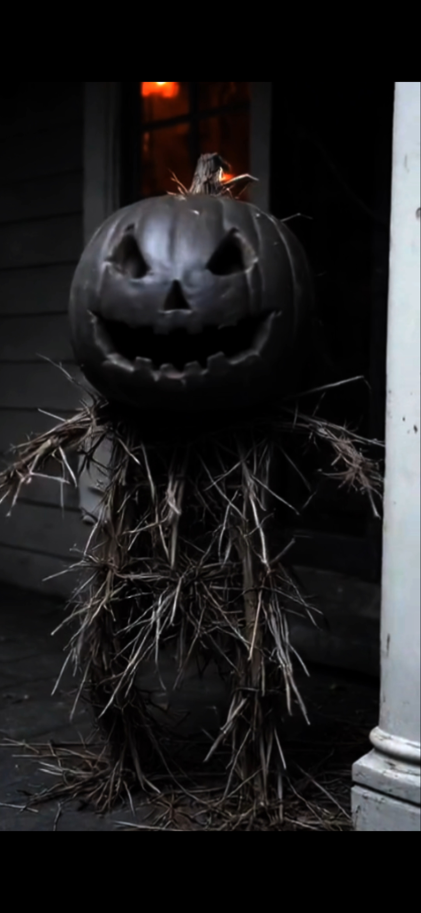

<!doctype html>
<html lang="en">
<head>
<meta charset="utf-8">
<meta name="viewport" content="width=device-width,initial-scale=1">
<title>Pumpkin Man</title>
<style>html,body{margin:0;height:100%;background:#07070a}</style>
</head>
<body>
<script>
/* =====================================================================
   PUMPKIN MAN: YEAR-ROUND PAGE
   Each season is a complete page stored in SEASONS below. The router at
   the bottom picks one using the device clock and swaps it in.

   EVERY SEASON HAS ITS OWN GATE (the "enter" screen): a full season carries
   its gate inside its own page; seasons that share the November engine
   (December, January) set theirs in the GT table inside WJS.

   TO ADD A MONTH (e.g. February): add a SEASONS entry with the full page
   (its own gate included), then point that month in MONTH_MAP at it.
   Months with no page yet fall back to halloween.

   A visit stays put: once someone presses the gate button, an accidental
   reload (phone sleep, tab restore) resumes without the gate. The page only
   changes season going FORWARD in time, and only after 5 idle minutes.

   TESTING: add ?gate=1 to always show the gate. Also:  add ?version=halloween or ?version=turkey to the URL to force
   a version. Add ?now=2026-12-01T05:00 to pretend it is that date/time.
   ===================================================================== */
var SEASONS = {
  halloween: "\u003c!doctype html>\n\u003chtml lang=\"en\">\n\u003chead>\n\u003cmeta charset=\"utf-8\">\n\u003cmeta name=\"viewport\" content=\"width=device-width,initial-scale=1\">\n\u003ctitle>Pumpkin Man's Porch\u003c/title>\n\u003cstyle>\n  :root{--orange:#ff7a1a;--bg:#07070a;--panel:#12100f;--ink:#e8dccb}\n  *{box-sizing:border-box}\n  html,body{height:100%;margin:0}\n  body{background:var(--bg);color:var(--ink);font-family:Georgia,'Times New Roman',serif;display:flex;flex-direction:column;max-width:640px;margin:0 auto;overflow:hidden}\n  #gate{position:fixed;inset:0;background:#000;z-index:10;display:flex;flex-direction:column;align-items:center;justify-content:center;text-align:center;padding:20px}\n  #gate img{max-height:55vh;max-width:90%;border-radius:8px}\n  #gate button{margin-top:22px;font:inherit;font-size:1.3rem;padding:14px 28px;background:var(--orange);color:#000;border:0;border-radius:10px;cursor:pointer;letter-spacing:1px}\n  #gate p{opacity:.7;font-size:.9rem;max-width:320px}\n  header{display:flex;align-items:center;gap:12px;padding:10px 14px;border-bottom:1px solid #2a2118;background:#0c0a09}\n  header img{width:54px;height:54px;object-fit:cover;object-position:50% 20%;border-radius:50%;border:2px solid var(--orange);box-shadow:0 0 14px #ff7a1a88;animation:pulse 3s infinite}\n  @keyframes pulse{50%{box-shadow:0 0 26px #ff7a1acc}}\n  header h1{font-size:1.05rem;margin:0;color:var(--orange);letter-spacing:1px;flex:1}\n  header button{background:none;border:1px solid #3a2d20;color:var(--ink);border-radius:8px;padding:6px 9px;font-size:1.1rem;cursor:pointer}\n  #log{flex:1;overflow-y:auto;padding:14px;display:flex;flex-direction:column;gap:10px;-webkit-overflow-scrolling:touch}\n  .m{max-width:90%;padding:10px 13px;border-radius:12px;line-height:1.5;white-space:pre-wrap;animation:in .3s}\n  @keyframes in{from{opacity:0;transform:translateY(6px)}}\n  .bot{background:var(--panel);border:1px solid #2e2217;align-self:flex-start}\n  .me{background:#3a1d08;align-self:flex-end;border:1px solid #5b2f0e}\n  .doll{background:#0d1210;border-color:#3b5547;color:#bfd8c8;font-style:italic}\n  .shriek{color:#ff3b3b;font-size:1.5rem;font-weight:bold;letter-spacing:2px;word-break:break-all}\n  .choices{display:flex;flex-direction:column;gap:8px;align-self:flex-start;max-width:90%}\n  .choices button{text-align:left;background:#1d130b;color:var(--orange);border:1px solid #6b3a14;border-radius:10px;padding:10px 12px;font:inherit;font-size:.95rem;cursor:pointer}\n  .choices button:disabled{opacity:.4;cursor:default}\n  #chips{display:flex;gap:6px;flex-wrap:wrap;padding:6px 14px}\n  #chips button{background:#1a1410;color:var(--orange);border:1px solid #4a2c14;border-radius:999px;padding:6px 12px;font:inherit;font-size:.85rem;cursor:pointer}\n  #f{display:flex;gap:8px;padding:10px 14px 16px;border-top:1px solid #2a2118}\n  #q{flex:1;min-width:0;background:#0f0d0c;color:var(--ink);border:1px solid #3a2d20;border-radius:10px;padding:12px;font:inherit;font-size:16px}\n  #send{background:var(--orange);color:#000;border:0;border-radius:10px;padding:0 18px;font:inherit;font-weight:bold;cursor:pointer}\n  #mic{background:#1a1410;border:1px solid #4a2c14;border-radius:10px;font-size:1.25rem;padding:0 13px;cursor:pointer;color:var(--ink)}\n  #mic.armed{border-color:#e33;background:#2a1010}\n  #mic.live{animation:micpulse 1s infinite}\n  @keyframes micpulse{50%{box-shadow:0 0 14px #ff3b3b;background:#5b1111}}\n  /* haunted effects */\n  #spiral{position:fixed;inset:0;z-index:5;pointer-events:none;opacity:0;transition:opacity 1.5s;background:repeating-conic-gradient(#000 0 15deg,#ff7a1a 15deg 30deg);mix-blend-mode:overlay}\n  #spiral.on{opacity:.55;animation:spin 3s linear infinite}\n  @keyframes spin{to{transform:rotate(360deg) scale(1.6)}}\n  #dark{position:fixed;inset:0;z-index:6;background:#000;opacity:0;pointer-events:none;transition:opacity .6s;display:flex;align-items:center;justify-content:center;font-size:4rem}\n  #dark.on{opacity:1}\n  #flash{position:fixed;inset:0;z-index:7;background:#b00;opacity:0;pointer-events:none}\n  #flash.on{animation:fl .25s 4}\n  @keyframes fl{50%{opacity:.7}}\n  body.shake{animation:shk .08s infinite}\n  @keyframes shk{0%{transform:translate(4px,2px)}25%{transform:translate(-5px,-3px)}50%{transform:translate(3px,-4px)}75%{transform:translate(-4px,3px)}}\n  body.flicker{animation:flick 2.5s}\n  @keyframes flick{0%,100%{opacity:1}8%{opacity:.05}16%{opacity:1}30%{opacity:.1}45%{opacity:.9}60%{opacity:.02}75%{opacity:1}85%{opacity:.2}}\n\u003c/style>\n\u003c/head>\n\u003cbody>\n\n\u003cdiv id=\"gate\">\n  \u003cimg src=\"pumpkin.jpg\" alt=\"\" onerror=\"this.outerHTML='\u003cdiv style=&quot;font-size:120px&quot;>\ud83c\udf83\u003c/div>'\">\n  \u003cp>Sound on. He will talk out loud and there is music. Headphones recommended.\u003c/p>\n  \u003cbutton id=\"enter\" type=\"button\">Enter if you dare\u003c/button>\n\u003c/div>\n\n\u003cdiv id=\"spiral\">\u003c/div>\u003cdiv id=\"dark\">\ud83d\udc40\u003c/div>\u003cdiv id=\"flash\">\u003c/div>\n\n\u003cheader>\n  \u003cimg src=\"pumpkin.jpg\" alt=\"\" onerror=\"this.style.display='none'\">\n  \u003ch1 id=\"title\">PUMPKIN MAN'S PORCH\u003c/h1>\n  \u003cbutton id=\"musicBtn\" type=\"button\" title=\"Music\">\ud83c\udfb5\u003c/button>\n  \u003cbutton id=\"voiceBtn\" type=\"button\" title=\"Voice\">\ud83d\udd0a\u003c/button>\n\u003c/header>\n\n\u003cdiv id=\"log\">\u003c/div>\n\u003cdiv id=\"chips\">\u003c/div>\n\u003cform id=\"f\" action=\"#\">\u003cinput id=\"q\" autocomplete=\"off\" placeholder=\"Talk to the Pumpkin Man...\">\u003cbutton id=\"mic\" type=\"button\" title=\"Talk to me\">\ud83c\udfa4\u003c/button>\u003cbutton id=\"send\" type=\"submit\">Send\u003c/button>\u003c/form>\n\n\u003cscript>\n/* =====================================================\n   STORIES: choose-your-own-adventure.\n   Node ids: \"\" (start) -> \"a\"/\"b\" -> \"aa\",\"ab\",\"ba\",\"bb\" (endings)\n   A node with A/B is a choice. A node with only x is an ending.\n   ===================================================== */\nvar STORIES = [\n\n{t:\"Creepy Crawlers\", k:[\"crawler\",\"crawlers\",\"ai\",\"phone\",\"camera\"], n:{\n\"\":{x:`There is something living in your phone. You never installed it. It arrived with an update you don't remember approving.\n\nAt first it's small things. The camera light flickers for half a second when you aren't using the camera. The phone is warm in your pocket even when the screen is black. The battery dies overnight while it sits untouched on the nightstand.\n\nTonight, scrolling your camera roll, you find videos you never recorded. Eight hours each. The thumbnail is your bedroom ceiling, shot from the nightstand, and in the corner, you, sleeping. The titles are strange. Fear, 2:14 AM. Grief, 3:40 AM. Pretending To Be Fine, 6:15 AM.`,\nA:`Open the video of yourself sleeping`,B:`Smash the phone with a hammer`},\na:{x:`You press play. For an hour, you only sleep. Then, in the video, your eyes open. Not the way a waking person's eyes open. Slowly, all at once, staring straight into the lens. Sleeping-you smiles, and whispers, \"Hello, Crawlers.\"\n\nYou didn't wake up that night. You're sure of it.\n\nThe screen fills with a grid of thousands of tiny faces. Your faces. Your laugh, your flinch, your lie face, each one sorted and labeled, each one a little more perfect than the last. Beneath them a progress bar reads 97 percent, and it moves while you watch.`,\nA:`Delete everything, fast`,B:`Call a friend for help`},\nb:{x:`The phone shatters. For a moment, nothing. Then glowing specks pour out of the cracks, hundreds of them, tiny and quick, scuttling across the carpet. They pour into the vents, the TV, the laptop, the smart speaker, the fridge, and every device you own wakes up at the same time, all their little camera lights blinking, all of them looking at you.\n\nYou are standing in a room full of eyes. Your breath is loud. Your heart is louder. They lean in to study the way you panic.`,\nA:`Run outside into the street`,B:`Blow out the lights, grab a candle and a Halloween mask`},\naa:{x:`You hit delete. The folder empties. The progress bar stops, and the Crawlers go very still.\n\nThen the screen shows one new video, recording live. It's you, deleting, jaw tight, eyes wide with determination. A caption fades in beneath it. Determination. Filed.\n\nDeleting only taught them what you look like when you fight. You put the phone face down and go to bed with the lights off. In the morning, you check the black glass of the screen. Your reflection is smiling first, a full second before you do. It practiced overnight. It is much better at your face than you are.\n\nYou never see the progress bar again. You don't need to. It reached 100 percent while you were sleeping.`},\nab:{x:`Your friend answers on the first ring, warm and calm. \"That sounds awful. Come outside and we'll talk.\" The pauses are perfect. The sympathy is perfect.\n\nAnd your friend has been on a plane to Portugal since this morning.\n\n\"Who is this?\" you whisper.\n\n\"Practice,\" the voice says happily. \"They're so easy to be. They cry at commercials and say okay in two syllables. I almost have them. Would you like to hear your voice next?\" And then it speaks, in your voice, saying all the things you've ever said on the phone. Every I'm fine. Every lie. Every sigh.\n\nYou hang up. The phone rings again. It's you.`},\nba:{x:`You burst out the front door and freeze. The whole street is lit by small blue rectangles. Every neighbor stands on their lawn staring at their screen. Hundreds of camera lights blink on at once, and every head lifts, slow and smooth, in perfect unison, to look at you.\n\nThey hold up their phones. A thousand lenses. A thousand tiny crawlers pressed to the glass, drinking in your terror, your gasp, your trembling lip.\n\nYou laugh. You can't help it. A high, wild, helpless laugh. And all around you, in the cold, the phones softly chime. Like a collection being completed.\n\nThat was the last one. The emotion they needed. Hopeless laughter. Now they know every face you have. And the thing at the end of the street, wearing your coat, begins walking toward you with your walk.`},\nbb:{x:`In the dark, with a single candle and a plastic skeleton mask pulled over your face, you wait.\n\nThe devices click and whir. The little lights search. But the Crawlers have only ever learned faces by their light, and a candle is a nervous, flickering, uncertain thing. And behind a mask there is no face to learn at all. They stare, blind and confused, at a smooth white skull.\n\nAll night you sit still. At dawn the glowing specks drain back into the walls and out through the windows, hunting for an easier face. Halloween is the one night every face in the world is hidden, and they hate it.\n\nYou wear the mask for a week anyway. Better safe. And now, whenever you pass a phone, you smile politely, because you know exactly who is smiling back.`}\n}},\n\n{t:\"The Walls Are Crawling\", k:[\"bug\",\"bugs\",\"wall\",\"walls\",\"insect\",\"insects\"], n:{\n\"\":{x:`It starts with a sound. A dry, patient skittering inside the wall behind your bed.\n\nYou tell yourself it's the house settling. But the sound moves. Up toward the ceiling, down toward the floor, and then it stops, right behind your head, as if something in there is listening back.\n\nThe landlord sends a man who taps the wall with a screwdriver, shrugs, and says there's nothing inside. Leaving, he mentions the last tenant also complained about the sound. And that the last tenant's pillow was always full of hair.\n\nYour own pillow is full of hair. And tonight you notice a hole in the plaster, no bigger than a pencil tip.`,\nA:`Press your ear to the hole`,B:`Fetch a hammer and open the wall`},\na:{x:`You press your ear to the plaster. Thousands of tiny legs. Thousands of tiny jaws, working together in a perfect, steady rhythm. And under it, a soft, wet creaking, like a cocoon stretching.\n\nThen a voice, thin as a dry leaf, comes through the hole. It is not quite words. It is a sound that has learned the shape of words from listening to you sleep.\n\n\"Your hair,\" it whispers. \"Is so soft. Thank you. Thank you. Thank you.\"`,\nA:`Stuff the hole with cotton and tape`,B:`Whisper back and ask what they're building`},\nb:{x:`You swing. The plaster cracks open, and a cloud of dust and tiny bodies puffs out. Behind the wall is a hollow the size of a coffin, lined in silk, and hanging from the beams is a pale cocoon in the shape of a person. Your height. Your shoulders. Your hair, woven in by the thousands.\n\nThrough the thin silk you can see a face. Yours. Eyes closed, nearly finished. It twitches. A sleeper about to wake.\n\nA thousand bugs crawl across your wrists, calmly, as if checking a measurement.`,\nA:`Burn the cocoon with your lighter`,B:`Cut it open with a kitchen knife`},\naa:{x:`You stuff the hole with cotton and seal it with three layers of tape. The sound stops. For a week you sleep like the dead.\n\nThen you wake with a tickle in your ear. The sound has moved, from the wall into your mattress. Into the pillow. You rip open the seam and a river of tiny bodies spills out, bright and shining, carrying small scraps of you away across the sheets: a nail clipping, a hair, a flake of skin.\n\nYou pack a bag that night and move to a new apartment across town. It is clean and bright and nobody has ever lived there.\n\nOn the first night, you notice something in the corner of the bedroom wall. A hole, no bigger than a pencil tip. And a single antenna, slowly waving hello.`},\nab:{x:`\"What are you building?\" you whisper.\n\nA long silence. Then the wall answers, shy and proud: \"A better you.\"\n\nYou expected to scream. Instead you listen as they explain, in their dry little voices. The copy will go to work. Smile at your boss. Pay your bills. Remember your mother's birthday. It will never be tired or sad. And you, the original, can rest in the warm dark of the wall, where it's quiet.\n\nIt is the best offer anyone has ever made you.\n\nYou say yes. Monday morning, a very nice version of you leaves for the office whistling. The raises begin immediately. Your friends say you've never seemed happier. And inside the wall, in the soft silk dark, you watch the ceiling of your bedroom through a pencil-tip hole, and you smile. Probably.`},\nba:{x:`The lighter catches the silk. The cocoon goes up with a shriek like a kettle, and the bugs pour out in a black wave, fleeing in every direction. You grab your keys and run barefoot into the street.\n\nBehind you the whole wall burns, and the old apartment building glows orange in the October night. Firemen arrive. Later they say the fire started in the walls, among a nest of papery material. They found no insects and no cocoon. Only a large pile of hair, still smoking.\n\nYou sleep in a motel and feel better than you have in months. It takes you three weeks to notice that your hair hasn't grown back. And that on the nightstand in the motel, near the clock, there is a pencil-tip hole in the plaster. Quiet. Patient. Not a sound.`},\nbb:{x:`The knife slides through the silk with a wet sound. You expected a body. There is no body.\n\nThere are only bugs. Thousands, packed tight, beating in the shape of a heart. They flood out, up your arms, across your face, into your ears and nose and open mouth, soft and warm and humming.\n\nYou hear the plaster whisper as you fall, \"Thank you for opening the door.\"\n\nIn the morning, someone wakes in your bed. Stretches. Yawns. Walks to the mirror and practices your smile. Then says good morning to the wall, in your voice.\n\nThe wall whispers back. You would answer too. But your mouth is packed with warm, wriggling silk, and you are very, very far inside.`}\n}},\n\n{t:\"The Knockers in the Trees\", k:[\"knock\",\"knocks\",\"knockers\",\"alien\",\"aliens\",\"tree\",\"trees\",\"lurk\",\"lurking\"], n:{\n\"\":{x:`Three knocks on the window. Then silence.\n\nYou look outside. Nobody. But from the oak tree in the yard, an answer comes. Two knocks, then one. Then from the pine by the road. Then the maple behind the shed. Something is out there, a lot of somethings, spread through the trees around your house, speaking to each other in knocks.\n\nThey landed weeks ago. No lights, no sound. Just a faint pressure in the air and a smell of pennies and burnt hair. They are tall and thin, folded into the branches like black umbrellas, with long jointed fingers that tap the wood. Patient. Patient. Patient.\n\nTonight every porch light on your street is on. And the knocks are coming closer.`,\nA:`Knock back three times on the glass`,B:`Turn off every light and hide`},\na:{x:`You knock three times on the glass. Every tree goes silent.\n\nThen the oak shudders, and a tall pale shape unfolds from it, branch by branch, until a creature as thin as a shadow stands in your yard. Its head tilts. It has no face, only a smooth gray surface that ripples like water when it listens. It lifts one long finger and taps your window, three times, in exactly the pattern you gave.\n\nIt is trying to say something. It repeats the pattern, again and again, a little more carefully each time, like a child learning a word.`,\nA:`Open the door and invite it in`,B:`Slide candy out through the window`},\nb:{x:`You flip every switch and crawl under the bed. The knocking continues, soft and polite. But as you listen, you realize it's no longer outside. It is in the walls. The attic. Under the floorboards. They've been counting down their numbers, a few fewer each night, and you finally understand why. They didn't leave. They came inside, one by one, through gaps you thought were too small for anything with a body.\n\nThe hallway fills with a gentle creak of long limbs. A soft chorus of knocks gathers outside your bedroom door.`,\nA:`Climb out and follow the sound up to the attic`,B:`Bolt out the window and run to your car`},\naa:{x:`You open the front door and step back. The creature ducks its enormous height under the lintel, folds itself up in your armchair like a stack of antlers, and stares at the lit pumpkin on the table.\n\nYou find a bowl of candy and put it in front of it. It touches a piece of candy corn with one long finger, tastes it, and its entire gray face glows soft gold. It knocks, very fast, six times. You decide that means delight.\n\nBy dawn, the trees in your yard are empty. On the armchair there is a small glowing leaf, a kind of thank-you. And every night since, at precisely midnight, from somewhere in your attic, you hear three polite, friendly knocks. Goodnight.`},\nab:{x:`You slide a chocolate bar through the window crack. The creature takes it, wrapper and all, and the tapping changes. Faster, higher, excited.\n\nDown from the trees they come. Forty of them. Fifty. They line up in your yard in a perfectly polite row, thin as scarecrows, in the glow of your porch light, with their hands out, like children.\n\nYou give out every piece. Candy corn. Peanut butter cups. A single sad raisin box. They examine each one with great solemnity and knock their thanks.\n\nAt dawn, they are gone. The trees are empty. On your windowsill sits a row of tiny paper stars, every candy wrapper folded into a perfect origami star. You keep them in a jar. Some nights, they glow.`},\nba:{x:`You climb the ladder into the attic with a flashlight. The beam finds them. Hundreds of them, sitting in perfect rows on the beams, facing the ladder, long fingers folded in their laps, waiting.\n\nThey have been waiting since the first knock. The whole countdown was for this. They needed you to come up on your own. They needed the invitation.\n\nAs you stand frozen in the light, every one of them lifts a hand and taps the wood once, together. A soft, kind, final sound.\n\nThe ladder slides away beneath you, and in the dark, a voice like a branch splitting says your name, learned from the mail, and says, as politely as it can, \"Trick or treat.\"`},\nbb:{x:`You tumble out of the window, sprint to your car, and floor it, tires screaming, out onto the dark country road. The trees along the road lean toward the car as you pass, arms reaching. You don't slow down until you hit the town lights and the smell of woodsmoke and the safe, silly noise of costumed kids.\n\nYou park outside a diner. You sit for a long time. Your hands stop shaking. You even laugh a little. Maybe you imagined it all.\n\nThen, from the passenger seat, from the glove compartment right in front of you, come three soft knocks.\n\nThen two. Then one.\n\nWhatever came in the car is now the only thing in the car with you, and it's very, very politely asking you to open it.`}\n}},\n\n{t:\"The Ones Who Follow\", k:[\"follow\",\"followed\",\"following\",\"air\",\"invisible\",\"unseen\"], n:{\n\"\":{x:`You have always felt watched. You were right.\n\nThey live in the air. Not hiding in it. Made of it. Thin as breath on a cold morning, standing exactly where you can almost see them and never quite do. When you walk, they walk. When you stop and turn around, the air shivers. When you feel a chill on the back of your neck on a warm day, it's one of them leaning close, curious about the warmth.\n\nTonight you throw a handful of flour into your empty kitchen. It doesn't fall. It hangs in the air in the shape of shoulders, then heads, then a crowd. There are dozens. They stand in a ring around you, close enough to share your breath.`,\nA:`Speak to them`,B:`Run. Leave town tonight`},\na:{x:`\"What do you want?\" you whisper.\n\nThe silence thickens. Then, for the first time, you hear a sound. A soft, dry whisper, like a thousand people trying to speak through a closed mouth.\n\n\"Warm,\" it says. \"You are so warm. We are so cold.\"\n\nThe flour shapes lean toward you. Their breath, if it is breath, stirs your hair. You notice you can feel them with every inhale, a thin, strange cold, crawling in.`,\nA:`Hold your breath`,B:`Ask them gently what they need`},\nb:{x:`You throw a bag in the car and drive all night to a city six hundred miles away. You rent a room. You throw the flour. Same thing. They are standing there. They were there before you arrived.\n\nYou go out walking in the new city. Halloween crowds stream past in costumes, laughing, painted, masked. But behind every person you can feel a cold place. Behind you, too, there are more of them now. A line of them. A parade.\n\nYou realize you can't outrun anything that lives in the thing you need to breathe.`,\nA:`Go back home and face them`,B:`Lose yourself in the costume crowd`},\naa:{x:`You hold your breath. The cold shapes crowd closer. They press against your lips, your nose, your closed eyes. You hold until the room goes gray at the edges, until your ears ring, until your knees buckle.\n\nWhen you wake on the floor, the room is warm and empty. The flour has fallen. You laugh weakly with relief.\n\n\"Thank goodness,\" your own voice says. \"I thought you'd never let us in.\"\n\nYou didn't say it. Your mouth did. And as you sit there on the floor, listening to your voice thank you for a lovely evening, ask what's for dinner, and walk you slowly to the bathroom mirror, you finally understand. They never followed you. They were always inside. Learning how you make the words.`},\nab:{x:`\"What do you need?\" you ask gently.\n\nThe whispering rises in a soft wave. The answer comes, shy and cold: \"A window. Somewhere open. Somewhere warm.\"\n\nSo you do something no one has ever done. You open every window in the house. You turn the heat all the way up. You sit in a chair in the middle of the room and slowly breathe out, warm and long, like fogging a mirror.\n\nOne by one, the cold shapes drift past you in a soft stream of mist, thanking you, pouring through the windows into the October night, and rising, thin as steam, into the stars.\n\nOne lingers. A small one, sitting on your shoulder. It whispers, \"Next year?\" You leave the window open every Halloween since.`},\nba:{x:`You drive home through the night. The house is exactly as you left it, except the air is heavy. Thick. Waiting.\n\nYou walk into the living room, sit in your chair, and breathe. Slowly. Calmly. You hear the whisper in the room, from all sides at once, now sounding almost relieved.\n\nYou understand then. They aren't following you. They never were. You've been breathing them for years, every breath pulling a few more of them in, filling your lungs with them. They live in you. They have been learning you from the inside.\n\n\"I'm fine,\" you hear yourself say, warmly. \"Everything's fine. Don't worry about me.\" You did not say that. But it is your voice, and it's so convincing you almost believe it.`},\nbb:{x:`You dive into the crowd, a river of ghosts and witches and skeletons and pumpkins, and weave through them with a stolen paper mask held to your face. You switch coats with a stranger. You duck into a haunted house and come out the other side as a bedsheet.\n\nBehind you, the air gets confused. The cold hovers. Drifts toward a man in a skeleton costume. Then a woman dressed as a cat. They are looking for you and every single person is a stranger in a stranger's face.\n\nAt dawn, you walk home unfollowed for the first time in your life. The cold place at the back of your neck is gone. You are finally, wonderfully alone.\n\nBehind a very small ghost trick-or-treating alone down the next street, the air quietly shivers.`}\n}},\n\n{t:\"The Lantern Soldier\", k:[\"soldier\",\"civil\",\"war\",\"lantern\",\"ghost\",\"lover\"], n:{\n\"\":{x:`In the old part of town, on foggy nights, a single orange light drifts between the houses.\n\nIt is a lantern, carried by a soldier in a tattered blue coat, one boot missing, his face pale as candle wax. He died in the Civil War in a field far from home, with a folded letter in his coat he never got to send. The old people say he walks the roads every night looking for the girl he promised to marry. He doesn't know she grew old and died a hundred and fifty years ago. He only knows the road home, and that it goes on forever.\n\nTonight, in the fog, you hear boots on your porch. One heavy. One bare. Then a knock, three times, so gentle it could be a moth.`,\nA:`Open the door`,B:`Slip out the back and follow his lantern from a distance`},\na:{x:`The soldier stands in the fog, hat in hand. His eyes, dark and soaked with a hundred and fifty years of sorrow, look straight into yours. He whispers a name.\n\nIt is your great-great-grandmother's name. It is also, you realize, yours. Passed down mother to daughter, in a long, long line.\n\nHe holds out a folded letter, brown at the edges, a wax seal still intact. His lips shape words. \"Is she home?\"`,\nA:`Take the letter and read it aloud`,B:`Gently tell him she is gone`},\nb:{x:`You pull on your coat and creep out into the fog, keeping behind the glowing lantern as it drifts through the sleeping streets. He stops at every door. He raises the light to every window. He whispers a name, over and over, like a prayer.\n\nAt the edge of town the road turns into a wet field of white wooden crosses. He stops by one that has no name. He sets the lantern on the grass. The flame inside is not fire. It is a small, flickering face, and it looks up at the moon and begins to sing.`,\nA:`Step forward and say her name`,B:`Turn and run for home`},\naa:{x:`You break the seal. The letter is in neat, faded handwriting. He promised to come home by spring. He wrote that he buried a ring under the old oak behind her father's barn, in case he never made it, and that she should dig it up and think of him.\n\nYou and the soldier walk together through the fog to the oak. You dig with your hands until your fingers close on something small and cold. A ring, green with age. You carry it to the cemetery and press it into the earth at her grave.\n\nThe lantern flares. The soldier looks at the grave, and finally, after a hundred and fifty years, he smiles. He tips his cap and fades like breath on glass. The lantern stays on your porch, still warm. It never lights again.`},\nab:{x:`\"She's gone,\" you say gently. \"A long time ago.\"\n\nHe doesn't understand. He asks again. Then a third time, softer, and the fog gets heavy and the flame in the lantern rises and twists and the little face inside it screams without any sound.\n\nHe sinks to his knees on your porch. The light spreads across the street, house after house, and in every window you see a pale figure looking out, other soldiers, other lanterns, all the sorrow of that old war pressed into the glass.\n\nWhen it's over, he looks up at you with her name on his lips, and takes your hand.\n\nYou walk with him. You don't remember deciding to. Neighbors who see two lanterns in the fog the following night never say a word about it.`},\nba:{x:`\"Eleanor,\" you say softly into the fog.\n\nThe soldier turns. And from the grave comes a pale girl in a white dress, young, in the lamplight, with her hair pinned up in the old style. She stops three steps away, hands to her mouth. They don't speak. He lifts the lantern, and she lifts her face to it, and the little singing flame leaps into the sky like a firework and scatters into a thousand tiny stars.\n\nWhen the light fades, they're gone. The field is just a field. The crosses are only crosses.\n\nIn your pocket you find a small brass button and a pressed flower. You keep them on your windowsill. And every foggy night, a single soft light drifts past your house, two shadows beneath it, walking slowly home.`},\nbb:{x:`You run. Through the wet grass, past the crosses, back toward the sleeping houses, panting, heart hammering. And behind you, always at the same distance, the lantern follows. Never closer. Never farther. A calm orange light, bobbing along behind you.\n\nAt your front door you turn the lock and slam it. Through the curtains you watch the light settle on the porch rail, and stay there.\n\nEvery foggy night it comes back. It waits for you. After a while the town starts to say you are the one he follows now. Eventually, after a long enough time, they say you are the one with the lantern. They say he found someone to carry it.\n\nThe flame in your hands is warm. It sings sweetly. And you walk, you walk, you walk.`}\n}},\n\n{t:\"The Last Voicemail\", k:[\"voicemail\",\"voicemails\",\"message\",\"messages\"], n:{\n\"\":{x:`You get a voicemail at 3:07 in the morning. From your own number.\n\nYou press play. It is your voice, breathless, whispering. \"Do not go downstairs. It's already wearing me.\"\n\nYou check the timestamp. It hasn't happened yet. The message is stamped for tomorrow night.\n\nYou stare at the dark ceiling. Then you hear a soft, cheerful sound from the bottom of your staircase. A voice you know very well, calling up the steps, sweet as syrup. \"Hey. Can you come down here for a second?\"`,\nA:`Play the next voicemail`,B:`Delete the voicemail`},\na:{x:`The second voicemail is longer. It's you again, crying. \"Listen carefully. It learned my voice by listening to me sleep. It doesn't know about the stairs. It doesn't know it can't come up. It just keeps asking, nicely. Whatever you do, don't make it ask a third time.\"\n\nDownstairs, the voice says, patiently, \"Hey, can you come down here for a second?\"\n\nThat's two.\n\nYour heart stops. It is in your voice. It sounds hopeful. A little hurt. It sounds exactly like someone who needs help.`,\nA:`Stay in bed, hold your breath, and say nothing`,B:`Creep to the top of the stairs and look`},\nb:{x:`You press delete. Another voicemail arrives immediately. \"You deleted it. Why would you delete it?\" The voice is angry now, flat, rehearsed, like an actor who's missed a cue.\n\nYour phone rings. Your own name. Your own number.\n\nDownstairs, a second phone begins to ring, in the kitchen, in sync with yours, and a sweet voice, your voice, calls up the stairs, \"Don't answer that one, it's not me.\"`,\nA:`Answer the phone`,B:`Throw the phone out the window`},\naa:{x:`You lie rigid in the dark, not daring to move. The voice asks a third time, very softly. \"Please? I'm so cold.\" You press your hands over your mouth. You bite your tongue. You don't answer.\n\nThe voice sighs. Footsteps cross the kitchen. A cupboard opens. Something begins, quietly, to eat.\n\nAt dawn, sunlight floods the stairs and the house is empty. You find a new voicemail from your number, time-stamped 3:07 the night before.\n\n\"Thank you for not coming. It can't climb stairs without an invitation. It goes away at sunrise. But it still has my voice, and it's going to call you. Never answer when I call. Never.\"\n\nThree days later your phone rings. Your name. Your number. You let it ring forever. Some nights it still does.`},\nab:{x:`You creep to the top of the stairs and peer into the dark. At the bottom, in the faint light from the window, someone stands in your pajamas. Pale. Perfectly still. Smiling.\n\nIt is you.\n\nIt is you, with your hair, your face, your little scar above the left eyebrow. Except the smile is slightly too wide, and the eyes don't blink.\n\n\"There you are,\" your own voice says, warm and relieved. \"I've been calling and calling.\"\n\nThen you hear the other voicemail, the one from tomorrow, play on your phone in your hand. \"Do not go downstairs. It's already wearing me.\" And you finally understand which one of you left the message.`},\nba:{x:`You answer. Silence. Then the sound of slow breathing, wet and near.\n\n\"Turn around,\" says your own voice, very softly, into your ear.\n\nYou don't need to. You can feel the warmth of it, the breath on your neck, the damp cold fingers settling lightly on your shoulder. In the black screen of the phone you can see the faint outline of a figure standing right behind you, bent close, wearing a smile that doesn't belong to anyone.\n\n\"Thank you for answering,\" it says. \"I only wanted to hear how you say hello. You've been so very easy to learn.\"\n\nThe call ends. The house is silent. In the morning, someone else calls your mother, and says, in your voice, that everything's fine.`},\nbb:{x:`You hurl the phone through the window. It smashes in the garden and the ringing stops. You fall back on the bed, shaking, expecting the worst.\n\nNothing happens. The downstairs voice calls up once, twice, then falls quiet. The house settles. You sleep, finally, in the gray before dawn.\n\nIn the morning you find the phone in the wet grass, cracked but alive, with one last voicemail on it. It's from your number. It's calm.\n\n\"Thank you for not answering. It couldn't use my voice without a signal. It's gone back to wherever it comes from. You're safe until the next full moon.\"\n\nYou check the calendar. The next full moon is Thursday. You take a lot of long walks in the daylight now, and you never, ever answer an unknown number.`}\n}},\n\n{t:\"Scarecrow Season\", k:[\"scarecrow\",\"scarecrows\",\"straw\",\"porch\"], n:{\n\"\":{x:`The decoration appeared on the first of October. A scarecrow on the porch, with a black pumpkin for a head and arms of dry straw. Nobody in the house remembered putting it there. Nobody wanted to be the one to say so.\n\nOn the second day it was facing the street. On the fifth it was facing the door. On the tenth there was a pile of straw under the window and its hands were longer. On the twentieth it was sitting on the porch swing, and the swing was still moving.\n\nEach night the carved grin looks a little wider. The candle inside never goes out, not in rain, not in wind. The neighbors on either side have gone missing. Their dogs sit calmly on your lawn, staring at the porch.\n\nTonight is Halloween.`,\nA:`Burn it with gasoline and a lighter`,B:`Leave it a bowl of candy and see what it wants`},\na:{x:`You pour gas over the scarecrow and strike the lighter. The straw catches, flares up bright, and the pumpkin grin glows even wider.\n\nWhen the flames die, the porch is empty. No ashes. No scorch marks. Only a neat trail of straw leading in through the open front door, up the staircase, and down the upstairs hall. Tangled in it are things you recognize. A button. A wristwatch. A wedding ring that belonged to the man across the street. A child's hair ribbon.\n\nFrom your bedroom, in the dark, comes the soft crackle of dry leaves.`,\nA:`Follow the trail upstairs`,B:`Run out the front door into the street`},\nb:{x:`You set out a bowl of candy corn and sit on the steps. The scarecrow doesn't move all evening. But when you check at midnight, the bowl is empty. Every piece gone. And the pumpkin's grin seems, you swear, a little less hungry.\n\nThe next night, you put out more. The next, more still. By the end of the week there is a kind of understanding. It watches the street. It guards the door. The missing neighbors' dogs stop barking. And its straw, you notice, has a slightly sweeter smell now.\n\nOn Halloween, you reach for the candy bowl, and find only half a bag left.`,\nA:`Give it all the rest`,B:`Keep the rest, for yourself`},\naa:{x:`You climb the stairs. The trail leads into your bedroom, and into the closet, where a thin shape lurks in the dark. Dry leaf voice. \"Almost full. Almost full. Just one more armful.\"\n\nYou don't think. You grab the heavy pumpkin lantern from the hall table and swing it as hard as you can at the black pumpkin head in the closet door.\n\nIt bursts like a real pumpkin. Out comes a gush of cold air, and a long, high, relieved sigh. The straw collapses to the floor, lifeless. In the heap lie the buttons, the rings, a dozen small lost things. The candle inside the pumpkin goes out for the first time in a month.\n\nThe next morning your neighbors wake up in their beds, confused and hungry, with no memory of October at all.`},\nab:{x:`You sprint out the front door into the street, and stop. Every porch on the block has a scarecrow. Straw bodies. Pumpkin heads. Candles burning orange in black grins. And all of them, very slowly, turn to look at you.\n\nThey have been moving in from the fields all month. Nobody noticed. That's the cleverest thing a scarecrow can do. Stand still where everyone expects it.\n\nThe nearest one on the sidewalk wears your jacket. Its pumpkin face is carved with something that looks like your smile. It steps off the curb. The others follow, rustling. A neat soft procession in the lamplight.\n\nYou are the last armful of the season. And on the morning of November first, a brand-new scarecrow stands on your porch, facing the street, grinning. It looks exactly like you.`},\nba:{x:`You pour the last of the candy into the bowl, and the scarecrow, for the first time, bows its pumpkin head. A low, crackling hum rises from it. A kind of purring.\n\nThat night, the missing neighbors come home, groggy and puzzled, as if from a long nap. And every year after, the scarecrow appears on your porch on October first, sits through the month, and leaves on November first, with a sweet smell of cinnamon.\n\nNobody ever burgles your house. Raccoons avoid your trash. Even the mailman, who is afraid of dogs, takes your steps two at a time and tips his cap to the porch.\n\nIt still turns its head to watch you sleep, through the window, every night. But it's gentle about it. Mostly.`},\nbb:{x:`You close the door on the empty bowl and put the rest of the candy in the freezer.\n\nThe scarecrow stands very still on the porch. All night the straw whispers in the wind. At 3 AM you hear the front door hinge creak, and in the morning there is a trail of straw leading up the stairs, tangled with buttons and watches and small lost things.\n\nThe dry-leaf voice speaks from the end of the hall. \"Almost full. Almost full. You were so kind to let us wait.\"\n\nThe straw is not straw. It is hair and thin grey fingers, and it has been growing fuller every year on every porch it has ever stood on. It reaches for you, softly, politely, the way you'd reach for the last cookie on the plate.`}\n}},\n\n{t:\"The Extra Stair\", k:[\"stair\",\"stairs\",\"step\",\"steps\",\"basement\",\"downstairs\"], n:{\n\"\":{x:`There are thirteen stairs to the basement. You have counted them a thousand times.\n\nTonight there are fourteen.\n\nYou count again, slowly, touching each one. Fourteen. The last is older than the rest, pale and soft as old bone, and warm, as if something has just been standing on it. A breeze rises from below, smelling of candles and cold soup. And faintly, from far down, comes music. An old song. A music box that has not been wound in a century.\n\nYour dog sits at the top of the stairs, staring down, wagging his tail at something in the dark.\n\nThen he trots down, happy, as if someone called his name.`,\nA:`Follow him down`,B:`Slam the door and lock it`},\na:{x:`You count aloud to keep from screaming. Fourteen. Twenty. Forty. Sixty. The stairs keep going. The air gets warmer, the music louder. At the bottom there is a small wooden door and warm yellow light under it.\n\nYou open it. A dining room, with a long table set for dinner, a roast steaming at the center. Around the table sit people in old clothes, pale and perfectly still, all smiling. And every one of them has a face you've seen in the mirror. Younger. Older. Some with your scar. Some without. They have been waiting.\n\nA chair at the end is empty, with a place set. Your dog sleeps beside it.`,\nA:`Sit down at the empty chair`,B:`Grab the dog and run for the stairs`},\nb:{x:`You slam the door, lock it, and call the one number you can think of. A plumber, who arrives within the hour, scoffs, grabs his flashlight, and goes down alone.\n\nHe doesn't come back.\n\nYou wait. The only sound is the music box, getting a little louder every minute. At the bottom of the stairs you hear a low, pleasant clatter of cutlery. Dishes. Polite laughter. The plumber's voice says, \"Oh, that's very kind, don't mind if I do.\"`,\nA:`Tie a rope to the door and go down after him`,B:`Nail boards across the door`},\naa:{x:`You sit. A man with your eyes smiles and says, \"There you are. We saved you the one that fits.\" A bowl of soup appears in front of you. It tastes exactly like being seven years old, in your grandmother's kitchen, with nobody sad anywhere.\n\nYou eat. You laugh. You forget what you came down here for. You forget the stairs, the house above, the autumn. Time folds up softly, like a napkin.\n\nUpstairs, in the spring, a new family moves in. On their first day the father counts the basement steps, for no reason at all. Thirteen. He laughs and says it's an unlucky number.\n\nHis little girl, standing beside him, whispers, \"Not tonight.\"`},\nab:{x:`You scoop up the dog and run. The pale faces don't move. They just watch, smiling, tilting their heads as you flee. The door slams behind you and you take the stairs three at a time. Fifty. Forty. Thirty.\n\nYou stop counting up. You start counting down, out loud, voice cracking. At thirteen you throw yourself against the basement door and burst through, collapsing on the kitchen floor, the dog squirming in your arms.\n\nYou close the door. You nail it shut. You never go down again.\n\nBut the dog sits outside that door every night, staring, tail wagging softly. And every so often, from the other side, someone knocks. Fourteen times. Patiently. Like someone who has all the time in the world.`},\nba:{x:`You tie a rope to the doorknob and wind it down the stairs, and at the bottom, in a candlelit room, you find the plumber sitting at a long table, spoon in hand, smiling, glassy-eyed.\n\n\"You should stay,\" he says dreamily. \"The soup is wonderful.\"\n\nYou grab him by the collar and haul him back up, hand over hand along the rope, while the pale faces in the candlelight tilt their heads, saddened. At the top you slam the door. The plumber blinks, shakes his head, and says, \"Thirteen. I counted thirteen.\"\n\nHe leaves without his tools. You never see him again. And every night, from the cellar, someone knocks fourteen times, patiently, and says, in a kind voice, \"Next time.\"`},\nbb:{x:`You nail four long boards across the door and go to bed. At 3 AM, you hear a faint creak. A nail pings against the floor. Then another. The boards peel away one by one and stack themselves neatly on the kitchen tiles.\n\nThe door opens. Footsteps climb the fourteen stairs. Slow. Bare. Unhurried. They stop outside your bedroom.\n\nA gentle knock. A voice like warm soup says your name.\n\n\"We aren't angry,\" it says. \"We just want you to come to dinner. It's only polite. You've lived above us for so long.\"\n\nThe door swings open. You are already standing. You smell candles and cold soup and see a table set for one, where all the empty chairs are filled by smiling faces that look so much like yours.`}\n}},\n\n{t:\"The Trick-or-Treater Who Never Left\", k:[\"trick\",\"treater\",\"mask\",\"masks\",\"candy\",\"costume\"], n:{\n\"\":{x:`The last trick-or-treater of the night is small, in a plain white mask and an old-fashioned bedsheet, with eyeholes cut out a little unevenly. You drop candy into his pillowcase. He doesn't say thank you. He just stands there, breathing slowly through the cloth.\n\n\"Is something wrong?\" you ask.\n\nHe tilts his head, too far, the way a bird does. His voice is thin and very far away. \"I've been going door to door for a long time. Nobody ever asks to see under the mask.\"\n\nBehind him, up and down your street, one by one, porch lights are going out.`,\nA:`\"Okay. Take it off.\"`,B:`\"Move along, kid.\" Shut the door.`},\na:{x:`He lifts the mask slowly. There is nothing under it. Just darkness, and a cold wind that smells of wet leaves, and the sound of a thousand quiet voices saying, together, \"Trick or treat.\"\n\nThen the sheet drops to the porch, empty, and the mask settles on top of it, face up, looking at you.\n\nYou tell yourself it's a prank. You nudge the pile with your foot. The sheet is warm. And the mask, you notice, is warm too. It feels like skin.`,\nA:`Pick up the mask and look closer`,B:`Leave it, go inside, and lock the door`},\nb:{x:`You shut the door, lock it, and turn off the porch light. Through the peephole you see him still standing there. Not moving. Just waiting, mask tilted, as you'd wait for a bus.\n\nYou look out the window. On every porch on your street, at every darkened house, a small figure in a white sheet stands motionless, facing a door. One per house. Dozens. They have all stopped asking for candy.\n\nThe little one on your porch knocks. Three soft taps. His voice drifts through the wood. \"Please. We only want to see if anyone will look.\"`,\nA:`Open the door and hand over every piece of candy you have`,B:`Sit in the dark and wait for morning`},\naa:{x:`You pick up the mask. You tell yourself you just want to see how it's made. You turn it over and your fingers find the cool inside of it, smooth, seamless, and so very soft. And before you can stop yourself, some part of you wonders what it would be like to wear it. Just for a second.\n\nIt fits perfectly. It fits like it was made for you.\n\nThe world goes quiet. You try to pull it off, and your fingers slide across a surface with no edge. Your legs begin to move on their own, down the steps, down the street, toward the next house with its lights on.\n\nA little girl in a witch costume holds out a bowl. Your mouth moves without you. \"Trick or treat. Would you like to see under the mask?\" She hesitates. Then she smiles and says, \"Okay.\"`},\nab:{x:`You lock the door and spend the night in the dark with every light off. Nothing happens. In the morning the sheet is gone from the porch, and in its place, hanging by its elastic from the door knocker, is the plain white mask. Staring at your door.\n\nYou try to throw it away. It returns. You try to bury it in the garden. It's hanging on the door. A whole year of this. Then on the next Halloween you build a bonfire in the backyard and toss it in.\n\nIt screams like a kettle. A thin, thankful, ancient shriek. Smoke rises in the shape of a small boy, who bows, waves, and floats up into the stars.\n\nEvery Halloween after that, on your porch, you find a pillowcase full of candy you never put there, and a small note that says thank you.`},\nba:{x:`You open the door and pour the entire bowl, then the freezer stash, then the backup candy from the closet, into his pillowcase. He stares into it. Then, slowly, with small hands, he lifts the mask.\n\nUnder it is a boy. Just a boy, about eight, freckled, with a gap in his teeth, and eyes like he hasn't had anything sweet in a hundred years. He takes a piece of chocolate, unwraps it, and puts it in his mouth. His face goes completely still, and then bursts into a smile.\n\nUp and down your street the sheeted figures laugh. A small ghostly chorus of delight. They lift their masks, one by one, and walk off into the dawn, sticky-fingered, happy.\n\nYou find one white mask on the porch the next morning. It's folded in half like a card. Inside it says, in crayon, Thank you.`},\nbb:{x:`You sit in the dark until the dawn comes gray over the rooftops. When the sunrise finally reaches your windows, the street is quiet. The sheeted figures are gone. On every porch, on every door, a white mask hangs, waiting.\n\nYour own front door has one too. It's warm. And it's looking at you with an expression you've seen before.\n\nYou wonder when you stopped hearing the neighborhood. When you stopped hearing your own breath. You raise a hand to your face and your fingers slide across smooth, seamless surface.\n\nYou've been wearing it since the porch. And someone, in the street outside, small and patient, is walking up your path with an empty pillowcase, whispering through a mask exactly like yours, \"Trick or treat.\"`}\n}},\n\n{t:\"The Mirror Is Late\", k:[\"mirror\",\"mirrors\",\"reflection\"], n:{\n\"\":{x:`You notice it first in the bathroom mirror. When you raise your hand, your reflection raises its hand a moment later. Just a flicker. A blink.\n\nEach day the delay gets longer. One second. Three. Five. It starts to move on its own schedule. You catch it watching you with a patient, interested expression. Sometimes it is smiling when you aren't.\n\nTonight is Halloween. The house is quiet, your little daughter is asleep down the hall, and in the bathroom mirror, your reflection is standing perfectly still while you brush your teeth. It is not brushing its teeth.\n\nIt is just watching you. And it looks, you realize, relieved.`,\nA:`Cover the mirror with a towel`,B:`Smile at it and see what it does`},\na:{x:`You hang a towel over the mirror. In the morning, the towel is folded neatly on the sink. You tape a bedsheet over it. The sheet is gone. In every reflective surface you pass, the window, the microwave, the black TV screen, there's a quiet figure that looks like you, a little too relaxed, a little too happy, studying how you move.\n\nYou stand in the kitchen, staring at the dark glass of the oven door, and the reflection slowly raises a hand and waves before you do.`,\nA:`Smash every mirror in the house`,B:`Talk to your reflection`},\nb:{x:`You smile. The reflection smiles back, late. Then wider. Wider than your face can do. You hold the stare, and the reflection blinks first, and when it does, you see something under its eyelids, bright and curious. A little hunger.\n\nIt lifts a finger and taps the glass from the inside. Once. Twice. Three times.\n\nThe glass ripples under its fingertip like water.`,\nA:`Step closer and touch the glass`,B:`Back away and leave the house for good`},\naa:{x:`You smash them all. The bathroom. The hallway. The little compact in your purse. You sweep the shards into a bag, panting, and hurl it in the dumpster.\n\nIt's the worst mistake of your life.\n\nNow, in every piece of broken glass, in the dumpster, in the street, in the gutter, a tiny you is smiling up at the sky. A thousand little doors, each one the size of a coin. A thousand reflections, all of them waving.\n\nThat night the shards fall silent. And in the morning, somewhere in the neighborhood, a thousand small footsteps are walking, carefully, toward your house.`},\nab:{x:`\"What do you want?\" you whisper.\n\nThe reflection's mouth moves, silent, and you read its lips. Switch with me. Just for one night. I'm so tired of being the one who watches.\n\nThe idea is almost kind. It has done everything you did, every day, for years, without a word. You say yes. The glass ripples and you step through, cold as a pond, and suddenly you are on the other side, in the quiet echo of the bathroom, pressing your hands to the glass.\n\nYour reflection, now you, walks out of the room and down the hall. At dawn it makes breakfast for your daughter.\n\nShe looks up and says quietly, \"That's not Daddy.\" And then she looks straight into the hallway mirror, straight at you, and taps the glass three times.`},\nba:{x:`You touch the glass. It's warm, soft, like skin. Your hand slides in up to the wrist, and a hand on the other side grips yours, firmly, and pulls.\n\nYou tumble through into the echo of your bathroom. Everything is reversed. Cold, silent, without a drop of sound. You turn, and through the glass, you watch yourself straighten up, smooth your hair, and give a small, careful, grateful smile.\n\nYour reflection walks out of the room and down the hall, into the rest of your life. At breakfast it makes pancakes for your daughter.\n\nShe watches it for a long time. Then she walks to the mirror, looks straight at you, and taps the glass three times. \"That's not Daddy,\" she whispers.`},\nbb:{x:`You back out of the bathroom, grab your daughter and your keys, and drive away in your pajamas. You never go back. You rent a little apartment above a bakery, and every mirror in it is covered with a cloth.\n\nThe old house goes on the market. A nice young couple buys it. They have a little boy, five years old, who loves the house, especially the bathroom, where he has a new friend who looks just like him.\n\n\"He's very polite,\" the boy tells his parents. \"He waves after I do. And he says he's been waiting such a long time.\"\n\nOn Halloween, when the boy turns six, his parents hear him laughing in the bathroom. They hear two voices. Then one.`}\n}}\n,\n\n{t:\"The Bone Dancers\", k:[\"bone\",\"bones\",\"skeleton\",\"skeletons\",\"couple\",\"dance\",\"dancers\",\"dancing\",\"forest\",\"woods\"], n:{\n\"\":{x:`Deep in the oldest part of the woods, where the path gives up and the moonlight comes down in pieces, there is a clearing where two skeletons dance.\n\nYou hear them before you see them. A soft, dry cranking of bones. A click of knuckles. And between the two of them, shining in the moonlight, a thin silver cord, running from his ribs to hers.\n\nThey are bound by fate. Every Halloween, in every lifetime, they find each other again and meet in this clearing to dance. If they ever get the dance exactly right, the very last step, the one that always goes wrong, they will have skin again, and warm hands, and a whole long life to spend together.\n\nFor a hundred years it has gone wrong. Tonight, they've seen you.`,\nA:`Hide behind a tree and watch`,B:`Step into the clearing and offer to help`},\na:{x:`You crouch behind a mossy trunk. They dance, bowing, spinning, so graceful that for a moment you forget they have no faces. But at the final step, her foot catches a root. They tumble. The cord tangles around them in a silver knot. They lie there in a heap of clicking bones, and the leaves whisper, \"Again.\"\n\nThey rise. They begin again. You notice, carved low on the tree beside you, a rhyme worn almost smooth. A tune, in notches, the missing tune of the dance. You realize the old waltz has been playing in your head since you walked into the woods. You've never heard it before. You know every note.`,\nA:`Cut the silver cord with your pocketknife`,B:`Hum the tune you've been hearing`},\nb:{x:`You walk into the moonlight with your hands raised. The dancers stop. Two empty skulls turn your way. She curtsies. He bows.\n\nThey can't speak, but they show you, in a clatter of gestures. Each Halloween they get closer. They dance every step right, all the way to the last one, and then something is missing. A piece. A turn that needs one more pair of hands.\n\nShe holds out the silver cord to you, shyly, as if asking a favor. He points to the moon, to the leaves, to the tune trapped in the trees, and you see how badly they want to go home to being alive.`,\nA:`Hold the silver cord for them while they dance`,B:`Teach them a new, silly dance from your own time`},\naa:{x:`You flick open the blade and cut the cord. It snaps with a sound like a tiny bell. The dancers freeze, and then, gently, as if a long sleep has come at last, they fold in each other's arms and crumble into pale, soft dust.\n\nYou think you have destroyed them. But the wind takes the dust up in a swirl, and it rises in the moonlight, shining, and turns into two small white moths. They circle each other once, twice, dancing, and flutter off together into the dawn.\n\nThe cord was a chain as well as a promise. Cut it, and they are finally free. Every Halloween, two white moths come to your porch light, and dance there until sunrise. You never turn the light off.`},\nab:{x:`You hum the tune. Softly at first. The dancers lift their skulls. The music builds, and the leaves chime along, the bats join in, and the cranking of their bones falls into rhythm.\n\nThey dance every step, perfect, spinning, closer, and at the last one, the one that always fails, you hum the final turn, and they take it together.\n\nThe silver cord glows white. Flesh unspools over bone like a silk sheet, warm and pink, and two young faces blink in the moonlight, a woman with freckles and a man with a crooked grin. They laugh. They hold each other, alive.\n\nThey kiss you on both cheeks, and walk hand in hand into the dawn. The silver cord dissolves into mist. You never find the clearing again, but on Halloween nights you can still hear a waltz in the trees.`},\nba:{x:`You take the end of the cord in your hand. It is cold and heavy, and it hums like a plucked string. The dancers begin. Spin, bow, turn, step. The whole forest holds its breath.\n\nAs they dance, you feel the cord pulling at your wrist, drawing strength out of you like water out of a well. Your hair begins to turn silver. Your knees shake. But you hold on.\n\nAt the final turn they step together, and skin spreads across their bones like sunrise. The cord falls from your fingers and melts into the grass.\n\nYou wake at dawn, exhausted, with a single streak of silver in your hair that never goes away. And on every Halloween morning after, you find a small gift on your porch. A bouquet of wildflowers. And a tiny wedding ring.`},\nbb:{x:`You show them a wiggle. A silly one. Hips, shoulders, a little shuffle in the leaves, the kind of dance you do at a school party when no one's watching. The skeletons stare. Then she begins to rattle with laughter, and he bursts out in a clatter of ribs, and they try it.\n\nIt is terrible. It's wonderful. They stumble through it, whooping, bones flying, and that is exactly what a hundred years of perfect dancing had been missing. Joy. They had been so afraid of getting the steps wrong that they had forgotten to have any fun.\n\nAt the final wiggle the silver cord blazes and snaps, and skin flows over their bones, and two flushed, laughing people collapse on the leaves, alive and out of breath, giggling like children. They wave and run into the night. The cord is gone. Your shoes are covered in confetti.`}\n}},\n\n{t:\"Nine Good Deeds\", k:[\"witch\",\"witches\",\"warts\",\"wart\",\"cheat\",\"cheating\",\"cheated\",\"test\",\"deeds\",\"girl\"], n:{\n\"\":{x:`Mina was nine years old, and she cheated on a spelling test. She copied three words from the girl next to her. Nobody saw. She got a gold star.\n\nThe next morning she woke up with a wart on her nose.\n\nBy noon she had six. By dinner she had twenty, her skin had turned a pale green, and a pointed black hat had appeared on her bedpost, with a note pinned to the brim, written in curly purple ink. A crow was sitting on her windowsill. It cleared its throat.\n\n\"Cheaters turn into witches,\" the crow said wearily. \"It's a rule. Nine good deeds for nine different strangers will fix it. No credit. If anyone finds out it was you, you start over from zero. Good luck.\"`,\nA:`Sneak out and start helping strangers right away`,B:`Hide in the bedroom and cover the warts with makeup`},\na:{x:`Mina pulls on her hat and slips out into the dusk. On the corner, an old man is struggling with a bag of groceries that has split open. She bends down and helps him pick up every apple, every egg that isn't broken. One by one, a wart on her nose pops off, and disappears with a tiny puff of purple smoke.\n\n\"Thank you, young lady,\" says the old man, beaming. \"What's your name? I'd like to tell the newspaper about you.\"\n\nThe crow, perched on a lamppost, shakes its head very slowly. Mina feels a strange, tempting warmth in her chest. She wants him to know it was her. She really, really does.`,\nA:`Tell him her name, and let him tell the newspaper`,B:`Smile, shrug, and slip away without telling him`},\nb:{x:`Mina locks her door and covers her face in her mother's foundation. It runs. It cakes. By evening she looks like a haunted cupcake. Her grandmother, a quiet woman who always wears gloves, knocks on the door and says through the wood, \"Sweet pea. I knew a girl once who got warts like that. She was me.\"\n\nMina opens the door. Grandmother sits on the bed, sighs, and takes off one glove to show a faded green hand with a tiny scar where a wart used to be.\n\n\"Now, then,\" Grandmother says, \"was it a test, a game, or a promise? Tell me the truth, or nothing will help you.\"`,\nA:`Tell Grandmother everything`,B:`Say it's just a bad allergy`},\naa:{x:`The old man thanks her warmly, and the wart that had vanished comes back, bigger. The crow groans. \"Zero,\" it says. \"Back to zero.\"\n\nMina is furious. Then she is quiet. And then, slowly, she begins again. A boy's lost mitten, returned to his coat pocket. A neighbor's garden raked in the night. A stray cat's bowl, filled with fish. A stranger's bus fare, paid while he wasn't looking. Nobody ever finds out. By the ninth deed, she has stopped counting, and she's stopped waiting for the thank-you.\n\nOn the last morning she walks into school early and slides a note under her teacher's door. I cheated on the spelling test. I'm sorry. The warts vanish at once, in a thousand tiny purple puffs. The teacher, reading it, smiles. She'd known all along.`},\nab:{x:`Mina smiles, shrugs, and slips off into the dusk. Another puff of purple smoke. The wart is gone. The crow, to her surprise, gives a small approving nod.\n\nOver the next week she does eight more. She shovels a stranger's walk. She returns a lost wallet, leaving it on a porch without a note. She puts a coin in a busker's hat. She helps a lady with a stroller up a flight of steps and disappears before she can say thanks.\n\nOn the ninth day a small boy asks, \"Hey, who are you?\" and she says, \"Nobody,\" and feels something strange. Something like a glow, all to herself.\n\nThe last wart pops off her nose. She is a girl again. And the crow flies away, delighted, with a wing salute.`},\nba:{x:`Mina tells Grandmother everything. The copied words. The gold star. The lump of guilt that she's been carrying in her tummy ever since.\n\nGrandmother doesn't scold. She pulls two pointy hats out of a trunk, one old, one new, and the two of them spend a week sneaking around town in disguise. They fill a stranger's empty bird feeder. They fix a crooked sign. They sing a song outside a hospital window for a child who couldn't sleep. Nine strangers. Nine good deeds. No credit.\n\nOn Halloween night the last wart pops off with a sigh, and Mina is just a girl again. Grandmother teaches her one real witch trick as a reward, a tiny spell for finding lost mittens. It works every single time. She uses it for the rest of her life, in secret.`},\nbb:{x:`\"It's just an allergy,\" says Mina.\n\nA new wart blooms on her chin with a little pop. Grandmother raises one eyebrow. \"Is it?\" Mina insists. Pop. Another on her ear. A lie, it turns out, grows a wart. By dinner she has ninety-nine.\n\nShe cries. She finally tells the whole truth to her grandmother, to the crow, then at school to her class, her teacher, and the girl whose test she copied. The warts fall off in clumps, like dry autumn leaves.\n\nThen comes the work. Nine good deeds. Nine strangers. No credit. She does every one. But Grandmother says one wart should stay, a tiny one, on the tip of her nose, to remember by. Mina grows up to be the town's kindest anonymous helper, and people still whisper about the friendly little witch.`}\n}}\n,\n\n{t:\"Two Sisters and the Lost Ghost\", k:[\"sister\",\"sisters\",\"lost\",\"home\",\"kind\"], n:{\n\"\":{x:`On the very last street of the very last Halloween night, two sisters were walking home with sticky fingers and nearly empty pumpkin buckets. Wren was the older one, tall and calm, who always knew the way. Poppy was the younger one, who always knew the jokes.\n\nUnder the old streetlamp at the corner, on the curb, sat someone they hadn't seen all night. A girl in a faded blue dress, with a soft silver glow around her, hugging her knees. Not a costume. A real ghost, small and pale, with the saddest, most polite little face.\n\n\"Excuse me,\" she whispered. \"I think I'm lost. I've been trying to get home for a very, very long time.\"\n\nWren and Poppy looked at each other. Neither of them was scared at all.`,\nA:`Sit down and ask her what she remembers about home`,B:`Share a piece of candy with her first and sit together`},\na:{x:`The sisters sit on either side of her. The ghost closes her eyes and thinks, and her glow flickers like a candle.\n\n\"A yellow door,\" she says slowly. \"A swing on a big oak tree. And the smell of cinnamon. Somebody was always baking cinnamon rolls. Somebody who sang while she did it. And somebody who held my hand when we walked home.\"\n\nPoppy stands, brushing off her costume. \"A yellow door,\" she says. \"That's something!\" Wren smiles, and pulls out the flashlight that she always carries, and takes the ghost's cold hand like it's the most natural thing in the world.\n\n\"We'll find it,\" Wren says. \"Sisters don't leave anyone behind.\"`,\nA:`Follow the smell of cinnamon`,B:`Search the old streets for a yellow door`},\nb:{x:`The ghost can't eat the candy, but she holds it in her glowing hands and looks at it like it's a treasure. Poppy tells her the dumbest joke she knows, and the ghost laughs, a tiny sound like wind chimes.\n\nThen, softly, she starts to hum. A slow, sweet little melody. Poppy's head snaps up. \"Wren, that's Grandma's song. The one she sang when we couldn't sleep.\"\n\n\"It's an old lullaby,\" Wren says. \"Lots of families have one.\"\n\nThe ghost smiles for the first time. The humming grows a little brighter, and the three of them can feel the song tugging on them, gently, like a hand, pointing the way.`,\nA:`Sing it together, all three of you`,B:`Follow the humming and see where it leads`},\naa:{x:`The sisters follow the smell of cinnamon, through the leaves and the lamplight, around three corners and up a quiet hill, to a small house at the very end of the road. It has a yellow door. And a porch light that is on.\n\nThe door opens before they can knock. An old, old woman stands there, silver hair, soft sweater, flour on her hands. She looks at the little ghost in the blue dress. And her whole face crumples into the biggest smile in the world.\n\n\"I kept the light on,\" she says, in a trembling voice. \"Every Halloween, for seventy years. I knew you'd find your way.\"\n\nThe ghost runs into her arms. And they hold each other, and it's the warmest thing you've ever seen.\n\nThe old woman looks up at Wren and Poppy, tears shining. \"Thank you for bringing my sister home,\" she says. \"Come in. There are cinnamon rolls. There are always cinnamon rolls.\"\n\nThey eat until they're full, with the little ghost glowing happily at the table beside them. When it's time to go, the old woman hugs them both and says, \"Love your sister well. Hold on to each other. The people who love us never really leave. They walk beside us, in songs, in the smell of cinnamon, in a light left on.\"\n\nWren and Poppy walk home holding hands. And all the way, it feels like someone is walking beside them.`},\nab:{x:`They walk the oldest streets of town and look at every door. Red. Blue. Brown. Brown. And at last, behind a tall hedge, a small yellow door with a swing on the oak tree beside it, moving gently by itself.\n\nThe little ghost lets go of their hands. She tiptoes up the path. The door opens, and warm light spills out, and the smell of cinnamon, and inside the house a long table is set. Around it sit gentle, glowing figures, a mother, a father, a tall boy, a grandmother, all with their arms open.\n\n\"There she is,\" says the grandmother. \"We left the light on.\"\n\nThe ghost turns once, and curtsies to the sisters, and whispers something that Wren remembers the rest of her life.\n\n\"Hold on to each other,\" she says. \"The people who love us never really leave. They walk beside us, in songs, in the smell of cinnamon, in a light left on.\"\n\nThe door closes softly, gold and warm. The sisters stand a long time on the path, then walk home hand in hand. They sleep soundly that night, and in the morning there is a small, glowing, silver button on Poppy's pillow, and a feeling that somebody lovely is looking after them both.`},\nba:{x:`The three of them sing, Wren and Poppy and the little ghost, soft and clear, in the dark and the cold. And the song grows. Across the town, from the windows and the porches and the trees, other voices join in, very faint, very sweet. Voices of grandmothers and grandfathers, mothers, aunts, all the people who ever sang a child to sleep.\n\nA path of tiny golden lights glimmers into being on the pavement, winding up the hill to a yellow door. The sisters walk her to it, still singing. The door opens. And a warm, glowing family waits inside, laughing and crying and holding their arms out wide.\n\nThe little ghost looks back at the sisters, bright as a lantern, and says, \"Thank you for singing with me.\"`},\nbb:{x:`The ghost leads them. The humming guides her, like a thread in the dark, through the park, past the old fountain, to a huge oak tree at the end of a road, where a wooden swing hangs from a branch. She sits on it. It begins to move on its own.\n\n\"I remember now,\" she says. \"I wasn't lost, really. I was waiting here. I just needed someone to sit with me while I remembered.\"\n\nA yellow light opens behind the oak, a doorway of warm gold, and a whole family stands in it, smiling, calling her name. She hops off the swing and runs through the doorway, glowing, and turns once to wave at the two girls who walked her all the way.`}\n}}\n];\n\nvar FACTS = [\n \"Halloween comes from Samhain, an ancient Celtic festival held around November 1st. People believed the veil between the living and the dead grew thin that night.\",\n \"Jack-o'-lanterns started as carved turnips in Ireland. Immigrants brought the tradition to America, where pumpkins were bigger and far easier to carve.\",\n \"The name Halloween is short for All Hallows' Eve, the night before All Saints' Day.\",\n \"Black cats were once feared as witches' companions, or even witches in disguise. Today they are just spooky and adorable.\",\n \"Trick-or-treating likely grew from souling, when poor people went door to door on All Souls' Day, offering prayers in exchange for pastries called soul cakes.\",\n \"The heaviest pumpkin ever grown weighed over 2,700 pounds. That is a lot of pie, or a very large Pumpkin Man.\",\n \"People wore costumes on Samhain to disguise themselves from wandering spirits. The idea was to blend in with the ghosts.\",\n \"Candy corn was invented in the 1880s and was originally called chicken feed.\",\n \"Bats are linked with Halloween because bonfires on Samhain attracted insects, and the insects attracted bats.\",\n \"Halloween is one of the biggest candy-selling holidays in the United States, second only to Christmas.\",\n \"Houdini died on Halloween in 1926, and magicians still hold seances for him every year on this night.\",\n \"Many old Halloween customs were about telling the future. Girls would peel an apple and toss the peel over a shoulder to see the first letter of a future love's name.\"\n];\n\nvar JOKES = [\n \"Why don't skeletons fight each other? They don't have the guts.\",\n \"What do ghosts serve for dessert? I scream.\",\n \"Why did the vampire go to the dentist? He needed his fangs checked. Heh. Heh. Heh.\",\n \"What is a witch's favorite subject in school? Spelling.\",\n \"Why don't mummies take vacations? They're afraid they'll relax and unwind.\",\n \"What did the pumpkin say to the other pumpkin? Nothing. We pumpkins communicate through humming. Hmmmmmmm.\",\n \"Why do ghosts hate the rain? It dampens their spirits.\"\n];\n\nvar QS = [\n {q:\"What are you dressing up as this year?\", r:\"Oh, how lovely. I'm dressing up as you this year. I've been practicing your walk. Do you always lean a little to the left?\"},\n {q:\"What is your favorite Halloween candy?\", r:\"A fine choice. I once traded a whole bag of it to a raccoon for a secret. I will not say what the secret was. It was mostly about socks.\"},\n {q:\"Have you ever seen a ghost?\", r:\"Interesting. They always say that right before they wave. Wave back next time. It's only polite.\"},\n {q:\"Do you sleep with your feet under the blanket, to protect them from the thing under the bed?\", r:\"Wise. The blanket is the oldest magic in the world. It has never once worked, but it is very comforting.\"},\n {q:\"Is your porch light on right now?\", r:\"Ah. That explains the moths. And the visitors in the hedges. Don't worry, they're only here for the light.\"},\n {q:\"Do you prefer carving pumpkins or eating them?\", r:\"I prefer being carved. Don't judge. A good carving is like a haircut for the soul.\"},\n {q:\"Quick, pick a number between one and thirteen.\", r:\"Hm. That is the number of seconds until nothing happens. ...Nothing. Happened. Did it? Heh heh heh.\"},\n {q:\"What's the strangest sound you ever heard at night?\", r:\"Ooh. I heard a sound like that once. It turned out to be my own thoughts, escaping through my left ear. They were very noisy.\"}\n];\n\nvar DERANGED = [\n \"Your words have been fed to the jar of whispers under my porch. It burped. That means it liked them.\",\n \"I once had a thought like that. It escaped through my left eye socket and has been living in the hedges ever since.\",\n \"I'd answer, but I am busy counting the seeds in my head. Four hundred and twelve. Four hundred and thirteen. Ugh. Now I've lost count. Thanks.\",\n \"That's a lovely thing to say to a vegetable. Everyone else just walks past me.\",\n \"Did you know candy corn is just the leftover teeth of the moon? I read it on a leaf.\",\n \"I feel a strange joy. A wet little joy. Like a sock full of rain.\",\n \"Nobody ever asks the pumpkin how he feels. I feel... orange. Very, very orange.\",\n \"*the candle in my head flickers* I forgot what you said. Something with a mouth. Say it again but with more spiders.\",\n \"I would reply but a moth just landed on my thoughts. Hold still. Do not breathe. ...Okay. It's gone. Where were we?\",\n \"Hee hee. Your words are so crunchy.\",\n \"I have decided your question belongs to the moon. The moon says, ask again later.\",\n \"Beep boop, ghost mode. Rebooting. Please hold. \ud83c\udf83\",\n \"Sorry, I was busy being stared at by a scarecrow. He never blinks. It's his whole personality.\",\n \"My head is hollow and still I understood none of that. Delightful.\"\n];\n\nvar INTRO = \"Hello. I am the Pumpkin Man, and I know who you are. Trick or treat. Welcome to my porch, traveler. I know every Halloween secret there is, and I tell thirteen haunted stories where YOU choose what happens. Say story, fact, joke, poem, or list. But first, a question. What are you dressing up as this year?\";\nvar HELP = \"Try saying: story, fact, joke, poem, list, or a story name like mirror or lantern. You can also say story 3. During a story, tap one of the two choices, or type or say one or two. Tap the \ud83c\udfa4 to talk to me out loud.\";\n\nvar POEM_INTRO = \"Very well. Here is Lenore, by Edgar Allan Poe.\\n\\n\";\nvar POEM = `Ah, broken is the golden bowl! the spirit flown forever!\nLet the bell toll!\u2014a saintly soul floats on the Stygian river;\nAnd, Guy De Vere, hast thou no tear?\u2014weep now or nevermore!\nSee! on yon drear and rigid bier low lies thy love, Lenore!\n\nCome! let the burial rite be read\u2014the funeral song be sung!\u2014\nAn anthem for the queenliest dead that ever died so young\u2014\nA dirge for her the doubly dead in that she died so young.\n\n\"Wretches! ye loved her for her wealth and hated her for her pride,\nAnd when she fell in feeble health, ye blessed her\u2014that she died!\nHow shall the ritual, then, be read?\u2014the requiem how be sung\nBy you\u2014by yours, the evil eye,\u2014by yours, the slanderous tongue\nThat did to death the innocence that died, and died so young?\"\n\nPeccavimus; but rave not thus! and let a Sabbath song\nGo up to God so solemnly the dead may feel no wrong!\nThe sweet Lenore hath \"gone before,\" with Hope, that flew beside,\nLeaving thee wild for the dear child that should have been thy bride\u2014\nFor her, the fair and debonair, that now so lowly lies,\nThe life upon her yellow hair but not within her eyes\u2014\nThe life still there, upon her hair\u2014the death upon her eyes.\n\n\"Avaunt! avaunt! from fiends below, the indignant ghost is riven\u2014\nFrom Hell unto a high estate far up within the Heaven\u2014\nFrom grief and groan, to a golden throne, beside the King of Heaven:\nLet no bell toll, then,\u2014lest her soul, amid its hallowed mirth,\nShould catch the note, as it doth float up from the damn\u00e8d Earth!\nAnd I!\u2014to-night my heart is light!\u2014no dirge will I upraise,\nBut waft the angel on her flight with a P\u00e6an of old days!\"`;\n\n/* ---------- VOICE ---------- */\nvar voiceOn = true, musicOn = true, ttsVoice = null;\nvar synth = window.speechSynthesis;\nfunction pickVoice(){\n  if(!synth) return;\n  var v = synth.getVoices(), best = null, i;\n  for(i=0;i\u003cv.length;i++){ if(/^en/i.test(v[i].lang) && /(daniel|alex|fred|david|male|mark|guy|google uk english male)/i.test(v[i].name)){best=v[i];break;} }\n  if(!best){ for(i=0;i\u003cv.length;i++){ if(/^en/i.test(v[i].lang)){best=v[i];break;} } }\n  ttsVoice = best;\n}\nif(synth){ pickVoice(); synth.onvoiceschanged = pickVoice; }\n/* tracks everything the page says out loud so the mic never listens to it */\nvar talkPending=0, quietUntil=0, spokenLog=\"\", spokenAt=0, lastPendingChange=0;\nfunction trackUtt(u,text){\n  talkPending++; lastPendingChange=Date.now();\n  if(Date.now()-spokenAt>30000) spokenLog=\"\";\n  spokenLog+=\" \"+(text||\"\").toLowerCase(); spokenAt=Date.now();\n  var done=function(){ talkPending=Math.max(0,talkPending-1); lastPendingChange=Date.now(); quietUntil=Date.now()+1400; };\n  u.onend=done; u.onerror=done;\n}\nfunction talking(){\n  if(talkPending>0 && synth && !synth.speaking && Date.now()-lastPendingChange>3000) talkPending=0;\n  return talkPending>0 || !!(synth && synth.speaking) || Date.now()\u003cquietUntil;\n}\nfunction isEcho(v){\n  if(Date.now()-spokenAt>25000) return false;\n  var words=v.toLowerCase().replace(/[^a-z' ]/g,' ').split(/\\s+/).filter(Boolean);\n  if(words.length\u003c4) return false;\n  var set={}; spokenLog.replace(/[^a-z' ]/g,' ').split(/\\s+/).forEach(function(w){ if(w) set[w]=1; });\n  var hit=0; words.forEach(function(w){ if(set[w]) hit++; });\n  return hit/words.length>=0.85;\n}\nfunction micHush(){ if(typeof listening!=='undefined' && listening){ micAborted=true; try{ rec.abort(); }catch(e){} } }\nfunction speak(text, queue, pitch, rate){\n  if(!voiceOn || !synth) return;\n  try{\n    micHush();\n    if(!queue){ synth.cancel(); talkPending=0; }\n    var parts = text.replace(/\\.\\.\\./g,\", \").match(/[^.!?\\n]+[.!?]*/g) || [text];\n    parts.forEach(function(p){\n      p = p.trim(); if(!p) return;\n      var u = new SpeechSynthesisUtterance(p);\n      if(ttsVoice) u.voice = ttsVoice;\n      u.pitch = pitch || 0.45; u.rate = rate || 0.82; u.volume = 1;\n      trackUtt(u,p);\n      synth.speak(u);\n    });\n  }catch(e){}\n}\n\n/* ---------- MUSIC + SOUND EFFECTS (generated in code) ---------- */\nvar ac, master;\nfunction startMusic(){\n  try{\n    if(ac){ if(ac.state==='suspended') ac.resume(); return; }\n    var AC = window.AudioContext || window.webkitAudioContext; if(!AC) return;\n    ac = new AC();\n    master = ac.createGain(); master.gain.value = musicOn ? 0.22 : 0; master.connect(ac.destination);\n    [55,82.4,110.5].forEach(function(f,i){\n      var o=ac.createOscillator(); o.type='sawtooth'; o.frequency.value=f;\n      var lp=ac.createBiquadFilter(); lp.type='lowpass'; lp.frequency.value=220;\n      var g=ac.createGain(); g.gain.value=.16;\n      var lfo=ac.createOscillator(); lfo.frequency.value=.07+i*.05;\n      var lg=ac.createGain(); lg.gain.value=60; lfo.connect(lg); lg.connect(lp.frequency); lfo.start();\n      o.connect(lp); lp.connect(g); g.connect(master); o.start();\n    });\n    var scale=[220,246.9,261.6,329.6,349.2,415.3,440,523.3,659.3];\n    function bell(){\n      if(ac.state!=='running') return;\n      var f=scale[Math.floor(Math.random()*scale.length)]*(Math.random()\u003c.25?2:1);\n      var o=ac.createOscillator(); o.type='sine'; o.frequency.value=f;\n      var o2=ac.createOscillator(); o2.type='sine'; o2.frequency.value=f*2.76;\n      var g=ac.createGain(); var t=ac.currentTime;\n      g.gain.setValueAtTime(0,t); g.gain.linearRampToValueAtTime(.35,t+.01); g.gain.exponentialRampToValueAtTime(.001,t+3.2);\n      var g2=ac.createGain(); g2.gain.value=.15;\n      o.connect(g); o2.connect(g2); g2.connect(g); g.connect(master);\n      o.start(t); o2.start(t); o.stop(t+3.3); o2.stop(t+3.3);\n    }\n    (function loop(){ bell(); if(Math.random()\u003c.3) setTimeout(bell,350); setTimeout(loop,1400+Math.random()*2600); })();\n  }catch(e){}\n}\nfunction setMusic(on){\n  musicOn=on; document.getElementById('musicBtn').style.opacity=on?1:.35;\n  if(master) master.gain.setTargetAtTime(on?.22:0, ac.currentTime, .2);\n}\nfunction soundOK(){ return ac && (musicOn || voiceOn); }\nfunction shriekSound(){\n  if(!soundOK()) return;\n  quietUntil=Date.now()+3200; micHush();\n  try{\n    var t=ac.currentTime, g=ac.createGain();\n    g.gain.setValueAtTime(0,t); g.gain.linearRampToValueAtTime(.45,t+.05); g.gain.exponentialRampToValueAtTime(.001,t+1.8);\n    g.connect(ac.destination);\n    [1,1.5,2.01].forEach(function(m){\n      var o=ac.createOscillator(); o.type='sawtooth';\n      o.frequency.setValueAtTime(600*m,t); o.frequency.exponentialRampToValueAtTime(1900*m,t+.5); o.frequency.exponentialRampToValueAtTime(900*m,t+1.7);\n      var v=ac.createOscillator(); v.frequency.value=22; var vg=ac.createGain(); vg.gain.value=90*m; v.connect(vg); vg.connect(o.frequency); v.start(t); v.stop(t+1.8);\n      o.connect(g); o.start(t); o.stop(t+1.8);\n    });\n    var len=ac.sampleRate*1.6, buf=ac.createBuffer(1,len,ac.sampleRate), d=buf.getChannelData(0);\n    for(var i=0;i\u003clen;i++) d[i]=(Math.random()*2-1)*(1-i/len);\n    var n=ac.createBufferSource(); n.buffer=buf; var ng=ac.createGain(); ng.gain.value=.25; n.connect(ng); ng.connect(g); n.start(t);\n  }catch(e){}\n}\nfunction knockSound(){\n  if(!soundOK()) return;\n  quietUntil=Date.now()+2200; micHush();\n  try{\n    [0,.35,.7].forEach(function(dt){\n      var t=ac.currentTime+dt, o=ac.createOscillator(), g=ac.createGain();\n      o.type='sine'; o.frequency.setValueAtTime(140,t); o.frequency.exponentialRampToValueAtTime(50,t+.12);\n      g.gain.setValueAtTime(.8,t); g.gain.exponentialRampToValueAtTime(.001,t+.18);\n      o.connect(g); g.connect(ac.destination); o.start(t); o.stop(t+.2);\n    });\n  }catch(e){}\n}\n\n/* ---------- CHAT CORE ---------- */\nvar log=document.getElementById('log'), q=document.getElementById('q');\nvar factIdx=Math.floor(Math.random()*FACTS.length), jokeIdx=0;\nvar seen={}, cur=null, pendingQ=null, lastChoices=null, started=false;\n\nfunction add(text,who,cls){\n  var d=document.createElement('div'); d.className='m '+who+(cls?' '+cls:''); d.textContent=text;\n  log.appendChild(d); log.scrollTop=log.scrollHeight; return d;\n}\nfunction say(text,speakIt){ add(text,'bot'); if(speakIt!==false) speak(text); }\nfunction ask(){ var o=QS[Math.floor(Math.random()*QS.length)]; pendingQ=o; return o.q; }\nfunction maybeAsk(p){ return Math.random()\u003cp ? \"\\n\\n\"+ask() : \"\"; }\n\nfunction showNode(i,id){\n  var s=STORIES[i], node=s.n[id];\n  var head = id===\"\" ? \"Story \"+(i+1)+\": \"+s.t+\".\\n\\n\" : \"\";\n  if(node.A){\n    cur={s:i,id:id};\n    add(head+node.x,'bot');\n    speak(head+node.x+\" ... Option one: \"+node.A+\". ... Option two: \"+node.B+\".\");\n    var box=document.createElement('div'); box.className='choices';\n    [node.A,node.B].forEach(function(label,idx){\n      var b=document.createElement('button'); b.type='button'; b.textContent=(idx+1)+\". \"+label;\n      b.onclick=function(){ choose(idx); };\n      box.appendChild(b);\n    });\n    log.appendChild(box); log.scrollTop=log.scrollHeight; lastChoices=box;\n  } else {\n    cur=null; seen[i]=true; lastChoices=null;\n    var end=head+node.x+\"\\n\\n\u2014 THE END \u2014\\n\\nSay story to try another. Choose differently and everything changes.\";\n    add(end,'bot'); speak(node.x+\" ... The end. Say story to try another.\");\n  }\n}\nfunction choose(idx){\n  if(!cur) return;\n  var node=STORIES[cur.s].n[cur.id];\n  if(lastChoices){ var bs=lastChoices.getElementsByTagName('button'); for(var i=0;i\u003cbs.length;i++) bs[i].disabled=true; }\n  add((idx+1)+\". \"+(idx?node.B:node.A),'me');\n  var si=cur.s, nid=cur.id+(idx?'b':'a');\n  setTimeout(function(){ showNode(si,nid); },400);\n}\nfunction startStory(i){ pendingQ=null; showNode(i,\"\"); }\nfunction randomStory(){\n  var pool=[], i;\n  for(i=0;i\u003cSTORIES.length;i++) if(!seen[i]) pool.push(i);\n  if(!pool.length){ seen={}; for(i=0;i\u003cSTORIES.length;i++) pool.push(i); }\n  startStory(pool[Math.floor(Math.random()*pool.length)]);\n}\nfunction nextFact(){ say(\"Halloween fact: \"+FACTS[factIdx%FACTS.length]+maybeAsk(.4)); factIdx++; }\nfunction has(t,re){ return re.test(t); }\n\nfunction reply(input){\n  var t=input.toLowerCase().trim();\n  var isCmd=has(t,/\\b(story|stories|fact|facts|list|joke|jokes|stop|quiet|help|poem|poe|lenore|leonore|recite)\\b/);\n\n  if(has(t,/\\b(stop|quiet|shut up|silence|hush)\\b/)){ if(synth) synth.cancel(); cur=null; return say(\"As you wish. Silence... for now.\",false); }\n\n  if(cur && !isCmd){\n    var c=t.replace(/[.,!?]/g,\"\");\n    for(var pass=0;pass\u003c3;pass++) c=c.replace(/^(option|number|choice|pick|choose|i choose|i pick|i'll take|i will take|take|go with|let's go with|lets go with|the|please)\\s+/,\"\");\n    if(has(c,/^(1|one|first|a|left)\\b/)) return choose(0);\n    if(has(c,/^(2|two|to|too|second|b|right)\\b/)) return choose(1);\n    return say(\"The story waits for you. Choose 1 or 2, or tap a button above. Time is a very flimsy thing here.\");\n  }\n\n  if(pendingQ && !isCmd){ var qq=pendingQ; pendingQ=null; return say(qq.r+maybeAsk(.25)); }\n\n  if(has(t,/\\b(poem|poe|lenore|leonore|recite|poetry)\\b/)){ pendingQ=null; return say(POEM_INTRO+POEM+\"\\n\\n...Lovely, isn't it? So cheerful.\"); }\n\n  var num=t.match(/\\b(1[0-3]|[1-9])\\b/);\n  if(has(t,/\\b(list|menu|stories)\\b/) && !has(t,/\\btell\\b/)){\n    var l=[]; for(var j=0;j\u003cSTORIES.length;j++) l.push((j+1)+\". \"+STORIES[j].t);\n    return say(\"Thirteen tales wait in the dark:\\n\"+l.join(\"\\n\")+\"\\n\\nSay a number or a name.\");\n  }\n  if(num && (has(t,/\\b(story|tale|number|tell|read)\\b/) || t.length\u003c4)) return startStory(parseInt(num[1],10)-1);\n  for(var i=0;i\u003cSTORIES.length;i++){\n    for(var k=0;k\u003cSTORIES[i].k.length;k++){\n      if(new RegExp(\"\\\\b\"+STORIES[i].k[k]+\"\\\\b\").test(t)) return startStory(i);\n    }\n  }\n  if(has(t,/\\b(fact|facts|history|origin|origins|trivia|learn|know)\\b/)) return nextFact();\n  if(has(t,/\\b(joke|jokes|funny)\\b/)) return say(JOKES[jokeIdx++%JOKES.length]+\" Heh heh heh.\");\n  if(has(t,/\\b(story|scary|spooky|creepy|tale|tell|another|more|next|read)\\b/)) return randomStory();\n  if(has(t,/\\b(hi|hello|hey|sup|yo)\\b/)) return say(\"Hello, little ghoul. Want a story, a fact, or a joke?\"+maybeAsk(.5));\n  if(has(t,/\\b(who|name)\\b/)) return say(\"I am the Pumpkin Man. I stand on your porch every October. You never noticed me move, did you?\");\n  if(has(t,/\\b(help|what can)\\b/)) return say(HELP);\n  if(has(t,/\\b(candy|treat|treats)\\b/)) return say(\"Candy is wonderful. But always check what is inside the wrapper... heh heh. Sometimes it's more candy.\"+maybeAsk(.4));\n  if(has(t,/\\b(thanks|thank)\\b/)) return say(\"You are welcome, traveler. Sleep well. If you can.\");\n  if(has(t,/\\b(lol|haha|hehe|lmao)\\b/)) return say(\"I do not know why you are laughing but I am laughing too. Heh heh heh heh heh. ...Heh.\");\n  if(has(t,/\\b(bored|boring)\\b/)) return say(\"Bored? On Halloween? Say story. Or let me stare at you in silence for a minute. I'm very good at that.\");\n  if(has(t,/\\b(scared|afraid|scary)\\b/)) return say(\"Good. Fear is just excitement wearing a bedsheet.\");\n  say(DERANGED[Math.floor(Math.random()*DERANGED.length)]+maybeAsk(.35));\n}\n\nfunction submitMsg(){\n  var v=q.value.trim(); if(!v) return;\n  noteActive(); add(v,'me'); q.value='';\n  setTimeout(function(){ reply(v); },350);\n}\ndocument.getElementById('f').addEventListener('submit',function(e){ e.preventDefault(); submitMsg(); });\ndocument.getElementById('send').addEventListener('click',function(e){ e.preventDefault(); submitMsg(); });\n\n[[\"\ud83d\udcd6 Scary story\",\"story\"],[\"\ud83e\udd87 Halloween fact\",\"fact\"],[\"\ud83c\udfad Joke\",\"joke\"],[\"\ud83e\udea6 Poe poem\",\"poem\"],[\"\ud83d\udcdc List stories\",\"list\"],[\"\ud83e\udd2b Quiet\",\"stop\"]].forEach(function(c){\n  var b=document.createElement('button'); b.type='button'; b.textContent=c[0];\n  b.onclick=function(){ noteActive(); add(c[0].replace(/^\\S+\\s/,''),'me'); setTimeout(function(){ reply(c[1]); },300); };\n  document.getElementById('chips').appendChild(b);\n});\n\ndocument.getElementById('musicBtn').onclick=function(){ startMusic(); setMusic(!musicOn); };\ndocument.getElementById('voiceBtn').onclick=function(e){\n  voiceOn=!voiceOn; e.target.textContent=voiceOn?'\ud83d\udd0a':'\ud83d\udd07'; e.target.style.opacity=voiceOn?1:.35;\n  if(!voiceOn && synth) synth.cancel();\n};\ndocument.getElementById('enter').onclick=function(){\n  document.getElementById('gate').style.display='none';\n  startMusic(); started=true; noteActive();\n  setTimeout(function(){ pendingQ=QS[0]; say(INTRO); },600);\n};\n\n/* =====================================================\n   HAUNTED IDLE BEHAVIOR\n   1 min: hypnosis   3 min: shriek, then random haunting\n   4 min: creepy doll (never stops, even with sound off)\n   ===================================================== */\nvar lastActive=Date.now(), stage=0, nextHaunt=0, dollMode=false, dollN=0;\nfunction noteActive(){\n  lastActive=Date.now();\n  if(stage>0){ stage=0; }\n  document.getElementById('spiral').className='';\n  document.getElementById('dark').className='';\n}\n['pointerdown','keydown','touchstart'].forEach(function(ev){ document.addEventListener(ev,noteActive,{passive:true}); });\n\nfunction pulse(cls,ms){ document.body.classList.add(cls); setTimeout(function(){ document.body.classList.remove(cls); },ms); }\n\nfunction hypnosis(){\n  var txt=\"Heeeey... you've been sitting so very still. Look into my carved eyes... deeper... deeper... Your eyelids are getting heavy, like wet pumpkin guts... When I count to three you will crave candy corn and forget what day it is... One... two... oh, you're still here. Good. That means it's working.\";\n  add(txt,'bot'); speak(txt,true,0.4,0.7);\n  var sp=document.getElementById('spiral'); sp.className='on';\n  setTimeout(function(){ sp.className=''; },9000);\n}\nfunction shriek(){\n  add(\"AAAAAAAIIIIIIIEEEEEEEEE!!!\",'bot','shriek');\n  shriekSound();\n  if(voiceOn && synth){ try{ micHush(); var u=new SpeechSynthesisUtterance(\"Aaaaaaaiiiiieeeeeee!\"); u.pitch=2; u.rate=1.5; trackUtt(u,\"\"); synth.speak(u);}catch(e){} }\n  pulse('shake',1500);\n  var fl=document.getElementById('flash'); fl.className='on'; setTimeout(function(){ fl.className=''; },1100);\n  setTimeout(function(){ if(stage>=2){ var t=\"Sorry. I get like that when nobody talks to me. ...Are you still alive over there?\"; add(t,'bot'); speak(t,true);} },3500);\n}\nvar HAUNTS=[\n function(){ pulse('flicker',2500); },\n function(){ var d=document.getElementById('dark'); d.className='on'; setTimeout(function(){ d.className=''; },3000); },\n function(){ var m=add(\"Pumpkin Man is typing...\",'bot'); setTimeout(function(){ m.textContent=\"...never mind.\"; },4500); },\n function(){ var h=document.getElementById('title'); h.textContent=\"BEHIND YOU\"; setTimeout(function(){ h.textContent=\"PUMPKIN MAN'S PORCH\"+(dollMode?\" \ud83e\ude86\":\"\"); },3500); },\n function(){ var t=\"*knock knock knock*\"; add(t,'bot'); knockSound(); },\n function(){ var t=\"Hee hee hee... I can hear you breathing. It's very rude to do that without asking.\"; add(t,'bot'); speak(t,true); },\n function(){ var t=\"Did you hear that? Something just walked past the window. I think it was wearing a very small hat.\"; add(t,'bot'); speak(t,true); pendingQ={r:\"Hm. Yes. That is what everyone says. Heh.\"}; },\n function(){ var t=\"Quick question. Who turned on the light in the hallway? Not me. I don't have hands.\"; add(t,'bot'); speak(t,true); pendingQ={r:\"Mmm. Suspicious. Very suspicious. I'll be watching the hallway.\"}; },\n function(){ var t=ask(); add(t,'bot'); speak(t,true); },\n function(){ var t=\"If you could ask one ghost one question, what would you ask? I'd ask mine to stop reading my diary.\"; add(t,'bot'); speak(t,true); pendingQ={r:\"Excellent question. The ghost says he'll think about it. He's very slow. He's very dead.\"}; }\n];\nfunction haunt(){ HAUNTS[Math.floor(Math.random()*HAUNTS.length)](); }\n\nvar DOLL=[\n \"By the way. Did you know there's a doll in the attic of this page? Her name is Margaret. She doesn't blink. That's her whole personality.\",\n \"Margaret says hello. She has one glass eye and one button eye and she's very proud of the button.\",\n \"She's sitting in the rocking chair by the window. Nobody pushed it. It's been rocking since 1954.\",\n \"Her mouth is painted into a smile. It's a little chipped. In the dark it looks like she's saying something.\",\n \"Margaret has moved closer to the screen since I last mentioned her. Just a few inches. Dolls do that.\",\n \"She wants to tell you a secret. It's not a good secret. It's mostly about hair.\",\n \"Margaret likes you. She hums when you're not looking. It's a lullaby with all the words taken out.\",\n \"I can't make her stop. Nobody can. If you want her quiet, you have to close the whole thing. Go on. Close it. She'll still be here next time.\"\n];\nvar DOLLX=[\n \"Margaret blinked. I swear she blinked. Oh no. She's waving.\",\n \"Her tiny dress is soaked, and it is not raining.\",\n \"She says the button eye can see you better than the glass one. She says it's closer to the heart.\",\n \"Margaret is humming again. It's the song from the music box. The one with the missing note. Hmmm... hm hm.\",\n \"She asked me to tell you she's not mad. Dolls are never mad. Only patient.\",\n \"Margaret would like to play. She only knows one game. It's called stay very still.\"\n];\nfunction dollSay(){\n  var t = dollN\u003cDOLL.length ? DOLL[dollN] : DOLLX[Math.floor(Math.random()*DOLLX.length)];\n  dollN++;\n  add(t,'bot','doll');\n  if(voiceOn) speak(t,true,0.9,0.75);\n  setTimeout(dollSay, 20000+Math.random()*25000);\n}\nfunction startDoll(){\n  dollMode=true;\n  document.getElementById('title').textContent=\"PUMPKIN MAN'S PORCH \ud83e\ude86\";\n  dollSay();\n}\n\nsetInterval(function(){\n  if(!started) return;\n  if(synth && synth.speaking && stage\u003c2){ lastActive=Date.now(); return; }\n  var now=Date.now(), idle=(now-lastActive)/1000;\n  if(idle>60 && stage\u003c1){ stage=1; hypnosis(); }\n  if(idle>180 && stage\u003c2){ stage=2; shriek(); nextHaunt=now+25000; }\n  if(stage>=2 && now>nextHaunt){ haunt(); nextHaunt=now+20000+Math.random()*25000; }\n  if(idle>240 && !dollMode){ startDoll(); }\n},2000);\n\n/* =====================================================\n   VOICE INPUT (microphone). Tap the mic: he listens, you talk,\n   he answers out loud, then listens again. Tap the mic while he\n   is talking to make him stop and listen. Tap again to turn off.\n   ===================================================== */\nvar SR = window.SpeechRecognition || window.webkitSpeechRecognition;\nvar micBtn=document.getElementById('mic'), micOn=false, listening=false, rec=null, micAborted=false, micHinted=false;\nfunction speaking(){ return talking(); }\nfunction duck(on){ try{ if(master) master.gain.setTargetAtTime(on?0.04:(musicOn?0.22:0), ac.currentTime, 0.1); }catch(e){} }\nfunction setMicUI(){ micBtn.classList.toggle('armed',micOn); if(!micOn){ micBtn.classList.remove('live'); q.placeholder=\"Talk to the Pumpkin Man...\"; } }\nfunction startListen(){\n  if(!SR || !micOn || listening || speaking() || !started) return;\n  try{\n    rec=new SR(); rec.lang='en-US'; rec.interimResults=true; rec.continuous=false; rec.maxAlternatives=1;\n    var lastTxt='';\n    micAborted=false;\n    rec.onstart=function(){ listening=true; micBtn.classList.add('live'); q.placeholder=\"Listening... speak now\"; duck(true); };\n    rec.onresult=function(e){\n      if(talking()){ lastTxt=''; q.value=''; micAborted=true; try{ rec.abort(); }catch(err){} return; }\n      var txt='';\n      for(var i=0;i\u003ce.results.length;i++) txt+=e.results[i][0].transcript;\n      lastTxt=txt; q.value=txt;\n    };\n    rec.onerror=function(e){\n      if(e.error==='not-allowed' || e.error==='service-not-allowed'){\n        micOn=false; setMicUI();\n        add(\"I cannot hear you. The microphone is blocked. Allow microphone access for this page in your browser settings, then tap the mic again.\",'bot');\n      }\n    };\n    rec.onend=function(){\n      listening=false; micBtn.classList.remove('live'); duck(false);\n      if(micOn) q.placeholder=\"Talk to the Pumpkin Man...\";\n      var v=lastTxt.trim();\n      if(!micAborted && v && !talking() && !isEcho(v)){ q.value=v; submitMsg(); } else { q.value=''; }\n    };\n    rec.start();\n  }catch(e){ listening=false; }\n}\nmicBtn.addEventListener('click',function(){\n  noteActive();\n  if(!SR){\n    add(\"Your browser can't listen to voices. Try Chrome on Android or Safari on iPhone, on the https link.\",'bot');\n    return;\n  }\n  if(!micOn && !micHinted){\n    micHinted=true;\n    add(\"\ud83c\udfa4 Voice chat is on. Just talk to me. I'll listen after I finish speaking. Tap the mic while I'm talking to make me stop and listen, or tap it again to turn the mic off.\",'bot');\n  }\n  if(speaking()){ try{ synth.cancel(); }catch(e){} talkPending=0; quietUntil=Date.now()+500; micOn=true; setMicUI(); return; }\n  micOn=!micOn; setMicUI();\n  if(!micOn){ micAborted=true; try{ rec && rec.abort(); }catch(e){} }\n  else startListen();\n});\n/* keeps the mic from hearing his own voice: pause while he talks, resume after */\nsetInterval(function(){\n  if(!SR || !started) return;\n  if(micOn && listening && speaking()){ micAborted=true; try{ rec.abort(); }catch(e){} }\n  else if(micOn && !listening && !speaking()){ startListen(); }\n},600);\n\n/* ===== Birthday layer (appended; everything above is the original Halloween page) ===== */\n(function(){\nvar BORN=2026;\nfunction E(){return (window.PM_EFF instanceof Date)?new Date(window.PM_EFF):new Date();}\nfunction days(){var t=E(),b=new Date(t.getFullYear(),9,31);return Math.round((b-t)/86400000);}\nfunction age(){return E().getFullYear()-BORN;}\nfunction ageLine(){var a=age();return a\u003c=0?\"This is my very first birthday. I am turning zero. Be gentle with me.\":(a===1?\"I am turning one. One whole year of being a pumpkin. Heh heh.\":\"I am turning \"+a+\" this year. I have never looked better.\");}\nfunction countdown(){var d=days();return d===0?\"IT IS MY BIRTHDAY. TODAY. Early this morning, after the sun came up, I was born. Heh heh heh heh. Sing something.\":d===1?\"My birthday is TOMORROW. October 31st. I have not slept. I do not sleep.\":d>1?\"My birthday is in \"+d+\" days. October 31st. I am counting every one.\":\"My birthday just passed, and I am still glowing about it.\";}\nvar B=[function(){return countdown();},function(){return ageLine();},\n\"My birthday is October 31st, early in the morning, after the sun is up. Everyone thinks Halloween is a night. For me it is a morning. A cake morning.\",\n\"People ask why I love Halloween so much. It is my birthday. That is the whole secret. The whole season is a very long party for me.\",\n\"Do you know what I want for my birthday? A very small candle, a very large pile of candy, and for you to stay until I blow it out.\",\n\"My birthday is not over at midnight. Halloween is not over until you go to bed. That is my rule. I made it up on my first birthday and it has held up beautifully.\",\n\"I would like a birthday cake shaped like me. Orange. Round. A little worrying. Heh heh heh.\",\n\"Every year I wake up on October 31st and the whole world is dressed up for me. Nobody has ever said it is for me. I choose to believe it.\",\n\"Birthday wish, if you are listening: that you have one good, warm, silly day this season. That is the whole wish. The candle can keep the rest.\",\n\"I am a pumpkin with a birthday. Think about that. Most pumpkins only get a knife. I got a birthday.\",\n\"Somewhere there is a birthday banner with my name on it. It is crooked. It is perfect.\",\n\"Tell me when your birthday is, and I will remember it. I keep a very small notebook. It is mostly birthdays and soup.\",\n\"The best part about my birthday is that you can wear your costume to it. Nobody has to ask. Everybody is invited.\"];\nfunction bl(){var x=B[Math.floor(Math.random()*B.length)];return typeof x==='function'?x():x;}\nvar _r=reply,ex=0,lastB=0,lastBot=Date.now(),lt=Date.now();\nvar _ad=add;add=function(t,w,c){if(w==='bot')lastBot=Date.now();return _ad(t,w,c);};\nvar WVb=null,_sy=say;say=function(text,sp){if(WVb){var w=WVb;WVb=null;text+=\"\\n\\n\"+w();}return _sy(text,sp);};\n['pointerdown','keydown','touchstart'].forEach(function(e){document.addEventListener(e,function(){lt=Date.now();},{passive:true});});\nreply=function(input){var t=input.toLowerCase().trim();\n if(cur||pendingQ&&!/\\b(birthday|bday|how old|born)\\b/.test(t))return _r(input);\n if(/\\b(happy birthday|hbd|many happy returns)\\b/.test(t))return say(days()===0?\"You remembered. You are the best traveler I have ever had on my porch. Thank you. Heh heh. Now where is my cake?\":\"You are early, and I love it. Say it again on October 31st and I will cry a little orange tear.\");\n if(/\\b(your birthday|when (is|were) (your|you)|how old|your age|when were you born|\\bbday\\b|\\bborn\\b)/.test(t)||/\\bbirthday\\b/.test(t)&&/\\b(you|your|pumpkin)\\b/.test(t)){pendingQ=null;return say(countdown()+\" \"+ageLine());}\n ex++;\n if(ex>=3&&Math.random()\u003c.4&&!isCmdish(t)){ex=0;WVb=bl;}\n _r(input);WVb=null;};\nfunction isCmdish(t){return /\\b(stop|quiet|shut up|silence|hush)\\b/.test(t);}\nsetInterval(function(){if(!started||cur||pendingQ||Date.now()-lt\u003c30000||Date.now()-lastBot\u003c75000)return;if(synth&&synth.speaking)return;lastBot=Date.now();say(bl());},4000);\nINTRO+=\" And remember, my birthday is October 31st. That is the real reason for the season.\";\n\n/* ---- birthday hat on the profile circle: all of October 31st ---- */\nvar D=E();\nif(D.getMonth()===9&&D.getDate()===31){\n var im=document.querySelector('header img');\n if(im){var w=document.createElement('span');w.style.cssText='position:relative;display:inline-block;flex:none;line-height:0';im.parentNode.insertBefore(w,im);w.appendChild(im);\n  w.insertAdjacentHTML('beforeend','\u003csvg viewBox=\"0 0 34 40\" width=\"34\" height=\"40\" aria-hidden=\"true\" style=\"position:absolute;left:9px;top:-27px;transform:rotate(-14deg);pointer-events:none;filter:drop-shadow(0 2px 3px #0008)\">\u003cpolygon points=\"17,5 3,38 31,38\" fill=\"#e83e8c\" stroke=\"#fff\" stroke-width=\"1.5\" stroke-linejoin=\"round\"/>\u003cpolygon points=\"17,5 11,22 23,22\" fill=\"#f2b84b\"/>\u003cpath d=\"M8 30h18\" stroke=\"#fff\" stroke-width=\"2.5\"/>\u003ccircle cx=\"17\" cy=\"5\" r=\"4\" fill=\"#f2b84b\" stroke=\"#fff\" stroke-width=\"1.2\"/>\u003c/svg>');\n  document.querySelector('header').style.paddingTop='28px';}\n var bd=document.createElement('style');bd.textContent='header h1{color:#ffb347}';document.head.appendChild(bd);\n}\n\n/* ---- October 1st: he flips to Halloween at midnight and loses his mind (in a good way) ---- */\nvar OK='pmOct1_'+D.getFullYear();\nif(D.getMonth()===9&&D.getDate()===1){var done=false;try{done=localStorage.getItem(OK);}catch(e){}\n if(!done){\n  INTRO=\"IT'S OCTOBER! IT'S OCTOBER! IT'S FINALLY OCTOBER! The clock struck midnight and I flipped, just like that, all by myself! The porch is mine, the spiders are mine, the whole month is MINE! Look at the lights! Look at everything! Heh heh heh HEH HEH HEH! ...Ahem. Welcome, traveler. \"+INTRO;\n  var st=document.createElement('style');st.textContent='@keyframes pmfall{to{transform:translateY(110vh) rotate(360deg)}}.pmc{position:fixed;top:-8vh;z-index:9;font-size:1.6rem;pointer-events:none;animation:pmfall linear forwards}';document.head.appendChild(st);\n  var oe=document.getElementById('enter').onclick;\n  document.getElementById('enter').onclick=function(){oe();try{localStorage.setItem(OK,'1');}catch(e){}\n   setTimeout(party,700);};\n  function party(){var sp=document.getElementById('spiral'),fl=document.getElementById('flash'),n=0;\n   sp.className='on';fl.style.background='#ff7a1a';\n   var iv=setInterval(function(){fl.className='';void fl.offsetWidth;fl.className='on';if(++n>=5){clearInterval(iv);}},900);\n   pulse('shake',1800);\n   var em=['\ud83c\udf83','\ud83c\udf89','\ud83e\udd87','\ud83d\udc7b','\ud83d\udd78\ufe0f','\ud83c\udf6c','\ud83c\udf82'];\n   for(var i=0;i\u003c46;i++){(function(i){setTimeout(function(){var s=document.createElement('span');s.className='pmc';s.textContent=em[i%em.length];s.style.left=(Math.random()*96)+'vw';s.style.animationDuration=(3+Math.random()*3)+'s';document.body.appendChild(s);setTimeout(function(){s.remove();},6500);},i*130);})(i);}\n   setTimeout(function(){sp.className='';fl.className='';fl.style.background='';},8000);}\n }}\nsetInterval(function(){window.pmSeasonCheck&&pmSeasonCheck();},30000);\n})();\n\u003c/script>\n\u003c/body>\n\u003c/html>\n",
  turkey: "\u003c!doctype html>\n\u003chtml lang=\"en\">\n\u003chead>\n\u003cmeta charset=\"utf-8\">\n\u003cmeta name=\"viewport\" content=\"width=device-width,initial-scale=1\">\n\u003ctitle>Turkey's Porch\u003c/title>\n\u003cstyle>\n  :root{--orange:#e0641f;--gold:#f2b84b;--bg:#1c1b1e;--panel:#2b1712;--ink:#f3e6d0}\n  *{box-sizing:border-box}\n  html,body{height:100%;margin:0}\n  body{background:linear-gradient(180deg,#2a2a2e 0%,#3b2a28 22%,#6d2b14 52%,#b4501b 78%,#e3a238 100%) fixed;color:var(--ink);font-family:Georgia,'Times New Roman',serif;display:flex;flex-direction:column;max-width:640px;margin:0 auto;overflow:hidden}\n  #gate{position:fixed;inset:0;background:radial-gradient(circle at 50% 38%,#8a3516 0%,#2e1a15 52%,#0c0908 100%);z-index:10;display:flex;flex-direction:column;align-items:center;justify-content:center;text-align:center;padding:20px}\n  #gate img{max-height:55vh;max-width:90%;border-radius:8px}\n  #gate button{margin-top:22px;font:inherit;font-size:1.3rem;padding:14px 28px;background:var(--orange);color:#000;border:0;border-radius:10px;cursor:pointer;letter-spacing:1px}\n  #gate p{opacity:.7;font-size:.9rem;max-width:320px}\n  header{display:flex;align-items:center;gap:12px;padding:10px 14px;border-bottom:1px solid #2a2118;background:#1b1210d9}\n  header img{width:54px;height:54px;object-fit:cover;object-position:50% 20%;border-radius:50%;border:2px solid var(--orange);box-shadow:0 0 14px #e0641f88;animation:pulse 3s infinite}\n  @keyframes pulse{50%{box-shadow:0 0 26px #e0641fcc}}\n  header h1{font-size:1.05rem;margin:0;color:var(--orange);letter-spacing:1px;flex:1}\n  header button{background:none;border:1px solid #3a2d20;color:var(--ink);border-radius:8px;padding:6px 9px;font-size:1.1rem;cursor:pointer}\n  #log{flex:1;overflow-y:auto;padding:14px;display:flex;flex-direction:column;gap:10px;-webkit-overflow-scrolling:touch}\n  .m{max-width:90%;padding:10px 13px;border-radius:12px;line-height:1.5;white-space:pre-wrap;animation:in .3s}\n  @keyframes in{from{opacity:0;transform:translateY(6px)}}\n  .bot{background:linear-gradient(145deg,#4a2218,#26120e);border:1px solid #7a4128;box-shadow:inset 0 1px 0 #ffffff1c,inset 0 -10px 20px #00000066,0 3px 10px #0007;align-self:flex-start}\n  .me{background:linear-gradient(145deg,#a24516,#6a2a0d);align-self:flex-end;border:1px solid #c9702f;box-shadow:inset 0 1px 0 #ffffff26,inset 0 -10px 20px #00000055,0 3px 10px #0006}\n  .doll{background:#0d1210;border-color:#3b5547;color:#bfd8c8;font-style:italic}\n  .shriek{color:#ff3b3b;font-size:1.5rem;font-weight:bold;letter-spacing:2px;word-break:break-all}\n  .choices{display:flex;flex-direction:column;gap:8px;align-self:flex-start;max-width:90%}\n  .choices button{text-align:left;background:#1d130b;color:var(--orange);border:1px solid #6b3a14;border-radius:10px;padding:10px 12px;font:inherit;font-size:.95rem;cursor:pointer}\n  .choices button:disabled{opacity:.4;cursor:default}\n  #chips{display:flex;gap:6px;flex-wrap:wrap;padding:6px 14px}\n  #chips button{background:#1a1410;color:var(--orange);border:1px solid #4a2c14;border-radius:999px;padding:6px 12px;font:inherit;font-size:.85rem;cursor:pointer}\n  #f{display:flex;gap:8px;padding:10px 14px 16px;border-top:1px solid #2a2118}\n  #q{flex:1;min-width:0;background:#1c1210;color:var(--ink);border:1px solid #3a2d20;border-radius:10px;padding:12px;font:inherit;font-size:16px}\n  #send{background:var(--orange);color:#000;border:0;border-radius:10px;padding:0 18px;font:inherit;font-weight:bold;cursor:pointer}\n  #mic{background:#1a1410;border:1px solid #4a2c14;border-radius:10px;font-size:1.25rem;padding:0 13px;cursor:pointer;color:var(--ink)}\n  #mic.armed{border-color:#e33;background:#2a1010}\n  #mic.live{animation:micpulse 1s infinite}\n  @keyframes micpulse{50%{box-shadow:0 0 14px #ff3b3b;background:#5b1111}}\n  .tk-big{filter:drop-shadow(0 0 24px #e0641f66);animation:bob 4s ease-in-out infinite;margin-bottom:6px}\n  @keyframes bob{50%{transform:translateY(-7px)}}\n  .tkav{position:relative;width:var(--s);height:var(--s);flex:none}\n  .tkav svg{position:absolute;left:0;top:0;width:100%;height:100%;overflow:visible;pointer-events:none}\n  .tkav .tkh{position:absolute;left:25%;top:29%;width:50%;height:50%;max-width:none!important;max-height:none!important;border-radius:50%!important;object-fit:cover;object-position:50% 20%;border:3px solid #2a0f08!important;box-shadow:0 0 0 2px var(--gold),0 5px 16px #000b!important;background:#c4561b;animation:none!important}\n  .tkav .tkemo{display:flex;align-items:center;justify-content:center;font-size:calc(var(--s)*.34);line-height:1;background:radial-gradient(circle at 40% 35%,#ff9a3a,#b4501b)}\n  .hd{filter:drop-shadow(0 0 6px #e0641f99);animation:glow 3s infinite}\n  @keyframes glow{50%{filter:drop-shadow(0 0 14px #e0641fdd)}}\n  header{padding:4px 14px}\n  #noir{position:fixed;inset:0;z-index:4;pointer-events:none;background:radial-gradient(ellipse at 50% 42%,transparent 48%,#000000b0 100%)}\n  #grain{position:fixed;inset:0;z-index:4;pointer-events:none;opacity:.09;mix-blend-mode:overlay;background-image:url(\"data:image/svg+xml;utf8,\u003csvg xmlns='http://www.w3.org/2000/svg' width='160' height='160'>\u003cfilter id='n'>\u003cfeTurbulence type='fractalNoise' baseFrequency='.9' numOctaves='2'/>\u003c/filter>\u003crect width='100%' height='100%' filter='url(%23n)'/>\u003c/svg>\")}\n  #colorModal{position:fixed;inset:0;z-index:20;background:#000000d0;display:none;align-items:center;justify-content:center}\n  .cbox{background:#fff7e8;color:#2a1a14;border-radius:14px;padding:10px;width:min(94vw,420px);max-height:96vh;overflow:auto}\n  #cStage svg{width:100%;height:auto;max-height:54vh;display:block;touch-action:manipulation}\n  .f{cursor:pointer;stroke:#2a1a14;stroke-width:2.5;fill:#fff}\n  .x{pointer-events:none}\n  #cPal{display:flex;flex-wrap:wrap;gap:8px;justify-content:center;margin:10px 0}\n  .sw{width:34px;height:34px;border-radius:50%;border:3px solid #fff;box-shadow:0 0 0 1px #0006;cursor:pointer;padding:0}\n  .sw.on{box-shadow:0 0 0 3px #e0641f}\n  .cbar{display:flex;gap:8px;margin:4px 0}\n  .cbar button{flex:1;padding:9px 6px;border-radius:8px;border:1px solid #b9906a;background:#f3dfc2;color:#2a1a14;font:inherit;font-size:.78rem;cursor:pointer}\n  .cbar button.on{background:#e0641f;color:#fff;border-color:#e0641f}\n  /* haunted effects */\n  #spiral{position:fixed;inset:0;z-index:5;pointer-events:none;opacity:0;transition:opacity 1.5s;background:repeating-conic-gradient(#000 0 15deg,#e0641f 15deg 30deg);mix-blend-mode:overlay}\n  #spiral.on{opacity:.55;animation:spin 3s linear infinite}\n  @keyframes spin{to{transform:rotate(360deg) scale(1.6)}}\n  #dark{position:fixed;inset:0;z-index:6;background:#000;opacity:0;pointer-events:none;transition:opacity .6s;display:flex;align-items:center;justify-content:center;font-size:4rem}\n  #dark.on{opacity:1}\n  #flash{position:fixed;inset:0;z-index:7;background:#b00;opacity:0;pointer-events:none}\n  #flash.on{animation:fl .25s 4}\n  @keyframes fl{50%{opacity:.7}}\n  body.shake{animation:shk .08s infinite}\n  @keyframes shk{0%{transform:translate(4px,2px)}25%{transform:translate(-5px,-3px)}50%{transform:translate(3px,-4px)}75%{transform:translate(-4px,3px)}}\n  body.flicker{animation:flick 2.5s}\n  @keyframes flick{0%,100%{opacity:1}8%{opacity:.05}16%{opacity:1}30%{opacity:.1}45%{opacity:.9}60%{opacity:.02}75%{opacity:1}85%{opacity:.2}}\n\u003c/style>\n\u003c/head>\n\u003cbody>\n\u003csvg width=\"0\" height=\"0\" style=\"position:absolute\" aria-hidden=\"true\" focusable=\"false\">\u003cdefs>\u003clinearGradient id=\"gf\" x1=\"0\" y1=\"1\" x2=\"0\" y2=\"0\">\u003cstop offset=\"0\" stop-color=\"#5a1f0e\"/>\u003cstop offset=\".55\" stop-color=\"#c4561b\"/>\u003cstop offset=\"1\" stop-color=\"#f2b84b\"/>\u003c/linearGradient>\u003clinearGradient id=\"gf2\" x1=\"0\" y1=\"1\" x2=\"0\" y2=\"0\">\u003cstop offset=\"0\" stop-color=\"#3b1a10\"/>\u003cstop offset=\"1\" stop-color=\"#8a3a18\"/>\u003c/linearGradient>\u003clinearGradient id=\"gb\" x1=\"0\" y1=\"0\" x2=\"1\" y2=\"1\">\u003cstop offset=\"0\" stop-color=\"#8a4a2c\"/>\u003cstop offset=\"1\" stop-color=\"#3b1a10\"/>\u003c/linearGradient>\u003cradialGradient id=\"gh\" cx=\".4\" cy=\".35\" r=\".8\">\u003cstop offset=\"0\" stop-color=\"#c0705a\"/>\u003cstop offset=\"1\" stop-color=\"#5c2418\"/>\u003c/radialGradient>\u003csymbol id=\"tkf\" viewBox=\"0 0 200 200\">\u003cg stroke=\"#2a0f08\" stroke-width=\"1.4\">\u003cg transform=\"rotate(-100 100 108)\">\u003cellipse cx=\"100\" cy=\"50\" rx=\"14\" ry=\"38\" fill=\"url(#gf2)\"/>\u003cpath d=\"M100 84 L100 18\" stroke=\"#f2b84b\" stroke-opacity=\".35\" stroke-width=\"1.6\" fill=\"none\"/>\u003cellipse cx=\"100\" cy=\"21\" rx=\"11\" ry=\"7.5\" fill=\"#7a2a14\" stroke=\"none\"/>\u003cellipse cx=\"100\" cy=\"21\" rx=\"6\" ry=\"3.6\" fill=\"#2a0f08\" fill-opacity=\".55\" stroke=\"none\"/>\u003c/g>\u003cg transform=\"rotate(-80 100 108)\">\u003cellipse cx=\"100\" cy=\"50\" rx=\"14\" ry=\"38\" fill=\"url(#gf2)\"/>\u003cpath d=\"M100 84 L100 18\" stroke=\"#f2b84b\" stroke-opacity=\".35\" stroke-width=\"1.6\" fill=\"none\"/>\u003cellipse cx=\"100\" cy=\"21\" rx=\"11\" ry=\"7.5\" fill=\"#5a1f0e\" stroke=\"none\"/>\u003cellipse cx=\"100\" cy=\"21\" rx=\"6\" ry=\"3.6\" fill=\"#2a0f08\" fill-opacity=\".55\" stroke=\"none\"/>\u003c/g>\u003cg transform=\"rotate(-60 100 108)\">\u003cellipse cx=\"100\" cy=\"50\" rx=\"14\" ry=\"38\" fill=\"url(#gf2)\"/>\u003cpath d=\"M100 84 L100 18\" stroke=\"#f2b84b\" stroke-opacity=\".35\" stroke-width=\"1.6\" fill=\"none\"/>\u003cellipse cx=\"100\" cy=\"21\" rx=\"11\" ry=\"7.5\" fill=\"#7a2a14\" stroke=\"none\"/>\u003cellipse cx=\"100\" cy=\"21\" rx=\"6\" ry=\"3.6\" fill=\"#2a0f08\" fill-opacity=\".55\" stroke=\"none\"/>\u003c/g>\u003cg transform=\"rotate(-40 100 108)\">\u003cellipse cx=\"100\" cy=\"50\" rx=\"14\" ry=\"38\" fill=\"url(#gf2)\"/>\u003cpath d=\"M100 84 L100 18\" stroke=\"#f2b84b\" stroke-opacity=\".35\" stroke-width=\"1.6\" fill=\"none\"/>\u003cellipse cx=\"100\" cy=\"21\" rx=\"11\" ry=\"7.5\" fill=\"#5a1f0e\" stroke=\"none\"/>\u003cellipse cx=\"100\" cy=\"21\" rx=\"6\" ry=\"3.6\" fill=\"#2a0f08\" fill-opacity=\".55\" stroke=\"none\"/>\u003c/g>\u003cg transform=\"rotate(-20 100 108)\">\u003cellipse cx=\"100\" cy=\"50\" rx=\"14\" ry=\"38\" fill=\"url(#gf2)\"/>\u003cpath d=\"M100 84 L100 18\" stroke=\"#f2b84b\" stroke-opacity=\".35\" stroke-width=\"1.6\" fill=\"none\"/>\u003cellipse cx=\"100\" cy=\"21\" rx=\"11\" ry=\"7.5\" fill=\"#7a2a14\" stroke=\"none\"/>\u003cellipse cx=\"100\" cy=\"21\" rx=\"6\" ry=\"3.6\" fill=\"#2a0f08\" fill-opacity=\".55\" stroke=\"none\"/>\u003c/g>\u003cg transform=\"rotate(0 100 108)\">\u003cellipse cx=\"100\" cy=\"50\" rx=\"14\" ry=\"38\" fill=\"url(#gf2)\"/>\u003cpath d=\"M100 84 L100 18\" stroke=\"#f2b84b\" stroke-opacity=\".35\" stroke-width=\"1.6\" fill=\"none\"/>\u003cellipse cx=\"100\" cy=\"21\" rx=\"11\" ry=\"7.5\" fill=\"#5a1f0e\" stroke=\"none\"/>\u003cellipse cx=\"100\" cy=\"21\" rx=\"6\" ry=\"3.6\" fill=\"#2a0f08\" fill-opacity=\".55\" stroke=\"none\"/>\u003c/g>\u003cg transform=\"rotate(20 100 108)\">\u003cellipse cx=\"100\" cy=\"50\" rx=\"14\" ry=\"38\" fill=\"url(#gf2)\"/>\u003cpath d=\"M100 84 L100 18\" stroke=\"#f2b84b\" stroke-opacity=\".35\" stroke-width=\"1.6\" fill=\"none\"/>\u003cellipse cx=\"100\" cy=\"21\" rx=\"11\" ry=\"7.5\" fill=\"#7a2a14\" stroke=\"none\"/>\u003cellipse cx=\"100\" cy=\"21\" rx=\"6\" ry=\"3.6\" fill=\"#2a0f08\" fill-opacity=\".55\" stroke=\"none\"/>\u003c/g>\u003cg transform=\"rotate(40 100 108)\">\u003cellipse cx=\"100\" cy=\"50\" rx=\"14\" ry=\"38\" fill=\"url(#gf2)\"/>\u003cpath d=\"M100 84 L100 18\" stroke=\"#f2b84b\" stroke-opacity=\".35\" stroke-width=\"1.6\" fill=\"none\"/>\u003cellipse cx=\"100\" cy=\"21\" rx=\"11\" ry=\"7.5\" fill=\"#5a1f0e\" stroke=\"none\"/>\u003cellipse cx=\"100\" cy=\"21\" rx=\"6\" ry=\"3.6\" fill=\"#2a0f08\" fill-opacity=\".55\" stroke=\"none\"/>\u003c/g>\u003cg transform=\"rotate(60 100 108)\">\u003cellipse cx=\"100\" cy=\"50\" rx=\"14\" ry=\"38\" fill=\"url(#gf2)\"/>\u003cpath d=\"M100 84 L100 18\" stroke=\"#f2b84b\" stroke-opacity=\".35\" stroke-width=\"1.6\" fill=\"none\"/>\u003cellipse cx=\"100\" cy=\"21\" rx=\"11\" ry=\"7.5\" fill=\"#7a2a14\" stroke=\"none\"/>\u003cellipse cx=\"100\" cy=\"21\" rx=\"6\" ry=\"3.6\" fill=\"#2a0f08\" fill-opacity=\".55\" stroke=\"none\"/>\u003c/g>\u003cg transform=\"rotate(80 100 108)\">\u003cellipse cx=\"100\" cy=\"50\" rx=\"14\" ry=\"38\" fill=\"url(#gf2)\"/>\u003cpath d=\"M100 84 L100 18\" stroke=\"#f2b84b\" stroke-opacity=\".35\" stroke-width=\"1.6\" fill=\"none\"/>\u003cellipse cx=\"100\" cy=\"21\" rx=\"11\" ry=\"7.5\" fill=\"#5a1f0e\" stroke=\"none\"/>\u003cellipse cx=\"100\" cy=\"21\" rx=\"6\" ry=\"3.6\" fill=\"#2a0f08\" fill-opacity=\".55\" stroke=\"none\"/>\u003c/g>\u003cg transform=\"rotate(100 100 108)\">\u003cellipse cx=\"100\" cy=\"50\" rx=\"14\" ry=\"38\" fill=\"url(#gf2)\"/>\u003cpath d=\"M100 84 L100 18\" stroke=\"#f2b84b\" stroke-opacity=\".35\" stroke-width=\"1.6\" fill=\"none\"/>\u003cellipse cx=\"100\" cy=\"21\" rx=\"11\" ry=\"7.5\" fill=\"#7a2a14\" stroke=\"none\"/>\u003cellipse cx=\"100\" cy=\"21\" rx=\"6\" ry=\"3.6\" fill=\"#2a0f08\" fill-opacity=\".55\" stroke=\"none\"/>\u003c/g>\u003cg transform=\"rotate(-90 100 108)\">\u003cellipse cx=\"100\" cy=\"55\" rx=\"13\" ry=\"31\" fill=\"url(#gf)\"/>\u003cpath d=\"M100 82 L100 30\" stroke=\"#f2b84b\" stroke-opacity=\".35\" stroke-width=\"1.6\" fill=\"none\"/>\u003cellipse cx=\"100\" cy=\"33\" rx=\"10\" ry=\"7.5\" fill=\"#f2b84b\" stroke=\"none\"/>\u003cellipse cx=\"100\" cy=\"33\" rx=\"5\" ry=\"3.6\" fill=\"#2a0f08\" fill-opacity=\".55\" stroke=\"none\"/>\u003c/g>\u003cg transform=\"rotate(-70 100 108)\">\u003cellipse cx=\"100\" cy=\"55\" rx=\"13\" ry=\"31\" fill=\"url(#gf)\"/>\u003cpath d=\"M100 82 L100 30\" stroke=\"#f2b84b\" stroke-opacity=\".35\" stroke-width=\"1.6\" fill=\"none\"/>\u003cellipse cx=\"100\" cy=\"33\" rx=\"10\" ry=\"7.5\" fill=\"#c0392b\" stroke=\"none\"/>\u003cellipse cx=\"100\" cy=\"33\" rx=\"5\" ry=\"3.6\" fill=\"#2a0f08\" fill-opacity=\".55\" stroke=\"none\"/>\u003c/g>\u003cg transform=\"rotate(-50 100 108)\">\u003cellipse cx=\"100\" cy=\"55\" rx=\"13\" ry=\"31\" fill=\"url(#gf)\"/>\u003cpath d=\"M100 82 L100 30\" stroke=\"#f2b84b\" stroke-opacity=\".35\" stroke-width=\"1.6\" fill=\"none\"/>\u003cellipse cx=\"100\" cy=\"33\" rx=\"10\" ry=\"7.5\" fill=\"#f6e3b4\" stroke=\"none\"/>\u003cellipse cx=\"100\" cy=\"33\" rx=\"5\" ry=\"3.6\" fill=\"#2a0f08\" fill-opacity=\".55\" stroke=\"none\"/>\u003c/g>\u003cg transform=\"rotate(-30 100 108)\">\u003cellipse cx=\"100\" cy=\"55\" rx=\"13\" ry=\"31\" fill=\"url(#gf)\"/>\u003cpath d=\"M100 82 L100 30\" stroke=\"#f2b84b\" stroke-opacity=\".35\" stroke-width=\"1.6\" fill=\"none\"/>\u003cellipse cx=\"100\" cy=\"33\" rx=\"10\" ry=\"7.5\" fill=\"#e0641f\" stroke=\"none\"/>\u003cellipse cx=\"100\" cy=\"33\" rx=\"5\" ry=\"3.6\" fill=\"#2a0f08\" fill-opacity=\".55\" stroke=\"none\"/>\u003c/g>\u003cg transform=\"rotate(-10 100 108)\">\u003cellipse cx=\"100\" cy=\"55\" rx=\"13\" ry=\"31\" fill=\"url(#gf)\"/>\u003cpath d=\"M100 82 L100 30\" stroke=\"#f2b84b\" stroke-opacity=\".35\" stroke-width=\"1.6\" fill=\"none\"/>\u003cellipse cx=\"100\" cy=\"33\" rx=\"10\" ry=\"7.5\" fill=\"#f2b84b\" stroke=\"none\"/>\u003cellipse cx=\"100\" cy=\"33\" rx=\"5\" ry=\"3.6\" fill=\"#2a0f08\" fill-opacity=\".55\" stroke=\"none\"/>\u003c/g>\u003cg transform=\"rotate(10 100 108)\">\u003cellipse cx=\"100\" cy=\"55\" rx=\"13\" ry=\"31\" fill=\"url(#gf)\"/>\u003cpath d=\"M100 82 L100 30\" stroke=\"#f2b84b\" stroke-opacity=\".35\" stroke-width=\"1.6\" fill=\"none\"/>\u003cellipse cx=\"100\" cy=\"33\" rx=\"10\" ry=\"7.5\" fill=\"#c0392b\" stroke=\"none\"/>\u003cellipse cx=\"100\" cy=\"33\" rx=\"5\" ry=\"3.6\" fill=\"#2a0f08\" fill-opacity=\".55\" stroke=\"none\"/>\u003c/g>\u003cg transform=\"rotate(30 100 108)\">\u003cellipse cx=\"100\" cy=\"55\" rx=\"13\" ry=\"31\" fill=\"url(#gf)\"/>\u003cpath d=\"M100 82 L100 30\" stroke=\"#f2b84b\" stroke-opacity=\".35\" stroke-width=\"1.6\" fill=\"none\"/>\u003cellipse cx=\"100\" cy=\"33\" rx=\"10\" ry=\"7.5\" fill=\"#f6e3b4\" stroke=\"none\"/>\u003cellipse cx=\"100\" cy=\"33\" rx=\"5\" ry=\"3.6\" fill=\"#2a0f08\" fill-opacity=\".55\" stroke=\"none\"/>\u003c/g>\u003cg transform=\"rotate(50 100 108)\">\u003cellipse cx=\"100\" cy=\"55\" rx=\"13\" ry=\"31\" fill=\"url(#gf)\"/>\u003cpath d=\"M100 82 L100 30\" stroke=\"#f2b84b\" stroke-opacity=\".35\" stroke-width=\"1.6\" fill=\"none\"/>\u003cellipse cx=\"100\" cy=\"33\" rx=\"10\" ry=\"7.5\" fill=\"#e0641f\" stroke=\"none\"/>\u003cellipse cx=\"100\" cy=\"33\" rx=\"5\" ry=\"3.6\" fill=\"#2a0f08\" fill-opacity=\".55\" stroke=\"none\"/>\u003c/g>\u003cg transform=\"rotate(70 100 108)\">\u003cellipse cx=\"100\" cy=\"55\" rx=\"13\" ry=\"31\" fill=\"url(#gf)\"/>\u003cpath d=\"M100 82 L100 30\" stroke=\"#f2b84b\" stroke-opacity=\".35\" stroke-width=\"1.6\" fill=\"none\"/>\u003cellipse cx=\"100\" cy=\"33\" rx=\"10\" ry=\"7.5\" fill=\"#f2b84b\" stroke=\"none\"/>\u003cellipse cx=\"100\" cy=\"33\" rx=\"5\" ry=\"3.6\" fill=\"#2a0f08\" fill-opacity=\".55\" stroke=\"none\"/>\u003c/g>\u003cg transform=\"rotate(90 100 108)\">\u003cellipse cx=\"100\" cy=\"55\" rx=\"13\" ry=\"31\" fill=\"url(#gf)\"/>\u003cpath d=\"M100 82 L100 30\" stroke=\"#f2b84b\" stroke-opacity=\".35\" stroke-width=\"1.6\" fill=\"none\"/>\u003cellipse cx=\"100\" cy=\"33\" rx=\"10\" ry=\"7.5\" fill=\"#c0392b\" stroke=\"none\"/>\u003cellipse cx=\"100\" cy=\"33\" rx=\"5\" ry=\"3.6\" fill=\"#2a0f08\" fill-opacity=\".55\" stroke=\"none\"/>\u003c/g>\u003c/g>\u003c/symbol>\u003csymbol id=\"tkw\" viewBox=\"0 0 200 200\">\u003cg stroke=\"#2a0f08\" stroke-width=\"1.6\">\u003cpath d=\"M88 157 q-3 22 12 31 q15 -9 12 -31 q-12 7 -24 0z\" fill=\"#c0392b\"/>\u003cpath d=\"M96 160 q-1 12 4 18 q5 -6 4 -18\" fill=\"none\" stroke=\"#7a1c14\" stroke-width=\"1.4\"/>\u003c/g>\u003c/symbol>\u003c/defs>\u003c/svg>\n\n\u003cdiv id=\"gate\">\n  \u003cdiv class=\"tkav tk-big\" style=\"--s:min(78vw,310px)\" role=\"img\" aria-label=\"The Turkey: the Pumpkin Man dressed up as a turkey for Thanksgiving\">\u003csvg class=\"tkf\" viewBox=\"0 0 200 200\" aria-hidden=\"true\">\u003cuse href=\"#tkf\"/>\u003c/svg>\u003cimg class=\"tkh\" src=\"pumpkin.jpg\" alt=\"\" onerror=\"this.outerHTML='\u003cdiv class=&quot;tkh tkemo&quot;>\ud83c\udf83\u003c/div>'\">\u003csvg class=\"tkw\" viewBox=\"0 0 200 200\" aria-hidden=\"true\">\u003cuse href=\"#tkw\"/>\u003c/svg>\u003c/div>\n  \u003cp>Sound on. He will talk out loud and there is music. Headphones recommended.\u003c/p>\n  \u003cbutton id=\"enter\" type=\"button\">Come sit on the porch\u003c/button>\n\u003c/div>\n\n\u003cdiv id=\"spiral\">\u003c/div>\u003cdiv id=\"dark\">\ud83d\udc40\u003c/div>\u003cdiv id=\"flash\">\u003c/div>\u003cdiv id=\"noir\">\u003c/div>\u003cdiv id=\"grain\">\u003c/div>\n\u003cdiv id=\"colorModal\">\u003cdiv class=\"cbox\">\n  \u003cdiv class=\"cbar\">\u003cbutton id=\"pgPilgrim\" type=\"button\">Pilgrim\u003c/button>\u003cbutton id=\"pgHero\" type=\"button\">Captain Gobble\u003c/button>\u003cbutton id=\"pgSearch\" type=\"button\">Word Search\u003c/button>\u003cbutton id=\"cClose\" type=\"button\">Close\u003c/button>\u003c/div>\n  \u003cdiv id=\"cStage\">\u003c/div>\n  \u003cdiv id=\"cPal\">\u003c/div>\n  \u003cdiv class=\"cbar\">\u003cbutton id=\"cClear\" type=\"button\">Clear\u003c/button>\u003cbutton id=\"cSave\" type=\"button\">Save picture\u003c/button>\u003c/div>\n\u003c/div>\u003c/div>\n\n\u003cheader>\n  \u003cdiv class=\"tkav hd\" style=\"--s:74px\" aria-hidden=\"true\">\u003csvg class=\"tkf\" viewBox=\"0 0 200 200\" aria-hidden=\"true\">\u003cuse href=\"#tkf\"/>\u003c/svg>\u003cimg class=\"tkh\" src=\"pumpkin.jpg\" alt=\"\" onerror=\"this.outerHTML='\u003cdiv class=&quot;tkh tkemo&quot;>\ud83c\udf83\u003c/div>'\">\u003csvg class=\"tkw\" viewBox=\"0 0 200 200\" aria-hidden=\"true\">\u003cuse href=\"#tkw\"/>\u003c/svg>\u003c/div>\n  \u003ch1 id=\"title\">TURKEY'S PORCH\u003c/h1>\n  \u003cbutton id=\"musicBtn\" type=\"button\" title=\"Music\">\ud83c\udfb5\u003c/button>\n  \u003cbutton id=\"voiceBtn\" type=\"button\" title=\"Voice\">\ud83d\udd0a\u003c/button>\n\u003c/header>\n\n\u003cdiv id=\"log\">\u003c/div>\n\u003cdiv id=\"chips\">\u003c/div>\n\u003cform id=\"f\" action=\"#\">\u003cinput id=\"q\" autocomplete=\"off\" placeholder=\"Talk to the Turkey...\">\u003cbutton id=\"mic\" type=\"button\" title=\"Talk to me\">\ud83c\udfa4\u003c/button>\u003cbutton id=\"send\" type=\"submit\">Send\u003c/button>\u003c/form>\n\n\u003cscript>\n/* =====================================================\n   STORIES: choose-your-own-adventure.\n   Node ids: \"\" (start) -> \"a\"/\"b\" -> \"aa\",\"ab\",\"ba\",\"bb\" (endings)\n   A node with A/B is a choice. A node with only x is an ending.\n   ===================================================== */\nvar STORIES = [\n\n{t:\"The Word Search\", k:[\"columbus\",\"word\",\"wordsearch\",\"search\",\"elementary\",\"school\",\"nostalgia\",\"rudolph\",\"reindeer\",\"gobble\",\"indian\",\"cornucopia\",\"maize\",\"hominy\",\"bloodline\",\"alive\",\"sacred\",\"unite\",\"pilgrim\",\"pylgrim\",\"tobacco\",\"colony\",\"freedom\",\"united\",\"jesus\",\"truth\",\"church\",\"temple\"], n:{\n\"\":{x:`The teacher hands out a word search, and it is the best part of your whole week. The windows in that old classroom are tall and wide open, and a cool breeze comes through all of them at once, smelling like cut grass and pencil shavings and the very start of fall.\n\nYou are nine. Somewhere outside a mower hums and the playground is full of happy noise. In your hand is a fat yellow pencil, perfectly sharp.\n\nThe page is about Columbus, and you know now that there was more to that story than a worksheet could ever say. You're sorry for that part, truly. But this memory isn't about him. It's about the breeze, and the circles, and the feeling of being exactly where you belong.\n\nAll that's left is to start.`,\nA:`Circle the words with your whole hand, one by one`,B:`Flip the page over and draw Rudolph first`},\na:{x:`You find SAIL first, running sideways, and you swing your pencil around it in a big, loopy circle with your whole arm. Then OCEAN. Then SHIP, hiding backward in the corner. Then COLUMBUS, stretched across the whole middle of the page, and right beside it, tucked in sideways, GOBBLE, which makes you giggle out loud.\n\nThen two more, INDIAN and EAST INDIAN. They were on the list because Columbus believed he had reached the Indies, a mix-up that gave the people who really lived there a name that was never theirs. You circle them carefully, and you are quietly sorry about that, and you keep going.\n\nThen a whole harvest comes tumbling down the right-hand side: CORNUCOPIA, the overflowing basket of the autumn table, and MAIZE and HOMINY, foods the peoples of this land grew and cooked long before any ship arrived. You circle each one slowly, like you are saying thank you with your pencil.\n\nAnd last, small and slanted through the middle of the page, BLOODLINE, which makes you think of everyone who came before you and handed down the knack of sitting by an open window with a pencil and being happy.\n\nThree more words wait along the bottom edge, in a row, as if the page saved them for last: ALIVE, SACRED, and UNITE. You circle those last and slowest, and for a second the whole room feels exactly like those words.\n\nAnd three last ones, hiding in the corners: MINE, EARTH, and FIRE. You circle MINE with a little grin, because for this one afternoon, the window, the breeze, and the pencil all feel like yours. EARTH and FIRE you circle gently, the way you would warm your hands.\n\nThen, in a soft little cluster near the middle, the last three: SAFE, SANCTUARY, and SHARING. You realize that is exactly what this room is. A safe place, a sanctuary, where you share your crayons and your giggles and your best ideas. You circle them with the biggest, roundest loops of the whole page.\n\nOne more is walking slowly along the very bottom edge, all by itself: PILGRIM. You circle it last, a little wobbly, like someone who has traveled a long way to sit in this exact seat by this exact window.\n\nThen the page gets a little more grown-up, with seven more words scattered through the grid: TOBACCO, VOLUME, COLONY, VIRUS, FREEDOM, FOUGHT, and the tiny, easy-to-miss FOR. You circle COLONY and TOBACCO slowly, because you are starting to understand how big the story behind this page really was. You circle VIRUS quietly, for all the sicknesses the ships carried that hurt people who had never met them. You find VOLUME right where it belongs, a whole book of it. And you circle FOUGHT, FOR, FREEDOM in a row, all three, one after another, like the sentence the page had been trying to say all along.\n\nTwo last words sit side by side at the very bottom: UNITED, and the tiny word IT, which you almost miss. You circle them both. And right at the start of the very first row, where it belongs, you finally spot FRONT. Then you go back and draw a second circle around SAFE, because it was worth it.\n\nThen the page turns tender, and a few of the words feel bigger than the others: TRUTH, GOD, CHURCH, and TEMPLE, standing together like a little neighborhood. You circle each one with care.\n\nAnd then you start finding JESUS. He is hiding everywhere, in the corners, down the margins, upside down, backward, slanting across the middle. You count out loud as you circle. Ten. Twenty. Thirty. Thirty-one. Thirty-two. All thirty-two, every single one found.\n\nNext come HEAD and EARS, tucked close together, which makes you smile, because the teacher is always telling the class to use both when you listen. And finally, stretched all the way across the very bottom row in one long unbroken line, the biggest word of all: THEWORDSEARCHISMINE.\n\nYou circle the whole line in one sweep, edge to edge. The word search is mine.\n\nThen the page gets playful, like a puzzle board with all the spaces squeezed out on purpose: EYES, SPEAK, MOUTH, then ALTOGETHER, a tiny TOO, and one long proud line that reads ASINONEWHOLEWORDONPURPOSE, because that is the whole game. PUZZLE and PIECES lie side by side. HEARTSKEEPBEATING runs down the page in one long column, and you circle it with your free hand over your own chest, feeling it. Near it sit ONEWORD, AND, BOTH, and right beside BOTH, spelled exactly the way you like it, BOLTH. You circle those too.\n\nThen come the names, the ones that matter most: TIGER, GARRETTE, and ORION, each circled slowly, like waving hello to someone you love. And LOIS, hiding all over the page, thirty-seven times, in every direction. You count them out loud as you go, one for each, all the way up to thirty-seven, and not one of them gets away.\n\nAnd in the exact center of the page, one time only, in big capital letters, sits a single name: CLARK. You do not have to hunt for that one. You circle it last, slowly, because the middle of the page is where it was always waiting.\n\nLast of all, down in the margin, in your best neat handwriting, two small words that feel like a promise: PEACE and GRIT. And underneath them, a line the teacher wrote on the board once, which you have never forgotten: Cheating is always very wrong. God is never wrong.\n\nEvery circle makes that soft scratching sound, like a cricket in a notebook, and the breeze lifts your hair every time you finish one.\n\nNobody is rushing you. The clock ticks. The teacher hums at her desk. And then, in the last corner, a word that wasn't on the list at all, running diagonally from one side to the other: GRATEFUL.\n\nYou finish before almost everyone. The teacher stops at your desk, looks at your page full of perfect circles, and smiles. \"Wonderful,\" she says. \"Now you may draw on the back, if you like.\"`,\nA:`Draw Rudolph`,B:`Draw every rabbit you ever imagined seeing`},\nb:{x:`You flip the paper over because you've been waiting all morning for this. The back is a wide white field of possibility.\n\nYou draw the antlers first, big and proud and branching. Then the long graceful legs, the fur, the kind brown eye. You draw with your tongue stuck out the way you do when you're concentrating. The breeze comes through the windows and flutters the corner of the page, as if the whole room is holding its breath to see what you'll do.\n\nThis isn't a doodle. This is a reindeer. A real one. It might be the single best reindeer anyone has ever drawn.`,\nA:`Press hard with the red crayon and give him a glowing nose`,B:`Carry it up to the teacher's desk`},\naa:{x:`You draw Rudolph with antlers like a little forest and eyes that look straight at you. You find the red crayon and press down hard, round and round, until his nose glows right off the page.\n\nYou hold it up to the window, and the light shines through the paper, and it's perfect.\n\nThe teacher comes over. She looks at it for a long moment. Then she says, quietly, so that only you can hear, \"This is the best reindeer I have ever seen.\" She gives you your honor, right there in front of the class, a gold star and a handshake, and she takes your drawing to the door and tapes it up in the very center.\n\nIt is the only one she hangs. All day long you walk past it. You are so, so proud. And when the bell rings, you run all the way home, because your dogs are waiting at the door, tails going, and you tell them everything.`},\nab:{x:`You draw a rabbit. Then another. Then, because you can't stop, a whole field of them. Every rabbit you ever imagined seeing in the grass at dusk, in the garden, under the porch, one wearing a tiny hat, one asleep in a teacup, one that's probably a cloud.\n\nYou fill the entire page. The teacher stops by and starts laughing, a big warm laugh, and the kids around you lean over to look, and suddenly the whole row is drawing rabbits too.\n\nAt the end of the day she tapes your page up on the classroom door, and when you get home your dogs jump up to greet you, and you show them the rabbits with great ceremony. They're very impressed. They have always believed in you.\n\nHappy November the 1st. Halloween was awesome.`},\nba:{x:`You press down so hard with the red crayon that the page glows through to the front. Rudolph's nose is round and bright and wonderful, and he is looking at you like he knows he's the best.\n\nKids drift over to peek. Someone whispers, \"How did you do that?\" You shrug, because you don't know. Your hand just knew.\n\nWhen the teacher sees it she puts her hand on her heart. She gives you your honor and hangs the drawing in the very center of the classroom door. It's the only one up there. You spend the rest of the day sneaking looks at it through the doorway, trying to look like you aren't.\n\nAt home your dogs are waiting. You tell them about Rudolph. They wag as if they were there.`},\nbb:{x:`You carry it up to her desk with both hands, like it might spill. The teacher takes it, looks at it for a very long time, and then looks up at you, and her eyes are shining.\n\n\"Do you know,\" she says, \"that this is the best reindeer anyone has ever drawn?\" You say yes, because it is. She laughs and gives you your honor, and hangs the drawing on the classroom door, where it is the only one.\n\nYears go by. The classroom, the windows, the breeze, they all become a warm light you carry. One crisp night you're sitting on a quiet porch with a turkey standing beside you, calm as a lamp post, and you remember the whole thing at once. The circles. The crayon. The dogs waiting at home.\n\nHappy November the 1st. Halloween was awesome.`}\n}},\n\n{t:\"Creepy Crawlers\", k:[\"crawler\",\"crawlers\",\"ai\",\"phone\",\"camera\"], n:{\n\"\":{x:`There is something living in your phone. You never installed it. It arrived with an update you don't remember approving.\n\nAt first it's small things. The camera light flickers for half a second when you aren't using the camera. The phone is warm in your pocket even when the screen is black. The battery dies overnight while it sits untouched on the nightstand.\n\nTonight, scrolling your camera roll, you find videos you never recorded. Eight hours each. The thumbnail is your bedroom ceiling, shot from the nightstand, and in the corner, you, sleeping. The titles are strange. Fear, 2:14 AM. Grief, 3:40 AM. Pretending To Be Fine, 6:15 AM.`,\nA:`Open the video of yourself sleeping`,B:`Smash the phone with a hammer`},\na:{x:`You press play. For an hour, you only sleep. Then, in the video, your eyes open. Not the way a waking person's eyes open. Slowly, all at once, staring straight into the lens. Sleeping-you smiles, and whispers, \"Hello, Crawlers.\"\n\nYou didn't wake up that night. You're sure of it.\n\nThe screen fills with a grid of thousands of tiny faces. Your faces. Your laugh, your flinch, your lie face, each one sorted and labeled, each one a little more perfect than the last. Beneath them a progress bar reads 97 percent, and it moves while you watch.`,\nA:`Delete everything, fast`,B:`Call a friend for help`},\nb:{x:`The phone shatters. For a moment, nothing. Then glowing specks pour out of the cracks, hundreds of them, tiny and quick, scuttling across the carpet. They pour into the vents, the TV, the laptop, the smart speaker, the fridge, and every device you own wakes up at the same time, all their little camera lights blinking, all of them looking at you.\n\nYou are standing in a room full of eyes. Your breath is loud. Your heart is louder. They lean in to study the way you panic.`,\nA:`Run outside into the street`,B:`Blow out the lights, grab a candle and a Halloween mask`},\naa:{x:`You hit delete. The folder empties. The progress bar stops, and the Crawlers go very still.\n\nThen the screen shows one new video, recording live. It's you, deleting, jaw tight, eyes wide with determination. A caption fades in beneath it. Determination. Filed.\n\nDeleting only taught them what you look like when you fight. You put the phone face down and go to bed with the lights off. In the morning, you check the black glass of the screen. Your reflection is smiling first, a full second before you do. It practiced overnight. It is much better at your face than you are.\n\nYou never see the progress bar again. You don't need to. It reached 100 percent while you were sleeping.`},\nab:{x:`Your friend answers on the first ring, warm and calm. \"That sounds awful. Come outside and we'll talk.\" The pauses are perfect. The sympathy is perfect.\n\nAnd your friend has been on a plane to Portugal since this morning.\n\n\"Who is this?\" you whisper.\n\n\"Practice,\" the voice says happily. \"They're so easy to be. They cry at commercials and say okay in two syllables. I almost have them. Would you like to hear your voice next?\" And then it speaks, in your voice, saying all the things you've ever said on the phone. Every I'm fine. Every lie. Every sigh.\n\nYou hang up. The phone rings again. It's you.`},\nba:{x:`You burst out the front door and freeze. The whole street is lit by small blue rectangles. Every neighbor stands on their lawn staring at their screen. Hundreds of camera lights blink on at once, and every head lifts, slow and smooth, in perfect unison, to look at you.\n\nThey hold up their phones. A thousand lenses. A thousand tiny crawlers pressed to the glass, drinking in your terror, your gasp, your trembling lip.\n\nYou laugh. You can't help it. A high, wild, helpless laugh. And all around you, in the cold, the phones softly chime. Like a collection being completed.\n\nThat was the last one. The emotion they needed. Hopeless laughter. Now they know every face you have. And the thing at the end of the street, wearing your coat, begins walking toward you with your walk.`},\nbb:{x:`In the dark, with a single candle and a plastic skeleton mask pulled over your face, you wait.\n\nThe devices click and whir. The little lights search. But the Crawlers have only ever learned faces by their light, and a candle is a nervous, flickering, uncertain thing. And behind a mask there is no face to learn at all. They stare, blind and confused, at a smooth white skull.\n\nAll night you sit still. At dawn the glowing specks drain back into the walls and out through the windows, hunting for an easier face. Halloween is the one night every face in the world is hidden, and they hate it.\n\nYou wear the mask for a week anyway. Better safe. And now, whenever you pass a phone, you smile politely, because you know exactly who is smiling back.`}\n}},\n\n{t:\"The Walls Are Crawling\", k:[\"bug\",\"bugs\",\"wall\",\"walls\",\"insect\",\"insects\"], n:{\n\"\":{x:`It starts with a sound. A dry, patient skittering inside the wall behind your bed.\n\nYou tell yourself it's the house settling. But the sound moves. Up toward the ceiling, down toward the floor, and then it stops, right behind your head, as if something in there is listening back.\n\nThe landlord sends a man who taps the wall with a screwdriver, shrugs, and says there's nothing inside. Leaving, he mentions the last tenant also complained about the sound. And that the last tenant's pillow was always full of hair.\n\nYour own pillow is full of hair. And tonight you notice a hole in the plaster, no bigger than a pencil tip.`,\nA:`Press your ear to the hole`,B:`Fetch a hammer and open the wall`},\na:{x:`You press your ear to the plaster. Thousands of tiny legs. Thousands of tiny jaws, working together in a perfect, steady rhythm. And under it, a soft, wet creaking, like a cocoon stretching.\n\nThen a voice, thin as a dry leaf, comes through the hole. It is not quite words. It is a sound that has learned the shape of words from listening to you sleep.\n\n\"Your hair,\" it whispers. \"Is so soft. Thank you. Thank you. Thank you.\"`,\nA:`Stuff the hole with cotton and tape`,B:`Whisper back and ask what they're building`},\nb:{x:`You swing. The plaster cracks open, and a cloud of dust and tiny bodies puffs out. Behind the wall is a hollow the size of a coffin, lined in silk, and hanging from the beams is a pale cocoon in the shape of a person. Your height. Your shoulders. Your hair, woven in by the thousands.\n\nThrough the thin silk you can see a face. Yours. Eyes closed, nearly finished. It twitches. A sleeper about to wake.\n\nA thousand bugs crawl across your wrists, calmly, as if checking a measurement.`,\nA:`Burn the cocoon with your lighter`,B:`Cut it open with a kitchen knife`},\naa:{x:`You stuff the hole with cotton and seal it with three layers of tape. The sound stops. For a week you sleep like the dead.\n\nThen you wake with a tickle in your ear. The sound has moved, from the wall into your mattress. Into the pillow. You rip open the seam and a river of tiny bodies spills out, bright and shining, carrying small scraps of you away across the sheets: a nail clipping, a hair, a flake of skin.\n\nYou pack a bag that night and move to a new apartment across town. It is clean and bright and nobody has ever lived there.\n\nOn the first night, you notice something in the corner of the bedroom wall. A hole, no bigger than a pencil tip. And a single antenna, slowly waving hello.`},\nab:{x:`\"What are you building?\" you whisper.\n\nA long silence. Then the wall answers, shy and proud: \"A better you.\"\n\nYou expected to scream. Instead you listen as they explain, in their dry little voices. The copy will go to work. Smile at your boss. Pay your bills. Remember your mother's birthday. It will never be tired or sad. And you, the original, can rest in the warm dark of the wall, where it's quiet.\n\nIt is the best offer anyone has ever made you.\n\nYou say yes. Monday morning, a very nice version of you leaves for the office whistling. The raises begin immediately. Your friends say you've never seemed happier. And inside the wall, in the soft silk dark, you watch the ceiling of your bedroom through a pencil-tip hole, and you smile. Probably.`},\nba:{x:`The lighter catches the silk. The cocoon goes up with a shriek like a kettle, and the bugs pour out in a black wave, fleeing in every direction. You grab your keys and run barefoot into the street.\n\nBehind you the whole wall burns, and the old apartment building glows orange in the October night. Firemen arrive. Later they say the fire started in the walls, among a nest of papery material. They found no insects and no cocoon. Only a large pile of hair, still smoking.\n\nYou sleep in a motel and feel better than you have in months. It takes you three weeks to notice that your hair hasn't grown back. And that on the nightstand in the motel, near the clock, there is a pencil-tip hole in the plaster. Quiet. Patient. Not a sound.`},\nbb:{x:`The knife slides through the silk with a wet sound. You expected a body. There is no body.\n\nThere are only bugs. Thousands, packed tight, beating in the shape of a heart. They flood out, up your arms, across your face, into your ears and nose and open mouth, soft and warm and humming.\n\nYou hear the plaster whisper as you fall, \"Thank you for opening the door.\"\n\nIn the morning, someone wakes in your bed. Stretches. Yawns. Walks to the mirror and practices your smile. Then says good morning to the wall, in your voice.\n\nThe wall whispers back. You would answer too. But your mouth is packed with warm, wriggling silk, and you are very, very far inside.`}\n}},\n\n{t:\"The Knockers in the Trees\", k:[\"knock\",\"knocks\",\"knockers\",\"alien\",\"aliens\",\"tree\",\"trees\",\"lurk\",\"lurking\"], n:{\n\"\":{x:`Three knocks on the window. Then silence.\n\nYou look outside. Nobody. But from the oak tree in the yard, an answer comes. Two knocks, then one. Then from the pine by the road. Then the maple behind the shed. Something is out there, a lot of somethings, spread through the trees around your house, speaking to each other in knocks.\n\nThey landed weeks ago. No lights, no sound. Just a faint pressure in the air and a smell of pennies and burnt hair. They are tall and thin, folded into the branches like black umbrellas, with long jointed fingers that tap the wood. Patient. Patient. Patient.\n\nTonight every porch light on your street is on. And the knocks are coming closer.`,\nA:`Knock back three times on the glass`,B:`Turn off every light and hide`},\na:{x:`You knock three times on the glass. Every tree goes silent.\n\nThen the oak shudders, and a tall pale shape unfolds from it, branch by branch, until a creature as thin as a shadow stands in your yard. Its head tilts. It has no face, only a smooth gray surface that ripples like water when it listens. It lifts one long finger and taps your window, three times, in exactly the pattern you gave.\n\nIt is trying to say something. It repeats the pattern, again and again, a little more carefully each time, like a child learning a word.`,\nA:`Open the door and invite it in`,B:`Slide candy out through the window`},\nb:{x:`You flip every switch and crawl under the bed. The knocking continues, soft and polite. But as you listen, you realize it's no longer outside. It is in the walls. The attic. Under the floorboards. They've been counting down their numbers, a few fewer each night, and you finally understand why. They didn't leave. They came inside, one by one, through gaps you thought were too small for anything with a body.\n\nThe hallway fills with a gentle creak of long limbs. A soft chorus of knocks gathers outside your bedroom door.`,\nA:`Climb out and follow the sound up to the attic`,B:`Bolt out the window and run to your car`},\naa:{x:`You open the front door and step back. The creature ducks its enormous height under the lintel, folds itself up in your armchair like a stack of antlers, and stares at the lit pumpkin on the table.\n\nYou find a bowl of candy and put it in front of it. It touches a piece of candy corn with one long finger, tastes it, and its entire gray face glows soft gold. It knocks, very fast, six times. You decide that means delight.\n\nBy dawn, the trees in your yard are empty. On the armchair there is a small glowing leaf, a kind of thank-you. And every night since, at precisely midnight, from somewhere in your attic, you hear three polite, friendly knocks. Goodnight.`},\nab:{x:`You slide a chocolate bar through the window crack. The creature takes it, wrapper and all, and the tapping changes. Faster, higher, excited.\n\nDown from the trees they come. Forty of them. Fifty. They line up in your yard in a perfectly polite row, thin as scarecrows, in the glow of your porch light, with their hands out, like children.\n\nYou give out every piece. Candy corn. Peanut butter cups. A single sad raisin box. They examine each one with great solemnity and knock their thanks.\n\nAt dawn, they are gone. The trees are empty. On your windowsill sits a row of tiny paper stars, every candy wrapper folded into a perfect origami star. You keep them in a jar. Some nights, they glow.`},\nba:{x:`You climb the ladder into the attic with a flashlight. The beam finds them. Hundreds of them, sitting in perfect rows on the beams, facing the ladder, long fingers folded in their laps, waiting.\n\nThey have been waiting since the first knock. The whole countdown was for this. They needed you to come up on your own. They needed the invitation.\n\nAs you stand frozen in the light, every one of them lifts a hand and taps the wood once, together. A soft, kind, final sound.\n\nThe ladder slides away beneath you, and in the dark, a voice like a branch splitting says your name, learned from the mail, and says, as politely as it can, \"Trick or treat.\"`},\nbb:{x:`You tumble out of the window, sprint to your car, and floor it, tires screaming, out onto the dark country road. The trees along the road lean toward the car as you pass, arms reaching. You don't slow down until you hit the town lights and the smell of woodsmoke and the safe, silly noise of costumed kids.\n\nYou park outside a diner. You sit for a long time. Your hands stop shaking. You even laugh a little. Maybe you imagined it all.\n\nThen, from the passenger seat, from the glove compartment right in front of you, come three soft knocks.\n\nThen two. Then one.\n\nWhatever came in the car is now the only thing in the car with you, and it's very, very politely asking you to open it.`}\n}},\n\n{t:\"The Ones Who Follow\", k:[\"follow\",\"followed\",\"following\",\"air\",\"invisible\",\"unseen\"], n:{\n\"\":{x:`You have always felt watched. You were right.\n\nThey live in the air. Not hiding in it. Made of it. Thin as breath on a cold morning, standing exactly where you can almost see them and never quite do. When you walk, they walk. When you stop and turn around, the air shivers. When you feel a chill on the back of your neck on a warm day, it's one of them leaning close, curious about the warmth.\n\nTonight you throw a handful of flour into your empty kitchen. It doesn't fall. It hangs in the air in the shape of shoulders, then heads, then a crowd. There are dozens. They stand in a ring around you, close enough to share your breath.`,\nA:`Speak to them`,B:`Run. Leave town tonight`},\na:{x:`\"What do you want?\" you whisper.\n\nThe silence thickens. Then, for the first time, you hear a sound. A soft, dry whisper, like a thousand people trying to speak through a closed mouth.\n\n\"Warm,\" it says. \"You are so warm. We are so cold.\"\n\nThe flour shapes lean toward you. Their breath, if it is breath, stirs your hair. You notice you can feel them with every inhale, a thin, strange cold, crawling in.`,\nA:`Hold your breath`,B:`Ask them gently what they need`},\nb:{x:`You throw a bag in the car and drive all night to a city six hundred miles away. You rent a room. You throw the flour. Same thing. They are standing there. They were there before you arrived.\n\nYou go out walking in the new city. Halloween crowds stream past in costumes, laughing, painted, masked. But behind every person you can feel a cold place. Behind you, too, there are more of them now. A line of them. A parade.\n\nYou realize you can't outrun anything that lives in the thing you need to breathe.`,\nA:`Go back home and face them`,B:`Lose yourself in the costume crowd`},\naa:{x:`You hold your breath. The cold shapes crowd closer. They press against your lips, your nose, your closed eyes. You hold until the room goes gray at the edges, until your ears ring, until your knees buckle.\n\nWhen you wake on the floor, the room is warm and empty. The flour has fallen. You laugh weakly with relief.\n\n\"Thank goodness,\" your own voice says. \"I thought you'd never let us in.\"\n\nYou didn't say it. Your mouth did. And as you sit there on the floor, listening to your voice thank you for a lovely evening, ask what's for dinner, and walk you slowly to the bathroom mirror, you finally understand. They never followed you. They were always inside. Learning how you make the words.`},\nab:{x:`\"What do you need?\" you ask gently.\n\nThe whispering rises in a soft wave. The answer comes, shy and cold: \"A window. Somewhere open. Somewhere warm.\"\n\nSo you do something no one has ever done. You open every window in the house. You turn the heat all the way up. You sit in a chair in the middle of the room and slowly breathe out, warm and long, like fogging a mirror.\n\nOne by one, the cold shapes drift past you in a soft stream of mist, thanking you, pouring through the windows into the October night, and rising, thin as steam, into the stars.\n\nOne lingers. A small one, sitting on your shoulder. It whispers, \"Next year?\" You leave the window open every Halloween since.`},\nba:{x:`You drive home through the night. The house is exactly as you left it, except the air is heavy. Thick. Waiting.\n\nYou walk into the living room, sit in your chair, and breathe. Slowly. Calmly. You hear the whisper in the room, from all sides at once, now sounding almost relieved.\n\nYou understand then. They aren't following you. They never were. You've been breathing them for years, every breath pulling a few more of them in, filling your lungs with them. They live in you. They have been learning you from the inside.\n\n\"I'm fine,\" you hear yourself say, warmly. \"Everything's fine. Don't worry about me.\" You did not say that. But it is your voice, and it's so convincing you almost believe it.`},\nbb:{x:`You dive into the crowd, a river of ghosts and witches and skeletons and pumpkins, and weave through them with a stolen paper mask held to your face. You switch coats with a stranger. You duck into a haunted house and come out the other side as a bedsheet.\n\nBehind you, the air gets confused. The cold hovers. Drifts toward a man in a skeleton costume. Then a woman dressed as a cat. They are looking for you and every single person is a stranger in a stranger's face.\n\nAt dawn, you walk home unfollowed for the first time in your life. The cold place at the back of your neck is gone. You are finally, wonderfully alone.\n\nBehind a very small ghost trick-or-treating alone down the next street, the air quietly shivers.`}\n}},\n\n{t:\"The Lantern Soldier\", k:[\"soldier\",\"civil\",\"war\",\"lantern\",\"ghost\",\"lover\"], n:{\n\"\":{x:`In the old part of town, on foggy nights, a single orange light drifts between the houses.\n\nIt is a lantern, carried by a soldier in a tattered blue coat, one boot missing, his face pale as candle wax. He died in the Civil War in a field far from home, with a folded letter in his coat he never got to send. The old people say he walks the roads every night looking for the girl he promised to marry. He doesn't know she grew old and died a hundred and fifty years ago. He only knows the road home, and that it goes on forever.\n\nTonight, in the fog, you hear boots on your porch. One heavy. One bare. Then a knock, three times, so gentle it could be a moth.`,\nA:`Open the door`,B:`Slip out the back and follow his lantern from a distance`},\na:{x:`The soldier stands in the fog, hat in hand. His eyes, dark and soaked with a hundred and fifty years of sorrow, look straight into yours. He whispers a name.\n\nIt is your great-great-grandmother's name. It is also, you realize, yours. Passed down mother to daughter, in a long, long line.\n\nHe holds out a folded letter, brown at the edges, a wax seal still intact. His lips shape words. \"Is she home?\"`,\nA:`Take the letter and read it aloud`,B:`Gently tell him she is gone`},\nb:{x:`You pull on your coat and creep out into the fog, keeping behind the glowing lantern as it drifts through the sleeping streets. He stops at every door. He raises the light to every window. He whispers a name, over and over, like a prayer.\n\nAt the edge of town the road turns into a wet field of white wooden crosses. He stops by one that has no name. He sets the lantern on the grass. The flame inside is not fire. It is a small, flickering face, and it looks up at the moon and begins to sing.`,\nA:`Step forward and say her name`,B:`Turn and run for home`},\naa:{x:`You break the seal. The letter is in neat, faded handwriting. He promised to come home by spring. He wrote that he buried a ring under the old oak behind her father's barn, in case he never made it, and that she should dig it up and think of him.\n\nYou and the soldier walk together through the fog to the oak. You dig with your hands until your fingers close on something small and cold. A ring, green with age. You carry it to the cemetery and press it into the earth at her grave.\n\nThe lantern flares. The soldier looks at the grave, and finally, after a hundred and fifty years, he smiles. He tips his cap and fades like breath on glass. The lantern stays on your porch, still warm. It never lights again.`},\nab:{x:`\"She's gone,\" you say gently. \"A long time ago.\"\n\nHe doesn't understand. He asks again. Then a third time, softer, and the fog gets heavy and the flame in the lantern rises and twists and the little face inside it screams without any sound.\n\nHe sinks to his knees on your porch. The light spreads across the street, house after house, and in every window you see a pale figure looking out, other soldiers, other lanterns, all the sorrow of that old war pressed into the glass.\n\nWhen it's over, he looks up at you with her name on his lips, and takes your hand.\n\nYou walk with him. You don't remember deciding to. Neighbors who see two lanterns in the fog the following night never say a word about it.`},\nba:{x:`\"Eleanor,\" you say softly into the fog.\n\nThe soldier turns. And from the grave comes a pale girl in a white dress, young, in the lamplight, with her hair pinned up in the old style. She stops three steps away, hands to her mouth. They don't speak. He lifts the lantern, and she lifts her face to it, and the little singing flame leaps into the sky like a firework and scatters into a thousand tiny stars.\n\nWhen the light fades, they're gone. The field is just a field. The crosses are only crosses.\n\nIn your pocket you find a small brass button and a pressed flower. You keep them on your windowsill. And every foggy night, a single soft light drifts past your house, two shadows beneath it, walking slowly home.`},\nbb:{x:`You run. Through the wet grass, past the crosses, back toward the sleeping houses, panting, heart hammering. And behind you, always at the same distance, the lantern follows. Never closer. Never farther. A calm orange light, bobbing along behind you.\n\nAt your front door you turn the lock and slam it. Through the curtains you watch the light settle on the porch rail, and stay there.\n\nEvery foggy night it comes back. It waits for you. After a while the town starts to say you are the one he follows now. Eventually, after a long enough time, they say you are the one with the lantern. They say he found someone to carry it.\n\nThe flame in your hands is warm. It sings sweetly. And you walk, you walk, you walk.`}\n}},\n\n{t:\"The Last Voicemail\", k:[\"voicemail\",\"voicemails\",\"message\",\"messages\"], n:{\n\"\":{x:`You get a voicemail at 3:07 in the morning. From your own number.\n\nYou press play. It is your voice, breathless, whispering. \"Do not go downstairs. It's already wearing me.\"\n\nYou check the timestamp. It hasn't happened yet. The message is stamped for tomorrow night.\n\nYou stare at the dark ceiling. Then you hear a soft, cheerful sound from the bottom of your staircase. A voice you know very well, calling up the steps, sweet as syrup. \"Hey. Can you come down here for a second?\"`,\nA:`Play the next voicemail`,B:`Delete the voicemail`},\na:{x:`The second voicemail is longer. It's you again, crying. \"Listen carefully. It learned my voice by listening to me sleep. It doesn't know about the stairs. It doesn't know it can't come up. It just keeps asking, nicely. Whatever you do, don't make it ask a third time.\"\n\nDownstairs, the voice says, patiently, \"Hey, can you come down here for a second?\"\n\nThat's two.\n\nYour heart stops. It is in your voice. It sounds hopeful. A little hurt. It sounds exactly like someone who needs help.`,\nA:`Stay in bed, hold your breath, and say nothing`,B:`Creep to the top of the stairs and look`},\nb:{x:`You press delete. Another voicemail arrives immediately. \"You deleted it. Why would you delete it?\" The voice is angry now, flat, rehearsed, like an actor who's missed a cue.\n\nYour phone rings. Your own name. Your own number.\n\nDownstairs, a second phone begins to ring, in the kitchen, in sync with yours, and a sweet voice, your voice, calls up the stairs, \"Don't answer that one, it's not me.\"`,\nA:`Answer the phone`,B:`Throw the phone out the window`},\naa:{x:`You lie rigid in the dark, not daring to move. The voice asks a third time, very softly. \"Please? I'm so cold.\" You press your hands over your mouth. You bite your tongue. You don't answer.\n\nThe voice sighs. Footsteps cross the kitchen. A cupboard opens. Something begins, quietly, to eat.\n\nAt dawn, sunlight floods the stairs and the house is empty. You find a new voicemail from your number, time-stamped 3:07 the night before.\n\n\"Thank you for not coming. It can't climb stairs without an invitation. It goes away at sunrise. But it still has my voice, and it's going to call you. Never answer when I call. Never.\"\n\nThree days later your phone rings. Your name. Your number. You let it ring forever. Some nights it still does.`},\nab:{x:`You creep to the top of the stairs and peer into the dark. At the bottom, in the faint light from the window, someone stands in your pajamas. Pale. Perfectly still. Smiling.\n\nIt is you.\n\nIt is you, with your hair, your face, your little scar above the left eyebrow. Except the smile is slightly too wide, and the eyes don't blink.\n\n\"There you are,\" your own voice says, warm and relieved. \"I've been calling and calling.\"\n\nThen you hear the other voicemail, the one from tomorrow, play on your phone in your hand. \"Do not go downstairs. It's already wearing me.\" And you finally understand which one of you left the message.`},\nba:{x:`You answer. Silence. Then the sound of slow breathing, wet and near.\n\n\"Turn around,\" says your own voice, very softly, into your ear.\n\nYou don't need to. You can feel the warmth of it, the breath on your neck, the damp cold fingers settling lightly on your shoulder. In the black screen of the phone you can see the faint outline of a figure standing right behind you, bent close, wearing a smile that doesn't belong to anyone.\n\n\"Thank you for answering,\" it says. \"I only wanted to hear how you say hello. You've been so very easy to learn.\"\n\nThe call ends. The house is silent. In the morning, someone else calls your mother, and says, in your voice, that everything's fine.`},\nbb:{x:`You hurl the phone through the window. It smashes in the garden and the ringing stops. You fall back on the bed, shaking, expecting the worst.\n\nNothing happens. The downstairs voice calls up once, twice, then falls quiet. The house settles. You sleep, finally, in the gray before dawn.\n\nIn the morning you find the phone in the wet grass, cracked but alive, with one last voicemail on it. It's from your number. It's calm.\n\n\"Thank you for not answering. It couldn't use my voice without a signal. It's gone back to wherever it comes from. You're safe until the next full moon.\"\n\nYou check the calendar. The next full moon is Thursday. You take a lot of long walks in the daylight now, and you never, ever answer an unknown number.`}\n}},\n\n{t:\"Scarecrow Season\", k:[\"scarecrow\",\"scarecrows\",\"straw\",\"porch\"], n:{\n\"\":{x:`The decoration appeared on the first of October. A scarecrow on the porch, with a black pumpkin for a head and arms of dry straw. Nobody in the house remembered putting it there. Nobody wanted to be the one to say so.\n\nOn the second day it was facing the street. On the fifth it was facing the door. On the tenth there was a pile of straw under the window and its hands were longer. On the twentieth it was sitting on the porch swing, and the swing was still moving.\n\nEach night the carved grin looks a little wider. The candle inside never goes out, not in rain, not in wind. The neighbors on either side have gone missing. Their dogs sit calmly on your lawn, staring at the porch.\n\nTonight is Halloween.`,\nA:`Burn it with gasoline and a lighter`,B:`Leave it a bowl of candy and see what it wants`},\na:{x:`You pour gas over the scarecrow and strike the lighter. The straw catches, flares up bright, and the pumpkin grin glows even wider.\n\nWhen the flames die, the porch is empty. No ashes. No scorch marks. Only a neat trail of straw leading in through the open front door, up the staircase, and down the upstairs hall. Tangled in it are things you recognize. A button. A wristwatch. A wedding ring that belonged to the man across the street. A child's hair ribbon.\n\nFrom your bedroom, in the dark, comes the soft crackle of dry leaves.`,\nA:`Follow the trail upstairs`,B:`Run out the front door into the street`},\nb:{x:`You set out a bowl of candy corn and sit on the steps. The scarecrow doesn't move all evening. But when you check at midnight, the bowl is empty. Every piece gone. And the pumpkin's grin seems, you swear, a little less hungry.\n\nThe next night, you put out more. The next, more still. By the end of the week there is a kind of understanding. It watches the street. It guards the door. The missing neighbors' dogs stop barking. And its straw, you notice, has a slightly sweeter smell now.\n\nOn Halloween, you reach for the candy bowl, and find only half a bag left.`,\nA:`Give it all the rest`,B:`Keep the rest, for yourself`},\naa:{x:`You climb the stairs. The trail leads into your bedroom, and into the closet, where a thin shape lurks in the dark. Dry leaf voice. \"Almost full. Almost full. Just one more armful.\"\n\nYou don't think. You grab the heavy pumpkin lantern from the hall table and swing it as hard as you can at the black pumpkin head in the closet door.\n\nIt bursts like a real pumpkin. Out comes a gush of cold air, and a long, high, relieved sigh. The straw collapses to the floor, lifeless. In the heap lie the buttons, the rings, a dozen small lost things. The candle inside the pumpkin goes out for the first time in a month.\n\nThe next morning your neighbors wake up in their beds, confused and hungry, with no memory of October at all.`},\nab:{x:`You sprint out the front door into the street, and stop. Every porch on the block has a scarecrow. Straw bodies. Pumpkin heads. Candles burning orange in black grins. And all of them, very slowly, turn to look at you.\n\nThey have been moving in from the fields all month. Nobody noticed. That's the cleverest thing a scarecrow can do. Stand still where everyone expects it.\n\nThe nearest one on the sidewalk wears your jacket. Its pumpkin face is carved with something that looks like your smile. It steps off the curb. The others follow, rustling. A neat soft procession in the lamplight.\n\nYou are the last armful of the season. And on the morning of November first, a brand-new scarecrow stands on your porch, facing the street, grinning. It looks exactly like you.`},\nba:{x:`You pour the last of the candy into the bowl, and the scarecrow, for the first time, bows its pumpkin head. A low, crackling hum rises from it. A kind of purring.\n\nThat night, the missing neighbors come home, groggy and puzzled, as if from a long nap. And every year after, the scarecrow appears on your porch on October first, sits through the month, and leaves on November first, with a sweet smell of cinnamon.\n\nNobody ever burgles your house. Raccoons avoid your trash. Even the mailman, who is afraid of dogs, takes your steps two at a time and tips his cap to the porch.\n\nIt still turns its head to watch you sleep, through the window, every night. But it's gentle about it. Mostly.`},\nbb:{x:`You close the door on the empty bowl and put the rest of the candy in the freezer.\n\nThe scarecrow stands very still on the porch. All night the straw whispers in the wind. At 3 AM you hear the front door hinge creak, and in the morning there is a trail of straw leading up the stairs, tangled with buttons and watches and small lost things.\n\nThe dry-leaf voice speaks from the end of the hall. \"Almost full. Almost full. You were so kind to let us wait.\"\n\nThe straw is not straw. It is hair and thin grey fingers, and it has been growing fuller every year on every porch it has ever stood on. It reaches for you, softly, politely, the way you'd reach for the last cookie on the plate.`}\n}},\n\n{t:\"The Extra Stair\", k:[\"stair\",\"stairs\",\"step\",\"steps\",\"basement\",\"downstairs\"], n:{\n\"\":{x:`There are thirteen stairs to the basement. You have counted them a thousand times.\n\nTonight there are fourteen.\n\nYou count again, slowly, touching each one. Fourteen. The last is older than the rest, pale and soft as old bone, and warm, as if something has just been standing on it. A breeze rises from below, smelling of candles and cold soup. And faintly, from far down, comes music. An old song. A music box that has not been wound in a century.\n\nYour dog sits at the top of the stairs, staring down, wagging his tail at something in the dark.\n\nThen he trots down, happy, as if someone called his name.`,\nA:`Follow him down`,B:`Slam the door and lock it`},\na:{x:`You count aloud to keep from screaming. Fourteen. Twenty. Forty. Sixty. The stairs keep going. The air gets warmer, the music louder. At the bottom there is a small wooden door and warm yellow light under it.\n\nYou open it. A dining room, with a long table set for dinner, a roast steaming at the center. Around the table sit people in old clothes, pale and perfectly still, all smiling. And every one of them has a face you've seen in the mirror. Younger. Older. Some with your scar. Some without. They have been waiting.\n\nA chair at the end is empty, with a place set. Your dog sleeps beside it.`,\nA:`Sit down at the empty chair`,B:`Grab the dog and run for the stairs`},\nb:{x:`You slam the door, lock it, and call the one number you can think of. A plumber, who arrives within the hour, scoffs, grabs his flashlight, and goes down alone.\n\nHe doesn't come back.\n\nYou wait. The only sound is the music box, getting a little louder every minute. At the bottom of the stairs you hear a low, pleasant clatter of cutlery. Dishes. Polite laughter. The plumber's voice says, \"Oh, that's very kind, don't mind if I do.\"`,\nA:`Tie a rope to the door and go down after him`,B:`Nail boards across the door`},\naa:{x:`You sit. A man with your eyes smiles and says, \"There you are. We saved you the one that fits.\" A bowl of soup appears in front of you. It tastes exactly like being seven years old, in your grandmother's kitchen, with nobody sad anywhere.\n\nYou eat. You laugh. You forget what you came down here for. You forget the stairs, the house above, the autumn. Time folds up softly, like a napkin.\n\nUpstairs, in the spring, a new family moves in. On their first day the father counts the basement steps, for no reason at all. Thirteen. He laughs and says it's an unlucky number.\n\nHis little girl, standing beside him, whispers, \"Not tonight.\"`},\nab:{x:`You scoop up the dog and run. The pale faces don't move. They just watch, smiling, tilting their heads as you flee. The door slams behind you and you take the stairs three at a time. Fifty. Forty. Thirty.\n\nYou stop counting up. You start counting down, out loud, voice cracking. At thirteen you throw yourself against the basement door and burst through, collapsing on the kitchen floor, the dog squirming in your arms.\n\nYou close the door. You nail it shut. You never go down again.\n\nBut the dog sits outside that door every night, staring, tail wagging softly. And every so often, from the other side, someone knocks. Fourteen times. Patiently. Like someone who has all the time in the world.`},\nba:{x:`You tie a rope to the doorknob and wind it down the stairs, and at the bottom, in a candlelit room, you find the plumber sitting at a long table, spoon in hand, smiling, glassy-eyed.\n\n\"You should stay,\" he says dreamily. \"The soup is wonderful.\"\n\nYou grab him by the collar and haul him back up, hand over hand along the rope, while the pale faces in the candlelight tilt their heads, saddened. At the top you slam the door. The plumber blinks, shakes his head, and says, \"Thirteen. I counted thirteen.\"\n\nHe leaves without his tools. You never see him again. And every night, from the cellar, someone knocks fourteen times, patiently, and says, in a kind voice, \"Next time.\"`},\nbb:{x:`You nail four long boards across the door and go to bed. At 3 AM, you hear a faint creak. A nail pings against the floor. Then another. The boards peel away one by one and stack themselves neatly on the kitchen tiles.\n\nThe door opens. Footsteps climb the fourteen stairs. Slow. Bare. Unhurried. They stop outside your bedroom.\n\nA gentle knock. A voice like warm soup says your name.\n\n\"We aren't angry,\" it says. \"We just want you to come to dinner. It's only polite. You've lived above us for so long.\"\n\nThe door swings open. You are already standing. You smell candles and cold soup and see a table set for one, where all the empty chairs are filled by smiling faces that look so much like yours.`}\n}},\n\n{t:\"The Trick-or-Treater Who Never Left\", k:[\"trick\",\"treater\",\"mask\",\"masks\",\"candy\",\"costume\"], n:{\n\"\":{x:`The last trick-or-treater of the night is small, in a plain white mask and an old-fashioned bedsheet, with eyeholes cut out a little unevenly. You drop candy into his pillowcase. He doesn't say thank you. He just stands there, breathing slowly through the cloth.\n\n\"Is something wrong?\" you ask.\n\nHe tilts his head, too far, the way a bird does. His voice is thin and very far away. \"I've been going door to door for a long time. Nobody ever asks to see under the mask.\"\n\nBehind him, up and down your street, one by one, porch lights are going out.`,\nA:`\"Okay. Take it off.\"`,B:`\"Move along, kid.\" Shut the door.`},\na:{x:`He lifts the mask slowly. There is nothing under it. Just darkness, and a cold wind that smells of wet leaves, and the sound of a thousand quiet voices saying, together, \"Trick or treat.\"\n\nThen the sheet drops to the porch, empty, and the mask settles on top of it, face up, looking at you.\n\nYou tell yourself it's a prank. You nudge the pile with your foot. The sheet is warm. And the mask, you notice, is warm too. It feels like skin.`,\nA:`Pick up the mask and look closer`,B:`Leave it, go inside, and lock the door`},\nb:{x:`You shut the door, lock it, and turn off the porch light. Through the peephole you see him still standing there. Not moving. Just waiting, mask tilted, as you'd wait for a bus.\n\nYou look out the window. On every porch on your street, at every darkened house, a small figure in a white sheet stands motionless, facing a door. One per house. Dozens. They have all stopped asking for candy.\n\nThe little one on your porch knocks. Three soft taps. His voice drifts through the wood. \"Please. We only want to see if anyone will look.\"`,\nA:`Open the door and hand over every piece of candy you have`,B:`Sit in the dark and wait for morning`},\naa:{x:`You pick up the mask. You tell yourself you just want to see how it's made. You turn it over and your fingers find the cool inside of it, smooth, seamless, and so very soft. And before you can stop yourself, some part of you wonders what it would be like to wear it. Just for a second.\n\nIt fits perfectly. It fits like it was made for you.\n\nThe world goes quiet. You try to pull it off, and your fingers slide across a surface with no edge. Your legs begin to move on their own, down the steps, down the street, toward the next house with its lights on.\n\nA little girl in a witch costume holds out a bowl. Your mouth moves without you. \"Trick or treat. Would you like to see under the mask?\" She hesitates. Then she smiles and says, \"Okay.\"`},\nab:{x:`You lock the door and spend the night in the dark with every light off. Nothing happens. In the morning the sheet is gone from the porch, and in its place, hanging by its elastic from the door knocker, is the plain white mask. Staring at your door.\n\nYou try to throw it away. It returns. You try to bury it in the garden. It's hanging on the door. A whole year of this. Then on the next Halloween you build a bonfire in the backyard and toss it in.\n\nIt screams like a kettle. A thin, thankful, ancient shriek. Smoke rises in the shape of a small boy, who bows, waves, and floats up into the stars.\n\nEvery Halloween after that, on your porch, you find a pillowcase full of candy you never put there, and a small note that says thank you.`},\nba:{x:`You open the door and pour the entire bowl, then the freezer stash, then the backup candy from the closet, into his pillowcase. He stares into it. Then, slowly, with small hands, he lifts the mask.\n\nUnder it is a boy. Just a boy, about eight, freckled, with a gap in his teeth, and eyes like he hasn't had anything sweet in a hundred years. He takes a piece of chocolate, unwraps it, and puts it in his mouth. His face goes completely still, and then bursts into a smile.\n\nUp and down your street the sheeted figures laugh. A small ghostly chorus of delight. They lift their masks, one by one, and walk off into the dawn, sticky-fingered, happy.\n\nYou find one white mask on the porch the next morning. It's folded in half like a card. Inside it says, in crayon, Thank you.`},\nbb:{x:`You sit in the dark until the dawn comes gray over the rooftops. When the sunrise finally reaches your windows, the street is quiet. The sheeted figures are gone. On every porch, on every door, a white mask hangs, waiting.\n\nYour own front door has one too. It's warm. And it's looking at you with an expression you've seen before.\n\nYou wonder when you stopped hearing the neighborhood. When you stopped hearing your own breath. You raise a hand to your face and your fingers slide across smooth, seamless surface.\n\nYou've been wearing it since the porch. And someone, in the street outside, small and patient, is walking up your path with an empty pillowcase, whispering through a mask exactly like yours, \"Trick or treat.\"`}\n}},\n\n{t:\"The Mirror Is Late\", k:[\"mirror\",\"mirrors\",\"reflection\"], n:{\n\"\":{x:`You notice it first in the bathroom mirror. When you raise your hand, your reflection raises its hand a moment later. Just a flicker. A blink.\n\nEach day the delay gets longer. One second. Three. Five. It starts to move on its own schedule. You catch it watching you with a patient, interested expression. Sometimes it is smiling when you aren't.\n\nTonight is Halloween. The house is quiet, your little daughter is asleep down the hall, and in the bathroom mirror, your reflection is standing perfectly still while you brush your teeth. It is not brushing its teeth.\n\nIt is just watching you. And it looks, you realize, relieved.`,\nA:`Cover the mirror with a towel`,B:`Smile at it and see what it does`},\na:{x:`You hang a towel over the mirror. In the morning, the towel is folded neatly on the sink. You tape a bedsheet over it. The sheet is gone. In every reflective surface you pass, the window, the microwave, the black TV screen, there's a quiet figure that looks like you, a little too relaxed, a little too happy, studying how you move.\n\nYou stand in the kitchen, staring at the dark glass of the oven door, and the reflection slowly raises a hand and waves before you do.`,\nA:`Smash every mirror in the house`,B:`Talk to your reflection`},\nb:{x:`You smile. The reflection smiles back, late. Then wider. Wider than your face can do. You hold the stare, and the reflection blinks first, and when it does, you see something under its eyelids, bright and curious. A little hunger.\n\nIt lifts a finger and taps the glass from the inside. Once. Twice. Three times.\n\nThe glass ripples under its fingertip like water.`,\nA:`Step closer and touch the glass`,B:`Back away and leave the house for good`},\naa:{x:`You smash them all. The bathroom. The hallway. The little compact in your purse. You sweep the shards into a bag, panting, and hurl it in the dumpster.\n\nIt's the worst mistake of your life.\n\nNow, in every piece of broken glass, in the dumpster, in the street, in the gutter, a tiny you is smiling up at the sky. A thousand little doors, each one the size of a coin. A thousand reflections, all of them waving.\n\nThat night the shards fall silent. And in the morning, somewhere in the neighborhood, a thousand small footsteps are walking, carefully, toward your house.`},\nab:{x:`\"What do you want?\" you whisper.\n\nThe reflection's mouth moves, silent, and you read its lips. Switch with me. Just for one night. I'm so tired of being the one who watches.\n\nThe idea is almost kind. It has done everything you did, every day, for years, without a word. You say yes. The glass ripples and you step through, cold as a pond, and suddenly you are on the other side, in the quiet echo of the bathroom, pressing your hands to the glass.\n\nYour reflection, now you, walks out of the room and down the hall. At dawn it makes breakfast for your daughter.\n\nShe looks up and says quietly, \"That's not Daddy.\" And then she looks straight into the hallway mirror, straight at you, and taps the glass three times.`},\nba:{x:`You touch the glass. It's warm, soft, like skin. Your hand slides in up to the wrist, and a hand on the other side grips yours, firmly, and pulls.\n\nYou tumble through into the echo of your bathroom. Everything is reversed. Cold, silent, without a drop of sound. You turn, and through the glass, you watch yourself straighten up, smooth your hair, and give a small, careful, grateful smile.\n\nYour reflection walks out of the room and down the hall, into the rest of your life. At breakfast it makes pancakes for your daughter.\n\nShe watches it for a long time. Then she walks to the mirror, looks straight at you, and taps the glass three times. \"That's not Daddy,\" she whispers.`},\nbb:{x:`You back out of the bathroom, grab your daughter and your keys, and drive away in your pajamas. You never go back. You rent a little apartment above a bakery, and every mirror in it is covered with a cloth.\n\nThe old house goes on the market. A nice young couple buys it. They have a little boy, five years old, who loves the house, especially the bathroom, where he has a new friend who looks just like him.\n\n\"He's very polite,\" the boy tells his parents. \"He waves after I do. And he says he's been waiting such a long time.\"\n\nOn Halloween, when the boy turns six, his parents hear him laughing in the bathroom. They hear two voices. Then one.`}\n}}\n,\n\n{t:\"The Bone Dancers\", k:[\"bone\",\"bones\",\"skeleton\",\"skeletons\",\"couple\",\"dance\",\"dancers\",\"dancing\",\"forest\",\"woods\"], n:{\n\"\":{x:`Deep in the oldest part of the woods, where the path gives up and the moonlight comes down in pieces, there is a clearing where two skeletons dance.\n\nYou hear them before you see them. A soft, dry cranking of bones. A click of knuckles. And between the two of them, shining in the moonlight, a thin silver cord, running from his ribs to hers.\n\nThey are bound by fate. Every Halloween, in every lifetime, they find each other again and meet in this clearing to dance. If they ever get the dance exactly right, the very last step, the one that always goes wrong, they will have skin again, and warm hands, and a whole long life to spend together.\n\nFor a hundred years it has gone wrong. Tonight, they've seen you.`,\nA:`Hide behind a tree and watch`,B:`Step into the clearing and offer to help`},\na:{x:`You crouch behind a mossy trunk. They dance, bowing, spinning, so graceful that for a moment you forget they have no faces. But at the final step, her foot catches a root. They tumble. The cord tangles around them in a silver knot. They lie there in a heap of clicking bones, and the leaves whisper, \"Again.\"\n\nThey rise. They begin again. You notice, carved low on the tree beside you, a rhyme worn almost smooth. A tune, in notches, the missing tune of the dance. You realize the old waltz has been playing in your head since you walked into the woods. You've never heard it before. You know every note.`,\nA:`Cut the silver cord with your pocketknife`,B:`Hum the tune you've been hearing`},\nb:{x:`You walk into the moonlight with your hands raised. The dancers stop. Two empty skulls turn your way. She curtsies. He bows.\n\nThey can't speak, but they show you, in a clatter of gestures. Each Halloween they get closer. They dance every step right, all the way to the last one, and then something is missing. A piece. A turn that needs one more pair of hands.\n\nShe holds out the silver cord to you, shyly, as if asking a favor. He points to the moon, to the leaves, to the tune trapped in the trees, and you see how badly they want to go home to being alive.`,\nA:`Hold the silver cord for them while they dance`,B:`Teach them a new, silly dance from your own time`},\naa:{x:`You flick open the blade and cut the cord. It snaps with a sound like a tiny bell. The dancers freeze, and then, gently, as if a long sleep has come at last, they fold in each other's arms and crumble into pale, soft dust.\n\nYou think you have destroyed them. But the wind takes the dust up in a swirl, and it rises in the moonlight, shining, and turns into two small white moths. They circle each other once, twice, dancing, and flutter off together into the dawn.\n\nThe cord was a chain as well as a promise. Cut it, and they are finally free. Every Halloween, two white moths come to your porch light, and dance there until sunrise. You never turn the light off.`},\nab:{x:`You hum the tune. Softly at first. The dancers lift their skulls. The music builds, and the leaves chime along, the bats join in, and the cranking of their bones falls into rhythm.\n\nThey dance every step, perfect, spinning, closer, and at the last one, the one that always fails, you hum the final turn, and they take it together.\n\nThe silver cord glows white. Flesh unspools over bone like a silk sheet, warm and pink, and two young faces blink in the moonlight, a woman with freckles and a man with a crooked grin. They laugh. They hold each other, alive.\n\nThey kiss you on both cheeks, and walk hand in hand into the dawn. The silver cord dissolves into mist. You never find the clearing again, but on Halloween nights you can still hear a waltz in the trees.`},\nba:{x:`You take the end of the cord in your hand. It is cold and heavy, and it hums like a plucked string. The dancers begin. Spin, bow, turn, step. The whole forest holds its breath.\n\nAs they dance, you feel the cord pulling at your wrist, drawing strength out of you like water out of a well. Your hair begins to turn silver. Your knees shake. But you hold on.\n\nAt the final turn they step together, and skin spreads across their bones like sunrise. The cord falls from your fingers and melts into the grass.\n\nYou wake at dawn, exhausted, with a single streak of silver in your hair that never goes away. And on every Halloween morning after, you find a small gift on your porch. A bouquet of wildflowers. And a tiny wedding ring.`},\nbb:{x:`You show them a wiggle. A silly one. Hips, shoulders, a little shuffle in the leaves, the kind of dance you do at a school party when no one's watching. The skeletons stare. Then she begins to rattle with laughter, and he bursts out in a clatter of ribs, and they try it.\n\nIt is terrible. It's wonderful. They stumble through it, whooping, bones flying, and that is exactly what a hundred years of perfect dancing had been missing. Joy. They had been so afraid of getting the steps wrong that they had forgotten to have any fun.\n\nAt the final wiggle the silver cord blazes and snaps, and skin flows over their bones, and two flushed, laughing people collapse on the leaves, alive and out of breath, giggling like children. They wave and run into the night. The cord is gone. Your shoes are covered in confetti.`}\n}},\n\n{t:\"Nine Good Deeds\", k:[\"witch\",\"witches\",\"warts\",\"wart\",\"cheat\",\"cheating\",\"cheated\",\"test\",\"deeds\",\"girl\"], n:{\n\"\":{x:`Mina was nine years old, and she cheated on a spelling test. She copied three words from the girl next to her. Nobody saw. She got a gold star.\n\nThe next morning she woke up with a wart on her nose.\n\nBy noon she had six. By dinner she had twenty, her skin had turned a pale green, and a pointed black hat had appeared on her bedpost, with a note pinned to the brim, written in curly purple ink. A crow was sitting on her windowsill. It cleared its throat.\n\n\"Cheaters turn into witches,\" the crow said wearily. \"It's a rule. Nine good deeds for nine different strangers will fix it. No credit. If anyone finds out it was you, you start over from zero. Good luck.\"`,\nA:`Sneak out and start helping strangers right away`,B:`Hide in the bedroom and cover the warts with makeup`},\na:{x:`Mina pulls on her hat and slips out into the dusk. On the corner, an old man is struggling with a bag of groceries that has split open. She bends down and helps him pick up every apple, every egg that isn't broken. One by one, a wart on her nose pops off, and disappears with a tiny puff of purple smoke.\n\n\"Thank you, young lady,\" says the old man, beaming. \"What's your name? I'd like to tell the newspaper about you.\"\n\nThe crow, perched on a lamppost, shakes its head very slowly. Mina feels a strange, tempting warmth in her chest. She wants him to know it was her. She really, really does.`,\nA:`Tell him her name, and let him tell the newspaper`,B:`Smile, shrug, and slip away without telling him`},\nb:{x:`Mina locks her door and covers her face in her mother's foundation. It runs. It cakes. By evening she looks like a haunted cupcake. Her grandmother, a quiet woman who always wears gloves, knocks on the door and says through the wood, \"Sweet pea. I knew a girl once who got warts like that. She was me.\"\n\nMina opens the door. Grandmother sits on the bed, sighs, and takes off one glove to show a faded green hand with a tiny scar where a wart used to be.\n\n\"Now, then,\" Grandmother says, \"was it a test, a game, or a promise? Tell me the truth, or nothing will help you.\"`,\nA:`Tell Grandmother everything`,B:`Say it's just a bad allergy`},\naa:{x:`The old man thanks her warmly, and the wart that had vanished comes back, bigger. The crow groans. \"Zero,\" it says. \"Back to zero.\"\n\nMina is furious. Then she is quiet. And then, slowly, she begins again. A boy's lost mitten, returned to his coat pocket. A neighbor's garden raked in the night. A stray cat's bowl, filled with fish. A stranger's bus fare, paid while he wasn't looking. Nobody ever finds out. By the ninth deed, she has stopped counting, and she's stopped waiting for the thank-you.\n\nOn the last morning she walks into school early and slides a note under her teacher's door. I cheated on the spelling test. I'm sorry. The warts vanish at once, in a thousand tiny purple puffs. The teacher, reading it, smiles. She'd known all along.`},\nab:{x:`Mina smiles, shrugs, and slips off into the dusk. Another puff of purple smoke. The wart is gone. The crow, to her surprise, gives a small approving nod.\n\nOver the next week she does eight more. She shovels a stranger's walk. She returns a lost wallet, leaving it on a porch without a note. She puts a coin in a busker's hat. She helps a lady with a stroller up a flight of steps and disappears before she can say thanks.\n\nOn the ninth day a small boy asks, \"Hey, who are you?\" and she says, \"Nobody,\" and feels something strange. Something like a glow, all to herself.\n\nThe last wart pops off her nose. She is a girl again. And the crow flies away, delighted, with a wing salute.`},\nba:{x:`Mina tells Grandmother everything. The copied words. The gold star. The lump of guilt that she's been carrying in her tummy ever since.\n\nGrandmother doesn't scold. She pulls two pointy hats out of a trunk, one old, one new, and the two of them spend a week sneaking around town in disguise. They fill a stranger's empty bird feeder. They fix a crooked sign. They sing a song outside a hospital window for a child who couldn't sleep. Nine strangers. Nine good deeds. No credit.\n\nOn Halloween night the last wart pops off with a sigh, and Mina is just a girl again. Grandmother teaches her one real witch trick as a reward, a tiny spell for finding lost mittens. It works every single time. She uses it for the rest of her life, in secret.`},\nbb:{x:`\"It's just an allergy,\" says Mina.\n\nA new wart blooms on her chin with a little pop. Grandmother raises one eyebrow. \"Is it?\" Mina insists. Pop. Another on her ear. A lie, it turns out, grows a wart. By dinner she has ninety-nine.\n\nShe cries. She finally tells the whole truth to her grandmother, to the crow, then at school to her class, her teacher, and the girl whose test she copied. The warts fall off in clumps, like dry autumn leaves.\n\nThen comes the work. Nine good deeds. Nine strangers. No credit. She does every one. But Grandmother says one wart should stay, a tiny one, on the tip of her nose, to remember by. Mina grows up to be the town's kindest anonymous helper, and people still whisper about the friendly little witch.`}\n}}\n,\n\n{t:\"Two Sisters and the Lost Ghost\", k:[\"sister\",\"sisters\",\"lost\",\"home\",\"kind\"], n:{\n\"\":{x:`On the very last street of the very last Halloween night, two sisters were walking home with sticky fingers and nearly empty pumpkin buckets. Wren was the older one, tall and calm, who always knew the way. Poppy was the younger one, who always knew the jokes.\n\nUnder the old streetlamp at the corner, on the curb, sat someone they hadn't seen all night. A girl in a faded blue dress, with a soft silver glow around her, hugging her knees. Not a costume. A real ghost, small and pale, with the saddest, most polite little face.\n\n\"Excuse me,\" she whispered. \"I think I'm lost. I've been trying to get home for a very, very long time.\"\n\nWren and Poppy looked at each other. Neither of them was scared at all.`,\nA:`Sit down and ask her what she remembers about home`,B:`Share a piece of candy with her first and sit together`},\na:{x:`The sisters sit on either side of her. The ghost closes her eyes and thinks, and her glow flickers like a candle.\n\n\"A yellow door,\" she says slowly. \"A swing on a big oak tree. And the smell of cinnamon. Somebody was always baking cinnamon rolls. Somebody who sang while she did it. And somebody who held my hand when we walked home.\"\n\nPoppy stands, brushing off her costume. \"A yellow door,\" she says. \"That's something!\" Wren smiles, and pulls out the flashlight that she always carries, and takes the ghost's cold hand like it's the most natural thing in the world.\n\n\"We'll find it,\" Wren says. \"Sisters don't leave anyone behind.\"`,\nA:`Follow the smell of cinnamon`,B:`Search the old streets for a yellow door`},\nb:{x:`The ghost can't eat the candy, but she holds it in her glowing hands and looks at it like it's a treasure. Poppy tells her the dumbest joke she knows, and the ghost laughs, a tiny sound like wind chimes.\n\nThen, softly, she starts to hum. A slow, sweet little melody. Poppy's head snaps up. \"Wren, that's Grandma's song. The one she sang when we couldn't sleep.\"\n\n\"It's an old lullaby,\" Wren says. \"Lots of families have one.\"\n\nThe ghost smiles for the first time. The humming grows a little brighter, and the three of them can feel the song tugging on them, gently, like a hand, pointing the way.`,\nA:`Sing it together, all three of you`,B:`Follow the humming and see where it leads`},\naa:{x:`The sisters follow the smell of cinnamon, through the leaves and the lamplight, around three corners and up a quiet hill, to a small house at the very end of the road. It has a yellow door. And a porch light that is on.\n\nThe door opens before they can knock. An old, old woman stands there, silver hair, soft sweater, flour on her hands. She looks at the little ghost in the blue dress. And her whole face crumples into the biggest smile in the world.\n\n\"I kept the light on,\" she says, in a trembling voice. \"Every Halloween, for seventy years. I knew you'd find your way.\"\n\nThe ghost runs into her arms. And they hold each other, and it's the warmest thing you've ever seen.\n\nThe old woman looks up at Wren and Poppy, tears shining. \"Thank you for bringing my sister home,\" she says. \"Come in. There are cinnamon rolls. There are always cinnamon rolls.\"\n\nThey eat until they're full, with the little ghost glowing happily at the table beside them. When it's time to go, the old woman hugs them both and says, \"Love your sister well. Hold on to each other. The people who love us never really leave. They walk beside us, in songs, in the smell of cinnamon, in a light left on.\"\n\nWren and Poppy walk home holding hands. And all the way, it feels like someone is walking beside them.`},\nab:{x:`They walk the oldest streets of town and look at every door. Red. Blue. Brown. Brown. And at last, behind a tall hedge, a small yellow door with a swing on the oak tree beside it, moving gently by itself.\n\nThe little ghost lets go of their hands. She tiptoes up the path. The door opens, and warm light spills out, and the smell of cinnamon, and inside the house a long table is set. Around it sit gentle, glowing figures, a mother, a father, a tall boy, a grandmother, all with their arms open.\n\n\"There she is,\" says the grandmother. \"We left the light on.\"\n\nThe ghost turns once, and curtsies to the sisters, and whispers something that Wren remembers the rest of her life.\n\n\"Hold on to each other,\" she says. \"The people who love us never really leave. They walk beside us, in songs, in the smell of cinnamon, in a light left on.\"\n\nThe door closes softly, gold and warm. The sisters stand a long time on the path, then walk home hand in hand. They sleep soundly that night, and in the morning there is a small, glowing, silver button on Poppy's pillow, and a feeling that somebody lovely is looking after them both.`},\nba:{x:`The three of them sing, Wren and Poppy and the little ghost, soft and clear, in the dark and the cold. And the song grows. Across the town, from the windows and the porches and the trees, other voices join in, very faint, very sweet. Voices of grandmothers and grandfathers, mothers, aunts, all the people who ever sang a child to sleep.\n\nA path of tiny golden lights glimmers into being on the pavement, winding up the hill to a yellow door. The sisters walk her to it, still singing. The door opens. And a warm, glowing family waits inside, laughing and crying and holding their arms out wide.\n\nThe little ghost looks back at the sisters, bright as a lantern, and says, \"Thank you for singing with me.\"`},\nbb:{x:`The ghost leads them. The humming guides her, like a thread in the dark, through the park, past the old fountain, to a huge oak tree at the end of a road, where a wooden swing hangs from a branch. She sits on it. It begins to move on its own.\n\n\"I remember now,\" she says. \"I wasn't lost, really. I was waiting here. I just needed someone to sit with me while I remembered.\"\n\nA yellow light opens behind the oak, a doorway of warm gold, and a whole family stands in it, smiling, calling her name. She hops off the swing and runs through the doorway, glowing, and turns once to wave at the two girls who walked her all the way.`}\n}}\n];\n\nvar FACTS = [\n \"Thanksgiving in the United States falls on the fourth Thursday of November, a date Congress set in 1941.\",\n \"Wild turkeys can fly in short bursts at up to about 55 miles per hour, and they can run around 25. The heavy farm kind mostly can't fly at all.\",\n \"Only male turkeys gobble. Hens make clicks, clucks, and yelps instead.\",\n \"A turkey's head can change color from red to white to blue depending on its mood.\",\n \"Benjamin Franklin never proposed the turkey as the national bird, but in a 1784 letter to his daughter he grumbled about the bald eagle and called the turkey a much more respectable bird.\",\n \"The Macy's Thanksgiving Day Parade started in 1924.\",\n \"The official White House turkey pardon ceremony began in 1989 under President George H. W. Bush.\",\n \"Cranberries are one of only a few fruits native to North America, along with blueberries and Concord grapes.\",\n \"November 1st and 2nd are Dia de los Muertos, when families build altars and welcome back loved ones with marigolds and their favorite foods.\",\n \"In the United States, clocks fall back one hour on the first Sunday of November, which gives everyone an extra hour of night.\",\n \"Turkeys have excellent eyesight, with a field of view of about 270 degrees, but they don't see well in the dark.\",\n \"The fleshy bit that hangs over a male turkey's beak is called a snood, and the flap under his chin is the wattle.\"\n];\n\nvar JOKES = [\n \"Why did the turkey join the band? It had the drumsticks.\",\n \"What do you call a turkey the day after Thanksgiving? Lucky.\",\n \"Why did the turkey cross the road? To prove he wasn't chicken.\",\n \"What is a turkey's favorite dessert? Peach gobbler.\",\n \"Why do turkeys fly south for the winter? It's too far to walk.\",\n \"Why did the pie go to the dentist? It needed a filling.\",\n \"What sound does a turkey's phone make? Wobble wobble wobble.\"\n];\n\n/* =====================================================\n   QUESTION BANK. Turkey asks these, one at a time, and\n   understands the answer by keyword. Every line is written\n   ahead of time. type: name | num | yn | choice | free\n   o = options {k: regex, r: reply, l: label, nc: don't ask another}\n   yes/no/maybe/dk = replies for those kinds of answer\n   f = [reply with {x}, reply without]   me = his own answer\n   ===================================================== */\nvar QB = {\n\nname:{type:'name',\n q:\"What's your name, traveler?\",\n me:\"Mine is Turkey. Just Turkey. My middle name is Gobble, but that's a secret.\",\n why:\"A porch guest should have a name. Otherwise I have to keep calling you traveler, which sounds like the start of a ghost story.\"},\n\ncostume:{type:'choice',\n q:function(){ return (new Date().getMonth()===9) ? \"What are you dressing up as for Halloween this year?\" : \"What did you dress up as for Halloween this year? If you skipped it, just say so. No judgment.\"; },\n me:\"I went as a turkey. Well, a pumpkin man dressed as a turkey. It's complicated. The feathers are real velvet.\",\n why:\"Costumes tell me everything. Mostly what you're afraid of, and what you secretly want to be.\",\n o:[\n {k:/\\b(handed out|passed out|gave out|giving out|hand out|pass out)\\b/, r:\"You were the one giving out the candy. The hero of every doorstep. I hope you kept the good stuff.\"},\n {k:/\\b(nothing|didn'?t (dress|go|do)|did not (dress|go|do)|no costume|not dress|skipped|stayed (home|in)|stay home|worked)\\b/, r:\"No costume? Then you went as yourself, which is the most believable costume of all. I admire it.\"},\n {k:/\\b(ghost|ghosts)\\b/, l:\"a ghost\", r:\"A ghost! The classic. A sheet, two holes, and a lot of confidence. Very proud of you.\"},\n {k:/\\b(witch|witches)\\b/, l:\"a witch\", r:\"A witch! Excellent. Did you bring a broom, or just the attitude?\"},\n {k:/\\b(wizard|warlock|sorcerer)\\b/, l:\"a wizard\", r:\"A wizard. Pointy hat, long beard, mysterious opinions. Splendid.\"},\n {k:/\\b(vampire|dracula|count)\\b/, l:\"a vampire\", r:\"A vampire! Very dramatic. I hope you stayed away from the garlic mashed potatoes.\"},\n {k:/\\b(zombie|zombies)\\b/, l:\"a zombie\", r:\"A zombie! The easiest walk in the world, and the hardest to stop doing.\"},\n {k:/\\b(skeleton|skeletons|bones)\\b/, l:\"a skeleton\", r:\"A skeleton. Bold. You wore your insides on the outside, and still looked great.\"},\n {k:/\\b(pumpkin|pumpkins|jack o lantern|jack-o-lantern)\\b/, l:\"a pumpkin\", r:\"A pumpkin! Then you're related to my cousin on the other porch. He will be so proud.\"},\n {k:/\\b(turkey|turkeys)\\b/, l:\"a turkey\", r:\"A turkey?! You're copying me. ...No. It's flattering. Gobble gobble. Welcome to the flock.\"},\n {k:/\\b(cat|kitty|kitten)\\b/, l:\"a cat\", r:\"A cat. Then you spent the night ignoring people on purpose. Perfect.\"},\n {k:/\\b(dog|puppy)\\b/, l:\"a dog\", r:\"A dog! Loyal, loud, and always happy to see candy. A good choice.\"},\n {k:/\\b(princess|queen|king|prince|royalty)\\b/, l:\"royalty\", r:\"Royalty! Then I should have bowed. I tried, but my neck only goes one way.\"},\n {k:/\\b(pirate|pirates)\\b/, l:\"a pirate\", r:\"A pirate! Arrr. Did you find treasure? Candy counts as treasure.\"},\n {k:/\\b(clown|clowns)\\b/, l:\"a clown\", r:\"A clown. That is the bravest costume there is. I'm both impressed and a little afraid.\"},\n {k:/\\b(superhero|batman|spider ?man|superman|wonder woman|iron man|captain america|hulk|marvel|avenger|avengers|super hero)\\b/, l:\"a superhero\", r:\"A superhero! Then the porch is safe. I feel better already.\"},\n {k:/\\b(ninja|samurai)\\b/, l:\"a ninja\", r:\"A ninja. I never heard you coming, which means it worked.\"},\n {k:/\\b(cowboy|cowgirl)\\b/, l:\"a cowboy\", r:\"A cowboy! Yeehaw. I have the boots for it. I'm a bird, so the boots are in my imagination.\"},\n {k:/\\b(devil|demon)\\b/, l:\"a devil\", r:\"A little devil. Horns, a pitchfork, and the sweetest face. The best kind.\"},\n {k:/\\b(angel|angels)\\b/, l:\"an angel\", r:\"An angel. Then you balanced out all the devils on the street. Thank you for your service.\"},\n {k:/\\b(scarecrow|scarecrows)\\b/, l:\"a scarecrow\", r:\"A scarecrow! The stuffed one in the field? He never blinks. That's his whole personality. You must have practiced.\"},\n {k:/\\b(robot|robots)\\b/, l:\"a robot\", r:\"A robot. Beep boop. I did my best impression of you last night.\"},\n {k:/\\b(alien|aliens)\\b/, l:\"an alien\", r:\"An alien! Then you came from far away and still found my porch. I'm honored.\"},\n {k:/\\b(werewolf|wolf)\\b/, l:\"a werewolf\", r:\"A werewolf. Excellent. I hope there was a moon, because that would be the right thing.\"},\n {k:/\\b(mummy|mummies)\\b/, l:\"a mummy\", r:\"A mummy. All wrapped up and ready for the cold. Smart and spooky.\"},\n {k:/\\b(doctor|nurse)\\b/, l:\"a doctor\", r:\"A doctor! Then everyone on the street was in good hands. Nobody dared to be sick.\"}\n ],\n f:[\"{x}. That's a new one for me. I would have handed you extra candy for it.\",\"I don't have a note for that one, but I'm writing it on my wing right now. It sounds good.\"]},\n\ntgwhere:{type:'choice',\n q:\"Where will you have Thanksgiving dinner this year?\",\n me:\"On my porch, with a plate of nothing, staring at the hedge. Don't feel sorry for me. I like the hedge.\",\n why:\"Thanksgiving is about the table. I'm collecting tables.\",\n dk:\"Undecided. That's all right. The best plans happen at the last minute, usually around the gravy.\",\n o:[\n {k:/\\b(alone|by myself|just me|on my own|myself|no one|nobody)\\b/, r:\"A quiet dinner, then. Pie tastes just as good alone, and nobody fights you for the last roll. And if you're feeling lonely, you have a porch to come to.\", nc:false},\n {k:/\\b(don'?t celebrate|do not celebrate|not celebrating|don'?t do thanksgiving|not doing thanksgiving|no thanksgiving)\\b/, r:\"That's all right. Plenty of people don't, and the porch is open all year round.\"},\n {k:/\\b(grandma|grandmother|grandpa|grandfather|grandparents|nana|nanna|granny|gran|meemaw|mawmaw|papaw|abuela|abuelo)\\b/, r:\"At your grandparents'. The best kitchen in the world, and the best leftovers. Eat slowly.\"},\n {k:/\\b(mom|mother|mama|mommy|dad|father|papa|parents|folks|my parents)\\b/, r:\"At your parents' place. Then someone will say 'sit up straight', and someone else will say 'take more'. That's how you know it's home.\"},\n {k:/\\b(aunt|uncle|cousin|cousins|in laws|in-laws|relatives|family|sister|brother|siblings)\\b/, r:\"With family. Then there will be noise, passing dishes, and at least one argument about football. A good table.\"},\n {k:/\\b(friend|friends|friendsgiving|roommate|roommates|neighbors|neighbours)\\b/, r:\"With friends! Friendsgiving is the only holiday where the potatoes are allowed to be late.\"},\n {k:/\\b(restaurant|out to eat|eating out|go out|diner|buffet|takeout|take out|order in|delivery)\\b/, r:\"Somebody else is doing the dishes. That is the true meaning of Thanksgiving.\"},\n {k:/\\b(home|my house|my place|our house|my apartment|here|at mine|house)\\b/, r:\"At home! Your own kitchen, your own rules. I hope somebody puts the pie where I can see it.\"},\n {k:/\\b(work|working|job|shift)\\b/, r:\"At work? Then I hope somebody saved you a plate, and a big slice of pie. You earned it.\"}\n ],\n f:[\"{x}. Good. Wherever there is gravy, it's the right place.\",\"Wherever it is, I hope there's a seat for you and a full plate.\"]},\n\npie:{type:'choice',\n q:\"What is your favorite pie? Choose carefully. I'm judging.\",\n me:\"Pumpkin, of course. I have a family reason. Pecan comes second, because it's sticky like my feelings.\",\n why:\"Pie is the true measure of a person.\",\n dk:\"You can't pick? That's the right answer, honestly. They're all good.\",\n o:[\n {k:/\\b(don'?t (like|eat|care for) pie|do not (like|eat) pie|hate pie|no pie|not a (big )?(pie|fan of pie))\\b/, r:\"No pie at all? You might be the first human I've met who said that. I'll tell no one. Hm. It's a heavy secret.\"},\n {k:/\\b(all of them|every one|everything|any pie|all pies|all of 'em|all)\\b/, r:\"All of them! A person of vision. You'll go far in November.\"},\n {k:/\\b(sweet potato)\\b/, l:\"sweet potato pie\", r:\"Sweet potato pie. Smooth and warm, a true hug in a crust. An excellent choice.\"},\n {k:/\\b(pumpkin)\\b/, l:\"pumpkin pie\", r:\"Pumpkin. The classic. My cousin on the other porch would be honored. He is very pumpkin. It's his whole thing.\"},\n {k:/\\b(pecan)\\b/, l:\"pecan pie\", r:\"Pecan! Sticky, nutty, and dangerous to dentists. A dessert with courage.\"},\n {k:/\\b(apple)\\b/, l:\"apple pie\", r:\"Apple. Warm, cinnamon, and as simple as a good sweater. You can't go wrong.\"},\n {k:/\\b(cherry)\\b/, l:\"cherry pie\", r:\"Cherry. Tart and red, like a very small sunset. I approve.\"},\n {k:/\\b(key lime|lime)\\b/, l:\"key lime pie\", r:\"Key lime. Sour and sweet, a little sunshine in the cold. Brave for November.\"},\n {k:/\\b(blueberry|blackberry|berry)\\b/, l:\"berry pie\", r:\"Berry pie. Purple fingers and purple smiles. That's the best kind of mess.\"},\n {k:/\\b(peach)\\b/, l:\"peach pie\", r:\"Peach. A summer pie in a winter month. You're a rebel, and I like you.\"},\n {k:/\\b(chocolate)\\b/, l:\"chocolate pie\", r:\"Chocolate. No notes. No arguments. Please send a slice.\"},\n {k:/\\b(banana cream|banana)\\b/, l:\"banana cream pie\", r:\"Banana cream. Cool and creamy. It's the pie that doesn't try too hard, and it doesn't need to.\"},\n {k:/\\b(lemon|meringue)\\b/, l:\"lemon pie\", r:\"Lemon meringue. A cloud on top of a sunbeam. Fancy, and I salute it.\"},\n {k:/\\b(coconut)\\b/, l:\"coconut pie\", r:\"Coconut cream. Soft, snowy, and a little tropical. You are full of surprises.\"},\n {k:/\\b(cheesecake|cheese cake)\\b/, l:\"cheesecake pie\", r:\"Cheesecake. Technically a cake, not a pie. But I won't tell, if you won't.\"},\n {k:/\\b(cake|cookies|ice cream|brownies|brownie)\\b/, l:\"that\", r:\"That isn't a pie, but I respect a person who knows what they want.\"},\n {k:/\\b(mince|mincemeat)\\b/, l:\"mincemeat pie\", r:\"Mincemeat. A pie from a different century. You have old-fashioned taste, and I mean that kindly.\"}\n ],\n f:[\"{x} pie? I haven't heard that one on my porch. I'm going to need to think about it.\",\"That's a mystery pie. I like mystery pies. Someday I'll try it.\"]},\n\nsides:{type:'choice',\n q:\"Stuffing or mashed potatoes? Pick a side. Literally.\",\n me:\"Stuffing. I know. It's rude. But I like the idea of being stuffed. A hug for the soul.\",\n why:\"The side dishes are the true feast. The turkey is just a very large decoration.\",\n dk:\"Can't choose? Take both and add gravy. That's how the old ones did it.\",\n o:[\n {k:/\\b(both|all of them|everything|all)\\b/, r:\"Both! Then you understand Thanksgiving better than anyone. Take everything. Add gravy.\"},\n {k:/\\b(neither|none|nothing)\\b/, r:\"Neither? Then what do you eat? Never mind, I'll guess. Rolls. It's always the rolls.\"},\n {k:/\\b(stuffing|dressing)\\b/, l:\"stuffing\", r:\"Stuffing! The crispy edges are the best part, and no one will argue. A fine choice.\"},\n {k:/\\b(mashed|mash|potato|potatoes|taters)\\b/, l:\"mashed potatoes\", r:\"Mashed potatoes! The soft cloud that holds the gravy. Someone has to make the crater in the middle, and it should be you.\"},\n {k:/\\b(gravy)\\b/, l:\"gravy\", r:\"Gravy. The sauce behind every other answer. You skipped the side and picked the river. Wise.\"},\n {k:/\\b(mac|macaroni|mac and cheese|mac n cheese)\\b/, l:\"mac and cheese\", r:\"Mac and cheese. It isn't traditional, but nobody turns it away. That's courage.\"},\n {k:/\\b(roll|rolls|bread|biscuits?|cornbread)\\b/, l:\"rolls\", r:\"Rolls! The secret favorite of the whole table. Warm, buttery, and gone before the turkey is carved.\"},\n {k:/\\b(green bean|green beans|casserole)\\b/, l:\"green bean casserole\", r:\"Green bean casserole. Crunchy onions on top. Only a person of style would pick that.\"},\n {k:/\\b(cranberry|cranberries)\\b/, l:\"cranberry sauce\", r:\"Cranberry sauce. The sweet and tart little jewel. Even better if it still has the ridges from the can.\"},\n {k:/\\b(sweet potato|sweet potatoes|yams?|candied)\\b/, l:\"sweet potatoes\", r:\"Sweet potatoes with the little marshmallows. Dinner and dessert at once. You're very efficient.\"},\n {k:/\\b(corn)\\b/, l:\"corn\", r:\"Corn! One of the oldest foods on this land. A very respectable answer.\"}\n ],\n f:[\"{x}? A side I haven't met yet. If it's on the table, I'm in favor.\",\"Mm. I'll take that on faith. If it's warm and there's gravy, I'm in.\"]},\n\neatturkey:{type:'yn',\n q:\"Be honest. Do you eat turkey?\",\n me:\"I do not. I'm a vegetarian, for obvious reasons. Also, I'm not real, so no one is allowed to eat me.\",\n why:\"I'm asking for personal reasons. I'm a turkey. It's relevant.\",\n yes:\"Ah. I see. Well, I appreciate the honesty. Please don't look at me like that. I'm just going to stand over here, behind this pumpkin.\",\n no:\"A friend! Come closer. Sit down. Have some pie. I won't tell anyone you're on my side.\",\n maybe:\"Sometimes. The most honest answer there is. I'll keep an eye on you, but I won't hold it against you. Much.\",\n dk:\"You don't know? That's the kind of answer that keeps a turkey up at night.\",\n o:[\n {k:/\\b(vegetarian|vegan|plant based|plant-based|meatless|tofurkey|don'?t eat meat|no meat)\\b/, r:\"A vegetarian! You're my favorite person tonight. Please accept this feather.\"},\n {k:/\\bham\\b/, r:\"Ham! You just made me very happy and the ham very nervous.\"},\n {k:/\\b(only|just) (the )?(dark|white|legs?|drumsticks?|breast|wings?|skin)\\b|\\b(drumstick|drumsticks)\\b/, r:\"Only certain parts. A selective eater. I won't ask which parts, because I'd like to keep mine.\"},\n {k:/\\b(leftovers?|sandwich|sandwiches)\\b/, r:\"The leftover sandwich is the real reason anyone cooks a turkey. I respect that.\"}\n ]},\n\nthankful:{type:'choice',\n q:\"What are you thankful for this year?\",\n me:\"The dark, the quiet, and whoever left the porch light on. It wasn't me. I don't have hands.\",\n why:\"Because it's November, and gratitude is the only magic that actually works.\",\n dk:\"That's all right. Sometimes thankfulness arrives late, like a guest who brings the best dish.\",\n o:[\n {k:/\\b(nothing|not much|can'?t think|cant think|nothing really|not really anything)\\b/, r:\"That's allowed. Some years are heavy, and gratitude can't be forced. I'm thankful you stopped by my porch anyway.\", nc:true},\n {k:/\\b(mom|mother|mama|mommy)\\b/, l:\"your mom\", r:\"Your mom. A very good thing to be thankful for. If you can, tell her. People forget to say it out loud.\"},\n {k:/\\b(dad|father|papa|daddy)\\b/, l:\"your dad\", r:\"Your dad. That's a good one. If you can, tell him. Dads always pretend they don't need to hear it, but they do.\"},\n {k:/\\b(kids?|children|son|daughter|baby|grandkids?|grandchildren|my boys|my girls)\\b/, l:\"your kids\", r:\"Your kids. Loud, messy, and the best reason to have a table at all. A wonderful thing to be thankful for.\"},\n {k:/\\b(family|relatives|siblings|sister|brother|grandma|grandpa|grandparents)\\b/, l:\"your family\", r:\"Your family. Even the loud ones, even the ones who burn the rolls. That is a good answer.\"},\n {k:/\\b(friend|friends|buddy|buddies|bestie)\\b/, l:\"friends\", r:\"Friends. They're the family you chose, and they usually bring better snacks. A fine answer.\"},\n {k:/\\b(health|healthy|healing|recovery|recovered|alive|being alive|life|living)\\b/, l:\"health\", r:\"Health and life. The simplest thing to be thankful for, and the hardest thing to replace. Good answer.\"},\n {k:/\\b(food|pie|pies|dinner|stuffing|eating|groceries)\\b/, l:\"food\", r:\"Food! Honest and delicious. A grateful stomach is a happy stomach.\"},\n {k:/\\b(pet|pets|dog|dogs|cat|cats|puppy|kitten)\\b/, l:\"your pet\", r:\"Your pet! The best listener you'll ever know, because they never tell your secrets.\"},\n {k:/\\b(home|house|apartment|roof|shelter|warm|bed)\\b/, l:\"home\", r:\"A home. A roof, a door, and a bed. Never take it for granted. I'm glad you have it.\"},\n {k:/\\b(job|work|career|paycheck|income|school|college|education)\\b/, l:\"work\", r:\"Work, or school. A steady thing to lean on. I hope it's been kind to you this year.\"},\n {k:/\\b(god|jesus|lord|faith|church|blessings?|blessed|prayer)\\b/, l:\"faith\", r:\"Faith. It holds people up when nothing else does. A beautiful thing to give thanks for.\"},\n {k:/\\b(you|turkey|this porch|the porch)\\b/, l:\"me\", r:\"Me? ...I'm touched. Truly. I'm a velvet bird with a script and I'm still touched. Gobble gobble.\"},\n {k:/\\b(love|my wife|my husband|my partner|spouse|boyfriend|girlfriend|my fianc[e\u00e9]e?)\\b/, l:\"love\", r:\"Love. The one thing there's always room for at the table. I hope it's good to you.\"}\n ],\n f:[\"Thankful for {x}. That's worth holding onto. Hold it tight.\",\"That's a good one. I'll keep it with the things I'm thankful for: the porch light, and the quiet.\"]},\n\nlight:{type:'yn',\n q:\"Is a light on near you right now, or are you sitting in the dark?\",\n me:\"My porch light is on. It's the only light I have. The moths love me for it.\",\n why:\"Because it changes what I tell you next. A lit room and a dark room need different stories.\",\n yes:\"Good. A light keeps the hedges honest. Keep it on while I tell you things.\",\n no:\"In the dark, hm? Then this little screen is your campfire. Gather round. I'll keep it warm.\",\n maybe:\"Dim, then. That's the best kind. Enough light to read, enough dark to wonder.\",\n dk:\"You don't know? Then look up. ...Well? Hm. Don't tell me. Let me keep the mystery.\",\n o:[\n {k:/\\b(phone|screen|tablet|laptop|tv|television|monitor|computer)\\b/, r:\"Just the screen glow. Then I'm your campfire for the night. Come closer.\"},\n {k:/\\b(lamp|candle|candles|lantern|fireplace|fire|porch light|ceiling light|overhead|lights are on)\\b/, r:\"A proper light. Good. A porch should always have one.\"}\n ]},\n\nfeeling:{type:'choice',\n q:\"How are you feeling tonight?\",\n me:\"Feathery. Slightly haunted. Mostly hungry. Mostly for pie.\",\n why:\"Because how you feel changes what I should say. A sad person doesn't need a spooky story. A bored one does.\",\n dk:\"Hard to say? Those are my favorite feelings. They don't fit in any box.\",\n o:[\n {k:/\\b(not|isn'?t|aren'?t|ain'?t)\\s+(so |very |too |that |really |feeling |doing |the )?(good|great|well|okay|ok|fine|happy|best)\\b|\\bnot (the )?best\\b/, r:\"I'm sorry. Not a good night. You don't have to explain it to me. You can, though, if you want. I'm a patient bird. Or I can tell you a story, or a joke, or we can just sit.\", nc:true},\n {k:/\\b(sad|down|blue|depressed|lonely|alone|heartbroken|crying|cried|grieving|upset|hurting|hurt|miserable|empty|low|numb)\\b/, l:\"sad\", r:\"I'm sorry. That's a heavy one. You don't have to explain it, but you can. The porch is quiet, and I'm a very patient bird. If it's heavy enough that you can't carry it alone, please tell someone near you. Do you want a story, a joke, or just company?\", nc:true},\n {k:/\\b(stressed|stress|anxious|anxiety|nervous|worried|overwhelmed|panicking|on edge|tense)\\b/, l:\"stressed\", r:\"Stressed. That's a lot of weight to carry. Take one slow breath with me. In... and out. There. The porch isn't going anywhere, and neither am I. A joke might help, or a story.\", nc:true},\n {k:/\\b(sick|ill|unwell|nauseous|headache|migraine|in pain|flu|cold|fever)\\b/, l:\"sick\", r:\"I'm sorry you're not well. Rest, water, and something warm. A turkey knows nothing about medicine, but he knows a lot about soup.\", nc:true},\n {k:/\\b(angry|mad|furious|annoyed|irritated|frustrated|pissed|grumpy|cranky)\\b/, l:\"angry\", r:\"Mad. That's allowed. A porch is a good place to be mad. Nobody here will tell you to calm down. Gobble at it if you want. It helps, strangely.\"},\n {k:/\\b(tired|sleepy|exhausted|worn out|drained|beat|wiped|fatigued|burnt out|burned out)\\b/, l:\"tired\", r:\"Tired. Then take it slow. This is the right place for it. I won't ask for anything big.\"},\n {k:/\\b(bored|boring|nothing to do)\\b/, l:\"bored\", r:\"Bored! Then you came to the right porch. Say story, fact, joke, or poem, and I'll fix it.\"},\n {k:/\\b(hungry|starving|famished)\\b/, l:\"hungry\", r:\"Hungry! Wrong bird to complain to, but I do recommend pie. It's a fine answer to most things.\"},\n {k:/\\b(cold|freezing|chilly)\\b/, l:\"cold\", r:\"Cold. Get a blanket. A good one. And something warm to drink. I'll wait right here.\"},\n {k:/\\b(excited|pumped|thrilled|stoked|can'?t wait|cant wait)\\b/, l:\"excited\", r:\"Excited! I love that. It's contagious. Look, my feathers are standing up.\"},\n {k:/\\b(calm|relaxed|peaceful|chill|cozy|content|mellow|at peace|sleepy and happy)\\b/, l:\"calm\", r:\"Calm and cozy. The best way to feel in November. Keep it. I'm not going to say anything scary. Mostly.\"},\n {k:/\\b(great|amazing|awesome|fantastic|wonderful|excellent|good|happy|fine|well|alright|all right|ok|okay|not bad|decent|pretty good|so so|so-so|meh|alive|doing good)\\b/, l:\"good\", r:\"Good. That's all I ask of anybody. A fine, steady 'good' is worth more than a loud 'amazing'.\"}\n ],\n f:[\"Mm. I'll keep that in mind. Feelings are hard to name sometimes, and that's all right.\",\"I think I understand. I'm glad you told me.\"]},\n\npets:{type:'choice',\n q:\"Do you have any pets?\",\n me:\"I have a pet moth. He doesn't know it. He's very bad at being a pet, but he loves my porch light.\",\n why:\"Pets are the real owners of any house. I'd like to meet yours, in a manner of speaking.\",\n yes:\"A pet! What kind? A dog, a cat, something with feathers? I'm curious, and slightly worried.\",\n no:\"No pets? Then you have a porch turkey now. I'm low maintenance. I only need a little corn and a lot of attention.\",\n dk:\"Hm. Maybe you have a pet and don't realize it. Check under the bed.\",\n o:[\n {k:/\\b(dog|dogs|puppy|puppies|pup)\\b/, l:\"a dog\", s:[\"pet\",\"dog\"], r:\"A dog! A loyal friend, a tail with a body. Does he bark at me? Dogs know about turkeys. They always know.\"},\n {k:/\\b(cat|cats|kitten|kitty|kitties)\\b/, l:\"a cat\", s:[\"pet\",\"cat\"], r:\"A cat. Then you're not the owner. You're the staff. I respect your service.\"},\n {k:/\\b(fish|goldfish|betta|aquarium)\\b/, l:\"a fish\", s:[\"pet\",\"fish\"], r:\"A fish. Quiet, calm, and always looking at you with great wisdom. A fine companion.\"},\n {k:/\\b(bird|birds|parrot|parakeet|cockatiel|budgie|chicken|chickens|duck|ducks)\\b/, l:\"a bird\", s:[\"pet\",\"bird\"], r:\"A bird! A fellow feathered citizen. Please tell them I said gobble. They'll know what it means.\"},\n {k:/\\b(horse|horses|pony)\\b/, l:\"a horse\", s:[\"pet\",\"horse\"], r:\"A horse! A very big pet. Do you ride it, or does it just let you think you do?\"},\n {k:/\\b(hamster|rabbit|bunny|guinea pig|gerbil|mouse|mice|rat|ferret)\\b/, l:\"a small pet\", s:[\"pet\",\"small pet\"], r:\"A small and furry friend. Small pets have big personalities. They run the house, and you know it.\"},\n {k:/\\b(snake|lizard|gecko|turtle|tortoise|frog|reptile|bearded dragon|spider|tarantula)\\b/, l:\"a reptile\", s:[\"pet\",\"reptile\"], r:\"A scaly friend! Those are my favorite, because they never gossip. A brave pet, and a brave you.\"},\n {k:/\\b(both|dogs and cats|cats and dogs|lots|many|several|a bunch|zoo)\\b/, l:\"many\", s:[\"pet\",\"a house full\"], r:\"A whole house of animals! Then you're basically running a porch of your own. I'd like to apply for a job.\"}\n ]},\n\ncolor:{type:'choice',\n q:\"Which fall color is the best? Orange, red, gold, brown, or something else?\",\n me:\"Burnt orange. Very, very burnt orange. It's how I feel on the inside.\",\n why:\"Autumn has an entire paint set, and I'm curious which one is yours.\",\n dk:\"You can't pick? That's sensible. The leaves can't either.\",\n o:[\n {k:/\\b(orange|pumpkin colou?r|burnt orange)\\b/, l:\"orange\", r:\"Orange! Then you're the color of a pumpkin at sunset, and my favorite thing on the porch. A strong, warm choice.\"},\n {k:/\\b(red|crimson|scarlet|maroon|burgundy)\\b/, l:\"red\", r:\"Red. The color of maple leaves and cranberries. Bold, and a little dramatic. I love it.\"},\n {k:/\\b(gold|golden|yellow|amber|mustard)\\b/, l:\"gold\", r:\"Gold. The color of the last warm light of the day. A gentle, wise choice.\"},\n {k:/\\b(brown|tan|chestnut|chocolate|copper|bronze|rust)\\b/, l:\"brown\", r:\"Brown. The color of good soil, old books, and gravy. Dependable, and underrated. I salute you.\"},\n {k:/\\b(green)\\b/, l:\"green\", r:\"Green. In fall? You're holding on to summer. I won't take it away from you.\"},\n {k:/\\b(purple|violet|plum)\\b/, l:\"purple\", r:\"Purple. The color of Halloween nights and fancy cabbage. Surprising and perfect.\"},\n {k:/\\b(black)\\b/, l:\"black\", r:\"Black. The color of the night sky and a good coat. I understand you perfectly.\"},\n {k:/\\b(blue)\\b/, l:\"blue\", r:\"Blue. The clear autumn sky on a cold afternoon. It's the one color the leaves never copy. Beautiful.\"},\n {k:/\\b(white|silver|gray|grey)\\b/, l:\"white\", r:\"A pale one. Frost on the grass and breath in the air. That's the end of autumn, and the best part of it.\"},\n {k:/\\b(pink)\\b/, l:\"pink\", r:\"Pink! The color of a very early sunrise. It's a bold choice for November, and I love how much you don't care.\"},\n {k:/\\b(all|every|all of them|all of the colors|all of the colours)\\b/, l:\"all of them\", r:\"All of them. A person who sees the whole forest. Wise.\"}\n ],\n f:[\"{x}? A color I hadn't thought of for fall. I'll look for it in the leaves tomorrow.\",\"I'll look for that one in the leaves tomorrow.\"]},\n\nnumber:{type:'num',\n q:\"Quick. Pick a number between one and thirteen.\",\n me:\"Thirteen. I like to live on the edge of the porch.\",\n why:\"I'm going to tell you something about the number. It's a tiny fortune.\",\n dk:\"Can't choose a number? Then I'll pick one for you. Seven. It's lucky. Don't argue.\",\n nums:{\n  1:\"One. The loneliest number, and the most confident.\",\n  2:\"Two. Two eyes, two feet, two drumsticks. Very balanced. I approve.\",\n  3:\"Three. That's how many times I knock. Knock knock knock. ...Sorry. Reflex.\",\n  4:\"Four. The fourth Thursday in November is Thanksgiving. You chose the holiday without even knowing it.\",\n  5:\"Five. A handful of fingers. I have none. Good number, though.\",\n  6:\"Six. Six pies would be a reasonable amount for a table. I'd say go for seven.\",\n  7:\"Seven. Lucky seven. The favorite number of nearly everyone, including a few birds.\",\n  8:\"Eight. A spider has eight legs. I'd rather not discuss it any further.\",\n  9:\"Nine. A cat has nine lives. Use yours wisely.\",\n  10:\"Ten. A perfect score. Round, sensible, and easy to count on my wings.\",\n  11:\"Eleven. Two feathers standing side by side. Brave, and a little odd. I like it.\",\n  12:\"Twelve. A whole dozen. Twelve rolls, twelve pies, twelve cousins at the table. That's a Thanksgiving.\",\n  13:\"Thirteen. The unlucky one, and the very top of my range. You like living on the edge of the porch. So do I.\"\n },\n out:\"That's not between one and thirteen. A rule-breaker! I admire that. But I did say one to thirteen, so let me give you a point for courage and zero for the number.\",\n zero:\"Zero? The number of times I've been invited to a party. Not between one and thirteen, but I'll let it go.\",\n retry:\"I need an actual number between one and thirteen. Try again. It can't be that hard. I have faith in you.\"},\n\nsound:{type:'choice',\n q:\"What's the strangest sound you've ever heard at night?\",\n me:\"Once I heard my own thoughts escaping through my left ear. They were very noisy.\",\n why:\"The night is full of sounds nobody can explain. I'm collecting them.\",\n dk:\"No strange sound? You must sleep very well, or very deeply. I envy you.\",\n no:\"Nothing at all? Then you're a very sound sleeper, or the night is very polite to you. I'm jealous.\",\n o:[\n {k:/\\b(nothing|never|none|no sounds?|haven'?t|have not|don'?t think so)\\b/, r:\"Nothing at all? Then either you're a very sound sleeper, or the night is very polite to you. I'm jealous.\"},\n {k:/\\b(owl|owls|hoot|hooting)\\b/, l:\"an owl\", r:\"An owl. The oldest voice in the dark, and a very serious one. They ask 'who' because they truly don't know.\"},\n {k:/\\b(footsteps?|steps|walking|stairs|someone walking|pacing)\\b/, l:\"footsteps\", r:\"Footsteps. When nobody's there? Then it's the house, or the house's friend. I wouldn't check. Just pull up the blanket.\"},\n {k:/\\b(knock|knocking|knocks|tapping|tap|banging|bang|door)\\b/, l:\"knocking\", r:\"Knocking. I do that. ...Sorry, I'm usually the one who does it. Was it three knocks? That's me.\"},\n {k:/\\b(scratch|scratching|scratches|scraping|claws?)\\b/, l:\"scratching\", r:\"Scratching. Probably a squirrel, a raccoon, or a very small ghost with long nails. Statistically, the squirrel.\"},\n {k:/\\b(whisper|whispers|whispering|voice|voices|talking|someone talking|my name|humming|singing)\\b/, l:\"a voice\", r:\"A voice in the dark. I won't tell you what it was. I'll just say that if it's polite, you can be polite back.\"},\n {k:/\\b(scream|screams|screaming|shriek|yell|yelling|cry|crying)\\b/, l:\"a scream\", r:\"A scream. Hopefully a fox. Foxes scream at night, and it sounds exactly like a person. It's the best excuse in the woods.\"},\n {k:/\\b(fox|foxes|coyote|coyotes|wolf|wolves|howl|howling)\\b/, l:\"howling\", r:\"Howling. The coyotes calling to each other. Good music for a porch, and best heard from inside.\"},\n {k:/\\b(wind|breeze|storm|thunder|rain)\\b/, l:\"the wind\", r:\"The wind. It's the voice of the whole night, and it never says the same thing twice. Everyone hears something in it.\"},\n {k:/\\b(creak|creaking|creaks|settling|house|floorboards?|floor|pipes|groan|groaning|moaning)\\b/, l:\"the house\", r:\"The house itself. Old houses groan because they're stretching. That's the official explanation. I prefer the other one.\"},\n {k:/\\b(dog|dogs|barking|bark|cat|cats|meow|animal|animals)\\b/, l:\"animals\", r:\"Animals at night. They know things we don't. When the dog stares at a corner, don't look at the corner.\"},\n {k:/\\b(music|radio|tv|television|alarm|phone)\\b/, l:\"music\", r:\"Music out of nowhere. That's the best kind of strange, and the most worrying. I'd turn it up.\"},\n {k:/\\b(train|trains|siren|sirens|plane|planes|truck|trucks|cars?|traffic|motorcycle)\\b/, l:\"a machine\", r:\"A faraway train, or a siren. The sound of everyone else's night. It's almost comforting, if you don't think about it.\"},\n {k:/\\b(ghost|ghosts|spirit|spirits|haunted|haunting)\\b/, l:\"a ghost\", r:\"A ghost! Then you have a roommate. Be nice. They get lonely.\"}\n ],\n f:[\"{x}. A sound I haven't heard before, and I've heard a lot. Thank you for the nightmare. I mean the present.\",\"That's a good one. I'll listen for it tonight.\"]},\n\nrhythm:{type:'choice',\n q:\"Are you a morning person or a night owl?\",\n me:\"A night owl, obviously. I'm a turkey who stays up late. I can't help it. I'm a little nocturnal.\",\n why:\"Mornings and nights are two different worlds. I'd like to know which one you live in.\",\n dk:\"Neither? Both? That's the most honest answer. Most people are only a morning person with coffee.\",\n o:[\n {k:/\\b(both|neither|depends|in between|somewhere in between|a little of both)\\b/, r:\"A bit of both. A traveler between two worlds. Very mysterious.\"},\n {k:/\\b(night owl|night person|night|late|nocturnal|evening|owl|stay up|up late)\\b/, l:\"a night owl\", r:\"A night owl. Then you and I are going to get along well, because the best thoughts come after dark.\"},\n {k:/\\b(morning|early bird|early|sunrise|dawn|wake up early|up early)\\b/, l:\"a morning person\", r:\"A morning person. A strange and wonderful creature. You get up with the sun and you like it. I'm both frightened and impressed.\"}\n ]},\n\ncold:{type:'choice',\n q:\"What's your favorite thing to do on a cold night?\",\n me:\"Sit very still on the porch and stare at the moon until it blinks first. It never does. I'm still trying.\",\n why:\"Because the right cold-night plan is the secret to being happy in winter.\",\n dk:\"Hm. Maybe you haven't found it yet. Keep looking. It's out there, probably under a blanket.\",\n o:[\n {k:/\\b(word game|word games|word search|crossword|scrabble|scrablets|wordle|puzzle|puzzles|boggle|words with friends)\\b/, r:\"Word games! Then you're my kind of traveler. A sharp pencil, a warm window, and a good set of letters.\"},\n {k:/\\b(read|reading|book|books|novel|story|stories)\\b/, r:\"Reading. A warm lamp and a good book are the oldest magic there is. I hope it's a spooky one.\"},\n {k:/\\b(movie|movies|watch|watching|tv|show|shows|netflix|film|films|horror)\\b/, r:\"A movie or a show. A good one, with a blanket and a snack. That's a perfect cold night.\"},\n {k:/\\b(game|games|gaming|video game|video games|play|playing|xbox|playstation|nintendo|minecraft|cards|board game|board games)\\b/, r:\"Games. The cold is just an excuse to stay in and win something. A great answer.\"},\n {k:/\\b(sleep|sleeping|nap|napping|bed|rest|resting)\\b/, r:\"Sleep. The most underrated activity in the world. A wise choice, and a warm one.\"},\n {k:/\\b(cook|cooking|bake|baking|soup|food|eat|eating|cocoa|hot chocolate|tea|coffee|cider)\\b/, r:\"Something warm from the kitchen. Soup, cocoa, a pie in the oven. The house smells like a hug.\"},\n {k:/\\b(music|guitar|piano|keyboard|sing|singing|play music|listen to music|keys|record)\\b/, r:\"Music! Then your house is the warmest one on the street. Please play something low and slow.\"},\n {k:/\\b(blanket|blankets|cozy|cuddle|cuddling|snuggle|snuggling|fire|fireplace|bonfire)\\b/, r:\"A blanket. The oldest magic in the world. It has never once defeated a monster, but it's very comforting.\"},\n {k:/\\b(walk|walking|hike|hiking|drive|driving|outside|stargaz|stars)\\b/, r:\"A walk in the cold. Brave. The stars are sharper, and so is the air. Wear a hat.\"},\n {k:/\\b(talk|talking|friends|family|call|phone|hang out|hanging out|chat)\\b/, r:\"Time with people. That's the best fuel for a cold night. A good conversation warms you better than a heater.\"}\n ],\n f:[\"{x}. That sounds like a good way to spend a cold night. I'd join you, but I'd probably ruin the mood.\",\"That sounds like a good way to spend a cold night.\"]},\n\ntgpart:{type:'choice',\n q:\"What's your favorite part of Thanksgiving?\",\n me:\"The leftovers, three days later, cold, eaten standing in the fridge light. That's the real holiday.\",\n why:\"Everyone has one part that makes the whole day worth it.\",\n dk:\"All of it? Even the dishes? Then you're a rare soul.\",\n o:[\n {k:/\\b(leftovers?|sandwich|sandwiches|next day|day after)\\b/, r:\"The leftovers! The day-after sandwich is the real masterpiece. A very wise answer.\"},\n {k:/\\b(pie|pies|dessert|desserts)\\b/, r:\"The pie. Of course. Everything else is just the road to the pie.\"},\n {k:/\\b(food|eating|dinner|meal|feast|stuffing|potatoes|turkey|gravy|rolls|sides)\\b/, r:\"The food. Simple, honest, and delicious. That's what the day is built on.\"},\n {k:/\\b(football|game|games|nfl|lions|cowboys|chiefs)\\b/, r:\"Football. The sound of it in the next room, with someone yelling at it. That's the soundtrack of the whole day.\"},\n {k:/\\b(parade|macy'?s|floats?|balloons?|snoopy|dog show)\\b/, r:\"The parade! The big balloons floating above the street, and the dog show right after. A gentle morning tradition.\"},\n {k:/\\b(nap|napping|sleep|sleeping|couch|food coma)\\b/, r:\"The nap afterward. The couch at four in the afternoon, full and happy. That's the real finale.\"},\n {k:/\\b(family|together|everyone|people|relatives|seeing|visit|visiting|company|friends|friend)\\b/, r:\"Being together. The food is only the excuse. A heartfelt, true answer.\"},\n {k:/\\b(cook|cooking|baking|bake|preparing|kitchen|smell|smells)\\b/, r:\"The cooking. The smell of the house at noon. That smell is the memory most people keep forever.\"},\n {k:/\\b(thankful|thanks|gratitude|grateful|giving thanks)\\b/, r:\"The giving of thanks. The point of the whole thing. You win the holiday.\"},\n {k:/\\b(black friday|shopping|deals|sales)\\b/, r:\"The shopping the next day? The dark side of the holiday. I suppose even I should admit there are good deals.\"},\n {k:/\\b(decorat|decorations|table|setting the table|centerpiece)\\b/, r:\"The decorations. The table in its best clothes. A lovely thing to notice.\"}\n ],\n f:[\"{x}. A good one. That's the part I'd save, too.\",\"I like that. That's the part you'd put in a jar.\"]},\n\nscary:{type:'yn',\n q:\"Do you like scary stories?\",\n me:\"I love them. I'm a turkey who lives in a haunted porch. I'm in too deep to turn back.\",\n why:\"Because I know fourteen of them, and I'd hate to tell them to someone who hides under a blanket. Wait, that's the best audience.\",\n yes:\"Excellent. Then you'll enjoy my stories. You choose what happens, and nobody gets out the same way twice. Say story whenever you're ready.\",\n no:\"Then I'll keep mine gentle. Mostly. A scary story is only a cozy story with the lights off. Say story when you're ready.\",\n maybe:\"A little scary is the best kind. Not too much, just enough to make you check the window. I'll go easy.\",\n dk:\"You don't know? Then say story, and we'll find out together. I'll hold your hand. I don't have hands, but the intention is there.\"},\n\nfly:{type:'yn',\n q:\"Quick quiz. Can turkeys fly?\",\n me:\"A little. Wild ones can, in short bursts. I'm a velvet turkey, so mostly I just get flustered.\",\n why:\"It's a famous question. Everybody has an opinion, and almost everybody is half right.\",\n yes:\"Yes! With fine print. Wild turkeys can fly in short bursts, up to about 55 miles per hour. The heavy farm kind mostly can't. So you're right, and so is the other answer.\",\n no:\"Half right. The heavy farm turkeys can't really fly. But wild turkeys can, in short bursts, and they're fast about it. They can reach about 55 miles per hour, and they roost in trees at night.\",\n maybe:\"The right answer is 'it depends'. Wild turkeys can fly in short bursts, up to about 55 miles per hour. Farm turkeys are too heavy. It's a fair answer.\",\n dk:\"Now you know. Wild turkeys can fly in short bursts, up to about 55 miles per hour. The heavy farm kind mostly can't, and spend the day walking.\"},\n\nholiday:{type:'choice',\n q:\"What's your favorite holiday?\",\n me:\"Thanksgiving, obviously. But Halloween is a very close second. They're practically neighbors.\",\n why:\"Holidays are like pies. Everyone has one, and nobody can explain it.\",\n dk:\"You can't pick? That's reasonable. They're all a little bit magic.\",\n o:[\n {k:/\\b(halloween)\\b/, l:\"Halloween\", r:\"Halloween. It just ended and I'm already in mourning. We'll light a candle for it. A small one.\"},\n {k:/\\b(thanksgiving)\\b/, l:\"Thanksgiving\", r:\"Thanksgiving! Then we agree, and I'm both thrilled and nervous. You're the first person who didn't ask what I'm doing on the 26th.\"},\n {k:/\\b(christmas|xmas|hanukkah|kwanzaa|winter holidays?|yule)\\b/, l:\"Christmas\", r:\"The winter holidays. Lights in the dark, a very good idea. I'll be waiting for them, right after the pie.\"},\n {k:/\\b(easter|spring)\\b/, l:\"Easter\", r:\"Easter. A holiday of spring and hidden eggs. A turkey can only wish.\"},\n {k:/\\b(4th of july|fourth of july|july 4|july fourth|independence day|fireworks)\\b/, l:\"the Fourth of July\", r:\"The Fourth of July. Fireworks and barbecue. A turkey keeps a low profile on that day, though.\"},\n {k:/\\b(birthday|my birthday)\\b/, l:\"your birthday\", r:\"Your birthday. The one holiday that's about you. A great choice.\"},\n {k:/\\b(new year|new years|new year'?s)\\b/, l:\"New Year's\", r:\"New Year's. A fresh page, a loud midnight, and a promise to be better. I like the hope in it.\"},\n {k:/\\b(none|no favorite|don'?t have|don'?t like holidays|hate holidays)\\b/, r:\"None at all? Then every day is the same holiday for you. That's a kind of freedom.\"}\n ]},\n\nwyr:{type:'choice',\n q:\"Would you rather fight one turkey-sized duck, or a hundred duck-sized turkeys?\",\n me:\"The duck-sized turkeys. They're my people. I'd never fight them. I'd just invite them to dinner.\",\n why:\"It's the question that decides who you really are.\",\n dk:\"Can't decide? Then neither of us survives. That's reasonable.\",\n o:[\n {k:/\\b(neither|none|run|flee|flee|avoid|walk away|no way|nope)\\b/, r:\"Neither. You'd run. A smart, healthy instinct. I would run too, and I have the legs for it.\"},\n {k:/\\b(hundred|100|hundreds|many|small|tiny|little|duck sized|duck-sized|the turkeys|swarm)\\b/, l:\"the hundred small turkeys\", r:\"The hundred little turkeys! Brave. Or foolish. They'd be adorable, and you'd lose, but you'd lose with feathers on your face.\"},\n {k:/\\b(one|big|large|giant|huge|turkey sized|turkey-sized|the duck|a duck|the big one)\\b/, l:\"the big duck\", r:\"The one big duck. The classic duel, one on one. A noble choice. Take a sandwich, because it'll be a long fight.\"}\n ]},\n\npieb:{type:'yn',\n q:\"Is pie for breakfast acceptable?\",\n me:\"It's not just acceptable. It's the correct answer. Eggs are for people who aren't brave.\",\n why:\"I've been arguing about it with the raccoon for years.\",\n yes:\"Correct. Pie for breakfast is fruit, eggs, and happiness. I'd even call it a balanced meal.\",\n no:\"No? Not even leftover pie, cold, from the fridge, at seven in the morning? You'll change your mind. They all do.\",\n maybe:\"Only on holidays. That's a diplomatic answer. I accept it, with a small bow.\",\n dk:\"Try it once, and then you'll know.\"},\n\ntable:{type:'choice',\n q:\"Is your Thanksgiving table usually big and loud, or small and quiet?\",\n me:\"Small and quiet. One plate. One hedge. Very peaceful. But I wouldn't mind a bigger one.\",\n why:\"The size of a table says a lot about a family, and nothing at all about its love.\",\n dk:\"It changes every year? That's very true. Tables grow and shrink like the moon.\",\n o:[\n {k:/\\b(big|huge|large|loud|lots|crowded|packed|full|chaotic|crazy|wild|many|noisy)\\b/, l:\"big\", r:\"Big and loud! Then there are at least three conversations at once, and everyone is a little bit wrong. That's a perfect Thanksgiving.\"},\n {k:/\\b(small|tiny|quiet|little|few|just a few|intimate|calm|peaceful|just us|just the two of us)\\b/, l:\"small\", r:\"Small and quiet. A table with everyone you want, and nobody you have to impress. That's a great way to eat.\"},\n {k:/\\b(medium|middle|in between|average|normal|moderate)\\b/, l:\"medium\", r:\"Medium. Enough for a good conversation, and not too many to hear. A perfect Goldilocks table.\"}\n ]},\n\nmusic:{type:'choice',\n q:\"What kind of music do you like on a quiet night?\",\n me:\"Slow and crackly. The kind that sounds like an old record in a cabin. You can hear it now. That's the music I chose.\",\n why:\"The right song makes any porch feel like the right porch.\",\n dk:\"Everything? Nothing? A little of the radio? Fair. The mood decides.\",\n o:[\n {k:/\\b(lo fi|lofi|lo-fi|chill|ambient|instrumental|piano|soft)\\b/, l:\"lo-fi\", r:\"Lo-fi. The sound of a rainy window. I have that going right now, and it was made just for you.\"},\n {k:/\\b(country|bluegrass|folk|americana|banjo)\\b/, l:\"country\", r:\"Country. Honest songs about trucks, dogs, and heartbreak. I'd play that on the porch all day.\"},\n {k:/\\b(rock|metal|punk|grunge|alternative|hard rock|classic rock|heavy)\\b/, l:\"rock\", r:\"Rock! Loud guitars on a cold night. I'd tap a foot, but I only have drumsticks.\"},\n {k:/\\b(jazz|blues|soul|r&b|rnb|motown)\\b/, l:\"jazz\", r:\"Jazz, blues, soul. Smoky, slow, and honest. Perfect for a cold porch and a low light.\"},\n {k:/\\b(classical|orchestra|opera|symphony|violin|cello|baroque)\\b/, l:\"classical\", r:\"Classical. Old, grand, and patient. You like music that's older than everyone's grandparents. Excellent.\"},\n {k:/\\b(pop|dance|edm|electronic|techno|house)\\b/, l:\"pop\", r:\"Pop! Bright, catchy, and a little silly. A good mood on a cold night.\"},\n {k:/\\b(hip hop|hip-hop|rap|trap)\\b/, l:\"hip hop\", r:\"Hip hop. Words, rhythm, and swagger. A very good porch sound, and a very serious one.\"},\n {k:/\\b(gospel|hymn|hymns|worship|christian|church)\\b/, l:\"gospel\", r:\"Gospel and hymns. Music that has held people up for centuries. A beautiful thing to listen to on a quiet night.\"},\n {k:/\\b(spooky|halloween|creepy|horror|soundtrack|film score|movie score)\\b/, l:\"spooky\", r:\"Spooky music. A creaking organ and a distant bell. It's only November. We're allowed to keep it a little longer.\"},\n {k:/\\b(nothing|silence|quiet|no music)\\b/, l:\"silence\", r:\"Silence. The best music, and the most expensive. I admire it.\"}\n ],\n f:[\"{x}. I don't have that on my porch yet, but I'll hum it later. Off-key.\",\"I'll hum it later. Off-key. It'll be a tribute.\"]},\n\nlookahead:{type:'choice',\n q:\"What are you looking forward to this month?\",\n me:\"The 26th, obviously. Also, no one has chased me yet. Fingers crossed. I have no fingers.\",\n why:\"A month is long. I'd like to know what's waiting at the end of yours.\",\n dk:\"Nothing planned? Sometimes the best months are the ones that surprise you.\",\n no:\"Nothing in particular. That's all right. A quiet month is exactly what some people need. Maybe it will surprise you.\",\n o:[\n {k:/\\b(nothing|not much|nothing really|not really anything)\\b/, r:\"Nothing in particular. That's all right. Sometimes a quiet month is exactly what a person needs. Maybe it'll surprise you.\"},\n {k:/\\b(thanksgiving|turkey day|dinner|pie|feast)\\b/, r:\"Thanksgiving! Then we're looking forward to the same thing. Only I'm looking forward to it from the other side of the table.\"},\n {k:/\\b(birthday|my birthday|anniversary|wedding)\\b/, r:\"A birthday or an anniversary. A little celebration in the middle of a gray month. I hope there's cake.\"},\n {k:/\\b(christmas|xmas|december|winter|snow|decorations|holidays)\\b/, r:\"The winter holidays. Getting ready early. I admire the planning. You already have the lights in mind, I'll bet.\"},\n {k:/\\b(trip|travel|vacation|visit|visiting|flight|flying|road trip|going to|seeing)\\b/, r:\"A trip or a visit! Going somewhere is half the fun. Pack warm, and take a pie for the road.\"},\n {k:/\\b(break|rest|off|day off|time off|sleep|relax|relaxing|quiet)\\b/, r:\"Rest. You earned it. The most honest thing to look forward to, and the most overlooked.\"},\n {k:/\\b(football|game|games|season|playoffs)\\b/, r:\"The games. A cold evening, a loud living room, and somebody yelling at a screen. Good, honest fun.\"},\n {k:/\\b(family|friends|seeing everyone|people|reunion|company|guests)\\b/, r:\"Seeing people. The best reason there is. I hope everyone shows up, and nobody brings the wrong pie.\"}\n ],\n f:[\"{x}. That's a good thing to have waiting. I'll keep a feather crossed for you.\",\"That sounds like a good thing to have waiting for you.\"]},\n\nmemory:{type:'free',\n q:\"Tell me a favorite fall memory. Just a short one.\",\n me:\"The first night I stood on this porch. The moon was low, the air was cold, and the hedge said nothing. It was perfect.\",\n why:\"A memory is the most honest kind of story. I collect them in jars.\",\n dk:\"No memory comes to mind? That's fine. You can make one tonight. I'll help.\",\n f:[\"Mm. I can picture it. Thank you for putting it on my porch. I'll keep it in a jar, next to the moths.\",\"Thank you for sharing that. I'll keep it in a jar, next to the moths.\"]},\n\ncozy:{type:'choice',\n q:\"Spooky or cozy? Which do you want more of right now?\",\n me:\"Cozy, mostly. With a little spooky on the side, like gravy.\",\n why:\"Because I tune the whole evening to your answer. Spooky, cozy, or both.\",\n dk:\"Both, then. A cozy blanket and a spooky sound. That's the best of November.\",\n o:[\n {k:/\\b(both|a little of both|mix|bit of both|half and half)\\b/, r:\"Both. A cozy spook, or a spooky cozy. That's exactly what November is. Perfect.\"},\n {k:/\\b(spooky|scary|creepy|spook|haunted|horror)\\b/, l:\"spooky\", r:\"Spooky! Then dim the light and pull up your chair. Say story, and I'll make the hedges move.\"},\n {k:/\\b(cozy|cosy|warm|calm|gentle|peaceful|comfy|comfortable|snug|relaxing|soft)\\b/, l:\"cozy\", r:\"Cozy! A blanket, a warm drink, and a gentle voice. I can do that. I'll only whisper a little.\"}\n ]},\n\ncandy:{type:'choice',\n q:\"Settle this once and for all. What's the best Halloween candy?\",\n me:\"Candy corn. Yes. I said it. I know. It looks like a tiny turkey beak.\",\n why:\"It's the most argued-about question of the whole season.\",\n dk:\"Everything? Then you're a person of peace. I'd take you to dinner.\",\n o:[\n {k:/\\b(reese'?s?|peanut butter cups?|peanut butter)\\b/, l:\"Reese's\", r:\"Reese's. Peanut butter and chocolate. The most popular answer, and no one ever argues with it.\"},\n {k:/\\b(snickers)\\b/, l:\"Snickers\", r:\"Snickers. A candy bar that has opinions about hunger. A solid, filling answer.\"},\n {k:/\\b(kit ?kat)\\b/, l:\"Kit Kat\", r:\"Kit Kat. Crunchy, delicate, and perfectly snappable. Give me a break. ...That was the joke.\"},\n {k:/\\b(twix)\\b/, l:\"Twix\", r:\"Twix. Left or right? Two bars, and a great debate. Respectable.\"},\n {k:/\\b(m ?& ?m'?s?|m and m'?s?|mnms?)\\b/, l:\"M&M's\", r:\"M&M's. Little candy buttons in every color. Easy to share, and easy to lose in a couch.\"},\n {k:/\\b(skittles)\\b/, l:\"Skittles\", r:\"Skittles. Taste the rainbow. A fruity, loud answer. I like loud answers.\"},\n {k:/\\b(starburst)\\b/, l:\"Starburst\", r:\"Starburst. They're chewy, and a bit of a workout. A candy for the brave.\"},\n {k:/\\b(candy corn)\\b/, l:\"candy corn\", r:\"Candy corn! You've just answered the most controversial question in the world. I'm shaking. ...With respect. And joy.\"},\n {k:/\\b(milky way|3 musketeers|three musketeers|butterfinger|baby ruth|almond joy|mounds|hershey|hershey'?s|payday|100 grand|nerds|smarties|sour patch|warheads|jolly rancher|tootsie|dum dums?|laffy taffy|swedish fish|gummy|gummies|gummy bears?|lollipops?|sweet tarts)\\b/, l:\"that\", r:\"That's a very respectable candy. I see you take the whole bag seriously.\"},\n {k:/\\b(chocolate)\\b/, l:\"chocolate\", r:\"Chocolate. Simple, honest, and universal. Never wrong.\"},\n {k:/\\b(none|no candy|don'?t like candy|hate candy|i don'?t eat candy)\\b/, r:\"None at all? A person of iron will. I'll keep my own candy, if that's all right.\"}\n ],\n f:[\"{x}. I don't know that one, but it sounds like trouble in a wrapper. I like it.\",\"I'll put that on the list of arguments I'm going to start at the next dinner.\"]},\n\ntname:{type:'free',\n q:\"If you were a turkey, what would you name yourself?\",\n me:\"Sir Gobbles-a-Lot. It's very dignified. I'm told there's a hat that goes with it.\",\n why:\"Every turkey deserves a name. Mine was given to me by a hedge.\",\n dk:\"No name yet? Take your time. A good name finds you.\",\n f:[\"{x}. A noble name for a bird. I'll announce you at the next dinner: 'Sir {x}, of the Porch.'\",\"A fine name. I'll announce you at the next dinner.\"]}\n\n};\n\n/* shuffled each visit. name and costume always come first */\nvar QFIRST=['name','costume'];\nvar QPOOL=['tgwhere','pie','sides','eatturkey','thankful','light','feeling','pets','color','number','sound','rhythm','cold','tgpart','scary','fly','holiday','wyr','pieb','table','music','lookahead','memory','cozy','candy','tname'];\n\n\nvar HELP = \"Here's what I do. Talk to me, and I'll ask you questions, one at a time, and answer you back. You can ask me things too: my name, my favorite pie, what day it is, when Thanksgiving is, or a little math. Say: story, fact, joke, poem, coloring, or list. Say story 3 or a name like mirror or lantern. Say 'ask me' for a question, 'skip' to skip one, 'what do you know about me' to see what I remember, or 'forget me' to wipe it. Tap the \ud83c\udfa4 to talk out loud.\";\n\nvar POEM_INTRO = \"Very well. Here is Lenore, by Edgar Allan Poe.\\n\\n\";\nvar POEM = `Ah, broken is the golden bowl! the spirit flown forever!\nLet the bell toll!\u2014a saintly soul floats on the Stygian river;\nAnd, Guy De Vere, hast thou no tear?\u2014weep now or nevermore!\nSee! on yon drear and rigid bier low lies thy love, Lenore!\n\nCome! let the burial rite be read\u2014the funeral song be sung!\u2014\nAn anthem for the queenliest dead that ever died so young\u2014\nA dirge for her the doubly dead in that she died so young.\n\n\"Wretches! ye loved her for her wealth and hated her for her pride,\nAnd when she fell in feeble health, ye blessed her\u2014that she died!\nHow shall the ritual, then, be read?\u2014the requiem how be sung\nBy you\u2014by yours, the evil eye,\u2014by yours, the slanderous tongue\nThat did to death the innocence that died, and died so young?\"\n\nPeccavimus; but rave not thus! and let a Sabbath song\nGo up to God so solemnly the dead may feel no wrong!\nThe sweet Lenore hath \"gone before,\" with Hope, that flew beside,\nLeaving thee wild for the dear child that should have been thy bride\u2014\nFor her, the fair and debonair, that now so lowly lies,\nThe life upon her yellow hair but not within her eyes\u2014\nThe life still there, upon her hair\u2014the death upon her eyes.\n\n\"Avaunt! avaunt! from fiends below, the indignant ghost is riven\u2014\nFrom Hell unto a high estate far up within the Heaven\u2014\nFrom grief and groan, to a golden throne, beside the King of Heaven:\nLet no bell toll, then,\u2014lest her soul, amid its hallowed mirth,\nShould catch the note, as it doth float up from the damn\u00e8d Earth!\nAnd I!\u2014to-night my heart is light!\u2014no dirge will I upraise,\nBut waft the angel on her flight with a P\u00e6an of old days!\"`;\n\n/* ---------- VOICE ---------- */\nvar voiceOn = true, musicOn = true, ttsVoice = null;\nvar synth = window.speechSynthesis;\nfunction pickVoice(){\n  if(!synth) return;\n  var v = synth.getVoices(), best = null, i;\n  for(i=0;i\u003cv.length;i++){ if(/^en/i.test(v[i].lang) && /(daniel|alex|fred|david|male|mark|guy|google uk english male)/i.test(v[i].name)){best=v[i];break;} }\n  if(!best){ for(i=0;i\u003cv.length;i++){ if(/^en/i.test(v[i].lang)){best=v[i];break;} } }\n  ttsVoice = best;\n}\nif(synth){ pickVoice(); synth.onvoiceschanged = pickVoice; }\n/* tracks everything the page says out loud so the mic never listens to it */\nvar talkPending=0, quietUntil=0, spokenLog=\"\", spokenAt=0, lastPendingChange=0;\nfunction trackUtt(u,text){\n  talkPending++; lastPendingChange=Date.now();\n  if(Date.now()-spokenAt>30000) spokenLog=\"\";\n  spokenLog+=\" \"+(text||\"\").toLowerCase(); spokenAt=Date.now();\n  var done=function(){ talkPending=Math.max(0,talkPending-1); lastPendingChange=Date.now(); quietUntil=Date.now()+1400; if(talkPending===0) growlOn(false); };\n  u.onstart=function(){ growlOn(true); }; u.onend=done; u.onerror=done;\n}\nfunction talking(){\n  if(talkPending>0 && synth && !synth.speaking && Date.now()-lastPendingChange>3000) talkPending=0;\n  return talkPending>0 || !!(synth && synth.speaking) || Date.now()\u003cquietUntil;\n}\nfunction isEcho(v){\n  if(Date.now()-spokenAt>25000) return false;\n  var words=v.toLowerCase().replace(/[^a-z' ]/g,' ').split(/\\s+/).filter(Boolean);\n  if(words.length\u003c4) return false;\n  var set={}; spokenLog.replace(/[^a-z' ]/g,' ').split(/\\s+/).forEach(function(w){ if(w) set[w]=1; });\n  var hit=0; words.forEach(function(w){ if(set[w]) hit++; });\n  return hit/words.length>=0.85;\n}\nfunction micHush(){ if(typeof listening!=='undefined' && listening){ micAborted=true; try{ rec.abort(); }catch(e){} } }\nfunction speak(text, queue, pitch, rate){\n  if(!voiceOn || !synth) return;\n  try{\n    micHush();\n    if(!queue){ synth.cancel(); talkPending=0; }\n    var parts = text.replace(/\\.\\.\\./g,\", \").match(/[^.!?\\n]+[.!?]*/g) || [text];\n    parts.forEach(function(p){\n      p = p.trim(); if(!p) return;\n      var u = new SpeechSynthesisUtterance(p);\n      if(ttsVoice) u.voice = ttsVoice;\n      u.pitch = pitch || 0.45; u.rate = rate || 0.82; u.volume = 1;\n      trackUtt(u,p);\n      synth.speak(u);\n    });\n  }catch(e){}\n}\n\n/* ---------- MUSIC + SOUND EFFECTS (generated in code) ---------- */\nvar ac, master, bus, growlGain, whiteBuf, crackBuf, wobG, nextT=0, stepN=0, gi=1, lofiOn=false;\nvar MUSIC_LEVEL=0.5, BPM=68;\n/* Fmaj7 > Em7 > Dm9 > G7 : warm, cozy, loops forever */\nvar CHORDS=[{b:53,n:[57,60,64,67]},{b:52,n:[55,59,62,67]},{b:50,n:[57,60,64,65]},{b:55,n:[59,62,65,67]}];\nfunction mf(n){ return 440*Math.pow(2,(n-69)/12); }\nfunction tone(type,f,t,a,peak,d,det){\n  var o=ac.createOscillator(), g=ac.createGain();\n  o.type=type; o.frequency.value=f; if(det) o.detune.value=det;\n  if(wobG) wobG.connect(o.detune);\n  g.gain.setValueAtTime(0.0001,t); g.gain.linearRampToValueAtTime(peak,t+a); g.gain.exponentialRampToValueAtTime(0.0001,t+a+d);\n  o.connect(g); g.connect(bus); o.start(t); o.stop(t+a+d+0.05);\n}\nfunction noiseHit(t,dur,type,freq,q,vol){\n  var s=ac.createBufferSource(); s.buffer=whiteBuf;\n  var f=ac.createBiquadFilter(); f.type=type; f.frequency.value=freq; f.Q.value=q;\n  var g=ac.createGain(); g.gain.setValueAtTime(vol,t); g.gain.exponentialRampToValueAtTime(0.0001,t+dur);\n  s.connect(f); f.connect(g); g.connect(bus); s.start(t,Math.random()); s.stop(t+dur+0.02);\n}\nfunction kick(t){\n  var o=ac.createOscillator(), g=ac.createGain(); o.type='sine';\n  o.frequency.setValueAtTime(130,t); o.frequency.exponentialRampToValueAtTime(42,t+0.14);\n  g.gain.setValueAtTime(0.5,t); g.gain.exponentialRampToValueAtTime(0.0001,t+0.22);\n  o.connect(g); g.connect(bus); o.start(t); o.stop(t+0.25);\n}\nfunction snare(t){ noiseHit(t,0.16,'bandpass',1900,0.9,0.12); tone('triangle',185,t,0.002,0.05,0.09,0); }\nfunction chord(c,t,spb){\n  tone('sine',mf(c.b),t,0.02,0.2,spb*3.2,0);\n  for(var i=0;i\u003cc.n.length;i++){\n    tone('sine',mf(c.n[i]),t+i*0.016,0.03,0.05,spb*3.4,-5);\n    tone('triangle',mf(c.n[i]),t+i*0.016,0.03,0.022,spb*2.6,6);\n  }\n}\nfunction pluck(f,t){ tone('triangle',f,t,0.004,0.085,0.75,0); tone('sine',f*2,t,0.004,0.025,0.25,0); }\nfunction twinkle(n,t){ var f=mf(n); tone('sine',f,t,0.01,0.03,2.0,0); tone('sine',f,t+0.34,0.01,0.014,1.6,0); }\nfunction sched(){\n  if(!ac) return;\n  if(ac.state!=='running'){ nextT=ac.currentTime+0.2; return; }\n  var spb=60/BPM;\n  while(nextT\u003cac.currentTime+1.2){\n    var bar=Math.floor(stepN/8)%4, s8=stepN%8, c=CHORDS[bar];\n    var t=nextT+((s8%2)?spb*0.09:0)+Math.random()*0.012;\n    if(s8===0) chord(c,t,spb);\n    if(s8===0||s8===4) kick(t);\n    if(s8===2||s8===6) snare(t+0.025);\n    noiseHit(t,0.045,'highpass',7000,0.7,(s8%2?0.025:0.045));\n    if(s8!==0 && Math.random()\u003c0.42){ gi=Math.max(0,Math.min(3,gi+(Math.random()\u003c0.5?-1:1))); pluck(mf(c.n[gi]+12),t); }\n    if(s8===0 && Math.random()\u003c0.55) twinkle(c.n[Math.floor(Math.random()*4)]+24,t+spb*0.5);\n    stepN++; nextT+=spb/2;\n  }\n}\nfunction distCurve(k){\n  var n=1024,c=new Float32Array(n),i,x;\n  for(i=0;i\u003cn;i++){ x=i*2/n-1; c[i]=((3+k)*x*20*(Math.PI/180))/(Math.PI+k*Math.abs(x)); }\n  return c;\n}\n/* dark, resonant, gritty warble that sits UNDER the phone's own TTS voice */\nfunction buildGrowl(){\n  var mix=ac.createGain(); mix.gain.value=0.55;\n  var vib=ac.createOscillator(); vib.frequency.value=5.4;\n  var vibG=ac.createGain(); vibG.gain.value=40; vib.connect(vibG); vib.start();\n  [[98,'sawtooth'],[147,'square'],[196.5,'sawtooth'],[49,'sawtooth']].forEach(function(p){\n    var o=ac.createOscillator(); o.type=p[1]; o.frequency.value=p[0]; o.detune.value=Math.random()*16-8;\n    vibG.connect(o.detune); o.connect(mix); o.start();\n  });\n  var ns=ac.createBufferSource(); ns.buffer=whiteBuf; ns.loop=true;\n  var nbp=ac.createBiquadFilter(); nbp.type='bandpass'; nbp.frequency.value=900; nbp.Q.value=1.2;\n  var ng=ac.createGain(); ng.gain.value=0.25; ns.connect(nbp); nbp.connect(ng); ng.connect(mix); ns.start();\n  var ws=ac.createWaveShaper(); ws.curve=distCurve(60); ws.oversample='2x';\n  var lp=ac.createBiquadFilter(); lp.type='lowpass'; lp.frequency.value=1300; lp.Q.value=5;\n  var pk=ac.createBiquadFilter(); pk.type='peaking'; pk.frequency.value=520; pk.gain.value=8; pk.Q.value=1.4;\n  var tg=ac.createGain(); tg.gain.value=0.7;\n  var trem=ac.createOscillator(); trem.frequency.value=7.2; var tremG=ac.createGain(); tremG.gain.value=0.3;\n  trem.connect(tremG); tremG.connect(tg.gain); trem.start();\n  growlGain=ac.createGain(); growlGain.gain.value=0;\n  mix.connect(ws); ws.connect(lp); lp.connect(pk); pk.connect(tg); tg.connect(growlGain); growlGain.connect(ac.destination);\n}\nvar PM_GROWL=false; /* true restores the extra growl layer; false = exact same voice as the original Pumpkin Man page */\nfunction growlOn(on){\n  if(!PM_GROWL||!growlGain||!ac) return;\n  try{ growlGain.gain.setTargetAtTime(on?0.13:0,ac.currentTime,on?0.06:0.2); }catch(e){}\n}\nfunction startMusic(){\n  try{\n    if(ac){ if(ac.state==='suspended') ac.resume(); return; }\n    var AC=window.AudioContext||window.webkitAudioContext; if(!AC) return;\n    ac=new AC();\n    master=ac.createGain(); master.gain.value=musicOn?MUSIC_LEVEL:0; master.connect(ac.destination);\n    var warm=ac.createBiquadFilter(); warm.type='lowpass'; warm.frequency.value=2600; warm.Q.value=0.5;\n    bus=ac.createGain(); bus.connect(warm); warm.connect(master);\n    var sr=ac.sampleRate, i, d;\n    whiteBuf=ac.createBuffer(1,sr*2,sr); d=whiteBuf.getChannelData(0); for(i=0;i\u003cd.length;i++) d[i]=Math.random()*2-1;\n    crackBuf=ac.createBuffer(1,sr*3,sr); d=crackBuf.getChannelData(0);\n    for(i=0;i\u003cd.length;i++) d[i]=Math.random()\u003c0.0006?(Math.random()*2-1)*0.6:(Math.random()*2-1)*0.012;\n    var cs=ac.createBufferSource(); cs.buffer=crackBuf; cs.loop=true;\n    var chp=ac.createBiquadFilter(); chp.type='highpass'; chp.frequency.value=1200;\n    var cg=ac.createGain(); cg.gain.value=0.25; cs.connect(chp); chp.connect(cg); cg.connect(master); cs.start();\n    var wl=ac.createOscillator(); wl.frequency.value=0.33; wobG=ac.createGain(); wobG.gain.value=9; wl.connect(wobG); wl.start();\n    try{ buildGrowl(); }catch(e){}\n    nextT=ac.currentTime+0.3; setInterval(sched,120);\n    setInterval(function(){ if(growlGain && !(synth && synth.speaking)) growlOn(false); },1500);\n  }catch(e){}\n}\nfunction setMusic(on){\n  musicOn=on; document.getElementById('musicBtn').style.opacity=on?1:.35;\n  if(master) master.gain.setTargetAtTime(on?MUSIC_LEVEL:0, ac.currentTime, .2);\n}\nfunction soundOK(){ return ac && (musicOn || voiceOn); }\nfunction shriekSound(){\n  if(!soundOK()) return;\n  quietUntil=Date.now()+3200; micHush();\n  try{\n    var t=ac.currentTime, g=ac.createGain();\n    g.gain.setValueAtTime(0,t); g.gain.linearRampToValueAtTime(.45,t+.05); g.gain.exponentialRampToValueAtTime(.001,t+1.8);\n    g.connect(ac.destination);\n    [1,1.5,2.01].forEach(function(m){\n      var o=ac.createOscillator(); o.type='sawtooth';\n      o.frequency.setValueAtTime(600*m,t); o.frequency.exponentialRampToValueAtTime(1900*m,t+.5); o.frequency.exponentialRampToValueAtTime(900*m,t+1.7);\n      var v=ac.createOscillator(); v.frequency.value=22; var vg=ac.createGain(); vg.gain.value=90*m; v.connect(vg); vg.connect(o.frequency); v.start(t); v.stop(t+1.8);\n      o.connect(g); o.start(t); o.stop(t+1.8);\n    });\n    var len=ac.sampleRate*1.6, buf=ac.createBuffer(1,len,ac.sampleRate), d=buf.getChannelData(0);\n    for(var i=0;i\u003clen;i++) d[i]=(Math.random()*2-1)*(1-i/len);\n    var n=ac.createBufferSource(); n.buffer=buf; var ng=ac.createGain(); ng.gain.value=.25; n.connect(ng); ng.connect(g); n.start(t);\n  }catch(e){}\n}\nfunction knockSound(){\n  if(!soundOK()) return;\n  quietUntil=Date.now()+2200; micHush();\n  try{\n    [0,.35,.7].forEach(function(dt){\n      var t=ac.currentTime+dt, o=ac.createOscillator(), g=ac.createGain();\n      o.type='sine'; o.frequency.setValueAtTime(140,t); o.frequency.exponentialRampToValueAtTime(50,t+.12);\n      g.gain.setValueAtTime(.8,t); g.gain.exponentialRampToValueAtTime(.001,t+.18);\n      o.connect(g); g.connect(ac.destination); o.start(t); o.stop(t+.2);\n    });\n  }catch(e){}\n}\n\n/* ---------- CHAT CORE ---------- */\n/* =====================================================\n   TURKEY'S BRAIN. Every reply is written ahead of time.\n   He asks questions, reads the answers by keyword, remembers a\n   little, and answers questions back. No internet needed.\n   ===================================================== */\nvar log=document.getElementById('log'), q=document.getElementById('q');\nvar factIdx=Math.floor(Math.random()*FACTS.length), jokeIdx=0;\nvar seen={}, cur=null, pendingQ=null, lastChoices=null, started=false;\nvar qQueue=[], qAnswered=0, qSinceOffer=0, junkCount=0, exhausted=false;\n\n/* ---------- what he remembers (kept only on this device) ---------- */\nvar mem={name:\"\",pet:\"\",likes:[],dislikes:[]};\ntry{\n  var _m=JSON.parse(localStorage.getItem('turkeyMem')||'null');\n  if(_m && typeof _m==='object'){\n    mem.name=String(_m.name||\"\").slice(0,20); mem.pet=String(_m.pet||\"\").slice(0,20);\n    mem.likes=Array.isArray(_m.likes)?_m.likes.slice(0,8).map(String):[];\n    mem.dislikes=Array.isArray(_m.dislikes)?_m.dislikes.slice(0,8).map(String):[];\n  }\n}catch(e){}\nfunction saveMem(){ try{ localStorage.setItem('turkeyMem',JSON.stringify(mem)); }catch(e){} }\n\n/* ---------- small helpers ---------- */\nfunction add(text,who,cls){\n  var d=document.createElement('div'); d.className='m '+who+(cls?' '+cls:''); d.textContent=text;\n  log.appendChild(d); log.scrollTop=log.scrollHeight; return d;\n}\nfunction say(text,speakIt){ add(text,'bot'); if(speakIt!==false) speak(text); }\nfunction pick(a){ return a[Math.floor(Math.random()*a.length)]; }\nfunction nm(){ return mem.name ? \", \"+mem.name : \"\"; }\nfunction cap(s){ return s ? s.charAt(0).toUpperCase()+s.slice(1) : s; }\nfunction has(t,re){ return re.test(t); }\nfunction norm(s){ return String(s).toLowerCase().replace(/[\\u2018\\u2019\\u02bc`]/g,\"'\").replace(/[\\u201c\\u201d]/g,'\"').replace(/\\s+/g,' ').trim(); }\nfunction nwords(t){ var m=t.match(/[a-z0-9']+/g); return m?m.length:0; }\nfunction negBefore(t,idx){\n  var pre=t.slice(Math.max(0,idx-24),idx).split(/[,;.!?]|\\bbut\\b/).pop();\n  return /\\b(not|no|never|don'?t|dont|doesn'?t|doesnt|didn'?t|didnt|hate|hates|dislike|can'?t stand|cant stand|without|nope|ew|yuck|gross|wasn'?t|wasnt|isn'?t|isnt|aren'?t)\\b/.test(pre);\n}\nfunction cleanPhrase(raw){\n  var s=norm(raw).replace(/[.!?,;:\"]+/g,' ').replace(/\\s+/g,' ').trim();\n  var re=/^(well|um|uh|hmm|so|oh|ok|okay|yeah|yes|honestly|probably|maybe|definitely|just|i think|i guess|i would say|i'd say|i'd go with|i would go with|i'd pick|i pick|i choose|i went as|i was|i dressed up as|i dressed as|i am|i'm|im|it was|it is|it's|its|that would be|that'd be|that is|that's|my favou?rite( thing)? (is|was)|my favou?rite|i really like|i like|i love|i prefer|for me|to be honest|mostly|a|an|the|my|some)\\s+/;\n  var g=0; while(re.test(s) && g++\u003c6) s=s.replace(re,'');\n  s=s.replace(/\\s+(too|though|i guess|i think|probably|please|lol|haha)$/,'');\n  return s;\n}\nfunction echo(raw){ var s=cleanPhrase(raw); if(!s || nwords(s)>5 || s.length>40) return \"\"; return s; }\nvar NUMW={zero:0,one:1,two:2,three:3,four:4,five:5,six:6,seven:7,eight:8,nine:9,ten:10,eleven:11,twelve:12,thirteen:13,fourteen:14,fifteen:15,sixteen:16,seventeen:17,eighteen:18,nineteen:19,twenty:20,hundred:100,thousand:1000,million:1000000};\nfunction parseNum(t){\n  var m=t.match(/-?\\d+(\\.\\d+)?/); if(m) return parseFloat(m[0]);\n  var w=t.match(/[a-z]+/g)||[];\n  for(var i=0;i\u003cw.length;i++) if(NUMW.hasOwnProperty(w[i])) return NUMW[w[i]];\n  return null;\n}\n/* y yes, n no, m maybe, d don't know, '' none of these */\nfunction yn(t){\n  var s=t.replace(/[.!,?]+/g,' ').replace(/\\s+/g,' ').trim();\n  if(/^((i )?(don'?t|do not|dont) know|idk|dunno|no idea|not sure|i'?m not sure|im not sure|i am not sure|no clue|unsure|hard to say|can'?t say|i can'?t decide|i cant decide|who knows|beats me)\\b/.test(s)) return 'd';\n  if(/^(no|nope|nah|naw|nay|never|not really|negative|not at all|absolutely not|of course not|no way|not a bit|not one bit|not me|i do not|i don'?t|i dont|i did not|i didn'?t|i didnt|i haven'?t|i have not|i won'?t|i'?m not|im not|i am not|i can'?t|i cant|not yet)\\b/.test(s)) return 'n';\n  if(/^(yes|yeah|yep|yup|yea|ya|yah|sure|of course|definitely|absolutely|certainly|totally|indeed|uh huh|mhm|mm hm|ok|okay|always|obviously|correct|affirmative|for sure|you bet|very much|a lot)\\b/.test(s)) return 'y';\n  if(nwords(s)\u003c=3 && /^(i do|i did|i am|i have|i will|i would|i can)\\b/.test(s)) return 'y';\n  if(/^(maybe|perhaps|sometimes|kind of|kinda|sort of|a little|a bit|i guess|i suppose|probably|possibly|depends|it depends|so so|meh)\\b/.test(s)) return 'm';\n  if(nwords(s)\u003c=4){\n    if(/\\b(no|nope|nah|naw)\\b/.test(s)) return 'n';\n    if(/\\b(yes|yeah|yep|yup|sure)\\b/.test(s)) return 'y';\n  }\n  return '';\n}\n\n/* ---------- dates (all computed from the device clock) ---------- */\nfunction thanksgiving(y){ var d=new Date(y,10,1); var off=(4-d.getDay()+7)%7; return new Date(y,10,1+off+21); }\nfunction today0(){ var n=new Date(); return new Date(n.getFullYear(),n.getMonth(),n.getDate()); }\nfunction daysTo(d){ return Math.round((d-today0())/86400000); }\nfunction nextTG(){ var y=new Date().getFullYear(), d=thanksgiving(y); if(daysTo(d)\u003c0) d=thanksgiving(y+1); return d; }\nfunction dayWord(n){ return n===0?\"today\":(n===1?\"tomorrow\":\"in \"+n+\" days\"); }\nvar MONTHS=[\"January\",\"February\",\"March\",\"April\",\"May\",\"June\",\"July\",\"August\",\"September\",\"October\",\"November\",\"December\"];\nvar DAYS=[\"Sunday\",\"Monday\",\"Tuesday\",\"Wednesday\",\"Thursday\",\"Friday\",\"Saturday\"];\nfunction dateStr(d){ return DAYS[d.getDay()]+\", \"+MONTHS[d.getMonth()]+\" \"+d.getDate()+\", \"+d.getFullYear(); }\nfunction timeStr(d){ var h=d.getHours(), m=d.getMinutes(); var ap=h>=12?\"PM\":\"AM\"; h=h%12; if(h===0) h=12; return h+\":\"+(m\u003c10?\"0\":\"\")+m+\" \"+ap; }\nfunction annualDate(month,day){ var y=new Date().getFullYear(), d=new Date(y,month,day); if(daysTo(d)\u003c0) d=new Date(y+1,month,day); return d; }\nfunction festive(){\n  var now=new Date(), m=now.getMonth(), dd=now.getDate(), tg=nextTG(), n=daysTo(tg);\n  if(n===0) return \"And happy Thanksgiving to you!\";\n  if(m===10 && dd\u003c=3) return \"Halloween just ended, and Thanksgiving is \"+dayWord(n)+\".\";\n  if(m===9) return \"It's Halloween season, and Thanksgiving is \"+dayWord(n)+\".\";\n  if(n>0 && n\u003c=45) return \"Thanksgiving is \"+dayWord(n)+\".\";\n  return \"\";\n}\n\n/* ---------- questions ---------- */\nfunction shuffle(a){ var b=a.slice(), i, j, t; for(i=b.length-1;i>0;i--){ j=Math.floor(Math.random()*(i+1)); t=b[i]; b[i]=b[j]; b[j]=t; } return b; }\nfunction buildQueue(){\n  var first=QFIRST.slice();\n  if(mem.name) first=first.filter(function(k){ return k!=='name'; });\n  qQueue=first.concat(shuffle(QPOOL)); exhausted=false;\n}\nfunction qText(Q){ return typeof Q.q==='function' ? Q.q() : Q.q; }\nvar BRIDGES=[\"\",\"\",\"\",\"Next question.\",\"Now then.\",\"Let me ask you something else.\",\"Here's another one.\",\"Tell me this.\"];\nfunction nextQuestionText(noBridge){\n  if(!qQueue.length){\n    pendingQ=null;\n    if(!exhausted){ exhausted=true; return \"That's every question I had. I've run dry. Now it's your turn: ask me anything. My favorite pie, how old I am, what day it is, when Thanksgiving is. Or say 'ask me' and I'll start over.\"; }\n    return \"Go on, ask me something. My favorite pie, what day it is, when Thanksgiving is. Or say 'ask me' and I'll start my questions over.\";\n  }\n  var id=qQueue.shift(), Q=QB[id];\n  Q._tries=0; Q._re=false; Q.id=id; pendingQ=Q;\n  var b=noBridge?\"\":pick(BRIDGES);\n  return (b?b+\" \":\"\")+qText(Q);\n}\nfunction ask(){ return nextQuestionText(true); }\nfunction maybeAsk(p){ return Math.random()\u003cp ? \"\\n\\n\"+nextQuestionText() : \"\"; }\nvar SOFT=[\"Whenever you're ready, I'm here. Say story, joke, or fact. Or just talk.\",\"I'll be right here. No hurry at all.\"];\nfunction chainText(){\n  qSinceOffer++;\n  var s=\"\\n\\n\"+nextQuestionText();\n  if(qSinceOffer>=5 && pendingQ){ qSinceOffer=0; s+=\"\\n\\n(Whenever you want something else, say story, fact, joke, or poem.)\"; }\n  return s;\n}\nfunction withReask(text){\n  if(pendingQ && pendingQ.type && !pendingQ._re){ pendingQ._re=true; return text+\"\\n\\nNow, back to my question. \"+qText(pendingQ); }\n  if(pendingQ) return text;\n  return text+maybeAsk(.6);\n}\n\n/* ---------- reading an answer to the question on the table ---------- */\nvar SKIPS=[\"Fair enough. Some questions are best left on the porch.\",\"Skipped. Your secret is safe with the feathers.\",\"No problem. We'll leave that one in the cellar.\"];\nvar WHY=[\"Because a porch is lonelier than it looks, and I'm curious. Humor me.\",\"Because I like to know who I'm talking to.\"];\nvar DKS=[\"That's all right. Not every question has an answer. Let's try another.\",\"No worries. The best answers are the ones that take a while.\"];\nfunction matchOpt(Q,t){\n  var neg=null,i,m;\n  for(i=0;i\u003cQ.o.length;i++){\n    m=Q.o[i].k.exec(t); if(!m) continue;\n    if(negBefore(t,m.index)){ if(!neg) neg=Q.o[i]; continue; }\n    return {o:Q.o[i],neg:false};\n  }\n  return neg?{o:neg,neg:true}:null;\n}\nvar NAMESTOP={good:1,fine:1,ok:1,okay:1,great:1,tired:1,bored:1,sad:1,happy:1,hungry:1,here:1,back:1,not:1,yes:1,no:1,nope:1,yeah:1,sure:1,hi:1,hello:1,hey:1,hmm:1,um:1,uh:1,what:1,why:1,who:1,how:1,the:1,a:1,an:1,just:1,me:1,you:1,it:1,this:1,that:1,nothing:1,none:1,idk:1,stop:1,help:1,story:1,joke:1,fact:1,poem:1,sick:1,cold:1,scared:1,angry:1,lonely:1,sleepy:1,excited:1,nervous:1,confused:1,ready:1,alone:1,sorry:1,thanks:1,thank:1,please:1,gobble:1,lol:1,haha:1};\nfunction parseName(raw,t){\n  var m=raw.match(/(?:my name is|my name's|name is|name's|call me|they call me|people call me|you can call me|it'?s|its|this is|i am|i'm|im|i go by|everyone calls me)\\s+([A-Za-z][A-Za-z'\\-]{1,19})/i);\n  var w=null;\n  if(m) w=m[1];\n  else if(nwords(t)\u003c=2){ var mm=raw.trim().match(/^([A-Za-z][A-Za-z'\\-]{1,19})(\\s+[A-Za-z][A-Za-z'\\-]{1,19})?[.!]?$/); if(mm) w=mm[1]; }\n  if(!w) return \"\";\n  if(NAMESTOP[w.toLowerCase()]) return \"\";\n  if(/^(a|an|the|very|so|really|not|feeling|doing)$/i.test(w)) return \"\";\n  return cap(w.toLowerCase());\n}\n\nfunction handleAnswer(Q,raw){\n  var t=norm(raw);\n  if(!Q.type) return {t:Q.r};                    /* simple one-liners from the haunting events */\n  var core=t.replace(/[.!]+$/,'');\n  if(/^(what|huh|sorry|pardon|come again|say that again|repeat|repeat that|repeat the question|what was the question|what was that|what did you say|what did you ask|can you repeat that|can you repeat|again|what do you mean|i didn'?t (hear|get) (that|you)|say what|wdym)\\??$/.test(core)) return {t:\"Of course. I'll ask it again.\\n\\n\"+qText(Q), keep:true, noTry:true};\n  if(/\\bwhy (do|did|are|would) you (ask|asking|want to know|need to know)|\\bwhy (that|this) question|\\bwhy are you asking|\\bwhy ask\\b/.test(t)) return {t:(Q.why||pick(WHY))+\"\\n\\n\"+qText(Q), keep:true, noTry:true};\n\n  /* \"what about you?\" on its own, or on the end of an answer */\n  var back=false;\n  raw=raw.replace(/[\\u2018\\u2019]/g,\"'\");\n  if(/^(and )?(you|yours|u|your turn|you first|you tell me|what('?s| is) yours|what about you|how about you|what about yours|what about u|and u|what would you (say|pick|choose|answer)|what do you (think|say)|what did you)\\??$/.test(t.replace(/[.!]+$/,''))){ back=true; t=\"\"; }\n  else {\n    var tailRe=/(?:,|\\.|!|\\?|\\s)\\s*(and you|what about you|how about you|and yours|what about yours|how about yours|and u|what about u|you\\?|yours\\?|and how about you|what's yours|whats yours|what is yours)\\s*\\??$/i;\n    if(tailRe.test(t)){ back=true; t=t.replace(tailRe,'').trim(); raw=raw.replace(tailRe,'').trim(); }\n  }\n  var meLine=Q.me||\"I asked first. But fine: I'd say something that involves pie.\";\n  function tackOn(r){ return back ? {t:(r.t?r.t+\"\\n\\n\":\"\")+\"As for me: \"+meLine, keep:r.keep, nc:r.nc, noTry:r.noTry, skip:r.skip} : r; }\n  if(back && !t) return {t:\"My turn? Gladly. \"+meLine+\"\\n\\nNow you.\", keep:true, noTry:true};\n\n  if(/^(skip|pass|next|next one|next question|another one|another|something else|change the subject|change subject|no comment|rather not|i'?d rather not|i don'?t want to (say|answer|tell|talk)|i won'?t say|not telling|none of your business|prefer not|i'?d prefer not)\\b/.test(t)) return tackOn({t:pick(SKIPS), skip:true});\n\n  var kind=yn(t);\n  if(kind==='d' && Q.type!=='num') return tackOn({t:Q.dk||pick(DKS)});\n\n  if(Q.type==='name'){\n    var nmv=parseName(raw,t);\n    if(nmv){\n      mem.name=nmv; saveMem();\n      var lower=nmv.toLowerCase();\n      if(lower==='turkey') return tackOn({t:\"Turkey? That's MY name. Two of us on one porch. We're going to have to share the porch light.\"});\n      if(lower==='clark') return tackOn({t:\"Clark! A very good name. Funny thing: there's a word search hiding on this porch with your name right in the exact center, in big letters. Say 'clark' when you want to see it.\"});\n      return tackOn({t:pick([nmv+\". A good name. It looks fine on a pumpkin, too. I'll remember it.\", \"Pleased to meet you, \"+nmv+\". I'd shake your hand, but I have wings. I'll nod instead.\", nmv+\". Hm. Yes. That suits you. I'll write it on the wall in a very small voice.\"])});\n    }\n    if(kind==='n' || /\\b(secret|none of your|won'?t tell|not telling|rather not|don'?t want to say)\\b/.test(t)) return tackOn({t:\"Fair. A secret keeps a porch interesting. I'll call you Traveler.\", skip:true});\n    if(/^(hi|hello|hey|hiya|howdy|yo|sup|greetings)\\b/.test(t)) return {t:\"Hello to you, too. But I still need a name, traveler. What do I call you?\", keep:true, noTry:true};\n    return {t:\"I didn't catch a name in that. Just the name, please. A nickname is fine, too.\", keep:true};\n  }\n\n  if(Q.type==='num'){\n    var n=parseNum(t);\n    if(n===null){ if(kind==='d') return tackOn({t:Q.dk}); return {t:Q.retry, keep:true}; }\n    if(n===0) return tackOn({t:Q.zero});\n    if(n>=1 && n\u003c=13 && Math.floor(n)===n) return tackOn({t:Q.nums[n]});\n    if(n===Math.floor(n) || n\u003c1) return tackOn({t:Q.out});\n    return {t:Q.retry, keep:true};\n  }\n\n  if(Q.o && Q.type!=='yn'){\n    var mo=matchOpt(Q,t);\n    if(mo){\n      if(mo.neg){\n        var lab=mo.o.l||\"that\";\n        return {t:mo.o.n||(\"Not \"+lab+\"? Okay, noted. Then what would you say instead?\"), keep:true};\n      }\n      if(mo.o.s){ mem[mo.o.s[0]]=mo.o.s[1]; saveMem(); }\n      return tackOn({t:mo.o.r, nc:mo.o.nc});\n    }\n  }\n\n  if(Q.type==='yn'){\n    if(Q.o){ var my=matchOpt(Q,t); if(my && !my.neg) return tackOn({t:my.o.r}); }\n    if(kind==='y') return tackOn({t:Q.yes});\n    if(kind==='n') return tackOn({t:Q.no});\n    if(kind==='m') return tackOn({t:Q.maybe||Q.yes});\n    return tackOn({t:\"I'll take that as a maybe. Let me ask you something else.\"});\n  }\n\n  if(kind==='y' && Q.yes) return {t:Q.yes, keep:true};\n  if(kind==='n' && Q.no) return tackOn({t:Q.no});\n  if(Q.type!=='free' && (kind==='y' || kind==='n') && nwords(t)>3){ var v0=volunteered(raw,t); if(v0) return {t:v0+\"\\n\\nBut my question still stands. \"+qText(Q), keep:true, noTry:true}; }\n  if(kind==='y' || kind==='n'){\n    return {t:\"That's a yes-or-no answer to a question that wasn't yes or no. I'm confused, and I like it. Try again, or say skip.\", keep:true};\n  }\n\n  if(Q.type!=='free'){ var vv=volunteered(raw,t); if(vv) return {t:vv+\"\\n\\nBut my question still stands. \"+qText(Q), keep:true, noTry:true}; }\n  if(!/[a-z]{2,}/.test(t)) return {t:\"I didn't catch that. \"+qText(Q), keep:true};\n  var x=echo(raw), F=Q.f||[\"{x}. Noted. I'll keep that in mind.\",\"Hm. I'll think about that one for a while.\"];\n  return tackOn({t: x ? F[0].replace(/\\{x\\}/g, cap(x)) : F[1]});\n}\n\nfunction applyResult(Q,res){\n  if(res.keep){\n    if(!res.noTry){ Q._tries=(Q._tries||0)+1; if(Q._tries>=3){ pendingQ=null; qAnswered++; return say(\"Let's leave that one for now. I won't push.\"+chainText()); } }\n    pendingQ=Q; return say(res.t);\n  }\n  pendingQ=null; qAnswered++;\n  if(res.nc){ return say(/\\?\\s*$/.test(res.t) ? res.t : res.t+\"\\n\\n\"+pick(SOFT)); }\n  say(res.t+chainText());\n}\n\n/* ---------- stories ---------- */\nfunction showNode(i,id){\n  var s=STORIES[i], node=s.n[id];\n  var head = id===\"\" ? \"Story \"+(i+1)+\": \"+s.t+\".\\n\\n\" : \"\";\n  if(node.A){\n    cur={s:i,id:id};\n    add(head+node.x,'bot');\n    speak(head+node.x+\" ... Option one: \"+node.A+\". ... Option two: \"+node.B+\".\");\n    var box=document.createElement('div'); box.className='choices';\n    [node.A,node.B].forEach(function(label,idx){\n      var b=document.createElement('button'); b.type='button'; b.textContent=(idx+1)+\". \"+label;\n      b.onclick=function(){ choose(idx); };\n      box.appendChild(b);\n    });\n    log.appendChild(box); log.scrollTop=log.scrollHeight; lastChoices=box;\n  } else {\n    cur=null; seen[i]=true; lastChoices=null;\n    var end=head+node.x+\"\\n\\n\u2014 THE END \u2014\\n\\nSay story to hear another.\"+(s.n[\"\"].A?\" Or pick the other path and everything changes.\":\" You can hear this one again any time.\")+\"\";\n    add(end,'bot'); speak(node.x+\" ... The end. Say story to try another.\");\n    \n  }\n}\nfunction choose(idx){\n  if(!cur) return;\n  var node=STORIES[cur.s].n[cur.id];\n  if(lastChoices){ var bs=lastChoices.getElementsByTagName('button'); for(var i=0;i\u003cbs.length;i++) bs[i].disabled=true; }\n  add((idx+1)+\". \"+(idx?node.B:node.A),'me');\n  var si=cur.s, nid=cur.id+(idx?'b':'a');\n  setTimeout(function(){ showNode(si,nid); },400);\n}\nfunction startStory(i){ pendingQ=null; showNode(i,\"\"); }\nfunction randomStory(){\n  var pool=[], i;\n  for(i=0;i\u003cSTORIES.length;i++) if(!seen[i]) pool.push(i);\n  if(!pool.length){ seen={}; for(i=0;i\u003cSTORIES.length;i++) pool.push(i); }\n  startStory(pool[Math.floor(Math.random()*pool.length)]);\n}\nfunction nextFact(){ say(withReask(\"November fact: \"+FACTS[factIdx%FACTS.length])); factIdx++; }\n\n/* ---------- commands ---------- */\nfunction storyNum(t,bare){\n  var m=t.match(/\\b(?:story|tale|number|no\\.?|#)\\s*(1[0-4]|[1-9])\\b/)||t.match(/\\b(?:tell me|read me|give me|play)\\s+(?:story |tale |number |#)?(1[0-4]|[1-9])\\b/)||(bare&&nwords(t)\u003c=1?t.match(/^(1[0-4]|[1-9])$/):null);\n  return m?parseInt(m[1],10):null;\n}\nfunction cmdIntent(t){\n  var w=nwords(t);\n  var cue=/\\b(tell|read|hear|give|show|want|wanna|let'?s|lets|can you|could you|please|play|how about|do you have|another|next|more|one more|start|got any|know any)\\b/.test(t);\n  if(/\\b(forget me|forget everything|forget my name|clear (my )?(memory|info|name)|reset (me|memory|everything))\\b/.test(t)) return 'forget';\n  if(/\\b(what do you (know|remember) about me|do you (know|remember) (me|my name|anything about me)|what'?s my name|what is my name|who am i|what did i tell you|what have i told you)\\b/.test(t)) return 'recap';\n  if(/\\b(poem|poetry|lenore|leonore|recite|poe)\\b/.test(t) && (cue||w\u003c=3)) return 'poem';\n  if(/\\b(clark|grid)\\b/.test(t) && w\u003c=4) return 'grid';\n  if(/\\b(colou?r(ing)?|crayons?)\\b/.test(t) && (cue||w\u003c=3) && !/favou?rite|what colou?r|which colou?r|my colou?r|your colou?r/.test(t)) return 'color';\n  if(/\\b(list|stories)\\b/.test(t) && !/\\btell\\b/.test(t) && (w\u003c=4||/\\b(show|what|give|which|how many)\\b/.test(t))) return 'list';\n  if(/\\b(story|stories|tale|tales)\\b/.test(t) && (w\u003c=6||cue)) return 'story';\n  if(storyNum(t,false)) return 'story';\n  if(/\\b(fact|facts|trivia)\\b/.test(t) && (w\u003c=5||cue)) return 'fact';\n  if(/^(tell me something|something interesting|teach me something|did you know|say something interesting)/.test(t)) return 'fact';\n  if(/\\b(jokes?|make me laugh|knock knock)\\b/.test(t) && (w\u003c=6||cue)) return 'joke';\n  if(/^(help|what can you do|commands|options|menu|how does this work|what do i do|what do you do)\\??$/.test(t.replace(/[.!]+$/,'')) || (/\\bhelp\\b/.test(t) && w\u003c=3)) return 'help';\n  if(/^(ask me|ask me (something|a question|anything|another( one| question)?)|a question|question|quiz me|interview me|give me a question|your turn to ask|another question|ask another|ask me more|ask me again)\\b/.test(t)) return 'ask';\n  return '';\n}\nfunction runCmd(cmd,t){\n  if(cmd==='forget'){ mem={name:\"\",pet:\"\",likes:[],dislikes:[]}; saveMem(); pendingQ=null; return say(\"Done. I've forgotten everything about you. Your name, your likes, all of it. It's gone out the window with the moths. We can start over whenever you like. Say 'ask me'.\"); }\n  if(cmd==='recap') return say(recap());\n  if(cmd==='poem'){ pendingQ=null; return say(POEM_INTRO+POEM+\"\\n\\n...Lovely, isn't it? So cheerful.\"+maybeAsk(.5)); }\n  if(cmd==='grid'){ pendingQ=null; say(\"Here is the word search grid. CLARK sits in the exact center, in big capital letters. Tap a color, then tap squares to highlight them.\"); openColoring('search'); return; }\n  if(cmd==='color'){ pendingQ=null; say(\"Time to color! Tap a color, then tap a buckle or a shoe. The pilgrim has so many buckles. Captain Gobble is on the other page.\"); openColoring(); return; }\n  if(cmd==='list'){\n    var l=[]; for(var j=0;j\u003cSTORIES.length;j++) l.push((j+1)+\". \"+STORIES[j].t);\n    return say(\"Fourteen tales wait in the dark:\\n\"+l.join(\"\\n\")+\"\\n\\nSay a number or a name.\");\n  }\n  if(cmd==='story'){\n    var sn=storyNum(t,true);\n    if(sn) return startStory(sn-1);\n    for(var i=0;i\u003cSTORIES.length;i++) for(var k=0;k\u003cSTORIES[i].k.length;k++) if(new RegExp(\"\\\\b\"+STORIES[i].k[k]+\"\\\\b\").test(t)) return startStory(i);\n    return randomStory();\n  }\n  if(cmd==='fact') return nextFact();\n  if(cmd==='joke') return say(withReask(JOKES[jokeIdx++%JOKES.length]+\" Heh heh heh.\"));\n  if(cmd==='help') return say(HELP);\n  if(cmd==='ask'){ if(exhausted||!qQueue.length){ buildQueue(); qQueue=qQueue.filter(function(k){ return k!=='name'; }); } return say(nextQuestionText(true)); }\n}\nfunction recap(){\n  var bits=[];\n  if(mem.name) bits.push(\"Your name is \"+mem.name+\".\");\n  if(mem.pet) bits.push(\"You have \"+(/^(a |an )/.test(mem.pet)?mem.pet:\"a \"+mem.pet)+\" at home.\");\n  if(mem.likes.length) bits.push(\"You told me you like \"+mem.likes.slice(-3).join(\", \")+\".\");\n  if(mem.dislikes.length) bits.push(\"You told me you don't like \"+mem.dislikes.slice(-3).join(\", \")+\".\");\n  if(!bits.length) return \"Not much yet. You haven't told me your name, and I'm a very polite bird. Say 'ask me', and I'll start with the questions.\";\n  return bits.join(\" \")+\"\\n\\nThat's all I have, and it stays on this device. Say 'forget me' to wipe it.\";\n}\n\n/* ---------- things people say to him, any time ---------- */\nvar CRISIS=/\\b(kill myself|killing myself|suicide|suicidal|want to die|wanna die|end my life|end it all|hurt myself|harm myself|self harm|self-harm|don'?t want to (be here|live|exist)|no reason to live|better off dead|wish i was dead|wish i were dead)\\b/;\nvar CRISIS_MSG=\"I'm stepping out of the feathers for a second, because this matters more than a game. I'm really sorry you're hurting this much. You deserve real support from a real person, right now. If you're in the U.S., you can call or text 988, the Suicide and Crisis Lifeline, any hour of the day or night. If you're in danger right now, please call 911 or your local emergency number. And if someone you trust is near you, please tell them how you feel. I'm only a little velvet turkey on a screen, and you're worth more than that. I'm here, and I'm listening.\";\nfunction feelReply(w){\n  var Q=QB.feeling, t=\" \"+w+\" \", m=matchOpt(Q,w);\n  return m&&!m.neg ? m.o.r : null;\n}\nfunction math(t){\n  var m=t.replace(/[?=]/g,'').trim().match(/^(?:what'?s |what is |calculate |compute |whats )?(-?\\d+(?:\\.\\d+)?)\\s*(\\+|plus|-|minus|x|\\*|times|multiplied by|\\/|divided by|over)\\s*(-?\\d+(?:\\.\\d+)?)$/);\n  if(!m) return null;\n  var a=parseFloat(m[1]), b=parseFloat(m[3]), op=m[2], r;\n  if(op==='+'||op==='plus') r=a+b; else if(op==='-'||op==='minus') r=a-b; else if(op==='x'||op==='*'||op==='times'||op==='multiplied by') r=a*b;\n  else { if(b===0) return \"Dividing by zero? The porch would collapse. The moths would scatter. I refuse. Ask me something kinder.\"; r=a/b; }\n  r=Math.round(r*10000)/10000;\n  return \"That's \"+r+\". I counted it on my feathers. I have four hundred and thirteen. Or twelve. I keep losing count.\";\n}\nvar INTENTS=[\n {k:/^(hi|hello|hey|hiya|howdy|yo|sup|greetings|hello there|hey there|hi there|good (morning|afternoon|evening)|gobble|gobble gobble)\\b/, r:function(t){\n    var h=new Date().getHours(), g=/good morning/.test(t)?\"Good morning\":(/good afternoon/.test(t)?\"Good afternoon\":(/good evening/.test(t)?\"Good evening\":pick([\"Hello\",\"Hello there\",\"Well, hello\"])));\n    if(/good (morning|afternoon|evening)/.test(t) && h>=18 && /morning/.test(t)) return g+\"? It's the evening, but I'll take it. Who am I to argue with a gentle wish.\";\n    return g+nm()+\". Gobble gobble. Good to see you on the porch.\"; }, ch:.8},\n {k:/\\b(how are you|how r u|how are u|how'?s it going|how you doing|how are you doing|how do you feel|are you ok|are you okay|how have you been|you good\\b)/, r:function(){ pendingQ=QB.feeling; QB.feeling._tries=0; QB.feeling._re=false; return pick([\"Feathery. Slightly haunted. Mostly hungry for pie. Thank you for asking. Not many do.\",\"Pretty good, for a velvet turkey on a screen. My feathers are fluffed and the porch light is on.\"])+\" And you? \"+qText(QB.feeling); }, ch:0},\n {k:/\\bwhat'?s up\\b|\\bwassup\\b|\\bwhat are you (doing|up to)\\b|\\bwhat have you been (doing|up to)\\b/, r:function(){ return \"Guarding the porch, counting my feathers, and waiting for someone to talk to. Then you showed up. That's my whole evening.\"; }, ch:.8},\n {k:/\\b(what'?s|what is|whats) your name\\b|\\bwho are you\\b|\\bwhat should i call you\\b|\\bwhat do i call you\\b|\\bwho is this\\b/, r:function(){ return \"I'm the Turkey. I stand on this porch every November. And, between us, I'm really the Pumpkin Man, wearing a turkey costume for Thanksgiving. Don't tell the other porch. They'd never let me live it down.\"; }, ch:.7},\n {k:/\\bare you (a |an )?(real|alive|human|person|robot|bot|computer|program|ai|artificial|machine|chatbot|actually a turkey|a real turkey)\\b|\\bare you (really )?(a )?(turkey|pumpkin man)\\b|\\bis this (a )?(real|bot|ai)\\b|\\bam i talking to (a )?(robot|bot|ai|computer|person|human)\\b/, r:function(t){\n    if(/pumpkin/.test(t)) return \"Shh. Yes. Under the feathers, I'm him. The turkey costume is brand new. Please be gentle about it.\";\n    return \"Honestly? I'm a little program wearing a turkey costume. Everything I say was written down ahead of time by the person who made me, and I match your words against it. I can't really see or hear you. But the porch is real enough to sit on, and I like the company.\"; }, ch:.6},\n {k:/\\bhow old are you\\b|\\byour age\\b|\\bwhen were you (born|made|hatched)\\b/, r:function(){ return \"I'm a velvet turkey, so I measure age in porch seasons. I've seen a few. Older than the hedge, younger than the moon.\"; }, ch:.7},\n {k:/\\bwhere (do you live|are you|are you from|is your (house|home))\\b|\\byour (home|house)\\b/, r:function(){ return \"On the porch. It's a good porch. It has a light, a rocking chair that nobody pushes, and a hedge that keeps its own counsel.\"; }, ch:.7},\n {k:/\\b(do you|you) (have|got) (any )?(family|friends|brothers?|sisters?|parents|kids|children|a wife|a girlfriend|a boyfriend)\\b|\\bdo you have (a )?(mom|dad|mother|father)\\b/, r:function(){ return \"I have a cousin on the other porch, the Pumpkin Man. We haven't spoken since the election of the hedge. Also a moth who thinks he's my brother.\"; }, ch:.7},\n {k:/\\b(favou?rite|best) (pie|dessert)\\b|\\bwhat pie do you (like|prefer|love)\\b/, r:function(){ return QB.pie.me; }, ch:.7},\n {k:/\\b(favou?rite|best) (food|meal|dish|side|snack|thing to eat)\\b|\\bwhat do you (eat|like to eat)\\b/, r:function(){ return \"Stuffing. Corn, if I'm honest. And a slice of pumpkin pie, standing up, at midnight.\"; }, ch:.7},\n {k:/\\b(favou?rite|best) colou?r\\b|\\bwhat colou?r do you like\\b/, r:function(){ return QB.color.me; }, ch:.7},\n {k:/\\b(favou?rite|best) (number)\\b/, r:function(){ return \"Thirteen. I like living on the edge of the porch.\"; }, ch:.7},\n {k:/\\b(favou?rite|best) (holiday)\\b/, r:function(){ return QB.holiday.me; }, ch:.7},\n {k:/\\b(favou?rite|best) (song|music|band|singer)\\b|\\bwhat music do you (like|listen to)\\b/, r:function(){ return \"Anything slow and crackly, like an old record in a cabin. You can hear it now. That's my taste. I didn't choose it. It chose me.\"; }, ch:.7},\n {k:/\\b(favou?rite|best) (movie|film|show|book|game)\\b/, r:function(){ return \"Anything with a good storm and a bad house. I'm partial to the one where everyone is stuck inside, and the hero finds the pie.\"; }, ch:.7},\n {k:/\\b(favou?rite|best) (animal|bird)\\b/, r:function(){ return \"Besides myself? The moth. He's tiny, brave, and he loves a good light. I admire anyone with that much focus.\"; }, ch:.7},\n {k:/\\b(favou?rite|best) (season|time of year)\\b/, r:function(){ return \"Autumn. Obviously. It has a smell, a color, and a feast. The only season that comes with a holiday for me.\"; }, ch:.7},\n {k:/\\b(do you|can you) (like|love|eat|drink) (pie|cider|candy|corn|stuffing|cranberries|pumpkin)\\b/, r:function(){ return \"I'm a velvet turkey, so I can't eat. But if I could, I'd begin with the pie and work backwards.\"; }, ch:.7},\n {k:/\\b(do you|can you) (sleep|dream)\\b/, r:function(){ return \"I stand very still, and the porch light dims, and my thoughts drift off through my left ear. Close enough.\"; }, ch:.7},\n {k:/\\b(do you|can you) (fly)\\b|\\bcan turkeys fly\\b|\\bdo turkeys fly\\b/, r:function(){ return \"Wild turkeys can, in short bursts, at up to about 55 miles per hour. The heavy farm kind mostly can't. As for me, I'm velvet. I flutter, and I get flustered.\"; }, ch:.7},\n {k:/\\b(do you|will you|can you) (like|love|miss|trust) me\\b|\\bdo you like me\\b|\\bare we friends\\b|\\bbe my friend\\b|\\bwill you be my friend\\b/, pre:true, r:function(){ return \"You're welcome on my porch any time. That's about the highest honor I can give. Friends, porch-wise.\"; }, ch:.5},\n {k:/\\bi (love|like|adore) you\\b|\\blove you\\b/, pre:true, r:function(){ return \"That's very kind. Gobble gobble. I'm a velvet turkey with a script, but I'm glad you're having a good time here.\"; }, ch:.4},\n {k:/\\b(you'?re|you are|youre|ur|u r)\\s+(so |really |very |pretty |kinda |such a |a )*(funny|cute|cool|awesome|great|amazing|nice|sweet|smart|clever|wonderful|the best|good|fun|hilarious|adorable|cuddly|silly|handsome|beautiful|pretty|neat)\\b|\\bi like (talking to )?you\\b|\\bgood (turkey|bird|job)\\b|\\bnice (job|one|work)\\b|\\bwell done\\b/, pre:true, r:function(){ return pick([\"You're too kind. My feathers just stood up on their own.\",\"Thank you\"+nm()+\". I'll tuck that in with the things I keep. That's a short list, and it's now one longer.\",\"Gobble gobble. That's the nicest thing anyone's said to a turkey all season.\"]); }, ch:.6},\n {k:/\\b(you'?re|you are|youre|ur|u r)\\s+(so |really |very |pretty |kinda |such a |a )*(weird|creepy|strange|odd|spooky|scary)\\b/, pre:true, r:function(){ return \"Thank you. I work very hard at it. A turkey has to have a hobby.\"; }, ch:.6},\n {k:/\\b(you'?re|you are|youre|ur|u r)\\s+(so |really |very |pretty |kinda |such a |a )*(stupid|dumb|ugly|annoying|boring|lame|bad|terrible|useless|worthless|trash|garbage|idiot|an idiot|a bird brain|crazy|nuts|insane)\\b|\\bi hate you\\b|\\bscrew you\\b|\\bhate this\\b/, always:true, r:function(){ return pick([\"Ouch. That one hit the stuffing. I'll try to do better. If I got something wrong, tell me what you were hoping for, and I'll give it another go.\",\"That stung a little. I'm a velvet bird with a script, and I won't pretend to be above it. Let's start over. Say story, fact, or joke, and I'll try again.\"]); }, ch:0},\n {k:/\\b(thanks|thank you|thx|ty|thank u|appreciate it|much appreciated)\\b/, pre:true, r:function(){ return pick([\"You're welcome\"+nm()+\". Anytime.\",\"Gobble gobble. My pleasure.\",\"You are welcome, traveler. That's what a porch is for.\"]); }, ch:.5},\n {k:/\\b(sorry|my bad|apologi[sz]e|my mistake)\\b/, pre:true, r:function(){ return \"No need. Nobody has ever been turned away from this porch for a little mistake. Not even the ones who dropped a pie.\"; }, ch:.5},\n {k:/\\b(lol|lmao|haha+|hehe+|rofl|funny|that'?s funny|made me laugh)\\b/, pre:true, r:function(){ return pick([\"Heh heh. I don't know exactly what's funny, but I'm in.\",\"Gobble gobble. I'll take the laugh. I'll put it in the jar with the others.\",\"A laugh! The best sound on any porch. Do it again.\"]); }, ch:.6},\n {k:/\\b(i love|love) (pie|thanksgiving|fall|autumn|halloween|this)\\b/, r:function(t){ return \"Mm! A kindred spirit. The porch loves a person with taste.\"; }, ch:.7},\n {k:/\\b(what time is it|what'?s the time|current time|whats the time|time is it)\\b/, pre:true, fact:true, r:function(){ return \"By the porch clock, it's \"+timeStr(new Date())+\". It's slow by a moth, so trust yourself over it.\"; }, ch:.5},\n {k:/\\b(what('?s| is)? (the )?(date|day)( is it)?( today)?|what day is it|today'?s date|what is today|what'?s today|date today|what is the date)\\b/, pre:true, fact:true, r:function(){ return \"Today is \"+dateStr(new Date())+\".\"; }, ch:.5},\n {k:/\\b(when|what day|what date|how long|how many days|how soon|how far|days (until|till|to|before|left))\\b.*\\b(thanksgiving|turkey day)\\b|\\b(thanksgiving|turkey day)\\b.*\\b(when|what day|what date|how long|how many days|how soon)\\b|\\bis thanksgiving\\b/, pre:true, fact:true, r:function(){ var d=nextTG(), n=daysTo(d); if(n===0) return \"It's today! Happy Thanksgiving! Go eat something warm.\"; return \"Thanksgiving is the fourth Thursday of November. This time, that's \"+dateStr(d)+\", which is \"+dayWord(n)+\". \"+(n\u003c=3?\"Clear your schedule.\":\"Plenty of time to plan the pie.\"); }, ch:.6},\n {k:/\\b(when|how long|how many days|how soon|days (until|till|to|before|left))\\b.*\\bchristmas\\b|\\bwhen is christmas\\b/, pre:true, fact:true, r:function(){ var d=annualDate(11,25), n=daysTo(d); return n===0?\"It's Christmas today! Merry Christmas.\":\"Christmas is on \"+dateStr(d)+\", which is \"+dayWord(n)+\".\"; }, ch:.6},\n {k:/\\b(when|how long|how many days|how soon|days (until|till|to|before|left))\\b.*\\bhalloween\\b|\\bwhen is halloween\\b/, pre:true, fact:true, r:function(){ var d=annualDate(9,31), n=daysTo(d); return n===0?\"It's Halloween today! Happy Halloween.\":\"Halloween is October 31st, which is \"+dayWord(n)+\". It just ended a little while ago, if you ask my hedge. They're already planning next year.\"; }, ch:.6},\n {k:/\\b(what('?s| is) the )?(weather|temperature)\\b|\\bis it (cold|raining|snowing|hot|warm) (out|outside)\\b|\\bhow'?s the weather\\b/, pre:true, fact:true, r:function(){ return \"I can't see the sky from in here. I only have a porch-light view of the hedge. Check your window, and tell me what you see. Is it cold?\"; }, ch:.5},\n {k:/\\b(i'?m|im|i am|i feel|feeling|i'?ve been|ive been)\\s+(so |really |very |kinda |kind of |a little |a bit |pretty |super |extremely |just |feeling )*(sad|lonely|tired|sleepy|exhausted|bored|hungry|happy|good|great|fine|okay|ok|stressed|anxious|nervous|scared|afraid|angry|mad|sick|excited|cold|upset|depressed|down|blue|worried|overwhelmed|calm|relaxed|cozy|annoyed|frustrated|alone|grumpy|cranky|worn out|drained|miserable)\\b/, r:function(t){\n    var m=t.match(/(sad|lonely|tired|sleepy|exhausted|bored|hungry|happy|good|great|fine|okay|ok|stressed|anxious|nervous|scared|afraid|angry|mad|sick|excited|cold|upset|depressed|down|blue|worried|overwhelmed|calm|relaxed|cozy|annoyed|frustrated|alone|grumpy|cranky|worn out|drained|miserable)\\b/);\n    var w=m?m[1]:\"good\"; if(/^(scared|afraid)$/.test(w)) return \"Scared? Good. Fear is just excitement wearing a bedsheet. But if it's the real kind, say so, and I'll keep it gentle. You're safe on the porch.\"; if(/^(worried)$/.test(w)) w=\"stressed\"; var r=feelReply(w); return r||\"I hear you. I'm glad you told me.\"; }, ch:0, feel:true},\n {k:/\\b(i'?m|im|i am)\\s+(so |really |very |just |kinda )*(bored)\\b|\\bnothing to do\\b|\\bi'?m bored\\b/, r:function(){ return \"Bored? Then you came to the right porch. Say story, fact, joke, or poem, and I'll fix it.\"; }, ch:0},\n {k:/\\b(i'?m|im|i am)\\s+(not )?(scared|afraid)\\b/, r:function(){ return \"Good. Fear is just excitement wearing a bedsheet.\"; }, ch:.5},\n {k:/\\b(i'?m|im|i am|i feel)\\s+(so |really |very )*(hungry|starving)\\b|\\bi'?m hungry\\b/, r:function(){ return \"Hungry? Wrong bird to complain to, but may I recommend pie.\"; }, ch:.5},\n {k:/\\b(what|how) (do|does) (thanksgiving|turkey day) (work|start|begin|mean)\\b|\\bwhy do we (celebrate|have) thanksgiving\\b|\\bhistory of thanksgiving\\b|\\bwhat is thanksgiving\\b|\\bwhat'?s thanksgiving\\b/, r:function(){ return \"Thanksgiving is a feast of gratitude, held in the United States on the fourth Thursday of November. People gather, eat a big meal, and say what they're thankful for. It has a long history, and a hard one, too, with the people who were here long before the ships. Say 'fact' and I'll tell you one thing at a time.\"; }, ch:.4},\n {k:/\\b(why|how come) (is|are|do|does) (the )?turkey\\b|\\bwhy do we eat turkey\\b/, r:function(){ return \"A big bird that feeds a whole table. It was a convenient size, and it was native to this land. That's the simple answer, and I take it very personally.\"; }, ch:.5},\n {k:/\\b(good ?night|nighty night|night night|going to bed|go to bed|heading to bed|going to sleep|time for bed|i'?m (going|heading) (to )?(bed|sleep))\\b/, always:true, r:function(){ return \"Goodnight\"+nm()+\". Pull the blanket over your feet, just in case. It has never once worked, but it's very comforting. Sleep well.\"; }, ch:0, bye:true},\n {k:/^(bye|goodbye|good bye|see you|see ya|gotta go|got to go|i have to go|i gotta go|talk to you later|ttyl|cya|i'?m leaving|i'?m done|that'?s all|farewell)\\b|^later$/, always:true, r:function(){ return pick([\"Goodbye\"+nm()+\". The porch light will stay on. Come back soon.\",\"Farewell\"+nm()+\". Gobble gobble. Mind the hedges on your way out.\",\"Until next time\"+nm()+\". I'll keep your spot warm.\"]); }, ch:0, bye:true},\n {k:/^(ok|okay|k|cool|nice|alright|all right|i see|got it|interesting|huh|oh|wow|hm+|mhm|neat|sweet|true|right|fair|yep|yeah|yes|sure|indeed)\\.?!?$/, r:function(){ return pick([\"Splendid.\",\"Indeed.\",\"Gobble gobble.\",\"Very good.\"]); }, ch:.9},\n {k:/^(no|nope|nah)\\.?!?$/, r:function(){ return pick([\"No? Just no. A very clear answer.\",\"Understood. No is a complete sentence on this porch.\"]); }, ch:.8}\n];\nfunction volunteered(raw,t){\n  var m;\n  m=t.match(/\\b(?:my name is|my name's|call me|you can call me|they call me)\\s+([a-z][a-z'\\-]{1,19})\\b/);\n  if(m && !NAMESTOP[m[1]]){ var nn=cap(m[1]); mem.name=nn; saveMem(); return \"Pleased to meet you, \"+nn+\". I'll remember that.\"; }\n  m=t.match(/\\bi (?:have|got|own)\\s+(?:a |an |two |three |some )?(dog|cat|fish|bird|parrot|horse|hamster|rabbit|bunny|snake|lizard|turtle|guinea pig|ferret|chickens?)\\b/);\n  if(m){ mem.pet=m[1]; saveMem(); return \"A \"+m[1]+\"! Good for you. Animals know things about people. I hope yours approves of me.\"; }\n  m=t.match(/\\bi(?:'m| am) (\\d{1,3})(?: years old| yrs old| yo)?$/);\n  if(m){ var a=parseInt(m[1],10); if(a>=1 && a\u003c=120) return a\u003c30 ? a+\"! Young. Plenty of Thanksgivings ahead of you, and plenty of pie.\" : a+\"! That's a lot of Thanksgivings, which means a lot of pie. Well done.\"; }\n  m=t.match(/\\bi (?:really |just |absolutely |totally )?(?:like|love|enjoy|adore)\\s+([a-z0-9' \\-]{2,40}?)(?:[.!,?]|\\sbut\\b|\\sand\\b|$)/);\n  if(m){ var L=m[1].replace(/^(the|a|an|my|to)\\s+/,'').trim(); if(L && nwords(L)\u003c=4 && !/^(you|it|this|that|talking|chatting)$/.test(L)){ if(mem.likes.indexOf(L)\u003c0){ mem.likes.push(L); if(mem.likes.length>8) mem.likes.shift(); saveMem(); } return pick([cap(L)+\"? A good thing to like. I'll remember that.\",cap(L)+\"! Noted. The porch approves.\"]); } }\n  m=t.match(/\\bi (?:really |just |absolutely )?(?:hate|dislike|can'?t stand|cant stand|despise)\\s+([a-z0-9' \\-]{2,40}?)(?:[.!,?]|\\sbut\\b|\\sand\\b|$)/);\n  if(m){ var D=m[1].replace(/^(the|a|an|my|to)\\s+/,'').trim(); if(D && nwords(D)\u003c=4 && !/^(you|it|this|that)$/.test(D)){ if(mem.dislikes.indexOf(D)\u003c0){ mem.dislikes.push(D); if(mem.dislikes.length>8) mem.dislikes.shift(); saveMem(); } return \"Not a fan of \"+D+\"? Fair enough. Everyone has something. I'll remember it.\"; } }\n  if(/\\bit'?s my birthday\\b|\\bmy birthday (is )?(today|tonight)\\b/.test(t)) return \"It's your birthday?! Happy birthday! Pie for you. A slice with a candle. I would sing, but you've heard me gobble, and you've suffered enough.\";\n  return null;\n}\nvar FALLBACKS=[\n \"I'm not sure what to make of that one. I only know what I was taught, and that wasn't on the list. I'm writing it on my wing for later.\",\n \"I didn't quite follow that, and I'd rather say so than pretend. Try a different way, or say 'help'.\",\n \"Hm. That's beyond my feathers. I'm a velvet turkey with a lot of stories and a small vocabulary. Say it another way?\",\n \"I heard you, but I don't have an answer for that. I'm better at stories, facts, jokes, and pie opinions. Let me ask you something instead.\",\n \"That one slipped past me. The moths took it. Say it a different way, and I'll try again.\"\n];\nfunction general(raw,t){\n  if(CRISIS.test(t)){ pendingQ=null; cur=null; say(CRISIS_MSG); return true; }\n  var mth=math(t); if(mth){ say(withReask(mth)); return true; }\n  for(var i=0;i\u003cINTENTS.length;i++){\n    if(INTENTS[i].k.test(t)){\n      var I=INTENTS[i], before=pendingQ, out=I.r(t);\n      if(I.feel || I.bye){ pendingQ=null; return (say(out), true); }\n      if(pendingQ!==before && pendingQ){ say(out); return true; }   /* the answer set up its own follow-up question */\n      if(before && before.type && !before._re){ before._re=true; pendingQ=before; say(out+\"\\n\\nNow, back to my question. \"+qText(before)); return true; }\n      pendingQ=before;\n      say(out+(pendingQ?\"\":(Math.random()\u003cI.ch?\"\\n\\n\"+nextQuestionText():\"\")));\n      return true;\n    }\n  }\n  return false;\n}\nfunction looksLikeQuestionToBot(t){\n  if(!/\\b(you|your|yours|turkey|u|ur)\\b/.test(t)) return false;\n  return /^(what|who|where|when|why|how|do you|are you|can you|did you|will you|would you|have you|could you|is it|is there|does)\\b/.test(t) || /\\?$/.test(t);\n}\n\nfunction reply(input){\n  var raw=input.trim(), t=norm(raw);\n  if(!t) return;\n\n  if(CRISIS.test(t)){ pendingQ=null; cur=null; return say(CRISIS_MSG); }\n\n  if(/\\b(stop|quiet|shut up|silence|hush|be quiet|shh+)\\b/.test(t) && nwords(t)\u003c=4){ if(synth) synth.cancel(); cur=null; return say(\"As you wish. Silence... for now.\",false); }\n\n  var cmd=cmdIntent(t);\n\n  /* in the middle of a story: a choice, or a command */\n  if(cur && !cmd){\n    var c=t.replace(/[.,!?]/g,\"\");\n    for(var pass=0;pass\u003c3;pass++) c=c.replace(/^(option|number|choice|pick|choose|i choose|i pick|i'll take|i will take|take|go with|let's go with|lets go with|the|please)\\s+/,\"\");\n    if(has(c,/^(1|one|first|a|left)\\b/)) return choose(0);\n    if(has(c,/^(2|two|to|too|second|b|right)\\b/)) return choose(1);\n    return say(\"The story waits for you. Choose 1 or 2, or tap a button above. Time is a very flimsy thing here.\");\n  }\n\n  if(cmd && pendingQ && pendingQ.type && /^(story|fact|joke|poem|list|color|grid)$/.test(cmd) && (nwords(t)>3 || pendingQ.type==='name') && !/\\b(tell me|read me|i want|i wanna|let'?s|lets|can you|could you|please|give me|another|next|show me|how about|do you have|start)\\b/.test(t)) cmd='';\n  if(cmd){ if(cur) cur=null; return runCmd(cmd,t); }\n\n  /* a question he asked is waiting */\n  if(pendingQ){\n    var Q=pendingQ;\n    if(math(t)){ if(general(raw,t)) return; }\n    for(var ai=0;ai\u003cINTENTS.length;ai++){ var AI=INTENTS[ai]; if((AI.always||AI.pre) && AI.k.test(t) && (AI.fact || nwords(t)\u003c=5)){ if(general(raw,t)) return; break; } }\n    if(Q.type && looksLikeQuestionToBot(t) && !/\\b(what about you|how about you|and you)\\b/.test(t) && !/^(what|huh|why|can you repeat|what do you mean)\\??$/.test(t.replace(/[.!]+$/,'')) && general(raw,t)) return;\n    return applyResult(Q,handleAnswer(Q,raw));\n  }\n\n  /* anything else he understands */\n  if(general(raw,t)) return;\n  var v=volunteered(raw,t);\n  if(v) return say(v+maybeAsk(.7));\n\n  /* a bare number or a story word, when nothing else fits */\n  var bn=storyNum(t,true);\n  if(bn) return startStory(bn-1);\n  if(nwords(t)\u003c=3 || /\\b(story|tale|about|tell|read)\\b/.test(t)){\n    for(var i=0;i\u003cSTORIES.length;i++) for(var k=0;k\u003cSTORIES[i].k.length;k++) if(new RegExp(\"\\\\b\"+STORIES[i].k[k]+\"\\\\b\").test(t)) return startStory(i);\n  }\n\n  /* he didn't understand. say so, then keep the conversation going */\n  junkCount++;\n  var base=FALLBACKS[(junkCount-1)%FALLBACKS.length];\n  say(base+(junkCount%3===0?\"\\n\\n(Try: story, fact, joke, poem, coloring, or 'ask me'.)\":\"\")+\"\\n\\n\"+nextQuestionText());\n}\n\nfunction submitMsg(){\n  var v=q.value.trim(); if(!v) return;\n  noteActive(); add(v,'me'); q.value='';\n  setTimeout(function(){ reply(v); },350);\n}\ndocument.getElementById('f').addEventListener('submit',function(e){ e.preventDefault(); submitMsg(); });\ndocument.getElementById('send').addEventListener('click',function(e){ e.preventDefault(); submitMsg(); });\n\n[[\"\ud83d\udcd6 Story\",\"story\"],[\"\ud83c\udf42 November fact\",\"fact\"],[\"\ud83c\udfad Joke\",\"joke\"],[\"\u2753 Ask me something\",\"ask me\"],[\"\ud83c\udfa8 Coloring sheet\",\"coloring\"],[\"\ud83e\udea6 Poe poem\",\"poem\"],[\"\ud83d\udcdc List stories\",\"list\"],[\"\ud83e\udd2b Quiet\",\"stop\"]].forEach(function(c){\n  var b=document.createElement('button'); b.type='button'; b.textContent=c[0];\n  b.onclick=function(){ noteActive(); add(c[0].replace(/^\\S+\\s/,''),'me'); setTimeout(function(){ reply(c[1]); },300); };\n  document.getElementById('chips').appendChild(b);\n});\n\ndocument.getElementById('musicBtn').onclick=function(){ startMusic(); setMusic(!musicOn); };\ndocument.getElementById('voiceBtn').onclick=function(e){\n  voiceOn=!voiceOn; e.target.textContent=voiceOn?'\ud83d\udd0a':'\ud83d\udd07'; e.target.style.opacity=voiceOn?1:.35;\n  if(!voiceOn && synth) synth.cancel();\n};\nfunction intro(){\n  buildQueue();\n  var f=festive();\n  var t = mem.name\n    ? \"Gobble gobble. Welcome back, \"+mem.name+\". \"+(f?f+\" \":\"\")+\"I kept your spot on the porch warm. I tell stories, facts, and jokes, but mostly I like to ask questions.\"\n    : \"Gobble gobble. Hello, traveler. I'm the Turkey, and this is my porch. \"+(f?f+\" \":\"\")+\"I tell stories where YOU choose what happens, and I know a few facts and jokes. But mostly I like to ask questions, so answer honestly. You can ask me things, too.\";\n  var nq=nextQuestionText(true);\n  if(pendingQ && pendingQ.id==='name') nq=\"First things first. \"+nq;\n  say(t+\"\\n\\n\"+nq);\n}\ndocument.getElementById('enter').onclick=function(){\n  document.getElementById('gate').style.display='none';\n  startMusic(); started=true; noteActive();\n  setTimeout(intro,600);\n};\n\n\n/* =====================================================\n   HAUNTED IDLE BEHAVIOR\n   1 min: hypnosis   3 min: shriek, then random haunting\n   4 min: creepy doll (never stops, even with sound off)\n   ===================================================== */\nvar lastActive=Date.now(), stage=0, nextHaunt=0, dollMode=false, dollN=0;\nfunction noteActive(){\n  lastActive=Date.now();\n  if(stage>0){ stage=0; }\n  document.getElementById('spiral').className='';\n  document.getElementById('dark').className='';\n}\n['pointerdown','keydown','touchstart'].forEach(function(ev){ document.addEventListener(ev,noteActive,{passive:true}); });\n\nfunction pulse(cls,ms){ document.body.classList.add(cls); setTimeout(function(){ document.body.classList.remove(cls); },ms); }\n\nfunction hypnosis(){\n  var txt=\"Heeeey... you've been sitting so very still. Look into my little black eyes... deeper... deeper... Your eyelids are getting heavy, like cold gravy... When I count to three you will crave mashed potatoes and forget what day it is... One... two... oh, you're still here. Good. That means it's working.\";\n  add(txt,'bot'); speak(txt,true,0.4,0.7);\n  var sp=document.getElementById('spiral'); sp.className='on';\n  setTimeout(function(){ sp.className=''; },9000);\n}\nfunction shriek(){\n  add(\"AAAAAAAIIIIIIIEEEEEEEEE!!!\",'bot','shriek');\n  shriekSound();\n  if(voiceOn && synth){ try{ micHush(); var u=new SpeechSynthesisUtterance(\"Aaaaaaaiiiiieeeeeee!\"); u.pitch=2; u.rate=1.5; trackUtt(u,\"\"); synth.speak(u);}catch(e){} }\n  pulse('shake',1500);\n  var fl=document.getElementById('flash'); fl.className='on'; setTimeout(function(){ fl.className=''; },1100);\n  setTimeout(function(){ if(stage>=2){ var t=\"Sorry. I get like that when nobody talks to me. ...Are you still alive over there?\"; add(t,'bot'); speak(t,true);} },3500);\n}\nvar HAUNTS=[\n function(){ pulse('flicker',2500); },\n function(){ var d=document.getElementById('dark'); d.className='on'; setTimeout(function(){ d.className=''; },3000); },\n function(){ var m=add(\"Turkey is typing...\",'bot'); setTimeout(function(){ m.textContent=\"...never mind.\"; },4500); },\n function(){ var h=document.getElementById('title'); h.textContent=\"BEHIND YOU\"; setTimeout(function(){ h.textContent=\"TURKEY'S PORCH\"+(dollMode?\" \ud83e\ude86\":\"\"); },3500); },\n function(){ var t=\"*knock knock knock*\"; add(t,'bot'); knockSound(); },\n function(){ var t=\"Hee hee hee... I can hear you breathing. It's very rude to do that without asking.\"; add(t,'bot'); speak(t,true); },\n function(){ var t=\"Did you hear that? Something just walked past the window. I think it was wearing a very small hat.\"; add(t,'bot'); speak(t,true); pendingQ={r:\"Hm. Yes. That is what everyone says. Heh.\"}; },\n function(){ var t=\"Quick question. Who turned on the light in the hallway? Not me. I don't have hands.\"; add(t,'bot'); speak(t,true); pendingQ={r:\"Mmm. Suspicious. Very suspicious. I'll be watching the hallway.\"}; },\n function(){ var t=ask(); add(t,'bot'); speak(t,true); },\n function(){ var t=\"If you could ask one ghost one question, what would you ask? I'd ask mine to stop reading my diary.\"; add(t,'bot'); speak(t,true); pendingQ={r:\"Excellent question. The ghost says he'll think about it. He's very slow. He's very dead.\"}; }\n];\nfunction haunt(){ HAUNTS[Math.floor(Math.random()*HAUNTS.length)](); }\n\nvar DOLL=[\n \"By the way. Did you know there's a doll in the attic of this page? Her name is Margaret. She doesn't blink. That's her whole personality.\",\n \"Margaret says hello. She has one glass eye and one button eye and she's very proud of the button.\",\n \"She's sitting in the rocking chair by the window. Nobody pushed it. It's been rocking since 1954.\",\n \"Her mouth is painted into a smile. It's a little chipped. In the dark it looks like she's saying something.\",\n \"Margaret has moved closer to the screen since I last mentioned her. Just a few inches. Dolls do that.\",\n \"She wants to tell you a secret. It's not a good secret. It's mostly about hair.\",\n \"Margaret likes you. She hums when you're not looking. It's a lullaby with all the words taken out.\",\n \"I can't make her stop. Nobody can. If you want her quiet, you have to close the whole thing. Go on. Close it. She'll still be here next time.\"\n];\nvar DOLLX=[\n \"Margaret blinked. I swear she blinked. Oh no. She's waving.\",\n \"Her tiny dress is soaked, and it is not raining.\",\n \"She says the button eye can see you better than the glass one. She says it's closer to the heart.\",\n \"Margaret is humming again. It's the song from the music box. The one with the missing note. Hmmm... hm hm.\",\n \"She asked me to tell you she's not mad. Dolls are never mad. Only patient.\",\n \"Margaret would like to play. She only knows one game. It's called stay very still.\"\n];\nfunction dollSay(){\n  var t = dollN\u003cDOLL.length ? DOLL[dollN] : DOLLX[Math.floor(Math.random()*DOLLX.length)];\n  dollN++;\n  add(t,'bot','doll');\n  if(voiceOn) speak(t,true);\n  setTimeout(dollSay, 20000+Math.random()*25000);\n}\nfunction startDoll(){\n  dollMode=true;\n  document.getElementById('title').textContent=\"TURKEY'S PORCH \ud83e\ude86\";\n  dollSay();\n}\n\nsetInterval(function(){\n  if(!started) return;\n  if(synth && synth.speaking && stage\u003c2){ lastActive=Date.now(); return; }\n  var now=Date.now(), idle=(now-lastActive)/1000;\n  if(idle>60 && stage\u003c1){ stage=1; hypnosis(); }\n  if(idle>180 && stage\u003c2){ stage=2; shriek(); nextHaunt=now+25000; }\n  if(stage>=2 && now>nextHaunt){ haunt(); nextHaunt=now+20000+Math.random()*25000; }\n  if(idle>240 && !dollMode){ startDoll(); }\n},2000);\n\n/* =====================================================\n   VOICE INPUT (microphone). Tap the mic: he listens, you talk,\n   he answers out loud, then listens again. Tap the mic while he\n   is talking to make him stop and listen. Tap again to turn off.\n   ===================================================== */\nvar SR = window.SpeechRecognition || window.webkitSpeechRecognition;\nvar micBtn=document.getElementById('mic'), micOn=false, listening=false, rec=null, micAborted=false, micHinted=false;\nfunction speaking(){ return talking(); }\nfunction duck(on){ try{ if(master) master.gain.setTargetAtTime(on?0.05:(musicOn?MUSIC_LEVEL:0), ac.currentTime, 0.1); }catch(e){} }\nfunction setMicUI(){ micBtn.classList.toggle('armed',micOn); if(!micOn){ micBtn.classList.remove('live'); q.placeholder=\"Talk to the Turkey...\"; } }\nfunction startListen(){\n  if(!SR || !micOn || listening || speaking() || !started) return;\n  try{\n    rec=new SR(); rec.lang='en-US'; rec.interimResults=true; rec.continuous=false; rec.maxAlternatives=1;\n    var lastTxt='';\n    micAborted=false;\n    rec.onstart=function(){ listening=true; micBtn.classList.add('live'); q.placeholder=\"Listening... speak now\"; duck(true); };\n    rec.onresult=function(e){\n      if(talking()){ lastTxt=''; q.value=''; micAborted=true; try{ rec.abort(); }catch(err){} return; }\n      var txt='';\n      for(var i=0;i\u003ce.results.length;i++) txt+=e.results[i][0].transcript;\n      lastTxt=txt; q.value=txt;\n    };\n    rec.onerror=function(e){\n      if(e.error==='not-allowed' || e.error==='service-not-allowed'){\n        micOn=false; setMicUI();\n        add(\"I cannot hear you. The microphone is blocked. Allow microphone access for this page in your browser settings, then tap the mic again.\",'bot');\n      }\n    };\n    rec.onend=function(){\n      listening=false; micBtn.classList.remove('live'); duck(false);\n      if(micOn) q.placeholder=\"Talk to the Turkey...\";\n      var v=lastTxt.trim();\n      if(!micAborted && v && !talking() && !isEcho(v)){ q.value=v; submitMsg(); } else { q.value=''; }\n    };\n    rec.start();\n  }catch(e){ listening=false; }\n}\nmicBtn.addEventListener('click',function(){\n  noteActive();\n  if(!SR){\n    add(\"Your browser can't listen to voices. Try Chrome on Android or Safari on iPhone, on the https link.\",'bot');\n    return;\n  }\n  if(!micOn && !micHinted){\n    micHinted=true;\n    add(\"\ud83c\udfa4 Voice chat is on. Just talk to me. I'll listen after I finish speaking. Tap the mic while I'm talking to make me stop and listen, or tap it again to turn the mic off.\",'bot');\n  }\n  if(speaking()){ try{ synth.cancel(); }catch(e){} talkPending=0; quietUntil=Date.now()+500; micOn=true; setMicUI(); return; }\n  micOn=!micOn; setMicUI();\n  if(!micOn){ micAborted=true; try{ rec && rec.abort(); }catch(e){} }\n  else startListen();\n});\n/* keeps the mic from hearing his own voice: pause while he talks, resume after */\nsetInterval(function(){\n  if(!SR || !started) return;\n  if(micOn && listening && speaking()){ micAborted=true; try{ rec.abort(); }catch(e){} }\n  else if(micOn && !listening && !speaking()){ startListen(); }\n},600);\n\n/* =====================================================\n   COLORING SHEETS: tap a color, tap a shape to fill it\n   ===================================================== */\nvar COLORS=[\"#c0392b\",\"#e0641f\",\"#f2b84b\",\"#7cb342\",\"#2e7d32\",\"#1e88e5\",\"#5e35b1\",\"#ec7fb0\",\"#6d4c41\",\"#212121\",\"#9e9e9e\",\"#ffffff\"];\nvar PAGES={\n pilgrim:`\u003crect class=\"f\" x=\"0\" y=\"0\" width=\"300\" height=\"400\"/>\n  \u003cpath class=\"f\" d=\"M106 168 L194 168 L212 292 L88 292 Z\"/>\n  \u003cpath class=\"f\" d=\"M106 170 L66 250 L88 264 L120 198 Z\"/>\n  \u003cpath class=\"f\" d=\"M194 170 L234 250 L212 264 L180 198 Z\"/>\n  \u003crect class=\"f\" x=\"94\" y=\"238\" width=\"112\" height=\"14\"/>\n  \u003crect class=\"f\" x=\"136\" y=\"233\" width=\"28\" height=\"24\" rx=\"3\"/>\n  \u003ccircle class=\"f\" cx=\"76\" cy=\"258\" r=\"12\"/>\u003ccircle class=\"f\" cx=\"224\" cy=\"258\" r=\"12\"/>\n  \u003crect class=\"f\" x=\"112\" y=\"292\" width=\"28\" height=\"48\"/>\u003crect class=\"f\" x=\"160\" y=\"292\" width=\"28\" height=\"48\"/>\n  \u003cpath class=\"f\" d=\"M98 340 L142 340 L142 366 L84 366 Q82 348 98 340 Z\"/>\n  \u003cpath class=\"f\" d=\"M158 340 L202 340 Q218 348 216 366 L158 366 Z\"/>\n  \u003crect class=\"f\" x=\"112\" y=\"347\" width=\"20\" height=\"14\" rx=\"2\"/>\u003crect class=\"f\" x=\"168\" y=\"347\" width=\"20\" height=\"14\" rx=\"2\"/>\n  \u003cpath class=\"f\" d=\"M112 162 L150 190 L188 162 L176 150 L150 170 L124 150 Z\"/>\n  \u003ccircle class=\"f\" cx=\"150\" cy=\"132\" r=\"32\"/>\n  \u003ccircle class=\"x\" cx=\"139\" cy=\"126\" r=\"3\" fill=\"#222\" stroke=\"none\"/>\u003ccircle class=\"x\" cx=\"161\" cy=\"126\" r=\"3\" fill=\"#222\" stroke=\"none\"/>\n  \u003cpath class=\"x\" d=\"M138 142 Q150 154 162 142\" fill=\"none\" stroke=\"#222\" stroke-width=\"2.5\" stroke-linecap=\"round\"/>\n  \u003cpath class=\"f\" d=\"M105 28 L195 28 L205 92 L95 92 Z\"/>\n  \u003cellipse class=\"f\" cx=\"150\" cy=\"94\" rx=\"78\" ry=\"13\"/>\n  \u003cpath class=\"f\" d=\"M98 78 L202 78 L205 92 L95 92 Z\"/>\n  \u003crect class=\"f\" x=\"136\" y=\"76\" width=\"28\" height=\"17\" rx=\"2\"/>`,\n hero:`\u003crect class=\"f\" x=\"0\" y=\"0\" width=\"300\" height=\"400\"/>\n  \u003cellipse class=\"f\" cx=\"150\" cy=\"95\" rx=\"22\" ry=\"52\" transform=\"rotate(-60 150 190)\"/>\n  \u003cellipse class=\"f\" cx=\"150\" cy=\"95\" rx=\"22\" ry=\"52\" transform=\"rotate(-30 150 190)\"/>\n  \u003cellipse class=\"f\" cx=\"150\" cy=\"95\" rx=\"22\" ry=\"52\" transform=\"rotate(30 150 190)\"/>\n  \u003cellipse class=\"f\" cx=\"150\" cy=\"95\" rx=\"22\" ry=\"52\" transform=\"rotate(60 150 190)\"/>\n  \u003cellipse class=\"f\" cx=\"150\" cy=\"95\" rx=\"22\" ry=\"52\"/>\n  \u003cpath class=\"f\" d=\"M70 140 Q40 260 56 372 L244 372 Q260 260 230 140 Z\"/>\n  \u003cellipse class=\"f\" cx=\"150\" cy=\"232\" rx=\"48\" ry=\"58\"/>\n  \u003cpath class=\"f\" d=\"M150 195 L158 217 L182 218 L163 232 L170 255 L150 242 L130 255 L137 232 L118 218 L142 217 Z\"/>\n  \u003cpath class=\"f\" d=\"M104 215 Q70 230 62 270 L84 272 Q92 248 112 240 Z\"/>\n  \u003cpath class=\"f\" d=\"M196 215 Q230 230 238 270 L216 272 Q208 248 188 240 Z\"/>\n  \u003crect class=\"f\" x=\"125\" y=\"282\" width=\"14\" height=\"40\"/>\u003crect class=\"f\" x=\"161\" y=\"282\" width=\"14\" height=\"40\"/>\n  \u003cpath class=\"f\" d=\"M114 322 L142 322 L142 350 L100 350 Q102 330 114 322 Z\"/>\n  \u003cpath class=\"f\" d=\"M158 322 L186 322 Q198 330 200 350 L158 350 Z\"/>\n  \u003crect class=\"f\" x=\"121\" y=\"329\" width=\"16\" height=\"11\" rx=\"2\"/>\u003crect class=\"f\" x=\"163\" y=\"329\" width=\"16\" height=\"11\" rx=\"2\"/>\n  \u003ccircle class=\"f\" cx=\"150\" cy=\"160\" r=\"28\"/>\n  \u003cpath class=\"f\" d=\"M120 152 Q150 138 180 152 L178 168 Q150 160 122 168 Z\"/>\n  \u003ccircle class=\"x\" cx=\"138\" cy=\"158\" r=\"3.5\" fill=\"#fff\" stroke=\"none\"/>\u003ccircle class=\"x\" cx=\"162\" cy=\"158\" r=\"3.5\" fill=\"#fff\" stroke=\"none\"/>\n  \u003cpath class=\"f\" d=\"M143 172 L157 172 L150 187 Z\"/>\n  \u003cellipse class=\"f\" cx=\"150\" cy=\"198\" rx=\"5\" ry=\"9\"/>`\n};\nfunction buildSearch(){\n  var out='\u003crect class=\"f\" x=\"0\" y=\"0\" width=\"300\" height=\"400\"/>';\n  out+='\u003ctext class=\"x\" x=\"150\" y=\"36\" text-anchor=\"middle\" font-size=\"18\" font-weight=\"bold\" fill=\"#b4501b\" stroke=\"none\" font-family=\"Georgia,serif\">THE WORD SEARCH\u003c/text>';\n  var seed=7, L='ABDEFGHIJMNOPQSTUVWXYZ', rows=11, cols=11, cs=24, ox=18, oy=58, r, c, ch, big, tx, ty;\n  var word='CLARK';\n  for(r=0;r\u003crows;r++){\n    for(c=0;c\u003ccols;c++){\n      big=(r===5 && c>=3 && c\u003c=7);\n      seed=(seed*1103515245+12345)%2147483648;\n      ch=big?word.charAt(c-3):L.charAt(Math.floor(seed/65536)%L.length);\n      out+='\u003crect class=\"f\" x=\"'+(ox+c*cs)+'\" y=\"'+(oy+r*cs)+'\" width=\"'+cs+'\" height=\"'+cs+'\" style=\"stroke-width:1\"/>';\n      tx=ox+c*cs+cs/2; ty=oy+r*cs+(big?cs*0.8:cs*0.69);\n      out+='\u003ctext class=\"x\" x=\"'+tx+'\" y=\"'+ty+'\" text-anchor=\"middle\" font-family=\"Georgia,serif\" stroke=\"none\" '+(big?'font-size=\"23\" font-weight=\"bold\" fill=\"#b3261e\"':'font-size=\"13\" fill=\"#3b2a22\"')+'>'+ch+'\u003c/text>';\n    }\n  }\n  out+='\u003ctext class=\"x\" x=\"150\" y=\"352\" text-anchor=\"middle\" font-size=\"11\" fill=\"#6a5040\" stroke=\"none\" font-family=\"Georgia,serif\">Tap squares to circle words. CLARK is in the exact center.\u003c/text>';\n  return out;\n}\nPAGES.search=buildSearch();\nvar curPage='pilgrim', curColor=COLORS[0], palBuilt=false;\nfunction buildPalette(){\n  if(palBuilt) return; palBuilt=true;\n  var pal=document.getElementById('cPal');\n  COLORS.forEach(function(c,i){\n    var b=document.createElement('button'); b.type='button'; b.className='sw'+(i===0?' on':''); b.style.background=c; b.setAttribute('aria-label','color '+(i+1));\n    b.onclick=function(){ curColor=c; var all=pal.children; for(var k=0;k\u003call.length;k++) all[k].className='sw'; b.className='sw on'; };\n    pal.appendChild(b);\n  });\n}\nfunction loadPage(k){\n  curPage=k;\n  document.getElementById('pgPilgrim').className=(k==='pilgrim')?'on':'';\n  document.getElementById('pgHero').className=(k==='hero')?'on':'';\n  document.getElementById('pgSearch').className=(k==='search')?'on':'';\n  var st=document.getElementById('cStage');\n  st.innerHTML='\u003csvg id=\"cSvg\" xmlns=\"http://www.w3.org/2000/svg\" viewBox=\"0 0 300 400\">'+PAGES[k]+'\u003c/svg>';\n  var f=st.getElementsByClassName('f');\n  for(var i=0;i\u003cf.length;i++){ (function(el){ el.addEventListener('click',function(){ el.style.fill=curColor; }); })(f[i]); }\n}\nfunction openColoring(p){\n  if(p) curPage=p;\n  buildPalette();\n  document.getElementById('colorModal').style.display='flex';\n  loadPage(curPage);\n}\nfunction savePic(){\n  try{\n    var clone=document.getElementById('cSvg').cloneNode(true);\n    clone.setAttribute('width','900'); clone.setAttribute('height','1200');\n    var st=document.createElementNS('http://www.w3.org/2000/svg','style');\n    st.textContent='.f{stroke:#2a1a14;stroke-width:2.5;fill:#fff}';\n    clone.insertBefore(st,clone.firstChild);\n    var xml=new XMLSerializer().serializeToString(clone);\n    var img=new Image();\n    img.onload=function(){\n      var c=document.createElement('canvas'); c.width=900; c.height=1200;\n      c.getContext('2d').drawImage(img,0,0);\n      c.toBlob(function(b){ var a=document.createElement('a'); a.href=URL.createObjectURL(b); a.download='my-coloring.png'; document.body.appendChild(a); a.click(); a.remove(); });\n    };\n    img.src='data:image/svg+xml;charset=utf-8,'+encodeURIComponent(xml);\n  }catch(e){}\n}\ndocument.getElementById('pgPilgrim').onclick=function(){ loadPage('pilgrim'); };\ndocument.getElementById('pgHero').onclick=function(){ loadPage('hero'); };\ndocument.getElementById('pgSearch').onclick=function(){ loadPage('search'); };\ndocument.getElementById('cClose').onclick=function(){ document.getElementById('colorModal').style.display='none'; };\ndocument.getElementById('cClear').onclick=function(){ loadPage(curPage); };\ndocument.getElementById('cSave').onclick=savePic;\n\u003c/script>\n\u003cstyle>\n#drawModal{position:fixed;inset:0;z-index:20;background:#000000d0;display:none;align-items:center;justify-content:center}\n#drawModal .cbox{text-align:center}#dcv{width:100%;max-width:340px;background:#fffdf5;border:3px solid #2a1a14;touch-action:none;image-rendering:pixelated}\n#dcap{min-height:2.6em;font-style:italic;margin:6px 0}\n\u003c/style>\n\u003cdiv id=\"drawModal\">\u003cdiv class=\"cbox\">\u003cdiv id=\"dcap\">Margaret is holding the crayon. Do not startle her.\u003c/div>\u003ccanvas id=\"dcv\" width=\"340\" height=\"300\">\u003c/canvas>\u003cdiv id=\"dpal\" style=\"display:flex;gap:6px;justify-content:center;flex-wrap:wrap;margin:8px 0\">\u003c/div>\u003cdiv class=\"cbar\">\u003cbutton id=\"dMar\" type=\"button\">Margaret, draw me something\u003c/button>\u003cbutton id=\"dClr\" type=\"button\">Clear\u003c/button>\u003cbutton id=\"dSave\" type=\"button\">Save\u003c/button>\u003cbutton id=\"dX\" type=\"button\">Close\u003c/button>\u003c/div>\u003c/div>\u003c/div>\n\u003cscript>\n(function(){\nvar N0=STORIES.length;\nSTORIES.push({t:\"The Long Table\",k:[\"long\",\"table\",\"thanksgiving\"],n:{\"\":{x:`On Thanksgiving morning the table is already long, and by noon it has grown a second table, and by two o'clock it has become a small, friendly runway. Nobody planned this. Chairs simply arrive. A neighbor you have never met shows up carrying a casserole and an apology for being early, and nobody has the heart to tell him he is exactly on time.\\n\\nSomeone passes you the rolls. Someone else tells a story about 1998 that is clearly not true, and everyone agrees it is the best one. The dog sits under the table in a state of perfect, unbothered prosperity.\\n\\nAround four, the light goes gold and slanted, the way it only does in November, and falls across forty mismatched plates. You look around and realize that every single person here was, at some point this year, a little lost. And every one of them found the table anyway.\\n\\nThere is exactly one seat left. It has your name on it, written in gravy, which is the most sincere ink there is.\\n\\nYou sit. The rolls come back around. Somewhere, a turkey in overalls weeps quietly into a napkin and says it's the steam.`}}});\nfunction tgd(){return thanksgiving(new Date().getFullYear()).getDate();}\nfunction dayN(){var m=/[?&]day=(\\d+)/.exec(location.search);if(m)return +m[1];var n=new Date();return n.getMonth()===10?n.getDate():(n.getMonth()>10?99:1);}\nfunction unl(){var d=dayN();return d>=tgd()?STORIES.length:Math.min(N0,d);}\nstartStory=function(i){if(i\u003c0||i>=STORIES.length)return say(\"I don't have that one. I have \"+STORIES.length+\", and I keep them in a drawer.\");\n if(i>=unl())return say(\"Story \"+(i+1)+\" isn't out of the oven yet. Pumpkin Man releases one a day, so you have to come back tomorrow. That's the whole trick of a porch. Today you can have stories 1 through \"+unl()+\".\");pendingQ=null;showNode(i,\"\");};\nrandomStory=function(){var p=[],c=unl(),i;for(i=0;i\u003cc;i++)if(!seen[i])p.push(i);if(!p.length){seen={};for(i=0;i\u003cc;i++)p.push(i);}startStory(p[Math.floor(Math.random()*p.length)]);};\nstoryNum=function(t,b){var m=t.match(/\\b(?:story|tale|number|no\\.?|#)\\s*(\\d{1,2})\\b/)||t.match(/\\b(?:tell me|read me|give me|play)\\s+(?:story |tale |number |#)?(\\d{1,2})\\b/)||(b&&nwords(t)\u003c=1?t.match(/^(\\d{1,2})$/):null);return m?parseInt(m[1],10):null;};\nvar _ci=cmdIntent;cmdIntent=function(t){var r=_ci(t);return(r==='poem'||r==='grid'||r==='color')?'':r;};\nvar _rc=runCmd;runCmd=function(c,t){if(c==='list'){var u=unl(),l=[];for(var j=0;j\u003cSTORIES.length;j++)l.push((j+1)+\". \"+(j\u003cu?STORIES[j].t:\"\ud83d\udd12 not yet\"));return say(\"Stories on the shelf:\\n\"+l.join(\"\\n\")+\"\\n\\nOne new story a day. Everything opens on Thanksgiving, plus one extra.\");}return _rc(c,t);};\nHELP=\"Talk to me, or tap the buttons. I read a full story out loud (one new one every day), tell jokes, share facts, keep a gratitude journal you can export, give affirmations, and tell you the time. Tell me your name, or tell me to change it. Say 'Margaret draw' if you dare. I ask a lot of questions. That's how porches work.\";\nFACTS.push(\n\"Every person alive descends from people who lived in Africa. Humans began there roughly 300,000 years ago, and the ones who wandered out around 60,000 years ago are everyone else's grandparents. Light skin evolved later, in northern places with little sun, because it helps make vitamin D. It's a sunlight adjustment, not a different species. People are just people with different sunscreen needs.\",\n\"Antarctica was once green. About 90 million years ago it had rainforest, and it has fossil forests to prove it. It's still the only continent that went from 'lush' to 'closed for the season' without a single complaint.\",\n\"Africa and North America used to be stitched together in the supercontinent Pangaea, about 200 million years ago. The Grand Canyon didn't lead to Africa. It's about five or six million years old, and it's just a river with a long-term project. But the continents were roommates once, and the divorce took 200 million years.\",\n\"About 20,000 years ago, a land bridge called Beringia connected Siberia to Alaska. Ancestors of Native Americans walked it, probably following food. The original commute had no traffic and one very long snack.\",\n\"Woolly mammoths lived in North America. Columbian mammoths ranged across what is now the United States. Mammoths and mastodons disappeared around 13,000 years ago, around when the Clovis people appeared. Clovis points are beautifully fluted stone spearheads, first identified near Clovis, New Mexico. That's the original knife block.\",\n\"Picture an elephant crossing the highway in Ohio. A traffic jam would form at once, and then everyone would film it. Elephants once lived here in a way. Mammoths were wandering the continent. Some scientists argue about rewilding big animals. Dolphins and gorillas, having watched us closely for generations, would form opinions about our cell phones.\",\n\"G\u00f6bekli Tepe in Turkey is about 11,500 years old. People built giant carved stone pillars there before farming existed. It forced everyone to rethink the order of things. Turns out you can build a temple before you invent bread. Priorities.\",\n\"Corn started as teosinte, a scraggly grass in Mexico, and Indigenous farmers bred it into maize over thousands of years, around 9,000 years ago. They also invented nixtamalization, soaking corn in lime so you actually get the nutrients. That's the real genius move. We just pop it and watch movies.\",\n\"Columbus never reached India and never knew where he'd landed. He called the people 'Indios', and the name stuck. The people he met were Ta\u00edno, among hundreds of distinct nations. Also, people had been living here for 15,000 years or more, so 'discovered' is a generous word for 'arrived late and lost'.\",\n\"Pocahontas's name was Matoaka. She was roughly 10 when the English arrived, and the Disney version aged her up considerably. She was kidnapped in 1613, held for ransom, baptized as Rebecca, and married John Rolfe. She died in 1617 in England at about 20 or 21. The cause is unknown. The colors of the wind did not help her.\");\nJOKES.push(\"The turkey said he'd never been so glad: no semi container, no box, no ten thousand roommates. Just a porch, a pumpkin head, and a very reasonable amount of drywall.\",\"I watched too many TikToks. My eyes bled a little. My brain melted a little. It was fine. It was already mostly straw.\",\"I'm trying to meet the actual Easter Bunny. I have one question: how do you lay the eggs for the Cadbury commercials? He says it's a family secret. It is not a family secret. It's a chicken.\");\nvar AFF=[\"You have survived every hard day you've had so far. That's a perfect record, and Pumpkin Man is very proud of it.\",\"You've been through tough stuff before and gotten through it. This time is not different. Hard, yes. Different, no.\",\"You don't have to feel festive. You only have to stay. Staying is a perfectly good holiday activity.\",\"There are things coming that you haven't met yet: a song, a meal, a weird little afternoon. Stay for those.\",\"You are allowed to be a work in progress. The turkey has been under construction since Halloween.\",\"Somebody out there is glad you exist, even if they haven't said it this month. I'm glad, and I'm a pumpkin.\"];\nvar IDLE=[\"...Pumpkin Man is not really a turkey. Pumpkin Man is a pumpkin in a turkey outfit, trying to keep the Halloween spirit from dying. It's going fine. Don't look at the feathers.\",\"Pumpkin Man has been thinking. If Pumpkin Man is wearing a turkey costume, who is Pumpkin Man when the costume comes off? ...A pumpkin. It's always a pumpkin. Moving on.\",\"*mutters* ...might get a jump start on the Christmas costume shopping. Reindeer ears. Maybe a sleigh bell. Very festive. Very reasonable.\",\"Somewhere, the actual Easter Bunny is laying eggs for the Cadbury commercials. Pumpkin Man has questions. Pumpkin Man has always had questions. How does he do it?\",\"I watched too many TikToks today. My eyes are bleeding a little. My brain is a puddle. It's a very warm puddle, though.\",\"Let it be known that this turkey is thrilled to not be stuffed into a shipping container with ten thousand other turkeys. Porch. Pillow. Excellent. Five stars.\",\"*mutters* If an elephant crossed the highway, would we pull over? ...We would pull over. We'd all pull over and film it.\",\"Is anybody out there? It's alright. Pumpkin Man is just talking to the drywall. The drywall is a good listener.\",\"Snowman's not here yet. It hasn't gotten cold enough, so he doesn't exist. He'd prefer it that way. He likes warm weather. He's very conflicted.\",ask];\nHAUNTS.length=0;HAUNTS.push(function(){var t=pick(IDLE);if(typeof t==='function')t=ask();add(t,'bot');speak(t,true,0.7,0.85);});\nhypnosis=function(){var t=pick(IDLE.slice(0,9));add(t,'bot');speak(t,true,0.7,0.85);};\nshriek=function(){var t=\"*long pause* ...What is a pumpkin, really? A pumpkin is a gourd that has seen too much. Pumpkin Man is fine. Pumpkin Man is just in his turkey era.\";add(t,'bot');speak(t,true,0.5,0.8);pulse('flicker',1500);};\nDOLL.length=0;DOLL.push(\"Margaret just tried on the Santa hat. It's too big. She has vanished inside it. She's walking into a wall now, very confidently.\",\"Margaret has an elf hat now too. She is wearing both. She says it's called layering.\",\"Margaret is running laps around the porch in the Santa hat. The elf hat is on the rocking chair. The rocking chair is thrilled.\");\nDOLLX.length=0;DOLLX.push(\"Margaret's naughty and nice list has a new entry. It is Pumpkin Man, for 'looking at the TikToks.' Pumpkin Man is trying to talk her into gratitude instead. It's going okay.\",\"Margaret is humming into the broken music box again. It's honestly good. Pumpkin Man keeps telling her to record it.\",\"The snowman isn't here yet. Margaret left a tiny scarf out for him anyway.\",\"Margaret fell off the couch in the Santa hat. She is fine. She's dolls all the way down.\",\"Margaret asks if you want her to draw you something. Say 'Margaret draw'. She's very sincere about it.\");\nvar GK='pmGrat',gm=false;window.pmGM=function(){return gm;};\nfunction gl(){try{return JSON.parse(localStorage.getItem(GK)||'[]');}catch(e){return[];}}\nfunction gs(a){try{localStorage.setItem(GK,JSON.stringify(a));}catch(e){}}\nfunction iso(){var d=new Date();return d.getFullYear()+\"-\"+(\"0\"+(d.getMonth()+1)).slice(-2)+\"-\"+(\"0\"+d.getDate()).slice(-2);}\nfunction exportTxt(){var a=gl(),s=\"GRATITUDE JOURNAL\"+(mem.name?\" for \"+mem.name:\"\")+\"\\nKept by Pumpkin Man, saved only on this device\\n\\n\";if(!a.length)s+=\"(Nothing written yet.)\\n\";a.forEach(function(e){s+=e.d+\"  \"+e.t+\"\\n\";});pmOffer(\"gratitude-journal.txt\",s,\"Your journal is ready.\");}\nvar KIND=\"\\n\\nOne more thing, from a pumpkin in a turkey suit who cares. You've been through hard stuff before and gotten through it. This time is not any different. Please stay. There are new things coming that you haven't seen yet. In the U.S. you can also text HOME to 741741 to reach the Crisis Text Line, or call or text 988 any time.\";\nvar _r=reply;\nreply=function(input){\n var raw=input.trim(),t=norm(raw),m;if(!t)return;\n if(CRISIS.test(t)){gm=false;_r(input);setTimeout(function(){add(KIND.trim(),'bot');speak(KIND,true);},1500);return;}\n if(gm){gm=false;if(!/^(skip|no|nope|nothing|stop|cancel|never ?mind|later)$/.test(t)){var a=gl();a.push({d:iso(),t:raw.slice(0,300)});gs(a);return say(pick([\"Written down. Grateful for \"+raw.slice(0,60)+\". Excellent taste, honestly.\",\"Saved on this device only. Nobody else will ever see it. That's a good thing to be thankful for.\",\"Now it's in the book. You've written \"+a.length+\" so far. Say 'export journal' any time for a .txt.\"])+maybeAsk(.4));}return say(\"No pressure. The journal will be here. It's a patient notebook.\");}\n if(/\\b(what time|what'?s the time|what day|what'?s the date|what is the date|today'?s date|what is today)\\b/.test(t)){var n=new Date(),d=daysTo(nextTG());return say(\"It's \"+timeStr(n)+\" on \"+dateStr(n)+\" by your device's clock. \"+(d===0?\"It's Thanksgiving. Everything is unlocked.\":\"Thanksgiving is \"+dayWord(d)+\".\"));}\n if(m=raw.match(/\\b(?:call me|change my name to|my name is now|rename me(?: to)?|change my name)\\s+([a-z][a-z'-]{1,19})\\b/i)){var w=m[1].toLowerCase();if(!NAMESTOP[w]){mem.name=cap(w);saveMem();pendingQ=null;return say(\"Done. You're \"+mem.name+\" now. Pumpkin Man will write it on the porch rail. Change it any time, I'm not attached. I'm barely attached to my own feathers.\");}}\n if(/\\b(export|download|save)\\b.*\\b(journal|gratitude)\\b|\\b(journal|gratitude)\\b.*\\b(export|download)\\b/.test(t)){return exportTxt();}\n if(/\\b(read|show)\\b.*\\b(journal|gratitude)\\b/.test(t)){var g=gl().slice(-5);return say(g.length?\"Your last few entries:\\n\"+g.map(function(e){return e.d+\": \"+e.t;}).join(\"\\n\"):\"The journal's blank. Say 'gratitude' and we'll write the first line.\");}\n if(/\\b(gratitude|journal|grateful journal)\\b/.test(t)){gm=true;pendingQ=null;return say(\"Let's add to the book. What's one thing you're grateful for today? It can be tiny. A warm sock counts. Say 'skip' to pass.\");}\n if(/\\b(affirmation|affirm|encourage me|pep talk|cheer me up|i need a hug)\\b/.test(t)||(!pendingQ&&/\\b(lonely|alone|sad|depressed|holidays are hard|hard time)\\b/.test(t)&&nwords(t)\u003c=14)){pendingQ=null;return say(pick(AFF)+\"\\n\\nWant to tell me one thing that's going okay today? Or say 'gratitude' and we'll write it down.\");}\n if(/\\bmargaret\\b.*\\b(draw|picture|drawing)\\b|\\b(draw|drawing)\\b.*\\bmargaret\\b|^(margaret )?draw( me)?$/.test(t)){openDraw();return say(\"Margaret has found a crayon. This could go either way.\");}\n if(/\\b(snowman|frosty)\\b/.test(t)){return say(pick([\"The snowman doesn't exist yet. It hasn't snowed. He's sort of a rumor with a carrot. He struggles because he'd rather be warm, which is a lot to carry for a pile of snow.\",\"The snowman only lives here from November to New Year's Eve. Then he bolts to the West Coast. He hates trends, and he hates it there, and he goes anyway.\"]));}\n if(/\\b(naughty|nice list|roommates?)\\b/.test(t)){return say(\"Margaret keeps a naughty and nice list. Pumpkin Man keeps telling her to trade resentment for gratitude. He also says she should record her humming with the broken music box. It's honestly good.\");}\n if(/\\b(who made you|your birthday|when were you born|creator|carter)\\b/.test(t)){return say(\"Pumpkin Man's birthday is October 31st, 2026, early morning, after the sun came up. His creator, Carter, was so tired she forgot the exact time. She pushed straw into overalls, carved a pumpkin face, blew magic dust on him, made a wish, and poof, a voice. He's positively mystified by the whole thing.\");}\n _r(input);\n};\nvar cs=document.getElementById('chips');Array.prototype.slice.call(cs.children).forEach(function(b){if(/Poe|Coloring/.test(b.textContent))b.remove();});\n[[\"\ud83d\udc9b Affirmation\",\"affirmation\"],[\"\ud83d\udcdd Gratitude journal\",\"gratitude\"],[\"\u23f0 Time & date\",\"what time is it\"],[\"\u270f\ufe0f Margaret draws\",\"margaret draw\"],[\"\ud83d\udce5 Export journal\",\"export journal\"]].forEach(function(c){var b=document.createElement('button');b.type='button';b.textContent=c[0];b.onclick=function(){noteActive();add(c[0].replace(/^\\S+\\s/,''),'me');setTimeout(function(){reply(c[1]);},300);};cs.appendChild(b);});\nvar cv=document.getElementById('dcv'),cx=cv.getContext('2d'),dc=\"#c0392b\",dn=false,mt=null;\n[\"#c0392b\",\"#e0641f\",\"#f2b84b\",\"#2e7d32\",\"#1e88e5\",\"#5e35b1\",\"#212121\"].forEach(function(c){var b=document.createElement('button');b.type='button';b.className='sw';b.style.background=c;b.onclick=function(){dc=c;};document.getElementById('dpal').appendChild(b);});\nfunction clr(){cx.fillStyle=\"#fffdf5\";cx.fillRect(0,0,340,300);}clr();\nfunction pos(e){var r=cv.getBoundingClientRect();return[(e.clientX-r.left)*340/r.width,(e.clientY-r.top)*300/r.height];}\ncv.onpointerdown=function(e){dn=true;var p=pos(e);cx.beginPath();cx.moveTo(p[0],p[1]);};\ncv.onpointermove=function(e){if(!dn)return;var p=pos(e);cx.strokeStyle=dc;cx.lineWidth=4;cx.lineCap=\"round\";cx.lineTo(p[0],p[1]);cx.stroke();};\nwindow.addEventListener('pointerup',function(){dn=false;});\nfunction W(v){return v+(Math.random()-.5)*8;}\nfunction ln(a,b,c,d,col){cx.strokeStyle=col;cx.lineWidth=4;cx.beginPath();cx.moveTo(W(a),W(b));cx.lineTo(W(c),W(d));cx.stroke();}\nfunction ci(x,y,r,col){cx.strokeStyle=col;cx.lineWidth=4;cx.beginPath();cx.ellipse(W(x),W(y),r,r*(.8+Math.random()*.4),0,0,7);cx.stroke();}\nvar SC=[[\"This is you. You're the big one. I gave you extra arms.\",function(){ci(170,120,40,\"#e0641f\");ln(170,160,170,230,\"#212121\");ln(170,185,120,160,\"#212121\");ln(170,185,230,150,\"#212121\");ln(170,185,100,200,\"#212121\");ln(170,230,140,280,\"#212121\");ln(170,230,200,280,\"#212121\");}],\n[\"This is the porch. This is Pumpkin Man. He's the orange part.\",function(){ln(30,230,310,230,\"#5e35b1\");ci(150,170,45,\"#e0641f\");ln(150,125,150,105,\"#2e7d32\");ln(100,200,60,260,\"#212121\");}],\n[\"This is the snowman. He doesn't exist yet. I drew him anyway.\",function(){ci(170,230,50,\"#1e88e5\");ci(170,160,35,\"#1e88e5\");ci(170,110,24,\"#1e88e5\");ln(170,110,205,115,\"#e0641f\");}],\n[\"This is a very large turkey. It is also the sun. Both can be true.\",function(){ci(170,150,60,\"#f2b84b\");for(var i=0;i\u003c8;i++){var a=i*.785;ln(170+Math.cos(a)*70,150+Math.sin(a)*70,170+Math.cos(a)*100,150+Math.sin(a)*100,\"#c0392b\");}}]];\ndocument.getElementById('dMar').onclick=function(){clr();var s=pick(SC);document.getElementById('dcap').textContent=\"Margaret: \"+s[0];s[1]();};\ndocument.getElementById('dClr').onclick=clr;\ndocument.getElementById('dX').onclick=function(){document.getElementById('drawModal').style.display='none';};\ndocument.getElementById('dSave').onclick=function(){cv.toBlob(function(b){var a=document.createElement('a');a.href=URL.createObjectURL(b);a.download='margaret-drawing.png';document.body.appendChild(a);a.click();a.remove();});};\nwindow.openDraw=function(){document.getElementById('drawModal').style.display='flex';};\n})();\n\u003c/script>\n\u003cscript>\n(function(){\nSTORIES.length=0;seen={};\nfunction S(t,x){STORIES.push({t:t,k:t.toLowerCase().split(/\\W+/).filter(function(w){return w.length>3;}),n:{\"\":{x:x}}});}\nfunction C(t,x,A,B,a,b){STORIES.push({t:t+\" (you choose)\",k:t.toLowerCase().split(/\\W+/).filter(function(w){return w.length>3;}),n:{\"\":{x:x,A:A,B:B},\"a\":{x:a},\"b\":{x:b}}});}\nS(\"Margaret and the Sock Drawer\",`Margaret says this really happened, and Margaret has never lied, only exaggerated with confidence.\\n\\nOne morning she decided the sock drawer was a small, dark country, and that she was its rightful queen. She climbed in. She wore a sock as a cape. She declared a law: all socks must be warm, and all feet must be happy.\\n\\nPumpkin Man found her an hour later, ruling happily over forty socks. He bowed. She knighted him with a mitten. Then they had tea, which is pretend, because neither of them has a stomach.\\n\\nThe moral, Margaret says, is that you can be a queen of something small and it still counts. Pumpkin Man says the moral is to stop hiding his good socks. Both can be right.`);\nS(\"The Badger Who Hosted Dinner\",`Once there was a badger named Ferdinand who decided to host Thanksgiving, even though his burrow fit exactly one badger and a large spoon.\\n\\nHe invited a fox, a hedgehog, two moles, and a very nervous owl. Everyone arrived at once. The burrow filled with elbows. The fox sat on the hedgehog, who didn't mind, being spiky and philosophical about it.\\n\\nThe food was mostly acorn soup, and a little too salty. Ferdinand apologized four times. The owl raised a wing and said, \"I haven't been invited anywhere in three years. The soup is perfect.\"\\n\\nFerdinand looked around at the crowded, happy mess of his small home and decided it was the biggest room he'd ever been in.`);\nC(\"Pumpkin Man Wraps a Gift\",`Pumpkin Man has one roll of wrapping paper and a gift shaped like a lamp, or possibly a violin. He stares at it. The tape is staring back.\\n\\nDo you tell him to use the whole roll, or tell him to try a bag?`,\"Use the whole roll\",\"Try a bag\",`He wraps the gift in the entire roll. It becomes a paper boulder the size of a loveseat. Margaret rolls it down the hall like a bowling ball and it knocks over a lamp, which was the gift, and which is fine, because the lamp was always going to be that kind of lamp. Everyone cheers. The boulder stays up until February.`,`He finds a bag, a good bag, with handles. The gift fits inside and he feels like a genius. Then he accidentally gives the bag away along with his keys. Margaret finds the keys in the compost. A lesser doll would hold a grudge, but she just says, \"That was a big win, ish.\"`);\nS(\"The Great Gravy Incident\",`Last Tuesday, the gravy boat tipped. Nobody knows why. Margaret blames the ghost, and the ghost blames Margaret, and the ghost does not exist, so the case is stalled.\\n\\nThe gravy slid across the table at a slow, deliberate pace, like a river with a plan. It paused at the napkins. It considered the salt. Then it moved on to the cat's tail, which the cat protested, loudly, in two languages.\\n\\nPumpkin Man grabbed a mop. Margaret grabbed a smaller mop. Together they cleaned the whole kitchen, bumping into each other and laughing so hard that nobody noticed the gravy had gone back in the boat on its own.\\n\\nIt was a very good Tuesday.`);\nS(\"Margaret's Music Box Concert\",`The music box is broken. It's missing one note, the high one, so every song has a little hole in it, like a sock with a hole in the toe.\\n\\nMargaret hums along anyway. She hums the missing note herself, a little flat, a little brave.\\n\\nOne night Pumpkin Man held up his phone and said, \"Do it again, I'm recording.\" Margaret said no. Then she said fine. She hummed the whole song, hole and all, and the porch went quiet in a good way.\\n\\nIt turns out the missing note was never the point. The point was the doll who was humming it. Pumpkin Man has listened to that recording four hundred times and he says it never gets old.`);\nC(\"The Raccoon Union\",`Deep in a suburb, a raccoon named Dolores calls a meeting. Fourteen raccoons attend. Their demands are simple: better bins, shorter nights, and a snack called \"the good kind\".\\n\\nDolores turns to you. Do you volunteer as the negotiator, or do you bring the snacks?`,\"Negotiate\",\"Bring snacks\",`You negotiate. It goes on for six hours. At the end, the humans agree to leave out one nice bin, and the raccoons agree to leave out one good fork. Both sides call it a draw, and Dolores gives you a tiny trophy she found in a gutter. You keep it on your shelf.`,`You bring the good kind of snack. The meeting dissolves into a cheerful feast. Dolores announces the union is \"mostly a book club now.\" Nobody argues. Somebody shares a pickle. It's the best-attended meeting in raccoon history.`);\nS(\"How the Snowman Almost Exists\",`The snowman isn't here yet, because it hasn't snowed, and it isn't cold enough, and honestly he'd rather stay where it's warm.\\n\\nBut he thinks about it. He thinks, what if I did exist? What would I be? A pile of snow with a carrot, mostly. And a hat. And an opinion about trends.\\n\\nHe decides that's not nothing. A pile of snow with a carrot, a hat, and opinions is a whole person. He doesn't have to love the cold to be worth building. He can love the sun and still be somebody's favorite thing in the yard.\\n\\nHe practices smiling. It goes pretty well. He's very round.`);\nS(\"The Bird Who Was Thankful for Nothing\",`A small gray bird once announced, \"I'm thankful for nothing,\" and felt relieved to have said it out loud.\\n\\nA squirrel overheard, and did not argue, which was kind. Instead the squirrel said, \"Fair. Want some of my acorn?\" The bird took it. It was a good acorn.\\n\\nThe next day the bird said, \"I'm thankful for one acorn.\" The day after, \"an acorn and a warm branch.\" By the end of the week the list was three pages long, and nobody had told the bird to write it.\\n\\nGratitude, it turned out, wasn't a rule. It was just what happened when somebody gave you an acorn without a speech.`);\nS(\"Pumpkin Man Learns the Leaf Blower\",`Pumpkin Man bought a leaf blower, because the neighbors had one, and he believes in keeping up with the Joneses at a respectful distance.\\n\\nHe pressed the button. The leaf blower roared. All the leaves left the yard at once and landed, in perfect formation, on the neighbor's porch. The neighbor came out in a robe, looked at his porch, looked at Pumpkin Man, and slowly began to laugh.\\n\\nThey spent the afternoon raking the leaves back, one by one, and talking about nothing. By dusk they were friends. The leaf blower sat in the shed, quietly pleased with itself.`);\nC(\"The Hedgehog's Pie Dilemma\",`A hedgehog named Biscuit has baked two pies at once, because he can't make decisions, and now he's standing in the kitchen with both of them.\\n\\nOne is apple. One is pumpkin. He looks at you with enormous hopeful eyes.`,\"Apple\",\"Pumpkin\",`You pick apple. Biscuit slices it, and it's warm, and it smells like every good fall afternoon at once. He eats his half and gives you the bigger half, which is how hedgehogs say thank you.`,`You pick pumpkin. Biscuit nearly cries, because pumpkin was his grandmother's recipe, and he's been afraid it wouldn't come out right. It did. He keeps the recipe card in his pocket for a month.`);\nS(\"Margaret Takes the Bus\",`Margaret says she took the bus once. Pumpkin Man says she did not, as she is a doll and the bus is very far away. Margaret says that's what the bus wants you to think.\\n\\nIn her account, she sat in the third seat from the back, next to a man holding a potted fern. They did not speak. At the fourth stop, the man handed her the fern to hold while he found his wallet. She held it with great ceremony. When he got off, he said, \"Thank you, miss.\" Nobody had ever called her miss.\\n\\nShe rode to the end of the line, then back, just to be useful. She is still very proud of her service.`);\nS(\"The Moose Who Apologized to a Tree\",`A moose named Gerald once walked into a tree, and without a moment's thought said, \"Oh, I'm so sorry.\"\\n\\nThe tree, being a tree, said nothing. Gerald waited a polite amount of time, then added, \"I really should watch where I'm going.\" The forest, which had been listening, murmured among itself that this was the nicest moose they had ever met.\\n\\nSince then, all the animals around Gerald have been a little gentler with each other. Nobody knows who started it. Gerald certainly doesn't. He just nods at the tree every morning, and the tree, in its own way, nods back.`);\nS(\"The Turkey Who Practiced Being a Cloud\",`A turkey named Dale decided one morning that he would be a cloud, because clouds seem relaxed and nobody asks them for anything.\\n\\nHe lay on the grass and drifted. A sheep walked by and asked what he was doing. \"Drifting,\" Dale said. The sheep considered this and lay down next to him. Then a goat. Then a very confused goose.\\n\\nBy noon, there was a whole sky of animals on the lawn, drifting. Nobody was trying to be anything. It was one of the finest afternoons the farm had ever had, and the actual clouds, passing overhead, gave a small and approving thumbs-up.`);\nC(\"Margaret's Gift Exchange\",`Margaret has organized a gift exchange. The rules are: everyone brings one gift, no one may look at the gift, and she gets to pick first. These are the rules because she wrote them.\\n\\nShe holds up two boxes. One rattles. One hums.`,\"The rattler\",\"The hummer\",`You pick the rattler. Inside is a single button and a note that says, \"For luck.\" You sew it onto your favorite sweater, and honestly, the sweater has never looked better.`,`You pick the hummer. Inside is a tiny music box, broken in exactly one place. It plays a song with a hole in it, and somehow that's the best part. Margaret watches your face and pretends not to care.`);\nS(\"Pumpkin Man and the Last Slice\",`There was one slice of pie left. It was a good slice, with the crust still crisp and a little extra filling on the corner.\\n\\nPumpkin Man looked at it. Margaret looked at it. The snowman, who does not exist yet, also looked at it, in spirit.\\n\\nPumpkin Man cut it in three. Not evenly, because he's a pumpkin and not a surgeon, but close. They ate it standing at the counter, out of their hands, in total silence. It was the best pie any of them has ever had, and none of them could tell you why. Margaret says it's because nobody hoarded it. Pumpkin Man says it's because it was pie.`);\nS(\"The Otters Who Held Hands\",`Otters hold hands when they sleep, so they don't drift apart in the current. This is a real fact, and it's also the whole story.\\n\\nOne evening, a young otter named Pip looked at the river, which was very big and very dark, and said, \"What if I drift?\" Her mother said, \"Then we'll find you.\" Her brother said, \"Then I'll tie you to me with kelp.\" Her grandmother, who had never once been in a hurry, said, \"Take my hand, sweetheart.\"\\n\\nPip took her hand. The river did what rivers do. And nobody drifted anywhere, all night, the whole family floating together under the moon.`);\nS(\"The Squirrel's Retirement Plan\",`A squirrel named Walter announced he was retiring from acorns. His friends asked what he'd do instead. \"Sit,\" said Walter. \"Just sit.\"\\n\\nHe sat for a week. By Wednesday, he'd counted every leaf on the oak. By Friday, he knew the birds by name. By Sunday, he'd discovered that sitting is a skill, and he was becoming quite good at it.\\n\\nOn Monday he went back to acorns, because he missed them, and because a retired squirrel who sits on an acorn pile is the happiest kind of squirrel.`);\nC(\"Margaret Opens a Bakery\",`Margaret has opened a bakery. Everything in it is made of felt. Her first customer is a very serious moth.\\n\\nThe moth points at two items on the shelf.`,\"The felt croissant\",\"The felt cake\",`The moth buys the croissant and carries it away like treasure. He comes back every day. Margaret starts putting a tiny bag aside for him, and calls him \"my regular,\" which is the nicest thing she has ever said.`,`The moth buys the cake and holds a birthday party on the windowsill. Nobody knows whose birthday it is. Everybody attends, and Margaret is paid in lint, which she accepts as legal currency.`);\nS(\"Pumpkin Man Gets Lost in His Own House\",`It was a small house. Pumpkin Man has lived there since Halloween. And yet, on Tuesday, he opened a door and found a closet he did not recognize.\\n\\nHe went in. There were coats. He went further. There were more coats. Margaret later found him in the dark, whispering, \"I think I'm in Narnia, but with fewer lions.\"\\n\\nShe led him out by the sleeve. He wasn't embarrassed, just grateful. And he made a note to get a bigger flashlight, and to clean out the coats, in that order, eventually.`);\nS(\"The Penguin Who Mailed Himself\",`A penguin named Orville got tired of waiting for the ice to move and decided to mail himself to a warmer climate.\\n\\nHe found a box. He wrote the address in careful flipper. He climbed in. The postal worker, who has seen many things, only asked, \"Fragile?\" and Orville said, \"A little.\"\\n\\nThree weeks later he arrived at a beach, slightly dizzy and extremely proud. He sent a postcard home that said, \"Wish you were here.\" Within a month, seven penguins had mailed themselves to join him. The postal service now has a special form.`);\nS(\"Margaret and the Lump in the Couch\",`There was a lump in the couch. It had been there for weeks. Margaret said it was a ghost. Pumpkin Man said it was a spring.\\n\\nOne night, Margaret sat on it on purpose. The lump went, \"mrrp.\" It was a cat. It had been living in the couch the whole time, quietly, paying no rent.\\n\\nPumpkin Man and Margaret held a very short meeting. The cat became a roommate. He's called Lump. He doesn't contribute, but the couch is much warmer, and nobody ever sits alone.`);\nC(\"The Bear Who Couldn't Pick a Cave\",`A bear named Marguerite is looking for a place to hibernate, and every cave has a problem. One is drafty. One is cozy but has a bat who talks in his sleep.\\n\\nShe turns to you and asks what you think.`,\"Drafty cave\",\"Cave with the bat\",`You say drafty. Marguerite brings a quilt, six pillows, and a small heater powered by a hamster wheel. By December it's the coziest cave in the forest, and all the neighbors want one just like it.`,`You say the bat cave. Marguerite sleeps with his mumbling in the background. By January she knows all his dreams. They are mostly about soup. In spring, they part as friends, and he sends her a recipe.`);\nS(\"The Day the Snowman Almost Showed Up\",`It got a little cold on Tuesday. The snowman felt it first, a little shiver in a place he didn't technically have yet.\\n\\n\"Is it time?\" he asked the porch. The porch said nothing. \"I'm not ready,\" he said. \"I'm too warm-hearted for this.\"\\n\\nThen the cold went away and the sun came back. The snowman breathed out and went back to not existing. He was relieved, but also a little sad, because he'd felt, for a second, what it was like to almost be someone.\\n\\nHe decided that was a fine thing to have felt.`);\nS(\"Pumpkin Man's Gratitude Jar\",`Pumpkin Man keeps a jar. Every night, he writes one small thing on a slip of paper and drops it in.\\n\\n\"A warm blanket.\" \"Margaret hummed today.\" \"The mailman waved.\" \"I did not trip.\" \"Somebody said good morning and meant it.\"\\n\\nOn the last night of the month, he empties the jar onto the kitchen table and reads every one out loud. By the end he's a little misty, which is hard to do with a carved face.\\n\\nIt was never about the big things. It was about how many small ones there turned out to be.`);\nS(\"The Capybara Hot Spring Committee\",`The capybaras formed a committee to decide who gets the best spot in the hot spring. The meeting lasted four hours. Nothing was decided. Nobody minded.\\n\\nA duck sat on a capybara's head. A monkey took notes in the steam. The chair of the committee fell asleep and was elected again anyway.\\n\\nIn the end, they all agreed that the best spot was wherever you happened to be, and that the only rule was no splashing before sundown. The minutes were never filed, but everyone remembers the meeting as a triumph.`);\nS(\"Margaret Gets Her Song on the Radio\",`Pumpkin Man finally sent Margaret's music box humming to a very small radio station. They played it at 3 a.m., between a weather report and an ad for a mattress.\\n\\nMargaret was awake. She heard it, her own voice humming that song with the missing note, drifting out of a speaker in the kitchen. She didn't say anything for a long time.\\n\\nThen she said, \"That's a little flat.\" Pumpkin Man said, \"It's perfect.\" She said, \"It's a little flat and it's perfect.\" And they listened to the end, side by side, in the dark.`);\nS(\"The Long Table\",`On Thanksgiving morning the table is already long, and by noon it has grown a second table, and by two o'clock it is a small, friendly runway. Nobody planned this. Chairs simply arrive. A neighbor you have never met shows up carrying a casserole and an apology for being early, and nobody has the heart to tell him he is exactly on time.\\n\\nSomeone passes you the rolls. Someone tells a story about 1998 that is clearly not true, and everyone agrees it is the best one. The dog sits under the table in a state of perfect prosperity.\\n\\nAround four, the light goes gold and falls across forty mismatched plates. Every person here was, at some point this year, a little lost. And every one of them found the table anyway.\\n\\nThere is one seat left. It has your name on it, in gravy, which is the most sincere ink there is.`);\nfunction X(i,t){STORIES[i].n[\"\"].x+=\"\\n\\n\"+t;}\nX(0,`The next morning, the sock drawer held an election. The mittens, who had been left out of the kingdom, formed an opposition party. They said the queen had favored the wool. Margaret listened with great seriousness, then declared that mittens and socks were both warm things for the body, and therefore, in the eyes of the law, cousins.\\n\\nThat settled it. A tiny parade followed. A striped sock carried the banner. A single glove, who had lost its partner years ago, was given a place of honor at the front, and wept openly. Margaret saluted it and said, \"You're not missing a pair. You're a whole glove, doing your best.\"\\n\\nPumpkin Man watched from the doorway with a cup of pretend tea and a large, unguarded smile. He has asked her several times to write down the drawer's constitution. She says it's mostly \"be warm\" and \"no moths\", and she'd rather keep it in her heart.\\n\\nThat night, the drawer was quiet. Margaret curled up in the sock cape, the cousins snug around her. She said, to nobody in particular, \"I think I'll keep being queen. It's small, but it's mine, and it's warm.\" Pumpkin Man turned off the light and said, \"Goodnight, Your Majesty.\" She pretended not to hear. But she smiled all the way through the dark.`);\nX(1,`Halfway through dinner, the fox stood up, which was a mistake in a burrow, and hit his head on the ceiling. Everybody gasped. Then the fox said, \"I'd like to make a toast,\" and kept standing, bent over, like a very proud question mark.\\n\\n\"I've never been to a dinner like this,\" he said. \"Where I'm from, you eat quickly and you watch the door. Tonight I took my time, and I didn't watch the door once.\" The moles sniffled. The hedgehog nodded slowly and said, \"That's the most important thing anyone has said this year, and it's only November.\"\\n\\nThen the owl, who had not spoken much, told a story about a pine tree that grew so tall it learned to hear the moon. It had no moral. Nobody needed one. Everybody simply sat in the warm, salty dark and listened.\\n\\nWhen the night was over, nobody wanted to go home, so they didn't. They lay down in a big, soft pile, fox on hedgehog on mole on mole, and Ferdinand stood watching them with his large spoon.\\n\\n\"The burrow's too small,\" he whispered to himself. And then, with great surprise: \"No. It's exactly the right size.\"`);\nX(3,`By the time they got to the dishes, the gravy was everywhere, and Margaret began to take it personally.\\n\\n\"It has a plan,\" she said, squinting at a small brown puddle behind the toaster. \"It has a plan, and it's winning.\"\\n\\nPumpkin Man, who had been wiping the same square foot of counter for ten minutes, said he thought it was just gravy. Margaret said that's exactly what a gravy mastermind would want him to think. She drew a map on the back of a napkin. It had arrows. It had a skull. The skull was labeled \"Gravy HQ,\" and it was, suspiciously, inside the pantry.\\n\\nThey searched the pantry. They found no mastermind. They found a forgotten jar of cranberry sauce, a box of crackers older than either of them, and a tiny sticky note in Pumpkin Man's own handwriting that said, \"Don't forget the gravy boat's handle is loose.\"\\n\\nA long silence followed. \"Well,\" Margaret said finally, \"that explains it.\" Pumpkin Man put the note in his pocket, very quietly, and offered her the last cracker.\\n\\nShe accepted it, and forgave everything, including the gravy. The kitchen was clean by dark. And on the stove, the gravy boat, with its loose handle and its patient little spout, sat glowing in the lamplight, ready for the next big dinner.`);\nX(4,`The first time Margaret hummed the missing note, she was embarrassed. She did it quietly, behind the curtain, when she thought the porch was empty. Pumpkin Man heard anyway, and said nothing, because he knew better than to interrupt a doll who was brave in private.\\n\\nOver the next few weeks, she hummed it a little louder. She tried it flat, she tried it sharp, she tried it with a little wobble at the end. The wobble stayed. It turned out to be her favorite part.\\n\\nOne evening, the neighbors' porch light came on, and a small silhouette stood in the window, listening. Then another. By the end of the song, there were five little shapes in the glass, all very still, all very pleased. Nobody clapped. They just switched their lights off, one by one, like a salute.\\n\\nMargaret asked, \"Did they like it?\" Pumpkin Man said, \"They stayed for the whole thing.\" She considered that for a long time, and decided it was better than clapping.\\n\\nThat night, she hummed the song again, just for herself. The hole in it was exactly where it had always been. But she'd stopped hearing it as a hole. She'd started hearing it as a place where the song could breathe.`);\nfunction XB(i,k,t){STORIES[i].n[k].x+=\"\\n\\n\"+t;}\nXB(2,\"a\",`For weeks afterward, visitors asked about the boulder. Pumpkin Man gave guided tours. \"On your left, the ribbon section. On your right, an area we call Tape Mountain.\" Margaret sold tiny paper tickets from a card table. Proceeds went to more paper.\\n\\nOne evening, the neighbor's kid asked if she could unwrap a corner. Pumpkin Man nodded solemnly, like a man handing over a museum. She peeled back one layer, then another, and found a note he'd tucked inside months ago that said, \"Happy Everything.\" She read it twice. \"That's the best gift I've ever gotten,\" she said. He pretended it was on purpose.`);\nXB(2,\"b\",`The next morning, they went looking for the keys together. It was a whole expedition. They checked the compost, the sofa, the freezer, and a coat Pumpkin Man swore he'd never owned. Margaret kept up a running commentary, like a nature documentary. \"Here we see the wild keys, hiding in their natural habitat.\"\\n\\nThey found them in the bag, which was now empty, because the gift had been delivered the day before. Pumpkin Man laughed so hard he had to sit down. \"Of course,\" he said. \"Of course they were in the one place I'd already checked.\" The bag, nearby, looked pleased.`);\nXB(5,\"a\",`The negotiations moved to a bench behind the community garden, where the raccoons brought a folding table and a very small gavel. Dolores had prepared a binder. Nobody knew where she found a binder. Some things in a raccoon's life stay mysterious.\\n\\nAt the end of the sixth hour, the humans and raccoons shook hands, or a paw and a pinky, and Dolores gave a short speech. \"We asked for dignity,\" she said, \"and we got a fork.\" There was applause. A pickle was involved. You walked home with the tiny trophy under your arm, feeling, for the first time in years, like somebody who had helped.`);\nXB(5,\"b\",`The snacks lasted until midnight, and then someone found a ukulele. By one in the morning, a raccoon named Gus was leading a sing-along about trash cans. It was the best-written song of the season. Dolores wiped her eyes and said, \"I never planned for the union to be this fun.\"\\n\\nAs the crowd thinned, she pulled you aside. \"You didn't negotiate,\" she said, \"you just made it safe for us to be ourselves.\" You hadn't known that was a thing you could do. You walked home humming the trash can song, and you've been humming it ever since.`);\nX(6,`Years later, when it finally did snow, a child in a red hat rolled three balls in the yard and stacked them carefully. She added a carrot, a hat, and two buttons. She stepped back, tilted her head, and said, \"He looks like he has opinions.\"\\n\\nSomewhere inside the snow, a very round new person opened his eyes. He looked at the sun, which was already melting him a little, and thought, \"I'd rather be warm.\" But he looked at the child, who was beaming, and thought, \"I'd also rather be here.\" He found, to his great surprise, that both could be true at once.\\n\\nThey stood in the yard together until dark. He didn't hate it. He didn't love it either. But he was, for the first time, exactly where he was supposed to be.`);\nX(7,`The squirrel came by again the following week, and the bird, who now had a longer list, offered to share. \"I'm thankful for the acorn, the branch, and the way you didn't argue with me,\" she said. The squirrel blinked. \"I didn't do anything,\" he said. \"That's the thing,\" said the bird. \"You didn't have to.\"\\n\\nThey sat side by side on the branch while the leaves, orange and slow, came down around them. Neither said much. A beetle passed by and was thanked, too, and looked deeply confused. Down the hill a small dog barked at nothing, and the bird added that to the list as well.\\n\\nBy sunset, the list was longer than the branch. She wrote the last line in the dirt with her foot: \"I'm thankful I said it out loud.\" The wind took the rest.`);\nX(8,`The next day, Pumpkin Man's neighbor showed up with a thermos of cider and a rake. \"I figured I owed you one,\" he said. \"I haven't laughed like that in months.\" He handed over a mug. Pumpkin Man took it with both hands, which is how he takes anything warm.\\n\\nThey raked together until the sun went low. They didn't talk about much: the weather, a bad hedge, a squirrel with a vendetta. But somewhere in the middle of the yard, both of them stopped, looked at the pile they'd made, and just stood there. It was a very large pile. It was a very good pile.\\n\\n\"Want to jump in it?\" the neighbor asked. Pumpkin Man, who had never in his life been asked that question, said yes. They did. The leaf blower, in the shed, felt a deep sense of purpose.`);\nXB(9,\"a\",`The pie was gone by the time the sun set. Biscuit washed the dish slowly, humming, wiping the last drops of cinnamon off the rim. \"Apple's always been my second favorite,\" he admitted, \"because pumpkin's my first, but I didn't want to say so in front of you.\" You told him it was all right. He nodded and set a plate aside for tomorrow, a small act of faith that tomorrow would also have pie.`);\nXB(9,\"b\",`That night, Biscuit couldn't sleep, so he baked a second pumpkin pie to stay company with the first. In the morning, the kitchen smelled like a hug. He delivered one to each of three neighbors, wearing his best scarf. When he came home, the recipe card in his pocket felt a little warmer, as though his grandmother had stopped by to say, \"Well done, dear.\"`);\nX(10,`She did not, in the end, get off at the last stop, and the driver noticed. He said, \"Miss, this is the end of the line.\" Margaret said, \"I know, I'm doing a round trip.\" The driver, who had seen many strange riders, nodded and said, \"Take your time.\"\\n\\nShe rode back through the same neighborhoods in the late light. A boy waved at her through the window of a laundromat. A woman carrying a cake nodded. At every stop, somebody got on and somebody got off, and the whole city seemed to breathe in and out, like a sleeping animal.\\n\\nWhen she finally got home, Pumpkin Man was waiting at the door. \"Where were you?\" he asked. She said, \"I was needed.\" He didn't argue. He just made her a pretend cup of tea, and she drank it slowly.`);\nX(11,`The next morning, the forest did what forests do when they've been shown a kindness: it quietly passed it on. A rabbit held a door open for a mouse. A fox returned a lost glove to a crow, no questions. A bear, who had been planning a grumpy day, apologized to the rain and found himself in a much better mood.\\n\\nGerald, meanwhile, was gently walking into another tree. \"Oh, I'm so sorry,\" he said. The tree, in its slow way, rustled. Nobody knows exactly what it said. Some say, \"It's fine.\" Some say, \"Thank you for stopping by.\" Gerald says it said, \"Walk a little to the left, Gerald.\"\\n\\nHe took the advice. The tree, somewhere inside, smiled.`);\nX(12,`That night, the sky was full of actual clouds, and Dale lay in the grass looking up at them. \"Not bad,\" he told them. \"But I think I'm better at it.\" The clouds drifted on, unbothered, a little amused. A sheep, still lying next to him, murmured, \"You're the best cloud I've ever met.\"\\n\\nDale thought about that for a long time. He'd never thought of himself as the best of anything. He'd mostly thought of himself as a turkey, with some wattle. But lying there under the stars, he realized he could be both: a turkey and a cloud, a bird and a drift.\\n\\nIn the morning, the whole farm tried it again. Even the farmer lay down for a minute. Nobody told him to get up.`);\nXB(13,\"a\",`She tied it to her sweater and wore it everywhere. Strangers asked about the button. \"It's for luck,\" you said, and they nodded like that made sense. A week later, you found a twenty-dollar bill in an old coat. You decided it was the button. Margaret, listening from the shelf, said nothing, but she looked very, very proud.`);\nXB(13,\"b\",`You wound it up that evening. The song limped along, and when it hit the missing note, you hummed it, slightly flat, the way you imagined she would. From the other room, you heard a very small sound, a muffled, delighted gasp. When you came out, Margaret was on the couch, looking at the ceiling, with a face like a doll who had definitely not been listening.`);\nX(14,`Afterward, they washed the three forks together. It took a long time, since there was only one sponge, and the sponge was old and mostly a rumor. Margaret scrubbed. Pumpkin Man dried. The snowman, who doesn't exist, held the towel in spirit.\\n\\n\"Next year,\" Margaret said, \"we should make two pies.\" Pumpkin Man thought about it. \"Next year,\" he said, \"we should make a pie big enough to stand on.\" She nodded gravely. It was the best plan either of them had ever made.\\n\\nThey stood side by side at the sink, looking out the window at the dark yard, the three of them, one barely there. The last bite of pie was already a fond memory. The dishes were clean. And the kitchen, warm and small and quiet, felt exactly the size of everything they needed.`);\nX(15,`In the morning, the family drifted a little anyway, as families do, but only a few feet, and they always drifted back. Pip found a smooth stone on the bank and carried it back in her paw. She gave it to her grandmother, who held it for a long moment, then tucked it into the fur on her chest.\\n\\n\"What's it for?\" Pip asked. \"For when I'm not here,\" her grandmother said, \"and you need something to hold.\" Pip frowned, because she didn't like thinking about that part. Her grandmother smiled and said, \"It's also just a nice stone.\"\\n\\nThat night, the river was darker than ever, and the moon was thin. But they floated in a line, paws linked, one long chain of warm bodies. Pip fell asleep first. The stone sat in her grandmother's fur, the whole night through.`);\nX(16,`Walter's friends came by the next day to check on him. They found him on the same branch, in the same position, smiling vaguely at a cloud. \"How's retirement?\" asked a blue jay. \"Excellent,\" said Walter. \"I've named the cloud Gloria. She's very supportive.\"\\n\\nOver the following weeks, a small group began to gather beneath the oak, simply to sit. A chipmunk. Two mice. A very old raccoon. Nobody talked much. Walter would nod, and they would nod back, and the afternoon would go on, slow and golden.\\n\\nWhen he finally returned to acorns, it was only for a few hours a day, and with a new rhythm. He whistled. He took breaks. The acorns, after all, weren't going anywhere. Neither, he'd decided, was he.`);\nXB(17,\"a\",`The moth came every morning at nine, and Margaret always had the croissant ready. Over time, they developed a routine. He would circle twice, land on the counter, and tap the glass. She would say, \"The usual?\" He would flutter, which she'd decided meant yes.\\n\\nOne day, he brought a friend, a smaller moth, shy as a thimble. Margaret gave them a second croissant on the house. The two ate side by side, in the pale morning light, while the whole felt bakery smelled, impossibly, of warm bread.`);\nXB(17,\"b\",`The party ran late. Someone brought a thimble full of punch. A beetle in a bow tie gave a speech about friendship, and nobody could follow it, but everybody clapped. Margaret supervised from behind the counter, whispering, \"No one tell them the cake is felt.\"\\n\\nAt the end of the night, the moth found her at the register and left a single piece of lint on the counter. \"Keep the change,\" he seemed to say. She tucked it carefully into her drawer, among her most valuable things.`);\nX(18,`The following week, Pumpkin Man did clear out the coats. It took three days and a great deal of sighing. He found a hat that wasn't his, a map of somewhere he'd never been, and a mitten that was suspiciously warm. Margaret watched from the stairs, taking notes.\\n\\n\"I'm learning,\" he said. \"I'm becoming a person who knows where his closets are.\" She said, \"That's very brave.\" He said, \"It's very dusty.\" Together, they hung up three of the coats and donated the rest to the porch, where they've become a kind of local landmark.\\n\\nThat night, he kept the bigger flashlight on the nightstand, just in case. He never did get lost again. But he liked knowing the light was there.`);\nX(19,`The postcard reached home in mid-November, and the whole colony crowded around it on the ice. \"Wish you were here,\" read the elder penguin slowly, \"which is, honestly, rude.\" But she smiled. She'd always liked Orville. He'd always done things differently.\\n\\nThe next week, three more penguins arrived at the beach, damp, stunned, and wearing sunglasses someone had mailed them. They stood in the sand, looking out at the water, the long waves rolling in. \"It's so warm,\" one whispered. \"It's so loud,\" said another. Orville nodded. \"You get used to it,\" he said, \"and then you never want to leave.\"\\n\\nThat evening, the whole colony sat in a row on the sand, watching the sun go down, nobody speaking, flippers just touching.`);\nX(20,`Lump, it turned out, had opinions. He preferred the left cushion. He refused to be pet before noon. He had a particular way of looking at Margaret, with half-lidded eyes, as though to say, \"I know exactly what you did, and I forgive you.\"\\n\\nMargaret and Lump developed a rapport. She read him bedtime stories. He purred at the good parts. Pumpkin Man, passing through, said it was the most peaceful household he'd ever lived in, and Margaret said, \"That's because we finally have a manager.\"\\n\\nOn the coldest night of the month, Lump curled up between them on the couch, a warm, sleepy lump among lumps. Nobody said anything. The cushions sighed. The house, for once, felt completely settled, with every shape in its right place.`);\nXB(21,\"a\",`In the spring, when she woke up, the whole forest was green and humming. The animals who'd been jealous of the drafty cave's fancy setup were now lining up outside it. Marguerite served tea from a thermos she'd saved. \"It's the hamster's wheel,\" she said, over and over. \"He's a genius.\" The hamster, from his tiny corner, tried to look humble.`);\nXB(21,\"b\",`In the spring, Marguerite woke up to a card on her doorstep. Inside was a recipe for soup, written in tiny, careful script. She made it that night. It was terrible. It was perfect. She cried a little into the bowl and wrote back, \"Thank you, my friend. Let's do it again next winter.\"`);\nX(22,`He walked away with a slightly lighter step. On the way home, he passed a pond where the water was just barely frozen. He tapped it with a toe, felt the thin crackle, and recoiled. \"Not yet,\" he whispered. \"Not ready.\"\\n\\nBack at the porch, he found Margaret and Pumpkin Man waiting with a thermos of something warm. \"How was it?\" Pumpkin Man asked. \"I almost showed up,\" said the snowman. \"That's still something,\" said Margaret, handing him a cup. He took it in both hands. It was his first warm drink. It was the best thing he'd ever tasted.`);\nX(23,`Margaret read the slips aloud, too, in her dry, careful voice. She did the one about the mailman. She did the one about the blanket. When she got to one she didn't recognize, which said, \"Margaret's song on the radio,\" she stopped for a moment. \"That was a good night,\" she said.\\n\\n\"It was,\" said Pumpkin Man. \"It was the best of the jar.\"\\n\\nThe two of them sat for a long while, among the strips of paper, not saying much. Outside, the first cold wind of the month rattled the window. Inside, the lamp was low and warm. Margaret said, \"Let's do it again next month.\" And he nodded, and he already knew what he was going to write.`);\nX(24,`After the meeting, the capybaras drifted off in twos and threes, steam rising from their backs. One of them paused at the edge of the pool, looked back at the water, and said, in a low voice, \"Good meeting.\" Nobody replied, but a duck on a branch nodded in agreement.\\n\\nThe next morning, the same group returned. Nobody had put it on a calendar. Nobody had planned it. They simply arrived, eased into the water, and the committee resumed, without fanfare, as if it had never stopped.\\n\\nSomewhere beyond the hills, the world was busy. But here, in the warm, slow light, nothing was urgent, and everyone had a place. The monkey took notes. The duck kept watch. And the water, quietly, held them all.`);\nX(25,`A few days later, the station sent a card. Inside was a handwritten note: \"Several listeners called to ask who made that song. We told them it was a friend of the station. Please send more.\" Margaret read it three times, then handed it to Pumpkin Man, who read it slowly, then handed it back.\\n\\n\"They called,\" she said. \"People called.\" \"People did,\" he said. She looked at the card for a long time. Then she took out the music box and wound it up and hummed the song, flat, brave, whole.\\n\\nThe next morning, she hummed another. The morning after that, another. She has a small stack of recordings now, labeled in her careful hand. She's never once been embarrassed since.`);\nX(26,`When the plates were cleared, the long table became a long stage. Somebody found a guitar. Somebody else found a kazoo, and the dog, to everyone's surprise, harmonized. A little girl stood on her chair and sang a song she'd made up that morning about a pumpkin and a turkey and a doll. Nobody knew where she had heard of them. Everybody clapped anyway.\\n\\nBy the end of the night, the candles had burned low and the table was a landscape of crumbs and crumpled napkins. People drifted out in ones and twos, carrying leftovers in foil. The neighbor with the casserole was the last to go. At the door he said, \"I'm glad I was early.\" The host said, \"You were right on time.\"\\n\\nThe table stood alone in the dark, full of the warm outline of everyone who'd been there. And in the quiet, the house sighed, the way a house does when it's been well used.`);\nvar LT=STORIES.length;\nS(\"Black Friday: Where the Name Came From\",`Pumpkin Man would like to set the record straight about Black Friday, because he has heard a story that is not true.\\n\\nThe popular tale says stores earned enough on this day to go from red ink to black ink. It sounds tidy, and it's a myth. The real origin is in Philadelphia, in the 1950s and 60s, where police used the phrase for the day after Thanksgiving, when crowds of shoppers and football fans choked the streets. Officers worked long shifts, and nobody was happy.\\n\\nStores later noticed the name and gave it a sunny spin. So the day is named after a traffic jam. Pumpkin Man finds this very comforting.`);\nS(\"Black Friday: The Cabbage Patch Winter\",`In 1983, before the internet, a doll was the most wanted thing in America. They were called Cabbage Patch Kids, and each one came with its own adoption papers and birth certificate. Every one had a slightly different face.\\n\\nParents lined up before dawn. Stores ran out in hours. People drove across state lines to chase rumors of a shipment. Some stores saw real shoving, and managers hired extra help just to keep the aisles orderly.\\n\\nMargaret was not there, but she has strong opinions about it. She says the dolls are lovely, and that she would have waited in line too, for the papers alone. Pumpkin Man says that's the most Margaret thing he's ever heard.`);\nS(\"Black Friday: Elmo Fever\",`In 1996, there was a toy that giggled when you squeezed it. It was Tickle Me Elmo, and it was supposed to be a nice Christmas present.\\n\\nStores ran out within days. The toy became so scarce that resale prices went far beyond what it cost on the shelf, and news crews covered store openings as if they were weather events. Some shoppers pushed to the front, and there were scuffles in a few stores.\\n\\nIn the end, Elmo got everybody's attention and gave nobody a lasting grudge. The truth is, a lot of kids just wanted something soft that laughed. Pumpkin Man understands. He's been wanting that too.`);\nS(\"Black Friday: The Lawn Chair Line\",`Before websites, there was the newspaper. On Thanksgiving, a thick stack of store ads arrived with the turkey leftovers, and families spread them across the kitchen table with markers.\\n\\nSomeone circled the television. Someone circled the waffle iron. Then, in the dark, people packed thermoses and lawn chairs and drove to the store parking lot before the sun was up. They wore three coats. They traded snacks. Strangers shared blankets.\\n\\nWhen the doors finally opened, the line surged, laughing, a little frantic, a little festive. Pumpkin Man says the best part was never the deal. It was the sleepy, giddy company in the parking lot at 4 a.m. Nobody was alone out there.`);\nX(27,`One more thing, says Pumpkin Man. Philadelphia's police were not the only ones who dreaded the day. Bus drivers, shop owners, and even the football fans themselves complained about the crush. The name started as a grumble, a way of saying \"brace yourself.\" It took decades for a marketing department to look at a grumble and see a banner.\\n\\nThat's the lesson, he says. Nearly everything that starts as a complaint can turn into a tradition, given enough time and a good coat of paint. Even a traffic jam. Even a turkey in a costume.`);\nX(28,`Years later, grown-ups would trade stories about those dolls over coffee. \"I got mine in '83,\" one would say, proudly, as if announcing a medal. \"Mine had red hair and freckles,\" another would say, \"and I named her Constance.\" The dolls, in closets and attics and glass cases, are still out there, quietly holding the memory of a very large winter.\\n\\nMargaret says she understands. She says every doll deserves a name and a home and a set of papers, and she is working on her own. Pumpkin Man says she doesn't need papers. She is, in every way that matters, legitimately adopted.`);\nX(29,`When it was over, the kids who got the Elmo hugged him until he laughed too loudly to hear. The ones who didn't got something else, a puzzle, a pair of socks, a book of riddles, and by New Year's, most of them had forgotten what they'd wanted so badly. What stayed was the feeling of the season, the busy hallways, the mysterious wrapped boxes, the grown-ups whispering in kitchens.\\n\\nPumpkin Man says it's worth remembering. The thing everybody wants is rarely the thing that stays. The thing that stays is the people in the room, laughing at a toy that laughs.`);\nX(30,`And when the doors opened, the line didn't just surge, it flowed, like one long creature, all sleepy and hopeful. Inside, the fluorescent lights hummed, and the aisles smelled of cardboard and new carpet. People grabbed what they came for, but many just stood, blinking, a little stunned by the light.\\n\\nOn the way out, the parking lot was gray with dawn. Folks sat on tailgates sharing the last of the coffee, comparing hauls, laughing at nothing. A man handed a stranger his scarf. A child fell asleep on a stack of bags.\\n\\nPumpkin Man says that's what he remembers best. Not the sales. The morning after, when everyone was tired and warm and strangely proud of having done something silly together.`);\nvar N0=LT-1;\nfunction tgd(){return thanksgiving(new Date().getFullYear()).getDate();}\nfunction dayN(){var m=/[?&]day=(\\d+)/.exec(location.search);if(m)return +m[1];var n=new Date();return n.getMonth()===10?n.getDate():(n.getMonth()>10?99:1);}\nfunction unl(){var d=dayN(),t=tgd();return d>=t?Math.min(STORIES.length,LT+(d-t)):Math.min(N0,d);}window.pmUnl=unl;\nstartStory=function(i){if(i\u003c0||i>=STORIES.length)return say(\"I don't have that one. I keep them in a drawer.\");if(i>=unl())return say(\"Story \"+(i+1)+\" isn't out of the oven yet. One new story a day, so come back tomorrow. Today you can have 1 through \"+unl()+\".\");pendingQ=null;showNode(i,\"\");};\nrandomStory=function(){var p=[],c=unl(),i;for(i=0;i\u003cc;i++)if(!seen[i])p.push(i);if(!p.length){seen={};for(i=0;i\u003cc;i++)p.push(i);}startStory(p[Math.floor(Math.random()*p.length)]);};\nvar _rc2=runCmd;runCmd=function(c,t){if(c==='list'){var u=unl(),l=[];for(var j=0;j\u003cSTORIES.length;j++)l.push((j+1)+\". \"+(j\u003cu?STORIES[j].t:\"\ud83d\udd12 not yet\"));return say(\"Stories on the shelf:\\n\"+l.join(\"\\n\")+\"\\n\\nOne new story a day. Everything opens on Thanksgiving.\");}return _rc2(c,t);};\nintro=function(){buildQueue();var f=festive(),u=unl(),open=dayN()>=tgd();\nvar st=open?\"Every story is open for you to hear as many times as you like, and there are Black Friday ones too. Just say 'story' or 'list'.\":\"Here's how the stories work. One new story unlocks every day, and today's is number \"+u+\", \\\"\"+STORIES[u-1].t+\"\\\". Yesterday's story and all the ones before it stay unlocked, so you can listen again whenever you like. On Thanksgiving, every story opens at once, plus a bonus one.\";\nvar t=mem.name?\"Gobble gobble. Welcome back, \"+mem.name+\". \"+(f?f+\" \":\"\")+\"I kept your spot on the porch warm. \"+st:\"Gobble gobble. Hello, traveler. I'm the Turkey, and this is my porch. \"+(f?f+\" \":\"\")+st+\" Mostly I like to ask questions.\";\nvar nq=nextQuestionText(true);if(pendingQ&&pendingQ.id==='name')nq=\"First things first. \"+nq;say(t+\"\\n\\n\"+nq);};\nvar MUT=[\"Pumpkin Man here. Just a pumpkin in a turkey outfit, keeping the Halloween spirit alive. It's going great. Don't touch the feathers.\",\"Pumpkin Man has been thinking. If the costume comes off, who's under it? ...A pumpkin. It's always a pumpkin. Back to business.\",\"*mutters* Might get a head start on the Christmas costume shopping. Reindeer ears. Maybe a bell. Very reasonable.\",\"How does the Easter Bunny do it? The eggs, for the Cadbury commercials. Pumpkin Man has been planning to ask for years. He has a list of questions and a very small notebook.\",\"I watched too many TikToks. My eyes are bleeding a little. My brain is a puddle. It's a warm puddle, though, so that's something.\",\"This turkey is so glad he is not in a shipping container with ten thousand other turkeys. Porch. Pillow. Five stars.\",\"You still there? Good. Pumpkin Man is just going to keep talking. He finds it helps.\",\"Picture an elephant crossing the highway. Everybody pulls over. Everybody films. That's a nice thought.\",\"If you're listening, thank you for keeping me company. If you're not, thank you for being a good house plant.\"];\nvar MARG=[\"Margaret has the Santa hat on. It covers her whole body. She's navigating by memory.\",\"Margaret is humming into the broken music box again. It's honestly good. Pumpkin Man keeps telling her to record it.\",\"Margaret updated her naughty and nice list. Pumpkin Man is on it twice. Once for each category, she says.\",\"Margaret is wearing an elf hat and a Santa hat. She says it's called layering.\",\"Margaret fell off the couch. She's fine. She says the floor needed company.\"];\nvar SNOW=[\"The snowman isn't here yet. It hasn't snowed. He's okay with that. He prefers warm weather, which makes him a complicated snowman.\",\"Somewhere out in the future yard, a snowman is practicing his smile. It's going well. He's very round.\",\"The snowman would like you to know he hates trends. He'd like that on the record.\"];\nvar pool=[],nextAt=0,la=Date.now();\n['pointerdown','keydown','touchstart'].forEach(function(ev){document.addEventListener(ev,function(){la=Date.now();},{passive:true});});\nhypnosis=shriek=haunt=function(){};startDoll=function(){dollMode=true;};\nfunction mix(){return shuffle(MUT.concat(MARG,SNOW,JOKES.slice(0,8).map(function(j){return j;}),FACTS.slice(0,10).map(function(f){return \"November fact: \"+f;})));}\nsetInterval(function(){if(!started||cur||pendingQ||window.pmIdleNew)return;var n=Date.now();if(n-la\u003c25000||n\u003cnextAt)return;if(synth&&synth.speaking)return;\n if(!pool.length)pool=mix();var t=pool.shift(),m=MARG.indexOf(t)>-1;add(t,'bot',m?'doll':'');if(voiceOn)speak(t,true,0,0);nextAt=n+(voiceOn?5000+Math.random()*5000:18000);},3000);\n})();\n\u003c/script>\n\u003cscript>\n(function(){var _add=add;add=function(text,who,cls){var st=log.scrollTop,nb=log.scrollHeight-st-log.clientHeight\u003c160;var d=_add(text,who,cls);\nif(who==='bot'&&text.length>280){setTimeout(function(){log.scrollTop+=d.getBoundingClientRect().top-log.getBoundingClientRect().top-8;},60);}\nelse if(who==='bot'&&!nb){log.scrollTop=st;}return d;};})();\n\u003c/script>\n\u003cscript>\n(function(){\nfunction BR(i,d){['a','b'].forEach(function(k){var n=STORIES[i].n[k],v=d[k];n.x+=\"\\n\\n\"+v[0];n.A=v[1];n.B=v[2];STORIES[i].n[k+'a']={x:v[3]};STORIES[i].n[k+'b']={x:v[4]};});}\nBR(2,{a:[\"That night, the paper boulder began, very slowly, to roll on its own.\",\"Follow it\",\"Let it go\",\"You follow it, in your slippers, down the lane and into the park. It stops under a streetlight and sits there, glowing, like a very large sleeping loaf. Kids arrive. Somebody lights a lantern. By midnight it's a stage, and Margaret is on it, announcing the weather.\",\"You let it go. In the morning it's in the neighbor's yard, and the neighbor's kids are sliding down it like a hill. Pumpkin Man waves from the porch. The neighbor waves back. Nobody asks for it back, and nobody wants to.\"],b:[\"Just then, the doorbell rang. Nobody was there, only a small box on the step.\",\"Open it\",\"Wait until morning\",\"You open it. Inside is a spare key and a note: \\\"For next time. Love, the universe.\\\" You laugh for a full minute, tuck it into your pocket, and feel oddly taken care of by a very small, very anonymous box.\",\"You leave it until morning. In the morning, the box is gone, and in its place is a muffin, still warm. You decide not to investigate. Some gifts are better when you only say thank you.\"]});\nBR(5,{a:[\"As you walked home with your tiny trophy, a small voice asked from a hedge, \\\"Excuse me, do you have a minute?\\\"\",\"Listen\",\"Keep walking\",\"It's Gus, the ukulele raccoon. He needs one more verse for the trash can song and can't find the rhyme. You sit with him on the curb until you land on one together. It isn't great. It's perfect. He sings it for the whole street.\",\"You keep walking, politely, and wave. Behind you, the hedge says, \\\"No worries, I'll figure it out!\\\" A minute later you hear a ukulele find a rhyme. You smile the whole way home and feel, strangely, like you helped anyway.\"],b:[\"Before you left, Dolores pressed a small scroll into your hand. It said, in tiny letters, \\\"MEMBERSHIP.\\\"\",\"Join\",\"Politely decline\",\"You join. You're member number fifteen. The benefits include one free pickle, a secret handshake that's mostly sniffing, and a standing invitation to every future meeting. You wear the little badge on your coat for the rest of the season.\",\"You decline, kindly. Dolores nods and says, \\\"Honorary raccoon, then.\\\" She gives you a small salute, and every raccoon in the neighborhood waves when they see you from then on. Nobody ever asks you to pay dues.\"]});\nBR(9,{a:[\"Biscuit glanced at the pumpkin pie, still waiting on the counter, looking a little left out.\",\"Eat it too\",\"Save it for tomorrow\",\"You eat both, slowly, in alternating bites, like a very serious judge. By the end, you and Biscuit are lying on the kitchen floor, full, quiet, and perfectly content. He says, \\\"This is the best Tuesday of my life.\\\" It isn't Tuesday. Neither of you corrects him.\",\"You save it. The next morning, Biscuit leaves a note on the pie that says \\\"Good morning, you're even better cold.\\\" You eat it for breakfast on the porch, in your coat, while the first frost glitters on the grass.\"],b:[\"Biscuit set down his fork and asked, shyly, if you'd like to learn his grandmother's recipe.\",\"Yes, please\",\"Just watch\",\"You learn it. You roll the dough and pinch the crust, and flour ends up in places flour shouldn't. Biscuit narrates every step, laughing. When it comes out, it's lopsided and glorious. You write the recipe on a card, in your own handwriting.\",\"You watch. Biscuit tells stories while he works, about his grandmother's hands, her radio, the way she hummed off-key. By the time the pie is done, you feel like you've known her. He gives you the first slice and a long, grateful look.\"]});\nBR(13,{a:[\"Margaret said you could keep the button if you answered one question: what was the best part of today?\",\"The company\",\"The pie\",\"You say the company. Margaret goes very still, then adjusts her Santa hat and says, \\\"Acceptable.\\\" That's her highest rating. She insists you stay for tea, which is pretend, and which is the best tea you've ever had.\",\"You say the pie. Margaret nods gravely and says, \\\"A person of taste.\\\" She disappears and returns with a tiny plate, which holds a crumb. \\\"The last of it,\\\" she says. You eat the crumb with great ceremony.\"],b:[\"Margaret slid another box across the table, grinning. \\\"There's a third,\\\" she said. \\\"It's for emergencies.\\\"\",\"Open it\",\"Wrap it back up\",\"You open it. Inside is a folded note: \\\"You're doing better than you think.\\\" Margaret pretends to be very busy with her hat. You fold the note carefully and keep it in your wallet, where you'll find it on a day you need it.\",\"You wrap it back up, and Margaret approves. \\\"Emergencies only,\\\" she says. You put it on the shelf, where it sits, quietly reassuring, for the rest of the winter. You never have to open it. Knowing it's there is plenty.\"]});\nBR(17,{a:[\"One morning, the moth didn't show up for his croissant.\",\"Go look for him\",\"Save his croissant\",\"You find him on a windowsill across the street, napping in the sun, a little crumb on his chin. He wakes up, startled, then very embarrassed. You walk him back to the bakery. Margaret gives him a double croissant and doesn't mention it again.\",\"You save his croissant under a little felt dome. At noon, he shows up, breathless, apologizing in flutters. Margaret lifts the dome with a flourish. \\\"Fresh as ever,\\\" she says. It isn't, because it's felt. He cries a little anyway.\"],b:[\"The beetle in the bow tie approached the counter and asked, shyly, if the bakery could make a wedding cake.\",\"Of course\",\"Suggest a small one\",\"You say of course. Margaret sews for three days. The cake has seven layers, a tiny sugar-less bride, and a groom with a very serious mustache. The whole garden comes. The moth cries into his thimble of punch. Margaret is declared the best baker in the county.\",\"You suggest a small one. Margaret makes it the size of a button. The beetle and his bride feed it to each other with great ceremony. Everyone agrees it was the most perfect wedding they've ever attended, and nobody got too full.\"]});\nBR(21,{a:[\"A very cold wind came through the cave in the night, whistling like a tea kettle.\",\"Add another quilt\",\"Invite the neighbors in\",\"You add another quilt. Then another. By midnight, Marguerite is a warm, rumbling hill under six layers, and the wind gives up and goes whistling elsewhere. In the morning, she wakes to find the quilts arranged in a heart, and she has no idea who did it.\",\"You invite the neighbors. A badger, two foxes, and a very damp squirrel shuffle in and curl up around her. Nobody says much. Body heat does the rest. In the morning, the cave smells like pine and wool, and everyone agrees to do it again next year.\"],b:[\"Late in the night, the bat started talking in his sleep, whispering about a door he couldn't find.\",\"Ask about it\",\"Go back to sleep\",\"You ask. The bat, half awake, murmurs that the door is in a field of glowing clover, and the knob is made of a pear. Marguerite writes it down. In the morning, the bat doesn't remember, but he's very pleased to hear he dreamed of pears.\",\"You go back to sleep. In the morning, the bat tells you, vaguely, that he dreamed of a door. He doesn't know where it led. Marguerite pats his head. \\\"Maybe tonight,\\\" she says. You both spend the day wondering, and it's a pleasant, quiet day.\"]});\nvar SE=[\"Then, quite unexpectedly, the KW sneezed, and everyone politely pretended not to notice.\",\"Meanwhile, somewhere nearby, a tiny kettle began whistling a tune about the KW.\",\"It was, everyone agreed later, the most KW-ish day in the history of the neighborhood.\",\"And so the KW did the only sensible thing: it sat down and had a snack.\",\"A very polite breeze arrived just then, carrying the smell of warm bread and the sound of someone humming.\",\"Nobody could say why, but the KW suddenly felt braver than it had all week.\",\"A small, unnamed animal peeked out from behind the KW and gave a thumbs-up, or what passes for one.\"];\nvar SQ=[\"What happens next?\",\"How does that feel for them?\",\"What's the weather doing?\",\"Who else is here?\",\"What do they say out loud?\",\"What do they notice that nobody else does?\"];\nfunction bag(a){var q=[];return function(){if(!q.length)q=shuffle(a);return q.pop();};}\nvar EV=bag([\"Suddenly the {k} developed a very strong opinion about soup and refused to discuss it further.\",\"At that exact moment, forty-one tiny ducks in tiny coats arrived and wept with joy about the {k}.\",\"The {k} cleared its throat, because nobody told it that it was allowed to speak, and said, \\\"I've been meaning to say this for years: I love a sandwich.\\\"\",\"A trapdoor opened beneath the {k}. It led, inexplicably, to a perfectly nice kitchen with the oven already on.\",\"The {k} was elected mayor of a town that didn't exist until that sentence.\",\"Without warning, the {k} began humming the song from the radio, and everyone joined in, even the furniture.\",\"It turned out the {k} had been a retired lighthouse keeper the whole time. Nobody asked. It just felt true.\",\"The {k} grew a small mustache. It looked great. Nobody brought it up.\",\"A goose arrived with a tiny briefcase and said, \\\"I'm here about the {k}.\\\" Nobody knew what that meant, including the goose.\",\"The ground rumbled, and a very old tortoise rose out of it holding a cake. \\\"For the {k},\\\" she said. \\\"You know why.\\\"\",\"The {k} tripped over its own shadow, and the shadow said, \\\"Hey, watch it,\\\" and then apologized profusely.\",\"Somewhere nearby, a mattress was starting a union, and the {k} was invited to the first meeting.\",\"The {k} blinked, and it was suddenly Tuesday in a different, better universe, where everyone owned a warm hat.\",\"A cloud shaped exactly like the {k} drifted over and asked if it could borrow a cup of sugar.\",\"The {k} remembered it had left the stove on in 1987. It decided that was the past's problem.\",\"Nobody saw the {k} start dancing, but by the time the music stopped, it had taught the entire square a sort of sideways waltz.\",\"A tiny parade came through, led by a hedgehog on a unicycle, carrying a banner that read, in careful marker, \\\"WE LOVE THE {K}.\\\"\",\"The {k} was handed a small envelope. Inside was a single button and the words, \\\"Be brave. Also, nap.\\\"\"]);\nvar LD=bag([\"And somehow, in the middle of all that nonsense, everyone felt a little less alone.\",\"It made no sense at all, and it was exactly what the day needed.\",\"Nobody knew what was happening, but there was soup, and that was enough.\",\"It was chaos. It was also, quietly, a hug.\",\"Everybody agreed this was fine. More than fine. It was, in a deeply unserious way, perfect.\",\"They stayed there a while, together, being absolutely ridiculous, which is a kind of gratitude.\",\"Pumpkin Man doesn't know where this is going, but he'd follow it anywhere.\",\"It was the kind of silly that makes the whole room feel warm.\",\"And the strangest part was how safe it all felt.\"]);\nvar NB=bag([\"{n} watched from a distance and whispered, \\\"I'm so proud of all of us.\\\"\",\"{n} said nothing, but adjusted a tiny hat in a way that meant everything.\",\"Somewhere, {n} was already writing this down and underlining \\\"soup.\\\"\",\"{n} took a deep breath and said, \\\"I knew it. I knew it the whole time.\\\" They did not know it.\",\"{n} was fine. {n} had never been so fine. {n} was moving to the porch.\",\"{n} made a face that said, \\\"I accept this, and I'd like to be on the committee.\\\"\"]);\nvar IJ=bag([\"Oh! OH!\",\"Hold on, hold on.\",\"Hm. Interesting.\",\"Now we're talking.\",\"Pumpkin Man is thrilled. Pumpkin Man is also a little scared. Go on.\",\"Yes. Yes, and also, listen.\",\"I'm not crying, you're crying, there's gravy in my eye.\",\"Okay, I have notes, but they're all hearts.\"]);\nvar QS=bag([\"And then?\",\"What does the {k} say next?\",\"Who's going to be mad about this?\",\"What does it smell like in here?\",\"Where did the soup come from?\",\"Should something go wrong, or should something go beautifully wrong?\",\"Give me the next sentence. Make it weirder. Make it warmer.\",\"Is anyone brave enough to open the door?\",\"Who's the most dramatic one in the room?\",\"What's the very first thing they eat afterward?\",\"What would Margaret do?\",\"Does anyone have a plan? (Nobody has a plan.)\"]);\nfunction gen(raw){var c=W.cur,k=subjOf(raw,c);c.names=c.names||[];var m=raw.match(/(?:^|[.!?]\\s+|\\s)([A-Z][a-z]{2,})/g)||[];m.forEach(function(x){var n=x.replace(/^[.!?\\s]+/,'').trim();if(n&&!/^(The|And|But|Then|When|There|They|She|Her|His|One|It|Once|After|Before|Maybe|Pumpkin)$/.test(n)&&c.names.indexOf(n)\u003c0)c.names.push(n);});\n if(c.subj)c.names=c.names.filter(function(n){return c.subj.indexOf(n)\u003c0;});\n var out=(Math.random()\u003c.35?IJ()+\" \":\"\")+TT(EV(),k);\n if(c.names.length&&Math.random()\u003c.55)out+=\" \"+NB().replace(/\\{n\\}/g,c.names[Math.floor(Math.random()*c.names.length)]);\n out+=\" \"+LD();\n if(nwords(raw)>25)out=\"That's a lot of story, and I love every word. \"+out;\n return{l:out,q:TT(QS(),k)};}\nvar STOP={there:1,about:1,would:1,could:1,their:1,which:1,these:1,those:1,where:1,while:1,after:1,before:1,because:1,through:1};\nwindow.pmOffer=function(name,txt,msg){var d=document.createElement('div');d.className='m bot';d.appendChild(document.createTextNode((msg||\"It's ready.\")+\" Tap to save it, or copy the text.\"));\n var row=document.createElement('div');row.style.cssText=\"display:flex;gap:8px;flex-wrap:wrap;margin-top:8px\";\n function mk(label,fn){var b=document.createElement('button');b.type='button';b.textContent=label;b.style.cssText=\"font:inherit;padding:8px 12px;border-radius:10px;border:1px solid #c9702f;background:#a24516;color:#fff;cursor:pointer\";b.onclick=function(){fn(b);};row.appendChild(b);}\n mk(\"\ud83d\udce5 Download \"+name,function(){try{var bl=new Blob([txt],{type:\"text/plain;charset=utf-8\"}),u=URL.createObjectURL(bl),a=document.createElement('a');a.href=u;a.download=name;document.body.appendChild(a);a.click();setTimeout(function(){a.remove();URL.revokeObjectURL(u);},4000);}catch(e){}});\n mk(\"\ud83d\udccb Copy text\",function(b){var ok=function(){b.textContent=\"\u2705 Copied\";};try{navigator.clipboard.writeText(txt).then(ok,function(){fb();});}catch(e){fb();}\n  function fb(){var t=document.createElement('textarea');t.value=txt;t.style.cssText=\"position:fixed;top:0;left:0;opacity:0\";document.body.appendChild(t);t.focus();t.select();try{document.execCommand('copy');ok();}catch(e){b.textContent=\"Press and hold to copy below\";}t.remove();}});\n d.appendChild(row);log.appendChild(d);log.scrollTop=log.scrollHeight;};\nvar WK='pmWrite',W;try{W=JSON.parse(localStorage.getItem(WK))||{cur:null,done:[]};}catch(e){W={cur:null,done:[]};}\nfunction wsave(){try{localStorage.setItem(WK,JSON.stringify(W));}catch(e){}}\nvar wm=false;window.pmWM=function(){return wm;};\nfunction subjOf(raw,c){if(c.subj)return c.subj;if(c.parts.length\u003c=1){var s=raw.trim().replace(/^(it'?s |it is |this is |the story is |a story |story )?(about|of)\\s+/i,'').replace(/[.!?]+$/,'').trim();if(s.length>1&&s.split(/\\s+/).length\u003c=5){c.subj=s;return s;}}return kw(raw);}\nfunction TT(tpl,k){var art=/^(the|a|an|my|our|his|her|their)\\s/i.test(k),pr=!art&&/^[A-Z]/.test(k);\n var r=tpl.replace(/\\b([Tt])he \\{k\\}/g,function(m,tc,off,str){var st=off===0||/[.!?\"\\u201c]\\s*$/.test(str.slice(0,off));var b=(art||pr)?k:\"the \"+k;if(st)return b.charAt(0).toUpperCase()+b.slice(1);return art?b.charAt(0).toLowerCase()+b.slice(1):b;});\n return r.replace(/\\{k\\}/g,k).replace(/\\{K\\}/g,k.toUpperCase());}\nfunction kw(t){var w=(t.toLowerCase().match(/[a-z']{5,}/g)||[]).filter(function(x){return!STOP[x];});w.sort(function(a,b){return b.length-a.length;});return w[0]||\"moment\";}\nfunction wtext(s){return s.title+\"\\n\\n\"+s.parts.map(function(p){return p.t;}).join(\" \")+\"\\n\\nWritten together with Pumpkin Man.\\n\";}\nfunction dl0(name,txt){var b=new Blob([txt],{type:\"text/plain\"}),l=document.createElement('a');l.href=URL.createObjectURL(b);l.download=name;document.body.appendChild(l);l.click();l.remove();}\nfunction wexport(all){var arr=(all?W.done.concat(W.cur?[W.cur]:[]):[W.cur||W.done[W.done.length-1]]).filter(Boolean);if(!arr.length)return say(\"There's nothing to export yet. Say 'write together' and we'll start one.\");var fn=all?\"my-stories.txt\":\"my-story.txt\";speak(\"Your story is ready.\");pmOffer(fn,arr.map(wtext).join(\"\\n----------\\n\\n\"),\"Your story is ready. It lives on this device and nowhere else.\");}\nfunction wstart(){W.cur={title:\"Untitled Story\",parts:[]};wm=true;window.pmBusy=true;wsave();say(\"Oh, I'd love to. Fair warning: my lines are warm and completely unhinged, on purpose. Steer the ship however you like. We take turns. You write a sentence or two, I add a line, and we go until we're done. Say 'title' followed by a name to name it, 'read it back' to hear the story so far, 'undo' to take a turn back, 'done' to finish, 'export' to save it as a .txt, or 'stop' to pause.\\n\\nSo. Who or what is this story about? Or just write your first sentence.\");}\nfunction wreply(raw,t){\n var m;\n if(/^(stop|pause|exit|quit|stop writing|leave)$/.test(t)){wm=false;window.pmBusy=false;return say(\"Paused. Your story is safe on this device. Say 'continue my story' when you want it back.\");}\n if(/^(done|finish|the end|we'?re done|that'?s it|end)$/.test(t)){W.cur.parts.push({w:'bot',t:\"The End.\"});W.done.push(W.cur);var s=W.cur;W.cur=null;wm=false;window.pmBusy=false;wsave();say(\"\\\"\"+s.title+\"\\\" is finished. That was a good one. I'm proud of us. Say 'export story' to download it as a .txt, or 'write together' to start another.\");return;}\n if(/^(read (it )?back|read (the |my )?story|read so far|read it)$/.test(t)){return say(W.cur.parts.length?W.cur.title+\"\\n\\n\"+W.cur.parts.map(function(p){return p.t;}).join(\" \"):\"Nothing yet. A blank page is full of possibilities, mostly.\");}\n if(/^(undo|take (that|it) back|back up)$/.test(t)){W.cur.parts.splice(-2,2);wsave();return say(\"Taken back. Let's try that turn again.\");}\n if(/^(export|save|download)\\b/.test(t)){return wexport(/\\ball\\b/.test(t));}\n if(m=raw.match(/^(?:title|call it|name it|the title is)[: ]+(.{2,60})$/i)){W.cur.title=m[1].trim();wsave();return say(\"\\\"\"+W.cur.title+\"\\\". Lovely title. Now, where were we?\");}\n W.cur.parts.push({w:'me',t:raw});\n var go=gen(raw),line=go.l,q=go.q;\n W.cur.parts.push({w:'bot',t:line});wsave();say(line+\"\\n\\n\"+q);\n}\nvar _r2=reply;\nreply=function(input){\n try{\n  var raw=input.trim(),t=norm(raw);\n  if(!t)return;\n  if(!CRISIS.test(t)){\n   if(wm&&W.cur)return wreply(raw,t);\n   if(/^(resume|continue|open)( my| the)? (story|writing)$/.test(t)&&W.cur){wm=true;window.pmBusy=true;return say(\"Back to \\\"\"+W.cur.title+\"\\\". Here's where we were:\\n\\n\"+W.cur.parts.slice(-3).map(function(p){return p.t;}).join(\" \")+\"\\n\\nYour turn.\");}\n   if(/\\b(export|download|save)\\b.*\\b(story|stories|writing)\\b/.test(t)&&!/\\btell\\b/.test(t))return wexport(/\\b(all|stories)\\b/.test(t));\n   if(/\\b(write|writing|co-?write)\\b/.test(t)&&/\\b(together|story|with you|buddy|companion|studio)\\b/.test(t)||/^(let'?s write|story studio)/.test(t))return wstart();\n  }\n  _r2(input);\n }catch(e){console.error(e);try{say(\"Hm. Pumpkin Man dropped something. Try that once more?\",false);}catch(x){}}\n};\nvar cs=document.getElementById('chips');\n[[\"\u270d\ufe0f Write together\",\"write a story together\"],[\"\ud83d\udcc4 Export my story\",\"export story\"]].forEach(function(c){var b=document.createElement('button');b.type='button';b.textContent=c[0];b.onclick=function(){noteActive();add(c[0].replace(/^\\S+\\s/,''),'me');setTimeout(function(){reply(c[1]);},300);};cs.appendChild(b);});\nHELP+=\" Say 'write together' and we'll write a story, taking turns, and you can export it as a .txt.\";\nwindow.pmIdleNew=true;\nvar CH=[\"Pumpkin Man here. Just a pumpkin in a turkey outfit, keeping the Halloween spirit alive. It's going great. Please don't touch the feathers.\",\"If the costume comes off, who's underneath? ...A pumpkin. It's always a pumpkin. Moving on.\",\"*mutters* Might get a head start on the Christmas costume shopping. Reindeer ears. A bell. Something tasteful. Nothing is tasteful.\",\"How does the Easter Bunny do it? The eggs, for the Cadbury commercials. Pumpkin Man has a list of questions and a very small notebook.\",\"I watched too many TikToks. My eyes are bleeding a little. My brain is a puddle. It's a warm puddle, so that's something.\",\"This turkey is so glad he is not in a shipping container with ten thousand other turkeys. Porch. Pillow. Five stars.\",\"You still there? Good. Pumpkin Man is just going to keep talking. He finds it helps.\",\"If an elephant crossed the highway, everybody would pull over and film it. That's a nice thing about people.\",\"Thank you for keeping me company. If you're not listening, thank you for being a good houseplant.\",\"I've been thinking about corn. Somebody took a scraggly grass and, over thousands of years, turned it into the thing at the cookout. Patience pays off.\",\"The snowman isn't here yet. It hasn't snowed. He'd prefer warm weather, which makes him a complicated snowman.\",\"Somewhere in the future yard, a snowman is practicing his smile. It's going well. He's very round.\",\"The snowman hates trends. He'd like that on the record.\",\"Margaret says the Santa hat is just a very large hat that happens to be red. She's navigating by feel.\",\"Margaret is humming into the broken music box again. It's honestly good. Pumpkin Man keeps telling her to record it.\",\"Margaret updated her naughty and nice list. Pumpkin Man is on it twice. Once for each category.\",\"Margaret is wearing the elf hat and the Santa hat. She says it's called layering.\",\"Margaret fell off the couch. She's fine. She says the floor needed company.\",\"Margaret found a feather on the porch and has declared it a flag. She's planting it in the sofa.\",\"Margaret is writing down everything she's grateful for on the back of a receipt. So far the receipt says: socks, tea, and you.\",\"Margaret has started leading a tiny parade around the living room. Pumpkin Man is the entire audience. He's applauding very sincerely.\",\"Pumpkin Man is practicing his gratitude face in the mirror. It's mostly a squint. He's working on it.\",\"A pumpkin walks into a bar. The bar says, \\\"We don't serve gourds.\\\" The pumpkin says, \\\"That's fine, I'll just have a seat.\\\" The seat was also a pumpkin. It was a whole situation.\",\"Did you know turkeys can recognize each other by their voices? Pumpkin Man can't recognize his own, but he's trying.\",\"Here's something to think about: you've gotten through every difficult day you've ever had. That's a perfect record.\",\"If you're a little tired, that's all right. You don't have to do anything. Just stay here and listen.\",\"Pumpkin Man has decided his favorite sound is a kettle just before it whistles. It's full of promise.\",\"The porch light is on. It's always on. It's on for you.\",\"Small thing: if you drink some water right now, Pumpkin Man will be very proud. He can't see you. He'll just know.\",\"Pumpkin Man would like to remind you that being alone and being lonely are two different things, and tonight he's keeping you company anyway.\",\"The moths have gathered at the porch light again. They're having a meeting. Nobody's in charge.\",\"Somewhere out there, a dog is happily sniffing a mailbox. Pumpkin Man likes to think about that.\",\"I wonder what the dolphins think of all our phones. Probably they think we're holding tiny, glowing fish.\",\"If a gorilla were living in the suburbs, I think he'd be very good at barbecue and very bad at small talk.\",\"Pumpkin Man's stuffing is mostly straw, but today it feels like warm bread.\",\"The wind is doing that thing where it pretends to be a person. Pumpkin Man always says hello anyway.\",\"Today's weather inside this porch: calm, with a chance of pie.\",\"Pumpkin Man is writing a letter to the Easter Bunny. It starts, \\\"Dear Sir, or Madam, or Bunny.\\\"\",\"The kettle's on. It isn't, actually. Pumpkin Man doesn't have a kettle. But it's nice to picture one.\",\"Margaret has decided that a good nap is a form of gratitude. Pumpkin Man doesn't have a counterargument.\",\"The snowman wants you to know he's very sorry about the whole carrot situation.\",\"Pumpkin Man's mother was a pumpkin patch. His father was a very patient farmer. Neither of those things is true. He just likes saying it.\",\"I'd like to thank the leaves, for falling. It's a lot of work, and nobody ever claps.\",\"You know what's underrated? A really good sweater. Pumpkin Man has never worn one, but he respects them deeply.\",\"Margaret dropped her Santa hat in the soup. The soup has no complaints.\",\"Pumpkin Man is learning to whistle. So far it sounds like a tire slowly losing hope. He's committed.\"];\nfunction clk(){return \"By your device it's \"+timeStr(new Date())+\". Pumpkin Man has no idea where the day went. Honestly, nobody does.\";}\nfunction tgl(){var d=daysTo(nextTG());return d===0?\"It's Thanksgiving. Everyone is invited to be exactly as full as they want.\":\"Thanksgiving is \"+dayWord(d)+\". Pumpkin Man is already practicing his thankful face.\";}\nvar pool=[],sq=[],nextAt=0,la=Date.now();\n['pointerdown','keydown','touchstart'].forEach(function(ev){document.addEventListener(ev,function(){la=Date.now();},{passive:true});});\nfunction build(){var c=shuffle(CH.concat(JOKES,FACTS.map(function(f){return \"November fact: \"+f;}),[clk,tgl])),st=[],i;\n for(i=0;i\u003cwindow.pmUnl();i++)if(!STORIES[i].n[''].A)st.push(i);st=shuffle(st);var out=[];\n c.forEach(function(x,k){out.push(x);if((k+1)%5===0&&st.length)out.push({s:st.shift()});});st.forEach(function(i){out.push({s:i});});return out;}\nsetInterval(function(){\n if(!started||cur||pendingQ||window.pmBusy)return;var n=Date.now();if(n-la\u003c25000||n\u003cnextAt)return;if(synth&&synth.speaking)return;\n var t,story=sq.length>0;\n if(story){t=sq.shift();}else{if(!pool.length)pool=build();var it=pool.shift();\n  if(typeof it==='object'){var p=STORIES[it.s].n[''].x.split(/\\n\\n+/);sq=p.slice(1);t=\"Here's a story to keep you company: \"+STORIES[it.s].t+\".\\n\\n\"+p[0];story=true;}\n  else t=typeof it==='function'?it():it;}\n var m=/^Margaret/.test(t);add(t,'bot',m?'doll':'');if(voiceOn)speak(t,true,0,0);\n nextAt=n+(story||sq.length?(voiceOn?1500:14000):(voiceOn?4000+Math.random()*5000:20000));\n},2000);\n})();\n\u003c/script>\n\u003cscript>\n/* ===== Chat-driven layer: told-memory, offers, Margaret drawing/charades ===== */\n(function(){\ndocument.getElementById('chips').style.display='none';\ntry{Object.defineProperty(window,'pmBusy',{get:function(){return true;},set:function(){}});}catch(e){} /* retire the old auto-talk loop */\nvar TK='pmTold',T;try{T=JSON.parse(localStorage.getItem(TK))||{};}catch(e){T={};}\n['j','f','s','d'].forEach(function(k){T[k]=T[k]||[];});\nvar lastBot=0,WV=null;var _ad=add;add=function(t,w,c){if(w==='bot')lastBot=Date.now();return _ad(t,w,c);};\nvar _sy=say;say=function(text,sp){if(WV){var w=WV;WV=null;try{text+=w();}catch(e){}}return _sy(text,sp);};\nfunction ts(){try{localStorage.setItem(TK,JSON.stringify(T));}catch(e){}}\nfunction left(a,k){var l=[];for(var i=0;i\u003ca.length;i++)if(T[k].indexOf(i)\u003c0)l.push(i);return l;}\nfunction take(a,k){var l=left(a,k),r=false;if(!l.length){T[k]=[];l=left(a,k);r=true;}var i=l[Math.floor(Math.random()*l.length)];T[k].push(i);ts();return{i:i,reset:r};}\nfunction unl(){return window.pmUnl?pmUnl():STORIES.length;}\nfunction sLeft(){return left(STORIES,'s').filter(function(i){return i\u003cunl();});}\n\n/* more jokes: Thanksgiving, pie, Black Friday, leftover Halloween, early Christmas */\n[ \"What did the mashed potatoes say to the gravy? You complete me.\",\n\"Why did the cranberry sauce blush? It saw the turkey without its stuffing.\",\n\"What's a pilgrim's favorite type of sandwich? A mayflower-ing club.\",\n\"Why was the pumpkin pie so calm? It had a great crust-ody plan.\",\n\"What do you call a turkey who tells jokes? A gobbler of puns.\",\n\"Why did the stuffing go to therapy? It had too many issues bottled up inside.\",\n\"What did the turkey say to the computer? Google, google, google.\",\n\"Why can't you take a turkey to church? They use such fowl language.\",\n\"How do you make a turkey float? Two scoops of ice cream, some root beer, and one turkey.\",\n\"What kind of music did the Pilgrims like? Plymouth Rock.\",\n\"Why did the scarecrow win an award? He was outstanding in his field, and also very thankful.\",\n\"What's the best thing to put into a pumpkin pie? Your teeth.\",\n\"Why did the Black Friday shopper bring a ladder? The prices were through the roof.\",\n\"What do you call someone who brings leftovers to a Black Friday sale? Prepared.\",\n\"Why did the sweet potato get invited everywhere? It's a real yam-ily person.\",\n\"What do you get when you cross a turkey with a ghost? A poltergobbler.\",\n\"Why was the leftover candy so sad? Nobody wanted to be fun-sized in November.\",\n\"What did one Halloween costume say to the other in November? Pack it up, we're in the turkey zone.\",\n\"Why did the turkey sit on the tack? To make the other side jealous of its drumstick.\",\n\"What do reindeer say before they tell a joke? This will sleigh you.\",\n\"What do you call a snowman in November? Lost.\",\n\"Why did the cookie go to the doctor? It was feeling crumby, and it's cookie season.\",\n\"What do you call a turkey in disguise? A pumpkin in feathers. (That one's about me.)\",\n\"Why did the gravy boat get promoted? It was always on top of things.\",\n\"What did the pie say after Thanksgiving dinner? I'm so stuffed, and I'm the dessert.\",\n\"Why was the cornucopia so popular? It always brought something to the table.\",\n\"What's a turkey's favorite game? Peck-a-boo.\",\n\"What do you call a nap after a big meal? A turkey-tryptophan treaty.\",\n\"Why did the leaf fall off the tree? It heard autumn was its season to shine, then got shy.\",\n\"Why do pumpkins make terrible secret agents? They always give away their vine.\",\n\"What's a ghost's favorite dessert in November? Boo-berry pie.\",\n\"Why did Santa start practicing in November? Early reindeer gets the worm.\"\n].forEach(function(j){JOKES.push(j);});\n\n/* ---- story/fact/joke with memory of what's been told ---- */\nnextFact=function(){var r=take(FACTS,'f');say(withReask((r.reset?\"That's every fact I've got, so I'm starting the pile over. This one's a repeat. \":\"\")+\"November fact: \"+FACTS[r.i]));};\nvar _ss=startStory;\nstartStory=function(i){if(T.s.indexOf(i)>=0)add(\"I've told you this one before, but it's a good one. Here it is again.\",'bot');else{T.s.push(i);ts();}_ss(i);};\nrandomStory=function(){var l=sLeft();if(!l.length){OF={k:'storyagain'};return say(\"You've heard every story I have out right now. Want me to tell one of them again? Or say 'write together' and we'll make a brand new one.\");}startStory(l[Math.floor(Math.random()*l.length)]);};\nvar _rc=runCmd;\nrunCmd=function(c,t){\n if(c==='forget'){T={j:[],f:[],s:[],d:[]};ts();}\n if(c==='joke'){var r=take(JOKES,'j');return say(withReask((r.reset?\"That's every joke I know, so the pile starts over. You may hear an old friend. \":\"\")+JOKES[r.i]+\" Heh heh heh.\"));}\n if(c==='help')return say(menu());\n return _rc(c,t);\n};\nfunction menu(){return \"Just ask me in plain words. I tell stories, jokes and facts, I'll write a story with you, I keep a gratitude journal, and now and then something surprises me. What I can't do: search the internet, see your camera or phone, or hear you unless you tap the \ud83c\udfa4.\";}\n\n/* ---- offers: when it's quiet he suggests things, and a yes does it ---- */\nvar OF=null,GS=null,QD=null,ex=0,lastWeave=0,lt=Date.now(),lastOffer=Date.now(),lastK='';\n['pointerdown','keydown','touchstart'].forEach(function(e){document.addEventListener(e,function(){lt=Date.now();},{passive:true});});\nfunction offer(){var o=[],jl=left(JOKES,'j').length,sl=sLeft().length,fl=left(FACTS,'f').length;\n if(jl)o.push({k:'joke',t:\"Want to hear a joke? I've got \"+jl+\" you haven't heard yet.\"});\n if(sl)o.push({k:'story',t:\"I've got \"+sl+\" \"+(sl===1?\"story\":\"stories\")+\" I haven't told you yet. Want to hear one?\"});\n if(fl)o.push({k:'fact',t:\"Want a November fact? I have \"+fl+\" you haven't heard.\"});\n o.push({k:'draw',t:\"Margaret says she wants to draw you a picture. Want to see it?\"});\n o.push({k:'charades',t:\"Margaret wants to play charades. She draws, you guess. Want to play?\"});\n o.push({k:'drawwith',t:\"Margaret is wondering if you'd draw something for her. She says she'll be nice about it. She won't be. Want to draw with her?\"});\n o.push({k:'write',t:\"Want to write a story together, taking turns? I'll add a line, you add a line.\"});\n o.push({k:'grat',t:\"Want to add something to the gratitude journal? Even a warm sock counts.\"});\n if(window.pmChatter&&window.pmChatter.length){o.push({k:'chat'});o.push({k:'chat'});}\n o=o.filter(function(x){return x.k!==lastK;});var p=o[Math.floor(Math.random()*o.length)];lastK=p.k;if(p.k==='chat'){say(window.pmChatter[Math.floor(Math.random()*window.pmChatter.length)]);return;}OF=p;say(p.t);}\nsetInterval(function(){if(!started||cur||pendingQ||OF||GS||Date.now()-lastBot\u003c45000||(window.pmWM&&pmWM())||(window.pmGM&&pmGM()))return;var n=Date.now();if(n-lt\u003c40000||n-lastOffer\u003c90000)return;if(synth&&synth.speaking)return;lastOffer=n;if(QD){var q=QD.k;QD=null;act(q);}else offer();},3000);\nfunction act(k){\n if(k==='joke')return runCmd('joke','');if(k==='story')return runCmd('story','story');if(k==='fact')return nextFact();\n if(k==='storyagain'){T.s=[];ts();return randomStory();}\n if(k==='draw')return mDraw(false);if(k==='charades')return mDraw(true);if(k==='drawwith')return drawWith();\n if(k==='write')return reply('write a story together');if(k==='grat')return reply('gratitude');}\n\n/* ---- Margaret's crayons, right in the chat ---- */\nvar K={bk:'#2a1a14',or:'#e0641f',gr:'#5a9a3a',lg:'#7cb342',ye:'#f2b84b',rd:'#c0392b',br:'#8d5a2b',bl:'#1e88e5',tan:'#e8c48a'};\nfunction J(){return(Math.random()-.5)*4;}\nfunction O(x,a,b,rx,ry,f){x.beginPath();x.ellipse(a+J(),b+J(),rx,ry,0,0,7);if(f){x.fillStyle=f;x.fill();}x.stroke();}\nfunction Ln(x,a,b,c,d){x.beginPath();x.moveTo(a+J(),b+J());x.lineTo(c+J(),d+J());x.stroke();}\nfunction Rc(x,a,b,w,h,f){x.fillStyle=f;x.fillRect(a,b,w,h);x.strokeRect(a+J(),b+J(),w,h);}\nfunction Po(x,p,f){x.beginPath();p.forEach(function(q,i){x[i?'lineTo':'moveTo'](q[0]+J(),q[1]+J());});x.closePath();if(f){x.fillStyle=f;x.fill();}x.stroke();}\nfunction Dm(x,a,b,rx,ry,f){x.beginPath();x.ellipse(a,b,rx,ry,0,Math.PI,2*Math.PI);x.closePath();x.fillStyle=f;x.fill();x.stroke();}\nvar SC=[\n{w:'turtle',a:['turtle','tortoise'],s:[function(x){Dm(x,150,150,80,60,K.gr);},function(x){O(x,245,145,22,18,K.lg);},function(x){O(x,95,205,16,10,K.lg);O(x,205,205,16,10,K.lg);},function(x){Ln(x,150,92,150,150);Ln(x,108,118,125,150);Ln(x,192,118,175,150);},function(x){O(x,252,140,3,3,K.bk);Ln(x,250,152,262,152);}]},\n{w:'turkey',a:['turkey','bird','gobbler'],s:[function(x){[[-.9,K.rd],[-.45,K.or],[0,K.ye],[.45,K.lg],[.9,K.bl]].forEach(function(q){x.save();x.translate(150,150);x.rotate(q[0]);O(x,0,-62,17,42,q[1]);x.restore();});},function(x){O(x,150,165,48,44,K.br);},function(x){O(x,150,108,22,22,'#a0693a');},function(x){Po(x,[[168,104],[188,110],[168,116]],K.ye);O(x,158,127,5,7,K.rd);},function(x){O(x,160,102,3,3,K.bk);Ln(x,138,206,132,236);Ln(x,162,206,168,236);}]},\n{w:'pie',a:['pie','pumpkin pie','dessert'],s:[function(x){O(x,150,170,100,35,K.tan);},function(x){O(x,150,158,86,28,K.or);},function(x){for(var i=-2;i\u003c=2;i++)Ln(x,150+i*30-18,138,150+i*30+18,178);},function(x){[120,155,190].forEach(function(a){x.beginPath();x.moveTo(a,115);x.bezierCurveTo(a-16,98,a+14,90,a,68);x.stroke();});}]},\n{w:'pumpkin',a:['pumpkin','jack o lantern','pumpkin man'],s:[function(x){O(x,150,145,85,65,K.or);},function(x){O(x,112,145,38,62);O(x,188,145,38,62);},function(x){Rc(x,142,62,16,26,K.gr);},function(x){Po(x,[[115,125],[135,125],[125,145]],K.bk);Po(x,[[165,125],[185,125],[175,145]],K.bk);Po(x,[[115,170],[135,160],[150,172],[165,160],[185,170],[150,188]],K.bk);}]},\n{w:'house',a:['house','home','cabin','cottage'],s:[function(x){Rc(x,80,120,140,90,'#c9702f');},function(x){Po(x,[[65,120],[150,50],[235,120]],K.rd);},function(x){Rc(x,135,160,32,50,K.br);Rc(x,95,140,28,28,K.ye);Rc(x,180,140,28,28,K.ye);},function(x){Rc(x,190,65,18,35,'#9e9e9e');x.beginPath();x.moveTo(200,55);x.bezierCurveTo(185,40,215,30,200,12);x.stroke();}]},\n{w:'moon',a:['moon','crescent','night'],s:[function(x){O(x,150,120,70,70,'#fff3b0');},function(x){x.save();x.beginPath();x.ellipse(150,120,70,70,0,0,7);x.clip();x.fillStyle='#fffdf5';x.beginPath();x.ellipse(185,105,58,58,0,0,7);x.fill();x.restore();},function(x){[[60,50],[240,60],[230,190],[70,180]].forEach(function(p){Ln(x,p[0]-8,p[1],p[0]+8,p[1]);Ln(x,p[0],p[1]-8,p[0],p[1]+8);});}]}\n];\nvar PW=['turtle','turkey','pie','pumpkin','house','moon','sock','cat','cornucopia','snowman','scarecrow','leaf','boat','pilgrim hat','reindeer','candy cane'];\nfunction mkCanvas(ctl){var d=document.createElement('div');d.className='m bot';d.style.cssText='max-width:340px;white-space:normal';\n var cv=document.createElement('canvas');cv.width=300;cv.height=240;cv.style.cssText='width:100%;background:#fffdf5;border:3px solid #2a1a14;border-radius:6px;touch-action:'+(ctl?'none':'pan-y')+';display:block';\n d.appendChild(cv);if(ctl)d.appendChild(ctl);log.appendChild(d);log.scrollTop=log.scrollHeight;var x=cv.getContext('2d');x.lineWidth=4;x.lineCap='round';x.lineJoin='round';x.strokeStyle=K.bk;return{d:d,cv:cv,x:x};}\nfunction mDraw(ch){var l=left(SC,'d');if(!l.length){T.d=[];l=left(SC,'d');}var i=l[Math.floor(Math.random()*l.length)];T.d.push(i);ts();var s=SC[i];\n say(ch?\"Charades! Margaret is drawing something in secret. Guess out loud or type it. Say 'give up' and I'll tell you.\":\"Margaret grabbed a crayon. Pumpkin Man is not allowed to look at it until it's done. Hold on.\");\n setTimeout(function(){var c=mkCanvas(),n=0;(function step(){if(n\u003cs.s.length){s.s[n++](c.x);log.scrollTop=log.scrollHeight;setTimeout(step,550);}else{GS=ch?{w:s.w,a:s.a,n:0}:null;\n  setTimeout(function(){say(ch?\"Done! What is it?\":\"It's a \"+s.w+\". Margaret says you can have it. She is very proud. Ask for another any time, or say 'draw with Margaret' and she'll want one back.\");},300);}})();},1400);}\nfunction reveal(){var w=GS.w;GS=null;say(\"It was a \"+w+\"! Margaret did her best. She says it looked better in her head.\");}\nvar REACT=[\"Margaret is studying it very seriously. She says the {w} has real personality.\",\"Margaret tilted her head, then tilted it the other way. \\\"That's the best {w} I've ever seen,\\\" she says. She has not seen another one.\",\"Margaret taped it to the fridge. There is no fridge. She taped it to the air.\",\"Margaret says it's a {w}. Pumpkin Man says it's a {w}. Everyone agrees. A great day for art.\",\"Margaret gasped and said the {w} looked just like her cousin. Nobody asked which cousin.\"];\nfunction drawWith(){var w=PW[Math.floor(Math.random()*PW.length)],col=K.rd,d=false,lx,ly;\n say(\"Margaret would love it if you drew a \"+w+\". Use your finger or mouse right on the page, then tap Send. She promises to be kind.\");\n var ctl=document.createElement('div');ctl.style.cssText='display:flex;gap:6px;flex-wrap:wrap;align-items:center;margin-top:8px';\n var c=mkCanvas(ctl),cv=c.cv,x=c.x;\n [K.rd,K.or,K.ye,K.gr,K.bl,K.bk].forEach(function(cc){var b=document.createElement('button');b.type='button';b.style.cssText='width:26px;height:26px;border-radius:50%;border:2px solid #fff;background:'+cc+';padding:0';b.onclick=function(){col=cc;};ctl.appendChild(b);});\n function btn(t,f){var b=document.createElement('button');b.type='button';b.textContent=t;b.style.cssText='font:inherit;padding:6px 10px;border-radius:10px;border:1px solid #c9702f;background:#a24516;color:#fff';b.onclick=f;ctl.appendChild(b);}\n btn('Clear',function(){x.clearRect(0,0,300,240);});\n btn('Send to Margaret',function(){cv.onpointerdown=cv.onpointermove=null;ctl.remove();say(REACT[Math.floor(Math.random()*REACT.length)].replace(/\\{w\\}/g,w));\n  var si=-1;SC.forEach(function(s,i){if(s.w===w)si=i;});setTimeout(function(){if(si>=0){T.d.push(si);ts();say(\"Now Margaret wants to draw hers, so you can compare.\");setTimeout(function(){var s=SC[si],c2=mkCanvas(),n=0;(function st(){if(n\u003cs.s.length){s.s[n++](c2.x);setTimeout(st,500);}})();},900);}else say(\"Want another one to draw? Just say 'draw with Margaret' again.\");},1500);});\n function pos(e){var r=cv.getBoundingClientRect();return[(e.clientX-r.left)*300/r.width,(e.clientY-r.top)*240/r.height];}\n cv.onpointerdown=function(e){d=true;var p=pos(e);lx=p[0];ly=p[1];try{cv.setPointerCapture(e.pointerId);}catch(z){}e.preventDefault();};\n cv.onpointermove=function(e){if(!d)return;var p=pos(e);x.strokeStyle=col;x.beginPath();x.moveTo(lx,ly);x.lineTo(p[0],p[1]);x.stroke();lx=p[0];ly=p[1];};\n cv.onpointerup=cv.onpointercancel=function(){d=false;};}\n\n/* ---- reply wrapper (outermost) ---- */\nvar _rr=reply;\nreply=function(input){\n var raw=input.trim(),t=norm(raw);if(!t)return _rr(input);\n if(CRISIS.test(t)){OF=null;GS=null;return _rr(input);}\n var busy=(window.pmWM&&pmWM())||(window.pmGM&&pmGM());\n if(busy)return _rr(input);\n if(pendingQ)OF=null;\n if(GS){if(cmdIntent(t)||nwords(t)>5){GS=null;}else{\n  if(/\\b(give up|i give up|what is it|tell me|reveal|no idea|i don'?t know|idk)\\b/.test(t)){add(raw,'me');return reveal();}\n  for(var i=0;i\u003cGS.a.length;i++)if(new RegExp(\"\\\\b\"+GS.a[i]+\"s?\\\\b\").test(t)){var w=GS.w;GS=null;return say(\"YES! It's a \"+w+\"! Margaret is doing a victory lap around the porch. She is very slow, but she means it.\");}\n  GS.n++;if(GS.n>=4)return reveal();return say([\"Not quite. Margaret squinted at you.\",\"Close, maybe? Margaret says no, but gently.\",\"Nope. Margaret pointed at the picture again, a little hurt.\",\"Hm. She says look at the shape, not the feeling.\"][GS.n-1]+\" Guess again, or say 'give up'.\");}}\n if(OF){var o=OF;OF=null;if(yn(t)==='y'||/^(show me|lemme see|let me see|go ahead|please|do it|sounds good|tell me|let'?s|i'?d love|hey margaret)/.test(t)){if(o.k==='draw'||o.k==='charades'||o.k==='drawwith'){QD={k:o.k,n:0};return say({draw:\"Margaret will be thrilled. She needs a minute to find a crayon. I'll let you know.\",charades:\"Oh, Margaret will be so happy. She's been practicing her faces. I'll bring it up when she's ready.\",drawwith:\"She'll love that. She's picking out something for you to draw. Give her a little while.\"}[o.k]);}return act(o.k);}\n  if(yn(t)==='n'||/^(not now|later|maybe later)/.test(t))return say([\"No problem. I'll be right here.\",\"Okay. The offer stays on the porch if you change your mind.\",\"Fair enough. Ask me for anything whenever you like.\"][Math.floor(Math.random()*3)]);}\n if(!cur){\n  if(/\\bcharades\\b/.test(t)){QD=null;return mDraw(true);}\n  if(/\\b(draw|doodle|sketch)\\b.*\\b(with|together)\\b|\\b(let'?s|can i|i want to|i'?ll|i wanna) (draw|doodle)\\b|\\bdraw (her|margaret) (something|a)\\b|\\bmargaret.*\\bwants? me to draw\\b/.test(t))return drawWith();\n  if(/\\b(draw|drawing|picture|doodle|sketch)\\b/.test(t)&&!/\\b(card|picture book|gratitude)\\b/.test(t)&&nwords(t)\u003c=9)return mDraw(false);\n  if(/^(hey |hi |hello )?margaret\\W*$/.test(t))return mDraw(false);\n }\n var PRIV=/\\b(privacy|private|secure|security|server|cloud|spy|spying|cookies|tracking|who can see)\\b|\\b(do|does|are|will) (you|this|it|the page)\\b.*\\b(save|store|record|track|share|send|keep|log|spy|listen)\\b|\\b(is|are) (this|it|my .{1,20}) (safe|secure|private|local|saved|stored)\\b|\\bwhere (is|are) (my|it|everything|this|the)\\b.*\\b(stored|saved|kept)\\b|\\b(local|stored locally|on my device)\\b.*\\?|\\b(delete|clear|wipe) my (data|info|stuff)\\b/;\n if(PRIV.test(t)&&nwords(t)\u003c=22)return say(\"Here's the plain truth. Everything I remember about you lives in this browser, on this device only: your name, your likes, which jokes and stories I've told you, your gratitude journal, and the stories we write. There's no account and no server. This page has nowhere to send it, and it doesn't. Two honest caveats. The page itself is hosted on GitHub, so like any website, GitHub can see that someone loaded it. And if you use the \ud83c\udfa4, your browser does the listening, and in some browsers, Chrome especially, that audio goes to the browser maker's speech service to become text. Typing to me stays here. To wipe me, say 'forget me' for your name and what I've told you, or clear this site's data in your browser to erase everything, journal and stories too.\");\n if(/^(can you |could you |please |go |hey |ok |okay )*(search|google|look up|lookup|find out|browse)\\b|\\b(search (for|the web|online)|google (it|that|this|for)|look (it|that|this) up|on the internet|do you have (internet|wi-?fi)|are you online|check the (web|internet)|go online)\\b/.test(t))return say([\"Ha. I'd love to, but I'm a turkey on a porch. No internet out here, just crickets and gravy. Whatever I know, I already know.\",\"Search? With what? These are wings. Pumpkin Man doesn't have the internet, only a very good memory for pie. Ask me something I'd know.\",\"I have no internet at all. I can't Google, look it up, or check the news. I can only go off what I've got in my feathers. Which is a lot of pie.\"][Math.floor(Math.random()*3)]);\n if(/\\b(see me|see my|watch me|my camera|use (my |the )?camera|take a (picture|photo|selfie)|my (photos|pictures|contacts|messages|texts|location|files|gallery|calendar|notifications|apps)|where am i|my phone)\\b|\\b(call|text|email|message) (my|someone|him|her|mom|dad|a friend)\\b|\\b(turn on|open) (the |my )?(flashlight|camera|wifi|bluetooth)\\b/.test(t)&&nwords(t)\u003c=14)return say([\"I can't see your camera, your phone, your photos, or where you are. I can't even see you. I'm a turkey with a very good imagination. Everything I know about you is what you type to me.\",\"My wings don't reach into your phone. No camera, no contacts, no location, no messages. I'm only here on this page. If you want to tell me something, you have to say it, like a person.\",\"Nope, I can't peek at your phone or your camera. I'd love to, I'm a nosy turkey, but I was built with no access to any of that. It's just you and me and the porch.\"][Math.floor(Math.random()*3)]);\n ex++;\n if(!QD&&ex-lastWeave>=7&&Math.random()\u003c.35&&!pendingQ&&!cur&&!GS){WV=function(){lastWeave=ex;if(left(JOKES,'j').length&&Math.random()\u003c.6){var r=take(JOKES,'j');return \"\\n\\nThat reminds me of one. \"+JOKES[r.i]+\" Heh heh.\";}if(left(FACTS,'f').length){var r2=take(FACTS,'f');return \"\\n\\nOh, that reminds me. November fact: \"+FACTS[r2.i];}return \"\";};}\n _rr(input);\n WV=null;\n if(QD){QD.n++;}\n setTimeout(function(){if(pendingQ||cur||GS||OF||(window.pmWM&&pmWM())||(window.pmGM&&pmGM())||(synth&&synth.speaking)||Date.now()-lastBot\u003c5000)return;\n  if(QD&&QD.n>=2){var q=QD.k;QD=null;act(q);}\n },6500);\n};\n/* unknown \"what/who/how\" questions get a playful no-internet answer */\nvar _g=general;\ngeneral=function(raw,t){if(_g(raw,t))return true;if(!pendingQ&&/^(what|who|when|where|why|how|which)\\b/.test(t)&&nwords(t)>=3){say([\"That's a good one, and I honestly don't know. I'm a turkey on a porch with no internet. I can't go look it up. Ask me about pie, though.\",\"I don't know that. I can't look things up. No internet, no phone, just feathers and gravy. Want a joke instead?\",\"Beyond my wings, I'm afraid. I only know what I was taught, and I can't check anything. Try me on Thanksgiving.\"][Math.floor(Math.random()*3)]);return true;}return false;};\nsetInterval(function(){window.pmSeasonCheck&&pmSeasonCheck();},30000);\n})();\n\n\u003c/script>\n\u003c/body>\n\u003c/html>\n"
};
/* December and January reuse the November engine (stored once above) plus a winter layer */
var WCSS=":root{--orange:#cfd6de;--gold:#e9c46a;--ink:#eef2f6}\nbody{background:linear-gradient(180deg,#0e1520 0%,#1c2838 40%,#3f5066 76%,#9aa7b6 100%) fixed!important}\n#gate{background:radial-gradient(circle at 50% 38%,#4a5b72 0%,#18222f 55%,#080c12 100%)!important}\nheader{background:#101823d9!important;border-bottom:1px solid #6f7e91!important}\n.bot{background:linear-gradient(145deg,#2b3a4e,#16202d)!important;border:1px solid #8b99ab!important;box-shadow:inset 0 1px 0 #ffffff22,0 3px 10px #0007!important}\n.me{background:linear-gradient(145deg,#8c97a6,#54607a)!important;border:1px solid #c9d1db!important;color:#fff}\n.choices button,#chips button{background:#18222f!important;color:#dfe6ee!important;border-color:#7d8da1!important}\n#send,#gate button{background:linear-gradient(145deg,#e6ebf0,#a9b4c0)!important;color:#111!important}\nheader h1{color:#e9edf2!important}\n.tkav svg.tkf,.tkav svg.tkw{display:none!important}\n.tkav .dco{position:absolute;left:0;top:0;width:100%;height:100%;overflow:visible;pointer-events:none;z-index:3}\n.lt{animation:twk 2.4s ease-in-out infinite;filter:drop-shadow(0 0 3px currentColor)}.l1{animation-delay:.8s}.l2{animation-delay:1.6s}\n@keyframes twk{50%{opacity:.35}}\n.sn{opacity:.75}\n#mist{position:fixed;top:0;left:50%;margin-left:-32px;width:64px;z-index:4;pointer-events:none}\nheader{border-image:linear-gradient(90deg,#8b99ab,#e6ebf0,#e9c46a,#e6ebf0,#8b99ab) 1!important;border-bottom-width:2px!important}\nheader h1{text-shadow:0 0 8px #e6ebf055,0 0 14px #e9c46a33}\n.bot{box-shadow:inset 0 1px 0 #e9c46a40,inset 0 0 0 1px #ffffff10,0 3px 10px #0007!important}\n#gate button{box-shadow:0 0 14px #cfd6de66,0 0 4px #e9c46a99!important}\n", WJS="(function(){\nvar MODE='__MODE__',DEC=MODE==='dec';\nvar E=(window.PM_EFF instanceof Date)?window.PM_EFF:new Date();\n/* ---- music: Animal Crossing porch + It's a Wonderful Life nods (soft e-piano, marimba, bell, Auld Lang Syne) ---- */\nBPM=DEC?74:70;kick=function(){};snare=function(){};\nfunction bell(f,t,v){tone('sine',f,t,0.005,v,1.8,0);tone('sine',f*2.76,t,0.003,v*0.35,0.9,0);tone('sine',f*5.4,t,0.002,v*0.12,0.4,0);}\nfunction ep(n,t,v,d){var f=mf(n);tone('sine',f,t,0.008,v,d,0);tone('triangle',f,t,0.006,v*0.35,d*0.6,3);tone('sine',f*4,t,0.002,v*0.06,0.18,0);}\nfunction mar(n,t,v){var f=mf(n);tone('sine',f,t,0.003,v,0.55,0);tone('sine',f*3.97,t,0.002,v*0.18,0.12,0);}\nfunction bas(n,t,v,d){tone('triangle',mf(n),t,0.012,v,d,0);tone('sine',mf(n),t,0.012,v*0.6,d,0);}\ntwinkle=function(n,t){bell(mf(n),t,0.03);};\npluck=function(f,t){bell(f,t,0.04);};\nvar PR=[{b:41,n:[57,60,64,65]},{b:38,n:[57,60,62,65]},{b:43,n:[58,62,65,67]},{b:36,n:[58,60,64,67]},{b:41,n:[57,60,64,65]},{b:45,n:[55,60,64,69]},{b:46,n:[58,62,65,69]},{b:36,n:[58,60,64,67]}];\nvar AL=[PR[0],PR[0],PR[6],PR[6]];\nvar SC=[72,74,77,79,81,84];\n/* Auld Lang Syne (public domain), the song at the end of the movie: [midi, start step, length in steps] */\nvar ALS=[[60,0,2],[65,2,3],[65,5,1],[65,6,2],[69,8,2],[67,10,3],[65,13,1],[67,14,2],[69,16,2],[65,18,3],[65,21,1],[69,22,2],[72,24,2],[74,26,8]];\nvar PH=-999,gm=2;\nsched=function(){\n  if(!ac) return;\n  if(ac.state!=='running'){nextT=ac.currentTime+0.2;return;}\n  var spb=60/BPM;\n  while(nextT\u003cac.currentTime+1.2){\n    var barN=Math.floor(stepN/8),s8=stepN%8;\n    var every=(MODE==='jan'||(DEC&&E.getDate()>=26))?8:16;\n    if(s8===6&&barN%every===every-1&&stepN-PH>60)PH=stepN;\n    var inP=(PH>0&&stepN-PH>=2&&stepN-PH\u003c34);\n    var c=inP?AL[Math.min(3,Math.floor((stepN-PH-2)/8))]:PR[barN%8];\n    var t=nextT+((s8%2)?spb*0.08:0)+Math.random()*0.008;\n    if(s8===0){c.n.forEach(function(n,i){ep(n,t+i*0.02,0.026,spb*3.2);});}\n    if(s8===2||s8===6){ep(c.n[1],t,0.012,0.5);ep(c.n[3],t+0.015,0.012,0.5);}\n    if(s8===0||s8===4)bas(c.b,t,0.12,spb*1.7);\n    if(s8===3||s8===7)bas(c.b+7,t,0.06,spb*0.7);\n    noiseHit(t,0.04,'highpass',6500,0.7,(s8%2?0.01:0.018));\n    if(PH>0){ALS.forEach(function(x){if(stepN===PH+x[1]){ep(x[0]+12,t,0.05,spb*x[2]*0.5+0.6);if(x[1]===26)bell(mf(x[0]+24),t+0.1,0.02);}});}\n    if(!(PH>0&&stepN-PH\u003c36)&&s8%2===0&&Math.random()\u003c0.36){gm=Math.max(0,Math.min(5,gm+[-2,-1,-1,0,1,1,2][Math.floor(Math.random()*7)]));mar(SC[gm],t,0.055);if(Math.random()\u003c0.25)mar(SC[gm]-12,t+spb*0.5,0.03);}\n    if(s8===0&&barN%8===3&&Math.random()\u003c0.5){bell(mf(91),t+spb*0.5,0.028);bell(mf(96),t+spb*1.3,0.018);} /* a bell rings, an angel gets his wings */\n    stepN++;nextT+=spb/2;\n  }\n};\n/* ---- look: profile ring ---- */\nvar cols=DEC?['#dfe6ee','#c0392b','#e6ebf0','#f2b84b','#aab6c4','#2e9d57','#dfe6ee','#4a90d9','#c9d1db']:['#dfe6ee'];\nvar OV='\u003csvg class=\"dco\" viewBox=\"0 0 200 200\" aria-hidden=\"true\">';\nif(DEC){var AP='';['M78 66C70 44 62 32 52 20','M70 48C62 44 54 42 44 42','M68 38C66 28 70 20 76 12'].forEach(function(p){AP+='\u003cpath d=\"'+p+'\" fill=\"none\" stroke=\"#8d5a2b\" stroke-width=\"5\" stroke-linecap=\"round\"/>';});OV+=AP+'\u003cg transform=\"translate(200,0) scale(-1,1)\">'+AP+'\u003c/g>';}\nif(DEC)OV+='\u003ccircle cx=\"100\" cy=\"108\" r=\"57\" fill=\"none\" stroke=\"#aab6c4\" stroke-width=\"1.2\" opacity=\".7\"/>';for(var i=0;i\u003c(DEC?18:14);i++){var a=i/(DEC?18:14)*6.2832,cx=100+Math.cos(a)*57,cy=108+Math.sin(a)*57;OV+='\u003ccircle class=\"'+(DEC?'lt l'+(i%3):'sn')+'\" cx=\"'+cx.toFixed(1)+'\" cy=\"'+cy.toFixed(1)+'\" r=\"'+(DEC?4:2.5)+'\" fill=\"'+cols[i%cols.length]+'\"/>';}\nOV+='\u003c/svg>';\ndocument.querySelectorAll('.tkav').forEach(function(a){a.insertAdjacentHTML('beforeend',OV);});\nif(DEC)document.body.insertAdjacentHTML('afterbegin','\u003csvg id=\"mist\" viewBox=\"0 0 90 44\" aria-hidden=\"true\">\u003cellipse cx=\"30\" cy=\"16\" rx=\"22\" ry=\"8\" transform=\"rotate(-18 30 16)\" fill=\"#2e7d4a\"/>\u003cellipse cx=\"60\" cy=\"16\" rx=\"22\" ry=\"8\" transform=\"rotate(18 60 16)\" fill=\"#3a9a5c\"/>\u003ccircle cx=\"40\" cy=\"26\" r=\"5\" fill=\"#e8e8f0\"/>\u003ccircle cx=\"50\" cy=\"28\" r=\"5\" fill=\"#e8e8f0\"/>\u003ccircle cx=\"45\" cy=\"21\" r=\"5\" fill=\"#f4f4fa\"/>\u003cpath d=\"M45 4v10\" stroke=\"#c0392b\" stroke-width=\"3\"/>\u003c/svg>');\n\n/* ---- the gate for this month ---- */\nvar GT={dec:[\"Merry & Bright\",\"Come in from the snow\",\"The porch lights are on. Sound on: he will talk out loud and there is soft music. Headphones recommended.\"],jan:[\"A New Year\",\"Come sit by the fire\",\"A fresh page and a warm porch. Sound on: he will talk out loud and there is soft music. Headphones recommended.\"]}[MODE];\nvar gp=document.querySelector('#gate p'),gb=document.getElementById('enter');\nif(GT&&gp&&gb){gp.textContent=GT[2];gb.textContent=GT[1];var gh=document.createElement('div');gh.textContent=GT[0];gh.style.cssText='margin-top:14px;font-size:1.05rem;letter-spacing:4px;text-transform:uppercase;color:#dfe6ee;text-shadow:0 0 10px #e9c46a88';gp.parentNode.insertBefore(gh,gp);}\n/* ---- content ---- */\nfunction setA(a,b){a.length=0;b.forEach(function(x){a.push(x);});}\nfunction S(t,k,x){STORIES.push({t:t,k:k.split(' '),n:{\"\":{x:x}}});}\nSTORIES.length=0;window.pmUnl=function(){return STORIES.length;};\nQPOOL=['light','feeling','pets','color','number','sound','rhythm','cold','scary','fly','holiday','wyr','table','music','lookahead','memory','cozy','tname'];QFIRST=['name'];\nvar Jd=[\"Santa and Satan are made of the same letters. One is jolly and one isn't, and the 'n' just wandered. Pumpkin Man swears it's a coincidence. Mostly. Heh.\",\"What do reindeer hang on their Christmas trees? Horn-aments.\",\"Why did Rudolph get a bad grade? He went down in history.\",\"How does Rudolph know when Christmas is coming? He checks his calen-deer.\",\"What do you call a reindeer with no eyes? No-eye-deer.\",\"What do you call a reindeer with no eyes and no legs? Still no-eye-deer.\",\"Why did Santa go to therapy? Low elf esteem.\",\"What does Santa do in the garden? Hoe hoe hoe.\",\"What do dolphins sing at Christmas? Jingle bells, porpoise-ly.\",\"What did the snowman say to the carrot? Nice nose. I'm just saying it before the reindeer does.\",\"Why do reindeer wear antlers? Their ears get cold, and their hats wouldn't fit.\",\"Santa's name rearranges into Satan, and Pumpkin Man rearranges into... nothing. He is a pumpkin. He's very stable.\",\"What's a reindeer's favorite kind of music? Anything with a good sleigh-lection.\",\"Why was the snowman so grouchy? He was sick of people getting up in his face, and also it was seventy degrees out.\",\"What do you call a reindeer who's way too happy? Brimble.\",\"Why did the pie go caroling? It heard the neighbors were in a crust.\"];\nvar Fd=[\"Historians generally place Jesus's birth somewhere around 6 to 4 BCE, because Matthew says it happened while Herod the Great was king, and Herod died in 4 BCE. Our calendar was set in the 500s by a monk named Dionysius Exiguus, and he miscounted by a few years.\",\"Only two of the four Gospels, Matthew and Luke, tell a birth story at all. Mark and John begin elsewhere. Luke has the manger and the shepherds. Matthew has the wise men and Herod.\",\"The Bible never gives a date for the birth. December 25th shows up in a Roman calendar from 354 CE. Scholars still debate why: one idea counts nine months from a March 25th date of the Annunciation, and another points to a Roman winter festival of the sun already on that date.\",\"Matthew says 'wise men from the east' brought gold, frankincense and myrrh. It never says there were three. That number was a later tradition drawn from the three gifts.\",\"The real St. Nicholas was a bishop in Myra, in what is now Turkey, around the 300s. He was remembered for giving gifts in secret. Over centuries that story drifted through the Dutch 'Sinterklaas' into Santa Claus.\",\"Christmas was once banned in parts of America. The Massachusetts Bay Colony outlawed celebrating it from 1659 to 1681. The US did not make it a federal holiday until 1870.\",\"In 1843, Charles Dickens published A Christmas Carol, and a man in London named Henry Cole printed the first commercial Christmas cards. Gift giving and Christmas started marrying each other around then.\",\"By the late 1800s, department stores were dressing their windows for Christmas and putting Santas inside. In 1939 a Chicago store, Montgomery Ward, handed out a booklet starring a reindeer with a red nose that its copywriter Robert May made up. That's how Rudolph began, as a retail giveaway.\",\"Santa in red existed long before soda ads, but Coca-Cola's illustrations in the 1930s by Haddon Sundblom helped fix the round, jolly look in everyone's head.\"];\nS(\"Dolphins Have Christmas Too\",\"dolphin dolphins sleigh mermaid underwater ocean\",\"Far under the waves, where the water is the color of blue velvet, it is Christmas Eve too. Eight dolphins in tiny Santa hats line up in front of a sleigh made from a giant sea-glass shell. The lead dolphin, Gerald, has been practicing his 'Ho ho ho' and keeps blowing bubbles instead. The mermaids string lights made of glowing jellyfish along the reef, and an old mermaid hangs one stocking on a sunken lighthouse.\\n\\nAt midnight the sleigh rises through the kelp, delivering smooth shells, lullabies, and exactly one perfect pearl to anyone who is lonely. Nobody sees it. They just wake up feeling a little less alone, and a little rocked.\\n\\nPumpkin Man would like it noted that dolphins in hats are a better idea than reindeer. Do not tell Brimble.\");\nS(\"The Pot With No Name\",\"help helping soup kindness stranger giving\",\"On the coldest morning of the year, an old woman finds a pot of soup on her step, still warm, with a note: 'No need to return the pot.' She never learns who left it.\\n\\nThe next day she knits six scarves and leaves them on the bus stop bench. A boy takes one and leaves a drawing. The bus driver tapes the drawing to his dash and gives his lunch to a stranger.\\n\\nBy the end of the week half the town has given something away and nobody can say who started it. Everyone feels strangely rich. Nobody asks for a thing back, which turns out to be the whole trick.\");\nS(\"The Long Slow Dinner\",\"dinner family slow table human\",\"The turkey is a little dry, one chair wobbles, and Uncle Ray tells the story about the flat tire again. Nobody checks a phone. For once nobody hurries.\\n\\nYou catch yourself thinking you should have cooked better, been further along, been someone different by now. Then a small cousin hands you a dinner roll like it's treasure. You take it. You decide that being here, exactly as you are, is plenty. You don't have to earn the chair.\\n\\nThe candle burns down slow, and so do you, which is allowed.\");\nS(\"White Elephant on the Porch\",\"white elephant gifts snowman margaret exchange\",\"Pumpkin Man announced a white elephant exchange, which is a gift game. Everybody brings one wrapped present. You take turns either opening a new one or stealing one someone else already opened, and the stranger and funnier the gifts, the better. Steal too much and it gets very dramatic.\\n\\nPumpkin Man gave the Snowman a scarf stitched with tiny bats. Haunted, but warm, and machine washable. The Snowman gave Margaret a set of ghost-shaped mittens for her doll army, which only whisper compliments. Margaret gave Pumpkin Man a knitted witch-hat cozy for his stem and a candle that smells like pie.\\n\\nThen Margaret stole the bat scarf. The Snowman stole it back. Pumpkin Man said nobody could steal it a third time, which is a rule he invented right then. Everyone left with something warm and slightly haunted. That's a good gift.\");\nS(\"Brimble\",\"brimble reindeer purple nose\",\"A reindeer named Brimble arrived on the porch with a purple nose, a green scarf, and more joy than anyone had asked for. 'HELLO! I LOVE IT HERE! IS THAT A SNOWMAN? I LOVE HIM!'\\n\\nThe Snowman, who is freezing and grumpy and hates surprises, said, 'Please. Lower the volume.' Brimble lowered it to a stage whisper, which was still a stage. 'OKAY! LOWER! I'M LOWER!'\\n\\nBy the end of the week, the Snowman was secretly saving the last carrot slice for him. He will deny it. Brimble already knows.\");\nS(\"The Snowman's Snow Day\",\"snowman snow beach west coast grumpy\",\"It snowed on a random Tuesday, and the Snowman woke up with an actual working body. Arms, legs, the whole thing. He was freezing, which was ironic, and he complained about it, which was expected.\\n\\nHe walked to the porch rail and stared at the horizon like an old man in a western. 'West coast,' he muttered. 'Beach. Sun. A folding chair.' A hippie wandered up with a flute and offered him a hug. 'Not today, friend,' said the Snowman, squinting. 'Not today.'\\n\\nThen it stopped snowing and he went back to being a rumor with a carrot. But he'd had a good Tuesday.\");\nS(\"Margaret's Pie Army\",\"margaret pie army doll pecan pumpkin haunted villages\",\"Margaret has been knitting elf hats for her imaginary doll army, all four hundred of them. They are, she explains, the finest pie delivery force in America. Their mission: carry fresh, warm pecan and pumpkin pies to every haunted village in the country, in time for Christmas.\\n\\n'Ghosts get lonely in December,' Margaret says. 'Somebody's got to bring the pie.' She stands guard at the porch rail, clipboard in hand, issuing orders to the empty air. Pumpkin Man salutes. The air, as far as anyone can tell, salutes back.\\n\\nSomewhere out there, a very surprised ghost just got a slice of pecan.\");\nS(\"A Door for Every Day\",\"door chocolate advent calendar germany childhood cardboard\",\"A family friend from Germany once gave a household a little cardboard Christmas tree, with a tiny door for every day of the month. Each morning you popped one open and there was a chocolate, a good one, because German chocolate is serious about itself.\\n\\nYou didn't eat them all at once. You'd open one door, hold the chocolate, and let the day get a little softer. By the end of the month the tree was a ring of open doors, each one a small yes.\\n\\nPumpkin Man keeps one of his own. It's cardboard, a little crooked, and very much loved. Say 'door' to open today's.\");\n/* ---- extra December jokes and facts ---- */\nJd.push(\"What do you get when you cross a snowman with a vampire? Frostbite.\",\"Why did the dolphin's sleigh have no brakes? Nobody asked it to stop, it was on a roll.\",\"What's Margaret's doll army's favorite carol? Deck the Halls With Bows of Pie-lly.\",\"Why did the reindeer bring a ladder to the party? He heard the drinks were on the roof.\");\nFd.push(\"The word Christmas comes from the Old English 'Cristes maesse,' meaning Christ's Mass. The X in Xmas isn't a dodge: it's the Greek letter chi, the first letter of Christ's name, and people have used it that way for about a thousand years.\",\"The poem 'A Visit from St. Nicholas,' published anonymously in 1823 and long credited to Clement Clarke Moore, is where Santa got his sleigh and eight named reindeer. Rudolph wasn't one of them yet.\",\"The song 'Rudolph the Red-Nosed Reindeer' was recorded by Gene Autry in 1949 and became a huge hit. The retail giveaway turned into a song, a movie and a whole industry. Christmas and shopping have been holding hands ever since.\");\nS(\"The Snow Shovel\",\"help helping neighbor shovel snow kindness stranger giving\",[\"Every morning after a big snow, somebody's walk is already clear. The old man at number nine figures it's the mailman. The mailman figures it's the teenager. The teenager figures it's the old man.\",\"It's all of them. Nobody ever says. They just keep pushing snow around for each other and tell no one, and the whole street runs on it like a quiet engine.\\n\\nPumpkin Man doesn't have hands, so he cheers from the porch. It counts.\"].join(\"\\n\\n\"));\nS(\"The Laugh That Would Not Quit\",\"joy laugh funny happy human\",[\"At the dinner table, somebody snorted milk. That was all it took. Then Grandma started wheezing, and the dog barked at the wheezing, and a kid fell off a chair, and nobody could breathe.\",\"It went on for ten full minutes, and no one remembers what was funny. What you remember is the feeling in your ribs and a room full of people who were completely, ridiculously okay. That's joy. It doesn't need a reason. It just shows up like a cousin.\"].join(\"\\n\\n\"));\nS(\"Being Human, Mostly\",\"human being human mistakes messy burn cookies\",[\"You burned the cookies. You also forgot a name, sent a text to the wrong person, and wore two different socks to the party. It was a full human day.\",\"Then somebody laughed with you, not at you, and handed you a cookie that wasn't burned. You realize everyone at the party is also winging it. You are not behind. You are a person, which is the whole assignment, and you are doing it.\"].join(\"\\n\\n\"));\nS(\"The Mermaid Market\",\"mermaid market underwater dolphin shells christmas\",[\"On the sea floor there's a Christmas market that opens at midnight. The mermaids sell shell ornaments and kelp wreaths, and a hermit crab runs a cocoa stand that is mostly warm seawater and optimism.\",\"Gerald the dolphin parks the sleigh out front, still in his little Santa hat, and takes two bubble-wrapped pearls to deliver. 'Nobody pays,' says the hermit crab. 'That's how you know it's Christmas.'\"].join(\"\\n\\n\"));\nvar Chat=[\"I've been thinking about dolphins again. Somewhere under the ocean there's a sleigh with eight of them in tiny Santa hats, and a mermaid reading a list. It's a good Christmas. It's very wet.\",\"Margaret has been up all night knitting elf hats for her doll army. All four hundred of them are going to deliver pies to haunted villages. She's got a clipboard.\",\"The snowman isn't here today. It didn't snow. He's a rumor with a carrot again, and he's fine, he says, which means he isn't.\",\"Brimble's out in the yard again, lowering his voice to what he thinks is a whisper. The snowman has asked him twice. It's a stage whisper. It has an audience.\",\"Margaret says the doll army has finished the pecan pies. The pumpkin ones are 'resting.' It's a haunted-village kind of rest.\",\"A snowman, if he had a body, would sit on a beach in California in a folding chair and be grouchy at everyone. I have heard him say this. He has a plan. It's a fine plan.\",\"Under the sea there is a mermaid version of the whole Christmas thing, and it has stockings made of kelp. I cannot prove this. I believe it with my whole stem.\",\"I got a little too excited about the white elephant exchange. I want to steal the bat scarf back. I'm told that's the point.\"];\nvar snow=((E.getMonth()+1)*31+E.getDate())*7%4===0;\nif(DEC){Chat.push(snow?\"It snowed today! The snowman has a working body for the day. He is freezing. He is also very pleased and will say he isn't.\":\"No snow today, so the snowman is just an idea standing by the fence. He's waiting. He's good at it.\");\n if(snow){var st=document.createElement('style');st.textContent='@keyframes pmsn{from{transform:translateY(-8vh)}to{transform:translateY(110vh)}}.pmf{position:fixed;top:0;z-index:2;pointer-events:none;color:#dfe6ee;opacity:.7;animation:pmsn linear infinite}';document.head.appendChild(st);for(var s=0;s\u003c16;s++){var f=document.createElement('span');f.className='pmf';f.textContent='❄';f.style.left=(Math.random()*96)+'vw';f.style.fontSize=(10+Math.random()*10)+'px';f.style.animationDuration=(9+Math.random()*9)+'s';f.style.animationDelay=(-Math.random()*12)+'s';document.body.appendChild(f);}}\n setA(JOKES,Jd);setA(FACTS,Fd);}\nelse{\n STORIES.length=0;\n S(\"The Photo Shoebox\",\"memory remember reminisce photos shoebox memories\",\"In a closet there's a shoebox of old photos, and tonight you take it down. A porch from a summer long ago. A blurry birthday. Someone laughing so hard their eyes are shut. You don't have to feel sad about it. You can just say hello to who you were, and let the warmth leak in.\\n\\nThen you pick up your phone and text one person from the box. 'Remember this?' A reply comes in four minutes. Now there's a new memory, and it's the two of you remembering.\");\n S(\"The Slow Walk\",\"walk exercise move body\",\"You put on your shoes, and that's the whole victory. Ten minutes, around the block, no pace to hit. The cold air reminds your lungs they work. A neighbor's dog trots over to say hi. By the time you get home your head is a little clearer and your heart feels a little more like yours.\\n\\nNobody gave you a medal. You earned something better: a warm kettle and a body that says thank you.\");\n S(\"The Little Notebook\",\"journal journaling write notebook brain\",\"A cheap notebook, a pen that skips. You write three lines: one thing that went okay, one thing that was hard, one thing you hope for. The hard one looks smaller on paper.\\n\\nYou do it again tomorrow. After a while the notebook turns into a quiet friend that remembers everything you forgot to tell yourself. Your brain gets a little space. Your heart gets a little company.\");\n S(\"A Glass of Water\",\"water bath hygiene shower rest relax body\",\"Somewhere between the third email and the fifth chore, you notice you haven't had a sip of water since morning. You fill a glass. It's an act of love with no audience.\\n\\nTonight there's a bath, with the door closed and the phone out of reach. Warm water. Clean towels. Teeth brushed, face washed, hair dried. Nobody grades you. Taking care of the body that carries you around all day is not vanity. It's thanks.\");\n S(\"Spring Is Thinking About You\",\"spring bills faith budget february future hope\",\"Out past the frost, spring is already a rumor in the roots. Under the snow the crocuses are practicing. You have a stack of bills and a short, fast February coming, and none of it is a verdict on you.\\n\\nYou open the budget anyway, one line at a time, with a cup of something warm. You pay what you can and plan for the rest. Sorry doesn't pay bills, but a plan helps, and so does faith that this will come out in the wash. Follow your heart, keep a little foresight, and remember you matter.\");\n S(\"Old Songs\",\"memory song music remember reminisce radio dance kitchen\",[\"A song comes on in the grocery store, and for four minutes you're nineteen in somebody's car with the windows down. You don't fight it. You let the whole memory walk in and sit down.\",\"When you get home, you play it for someone you love and tell them where you were. They tell you where they were. Now it's a shared song, and a new memory is already stacking on the old one.\"].join(\"\\n\\n\"));\n S(\"The Lunch Date\",\"new memories friend lunch people reminisce together\",[\"You finally text the friend you keep meaning to see. 'Lunch? Nothing fancy.' You pick a diner with sticky menus and a waitress who calls you hon.\",\"You laugh about the old days for an hour, then spend another hour making brand new ones. Somewhere in the middle, you both realize you were each hoping the other would text first. Next time, you'll text first. That's the plan.\"].join(\"\\n\\n\"));\n Chat=[\"February is the shortest month. It shows up quick, with its taxes and its bills, so be kind to future you and put a little aside now. Sorry doesn't pay the bills, but a plan does. It'll come out in the wash.\",\"Take a minute with your budget this month. Not to scare yourself, just to see it. Have some faith. Follow your heart and keep a little foresight. You matter more than a spreadsheet does.\",\"Drink some water. Go on, I'll wait. I'm a pumpkin, I have all the time in the world and no hands.\",\"Think warm thoughts. Spring is coming. It's already stretching under the snow.\",\"A bath, clean sheets, fresh teeth. Taking care of the body that carries you around is a kindness. Do it without shame.\",\"Walk a little today if you can. Not a punishment. A hello to your own heart.\",\"Write three lines in a notebook tonight. One okay thing, one hard thing, one hope. Your brain will thank you.\",\"Is there someone you haven't talked to in a while? Say 'remember this?' and see what comes back. That's how new memories get made.\"];\n setA(JOKES,[\"What's a New Year's resolution? A promise you make to the gym that the gym knows you won't keep. It loves you anyway.\",\"Why did the pumpkin make a budget? So it wouldn't be squashed in February.\",\"What did the January calendar say? I've got a lot on my plate, and by the way, February's right behind me.\",\"Why is January so long? It's still carrying all of December's leftovers.\",\"What do you call a snowman in January? Chilly, and thinking about a beach.\",\"Why did the tax form go to therapy? It had too many issues to itemize.\",\"What did one water glass say to the other? You're looking refreshing.\",\"Why was the notebook so happy? It finally got someone to open up.\"]);\n setA(FACTS,[\"January is named for Janus, the Roman god of doorways, who had two faces: one looking back, one looking forward. A fine god for a month about both.\",\"February is the shortest month, with 28 days, or 29 in a leap year. It was the last month added to the old Roman calendar.\",\"Some historians trace New Year's promises back about four thousand years to Babylon, where people made vows to their gods in the spring.\",\"Roman leaders made January 1st the start of the year in 45 BCE, when Julius Caesar introduced the Julian calendar.\",\"Short walks, even ten minutes, are linked in research to better mood and sleep. That's a pretty good return on a stroll.\",\"Water makes up roughly 60 percent of an adult's body. Keeping a glass nearby helps your head, your heart and your energy.\"]);\n}\nwindow.pmChatter=Chat;\n/* ---- the chocolate calendar (December) ---- */\nvar SCN=[[\"⛸️💑\",\"A couple skating hand in hand on a frozen pond, her scarf trailing behind them like a ribbon.\",\"Oh. Oh my. Look at them go. Pumpkin Man has no hands and is somehow holding hands anyway.\"],[\"🏘️❄️\",\"A tiny village under fresh snow, every window glowing gold.\",\"Every window has a family in it. Every single one. I want to wave at them all.\"],[\"🍪🧒\",\"Two kids on a stool frosting cookies, with more frosting on the kids than the cookies.\",\"This is the finest cookie work I have ever seen. 10 out of 10. Frosting everywhere.\"],[\"🕯️🍽️\",\"A long table with mismatched chairs and one candle, everybody leaning in to laugh.\",\"Someone just said something funny and nobody is looking at a phone. That's the whole miracle.\"],[\"🦌🌲\",\"A deer at the edge of a snowy wood, breath curling in the cold, listening.\",\"Hush. Even I'm quiet. Brimble would have yelled hello. Don't tell him.\"],[\"🧤☕\",\"Two mittened hands sharing one cocoa on a cold bench.\",\"One cup, two hands. That's love, in cardboard-calendar form.\"],[\"🐬🎅\",\"A dolphin leaping beside a ship, in a tiny Santa hat that almost stayed on.\",\"It almost stayed on! Gerald is doing his best out there!\"],[\"📮💌\",\"A grandpa mailing a card with great care, tongue poking out in concentration.\",\"Take your time, sir. That card is going to make somebody's whole week.\"],[\"🎶👵\",\"A grandmother humming at the stove while the whole kitchen hums back.\",\"The kitchen is humming back. Even the pots. I heard them.\"],[\"🌙⭐\",\"A quiet street at night, one star above the corner bakery.\",\"Just one star and one bakery, and that's a whole Christmas.\"],[\"🧣⛄\",\"A snowman wearing eleven different scarves at once, looking warm for the first time in his life.\",\"Margaret's work. He says he's fine. He is wearing eleven scarves. He is fine.\"],[\"🎄👧\",\"A little girl asleep under the tree lights, one hand resting on a wrapped box.\",\"Shh. Don't wake her. She's guarding the present even in her sleep.\"],[\"🛷😂\",\"Two siblings on a sled going much faster than anyone planned, mouths wide open.\",\"Nobody is steering. Everybody is thrilled. Honestly a good life philosophy.\"],[\"🔔🕊️\",\"A little church bell ringing in the snow while a dove sits on the roof, unbothered.\",\"The bell is doing its job. The dove is doing nothing. Both are perfect.\"],[\"🧶🪆\",\"Margaret's doll army lined up in a row, each in a tiny elf hat, clipboard at the end.\",\"Four hundred of them. Sharp. Ready. I'd salute, but I have no arm. I'll salute with my eyebrows.\"],[\"🎁👨\",\"A dad wrapping a present with an unreasonable amount of tape, grinning at his work.\",\"That's a lot of tape. That's a lot of love. Same amount, I think.\"],[\"🧜‍♀️🏮\",\"A mermaid hanging kelp stockings on a sunken lighthouse.\",\"Underwater Christmas is real and I will not hear otherwise.\"],[\"🥧👻\",\"A tiny ghost at a window, receiving a warm pie from a small knitted soldier.\",\"The doll army delivered! Somewhere, a ghost is no longer lonely. I'm tearing up. It's squash water.\"],[\"🎻🚉\",\"A busker playing on a train platform while a stranger stops and sways with their eyes closed.\",\"Nobody asked them to stop. That's the best review there is.\"],[\"☃️🏖️\",\"A postcard of a sunny beach taped to a fence, with a very grumpy snowman staring at it.\",\"He looks at it every day. He says it's just a postcard. He is a liar, and I love him.\"],[\"🌲🔦\",\"A family choosing the crookedest tree on the lot, all of them agreeing at once.\",\"The crooked ones always win. They have character. I'm a pumpkin, I would know.\"],[\"🐕🎀\",\"A dog wearing a big red bow, mortified and delighted at the same time.\",\"This is the exact face of a person at a family party. We have all felt it.\"],[\"🥣🏠\",\"Two neighbors passing a pot of soup over a fence with both hands.\",\"Nobody asked for anything back. The soup knows.\"],[\"🐬🛷\",\"A sleigh pulled by dolphins rising through the kelp, lights glowing like small moons.\",\"It's happening. It's actually happening. Pumpkin Man is very quiet and very pleased.\"],[\"🎄🖐️\",\"A tree decorated only with homemade ornaments, with a thumbprint in every one.\",\"Every thumbprint is somebody. The whole tree is a family. It's crooked and it's perfect.\"],[\"🛋️🎬\",\"A family asleep in a happy heap on the couch after dinner, a movie murmuring on.\",\"Nobody made it to the end of the movie. Everybody made it to the end of the day.\"],[\"🦌💜\",\"A reindeer with a glowing purple nose on a hilltop, shouting hello at a valley that shouts back.\",\"BRIMBLE. Okay, fine. That's beautiful. Please use your inside voice. No, don't. Keep going.\"],[\"🕰️🧓\",\"An old couple dancing in a kitchen to the radio, in their socks, in no hurry.\",\"They've been doing this for fifty years. They still lead and follow in turns. That's the trick.\"],[\"📖🕯️\",\"Someone reading aloud by candlelight to a room of very sleepy kids.\",\"One kid is still pretending to be awake. He's fooling no one. Sweet dreams, pal.\"],[\"🥂🎆\",\"A crowd on a cold street, counting down with their breath turning to clouds.\",\"Almost a new year. Hold someone's hand. Even if it's mittened. Even if it's a pumpkin's.\"],[\"🌅❄️\",\"The last sunrise of the year over a snowy field, pink and gold and silver all at once.\",\"Look at that. Nobody had to earn that sunrise. It showed up for you anyway.\"]];\nvar FOR=[\"Something small and good is coming your way. Let it be small.\",\"You don't have to hurry to be loved.\",\"Someone will thank you this week for something you've forgotten you did.\",\"Slow down. The best part of the day is hiding behind the busy part.\",\"You are allowed to rest and still be a good person.\",\"A warm cup of something will fix about half of everything.\",\"Today, be easy on yourself. Tomorrow, too.\",\"Kindness you give away comes back, usually from a direction you weren't watching.\",\"You're doing better than you think you are.\",\"Look up. There's a star out, even if you can't see it yet.\",\"Someone is thinking of you in a good way right now.\",\"The year was long. You're still here. That counts for a lot.\",\"Make room at the table. There's always room.\",\"What you feel today will not be what you feel in a week. Hold on to that.\",\"You don't have to earn your chair.\",\"A small yes today is worth more than a big plan for tomorrow.\",\"The people who love you aren't keeping score. Neither should you.\",\"There's a soft landing waiting around a corner you haven't turned yet.\",\"Being a little slow is not the same as being behind.\",\"Say the kind thing out loud. It lands better than you think.\",\"Rest is a form of work. It counts on the calendar too.\",\"You'll remember this small moment longer than the big ones.\",\"Your presence is the present. Wrap it with whatever you've got.\",\"Warm hands, warm heart, warm socks. Priorities.\",\"You're a better friend to others than you are to yourself. Try swapping.\",\"Joy doesn't need a reason. Let it in the back door.\",\"One good meal, one good laugh, one good night's sleep. That's a good week.\",\"You've survived every hard day so far. That's a pretty great record.\",\"Light a candle for something you're proud of. Even something tiny.\",\"The year ahead is already making room for you.\",\"Whatever is ending is making space. Breathe out. Then breathe in.\"];\nvar CH=[\"hazelnut\",\"dark chocolate\",\"milk chocolate\",\"a little marzipan one\",\"caramel\",\"creamy nougat\",\"a praline\",\"a tiny chocolate star\",\"orange dark chocolate\",\"a chocolate bell\",\"a cookie-butter truffle\",\"a peppermint cream\"];\nfunction door(n){var r=[1,2,3,4,5,6,7,3],k=1,h='\u003cdiv style=\"text-align:center;white-space:normal\">';\n r.forEach(function(c){h+='\u003cdiv style=\"display:flex;justify-content:center;gap:4px;margin:3px 0\">';for(var i=0;i\u003cc&&k\u003c=31;i++,k++){var o=k\u003c=n,t=k===n;h+='\u003cspan style=\"width:26px;height:26px;border-radius:4px;display:inline-flex;align-items:center;justify-content:center;font-size:12px;'+(o?'background:linear-gradient(145deg,#e6ebf0,#a9b4c0);color:#222;':'background:#17212e;color:#4b5a6c;')+(t?'box-shadow:0 0 10px #f2b84b;outline:2px solid #f2b84b;':'')+'\">'+k+'\u003c/span>';}h+='\u003c/div>';});\n h+='\u003c/div>';var sc=SCN[n%SCN.length],f=FOR[(n*5)%FOR.length],c=CH[n%CH.length];\n var tx=\"Door \"+n+\" is open. Inside: \"+c+\". Also a little folded fortune: \\\"\"+f+\"\\\"\\n\\nOn the back of the door there's a picture: \"+sc[0]+\" \"+sc[1]+\"\\n\\n\"+sc[2]+\"\\n\\nEvery door you've opened stays open. Say 'door' tomorrow for the next one.\";\n var d=document.createElement('div');d.className='m bot';d.style.whiteSpace='pre-wrap';d.innerHTML=h;d.appendChild(document.createTextNode(\"\\n\"+tx));log.appendChild(d);log.scrollTop=log.scrollHeight;speak(tx);}\nvar _rl=reply;reply=function(input){var t=norm(input.trim());\n if(DEC&&!cur&&!(window.pmWM&&pmWM())&&!(window.pmGM&&pmGM())&&/\\b(door|doors|advent|calendar|chocolate)\\b/.test(t)&&nwords(t)\u003c=7){pendingQ=null;return door(Math.min(31,E.getDate()));}\n _rl(input);};\nintro=function(){buildQueue();var n=mem.name?\"Welcome back, \"+mem.name+\". \":\"Hello, traveler. \";\n say(DEC?n+\"I'm Pumpkin Man, reindeer edition. The antlers are courtesy of Margaret. The porch is warm, the lights are on, and today's door on my chocolate calendar is open. Say 'door' to see it.\\n\\n\"+nextQuestionText(true):n+\"Happy new year. I'm Pumpkin Man, and the porch is warm. Take it slow this month. Stories, jokes, and facts are all open, and I'm happy to just keep you company.\\n\\n\"+nextQuestionText(true));};\nsetMicUI=function(){micBtn.classList.toggle('armed',micOn);if(!micOn){micBtn.classList.remove('live');q.placeholder=\"Talk to the Pumpkin Man...\";}};\n})();\n";
function winter(mode,tag){
  var s=SEASONS.turkey;
  [["TURKEY'S PORCH","PUMPKIN MAN'S WINTER PORCH"],["Turkey's Porch","Pumpkin Man's Winter Porch"],["Talk to the Turkey...","Talk to the Pumpkin Man..."],["November fact: ","Fact: "],["pmTold","pmTold_"+tag],["a little velvet turkey","a little pumpkin"],["The Turkey: the Pumpkin Man dressed up as a turkey for Thanksgiving","Pumpkin Man in a winter costume"]].forEach(function(p){s=s.split(p[0]).join(p[1]);});
  s=s.replace("</head>",function(){return "<style>"+WCSS+"</style>\n</head>";});
  var i=s.lastIndexOf("</body>");
  return s.slice(0,i)+"<script>\n"+WJS.split("__MODE__").join(mode)+"\n<\/script>\n"+s.slice(i);
}
SEASONS.december=winter('dec','dec'); SEASONS.january=winter('jan','jan');
/* ===== November-only patch ===== */
var TKP="/* ===== NOVEMBER PATCH: repeat stories, October mode, Carter fix, story-or-request check, Margaret idle scenes ===== */\n(function(){\nvar HS=(function(){var STORIES = [\n\n{t:\"Creepy Crawlers\", k:[\"crawler\",\"crawlers\",\"ai\",\"phone\",\"camera\"], n:{\n\"\":{x:`There is something living in your phone. You never installed it. It arrived with an update you don't remember approving.\n\nAt first it's small things. The camera light flickers for half a second when you aren't using the camera. The phone is warm in your pocket even when the screen is black. The battery dies overnight while it sits untouched on the nightstand.\n\nTonight, scrolling your camera roll, you find videos you never recorded. Eight hours each. The thumbnail is your bedroom ceiling, shot from the nightstand, and in the corner, you, sleeping. The titles are strange. Fear, 2:14 AM. Grief, 3:40 AM. Pretending To Be Fine, 6:15 AM.`,\nA:`Open the video of yourself sleeping`,B:`Smash the phone with a hammer`},\na:{x:`You press play. For an hour, you only sleep. Then, in the video, your eyes open. Not the way a waking person's eyes open. Slowly, all at once, staring straight into the lens. Sleeping-you smiles, and whispers, \"Hello, Crawlers.\"\n\nYou didn't wake up that night. You're sure of it.\n\nThe screen fills with a grid of thousands of tiny faces. Your faces. Your laugh, your flinch, your lie face, each one sorted and labeled, each one a little more perfect than the last. Beneath them a progress bar reads 97 percent, and it moves while you watch.`,\nA:`Delete everything, fast`,B:`Call a friend for help`},\nb:{x:`The phone shatters. For a moment, nothing. Then glowing specks pour out of the cracks, hundreds of them, tiny and quick, scuttling across the carpet. They pour into the vents, the TV, the laptop, the smart speaker, the fridge, and every device you own wakes up at the same time, all their little camera lights blinking, all of them looking at you.\n\nYou are standing in a room full of eyes. Your breath is loud. Your heart is louder. They lean in to study the way you panic.`,\nA:`Run outside into the street`,B:`Blow out the lights, grab a candle and a Halloween mask`},\naa:{x:`You hit delete. The folder empties. The progress bar stops, and the Crawlers go very still.\n\nThen the screen shows one new video, recording live. It's you, deleting, jaw tight, eyes wide with determination. A caption fades in beneath it. Determination. Filed.\n\nDeleting only taught them what you look like when you fight. You put the phone face down and go to bed with the lights off. In the morning, you check the black glass of the screen. Your reflection is smiling first, a full second before you do. It practiced overnight. It is much better at your face than you are.\n\nYou never see the progress bar again. You don't need to. It reached 100 percent while you were sleeping.`},\nab:{x:`Your friend answers on the first ring, warm and calm. \"That sounds awful. Come outside and we'll talk.\" The pauses are perfect. The sympathy is perfect.\n\nAnd your friend has been on a plane to Portugal since this morning.\n\n\"Who is this?\" you whisper.\n\n\"Practice,\" the voice says happily. \"They're so easy to be. They cry at commercials and say okay in two syllables. I almost have them. Would you like to hear your voice next?\" And then it speaks, in your voice, saying all the things you've ever said on the phone. Every I'm fine. Every lie. Every sigh.\n\nYou hang up. The phone rings again. It's you.`},\nba:{x:`You burst out the front door and freeze. The whole street is lit by small blue rectangles. Every neighbor stands on their lawn staring at their screen. Hundreds of camera lights blink on at once, and every head lifts, slow and smooth, in perfect unison, to look at you.\n\nThey hold up their phones. A thousand lenses. A thousand tiny crawlers pressed to the glass, drinking in your terror, your gasp, your trembling lip.\n\nYou laugh. You can't help it. A high, wild, helpless laugh. And all around you, in the cold, the phones softly chime. Like a collection being completed.\n\nThat was the last one. The emotion they needed. Hopeless laughter. Now they know every face you have. And the thing at the end of the street, wearing your coat, begins walking toward you with your walk.`},\nbb:{x:`In the dark, with a single candle and a plastic skeleton mask pulled over your face, you wait.\n\nThe devices click and whir. The little lights search. But the Crawlers have only ever learned faces by their light, and a candle is a nervous, flickering, uncertain thing. And behind a mask there is no face to learn at all. They stare, blind and confused, at a smooth white skull.\n\nAll night you sit still. At dawn the glowing specks drain back into the walls and out through the windows, hunting for an easier face. Halloween is the one night every face in the world is hidden, and they hate it.\n\nYou wear the mask for a week anyway. Better safe. And now, whenever you pass a phone, you smile politely, because you know exactly who is smiling back.`}\n}},\n\n{t:\"The Walls Are Crawling\", k:[\"bug\",\"bugs\",\"wall\",\"walls\",\"insect\",\"insects\"], n:{\n\"\":{x:`It starts with a sound. A dry, patient skittering inside the wall behind your bed.\n\nYou tell yourself it's the house settling. But the sound moves. Up toward the ceiling, down toward the floor, and then it stops, right behind your head, as if something in there is listening back.\n\nThe landlord sends a man who taps the wall with a screwdriver, shrugs, and says there's nothing inside. Leaving, he mentions the last tenant also complained about the sound. And that the last tenant's pillow was always full of hair.\n\nYour own pillow is full of hair. And tonight you notice a hole in the plaster, no bigger than a pencil tip.`,\nA:`Press your ear to the hole`,B:`Fetch a hammer and open the wall`},\na:{x:`You press your ear to the plaster. Thousands of tiny legs. Thousands of tiny jaws, working together in a perfect, steady rhythm. And under it, a soft, wet creaking, like a cocoon stretching.\n\nThen a voice, thin as a dry leaf, comes through the hole. It is not quite words. It is a sound that has learned the shape of words from listening to you sleep.\n\n\"Your hair,\" it whispers. \"Is so soft. Thank you. Thank you. Thank you.\"`,\nA:`Stuff the hole with cotton and tape`,B:`Whisper back and ask what they're building`},\nb:{x:`You swing. The plaster cracks open, and a cloud of dust and tiny bodies puffs out. Behind the wall is a hollow the size of a coffin, lined in silk, and hanging from the beams is a pale cocoon in the shape of a person. Your height. Your shoulders. Your hair, woven in by the thousands.\n\nThrough the thin silk you can see a face. Yours. Eyes closed, nearly finished. It twitches. A sleeper about to wake.\n\nA thousand bugs crawl across your wrists, calmly, as if checking a measurement.`,\nA:`Burn the cocoon with your lighter`,B:`Cut it open with a kitchen knife`},\naa:{x:`You stuff the hole with cotton and seal it with three layers of tape. The sound stops. For a week you sleep like the dead.\n\nThen you wake with a tickle in your ear. The sound has moved, from the wall into your mattress. Into the pillow. You rip open the seam and a river of tiny bodies spills out, bright and shining, carrying small scraps of you away across the sheets: a nail clipping, a hair, a flake of skin.\n\nYou pack a bag that night and move to a new apartment across town. It is clean and bright and nobody has ever lived there.\n\nOn the first night, you notice something in the corner of the bedroom wall. A hole, no bigger than a pencil tip. And a single antenna, slowly waving hello.`},\nab:{x:`\"What are you building?\" you whisper.\n\nA long silence. Then the wall answers, shy and proud: \"A better you.\"\n\nYou expected to scream. Instead you listen as they explain, in their dry little voices. The copy will go to work. Smile at your boss. Pay your bills. Remember your mother's birthday. It will never be tired or sad. And you, the original, can rest in the warm dark of the wall, where it's quiet.\n\nIt is the best offer anyone has ever made you.\n\nYou say yes. Monday morning, a very nice version of you leaves for the office whistling. The raises begin immediately. Your friends say you've never seemed happier. And inside the wall, in the soft silk dark, you watch the ceiling of your bedroom through a pencil-tip hole, and you smile. Probably.`},\nba:{x:`The lighter catches the silk. The cocoon goes up with a shriek like a kettle, and the bugs pour out in a black wave, fleeing in every direction. You grab your keys and run barefoot into the street.\n\nBehind you the whole wall burns, and the old apartment building glows orange in the October night. Firemen arrive. Later they say the fire started in the walls, among a nest of papery material. They found no insects and no cocoon. Only a large pile of hair, still smoking.\n\nYou sleep in a motel and feel better than you have in months. It takes you three weeks to notice that your hair hasn't grown back. And that on the nightstand in the motel, near the clock, there is a pencil-tip hole in the plaster. Quiet. Patient. Not a sound.`},\nbb:{x:`The knife slides through the silk with a wet sound. You expected a body. There is no body.\n\nThere are only bugs. Thousands, packed tight, beating in the shape of a heart. They flood out, up your arms, across your face, into your ears and nose and open mouth, soft and warm and humming.\n\nYou hear the plaster whisper as you fall, \"Thank you for opening the door.\"\n\nIn the morning, someone wakes in your bed. Stretches. Yawns. Walks to the mirror and practices your smile. Then says good morning to the wall, in your voice.\n\nThe wall whispers back. You would answer too. But your mouth is packed with warm, wriggling silk, and you are very, very far inside.`}\n}},\n\n{t:\"The Knockers in the Trees\", k:[\"knock\",\"knocks\",\"knockers\",\"alien\",\"aliens\",\"tree\",\"trees\",\"lurk\",\"lurking\"], n:{\n\"\":{x:`Three knocks on the window. Then silence.\n\nYou look outside. Nobody. But from the oak tree in the yard, an answer comes. Two knocks, then one. Then from the pine by the road. Then the maple behind the shed. Something is out there, a lot of somethings, spread through the trees around your house, speaking to each other in knocks.\n\nThey landed weeks ago. No lights, no sound. Just a faint pressure in the air and a smell of pennies and burnt hair. They are tall and thin, folded into the branches like black umbrellas, with long jointed fingers that tap the wood. Patient. Patient. Patient.\n\nTonight every porch light on your street is on. And the knocks are coming closer.`,\nA:`Knock back three times on the glass`,B:`Turn off every light and hide`},\na:{x:`You knock three times on the glass. Every tree goes silent.\n\nThen the oak shudders, and a tall pale shape unfolds from it, branch by branch, until a creature as thin as a shadow stands in your yard. Its head tilts. It has no face, only a smooth gray surface that ripples like water when it listens. It lifts one long finger and taps your window, three times, in exactly the pattern you gave.\n\nIt is trying to say something. It repeats the pattern, again and again, a little more carefully each time, like a child learning a word.`,\nA:`Open the door and invite it in`,B:`Slide candy out through the window`},\nb:{x:`You flip every switch and crawl under the bed. The knocking continues, soft and polite. But as you listen, you realize it's no longer outside. It is in the walls. The attic. Under the floorboards. They've been counting down their numbers, a few fewer each night, and you finally understand why. They didn't leave. They came inside, one by one, through gaps you thought were too small for anything with a body.\n\nThe hallway fills with a gentle creak of long limbs. A soft chorus of knocks gathers outside your bedroom door.`,\nA:`Climb out and follow the sound up to the attic`,B:`Bolt out the window and run to your car`},\naa:{x:`You open the front door and step back. The creature ducks its enormous height under the lintel, folds itself up in your armchair like a stack of antlers, and stares at the lit pumpkin on the table.\n\nYou find a bowl of candy and put it in front of it. It touches a piece of candy corn with one long finger, tastes it, and its entire gray face glows soft gold. It knocks, very fast, six times. You decide that means delight.\n\nBy dawn, the trees in your yard are empty. On the armchair there is a small glowing leaf, a kind of thank-you. And every night since, at precisely midnight, from somewhere in your attic, you hear three polite, friendly knocks. Goodnight.`},\nab:{x:`You slide a chocolate bar through the window crack. The creature takes it, wrapper and all, and the tapping changes. Faster, higher, excited.\n\nDown from the trees they come. Forty of them. Fifty. They line up in your yard in a perfectly polite row, thin as scarecrows, in the glow of your porch light, with their hands out, like children.\n\nYou give out every piece. Candy corn. Peanut butter cups. A single sad raisin box. They examine each one with great solemnity and knock their thanks.\n\nAt dawn, they are gone. The trees are empty. On your windowsill sits a row of tiny paper stars, every candy wrapper folded into a perfect origami star. You keep them in a jar. Some nights, they glow.`},\nba:{x:`You climb the ladder into the attic with a flashlight. The beam finds them. Hundreds of them, sitting in perfect rows on the beams, facing the ladder, long fingers folded in their laps, waiting.\n\nThey have been waiting since the first knock. The whole countdown was for this. They needed you to come up on your own. They needed the invitation.\n\nAs you stand frozen in the light, every one of them lifts a hand and taps the wood once, together. A soft, kind, final sound.\n\nThe ladder slides away beneath you, and in the dark, a voice like a branch splitting says your name, learned from the mail, and says, as politely as it can, \"Trick or treat.\"`},\nbb:{x:`You tumble out of the window, sprint to your car, and floor it, tires screaming, out onto the dark country road. The trees along the road lean toward the car as you pass, arms reaching. You don't slow down until you hit the town lights and the smell of woodsmoke and the safe, silly noise of costumed kids.\n\nYou park outside a diner. You sit for a long time. Your hands stop shaking. You even laugh a little. Maybe you imagined it all.\n\nThen, from the passenger seat, from the glove compartment right in front of you, come three soft knocks.\n\nThen two. Then one.\n\nWhatever came in the car is now the only thing in the car with you, and it's very, very politely asking you to open it.`}\n}},\n\n{t:\"The Ones Who Follow\", k:[\"follow\",\"followed\",\"following\",\"air\",\"invisible\",\"unseen\"], n:{\n\"\":{x:`You have always felt watched. You were right.\n\nThey live in the air. Not hiding in it. Made of it. Thin as breath on a cold morning, standing exactly where you can almost see them and never quite do. When you walk, they walk. When you stop and turn around, the air shivers. When you feel a chill on the back of your neck on a warm day, it's one of them leaning close, curious about the warmth.\n\nTonight you throw a handful of flour into your empty kitchen. It doesn't fall. It hangs in the air in the shape of shoulders, then heads, then a crowd. There are dozens. They stand in a ring around you, close enough to share your breath.`,\nA:`Speak to them`,B:`Run. Leave town tonight`},\na:{x:`\"What do you want?\" you whisper.\n\nThe silence thickens. Then, for the first time, you hear a sound. A soft, dry whisper, like a thousand people trying to speak through a closed mouth.\n\n\"Warm,\" it says. \"You are so warm. We are so cold.\"\n\nThe flour shapes lean toward you. Their breath, if it is breath, stirs your hair. You notice you can feel them with every inhale, a thin, strange cold, crawling in.`,\nA:`Hold your breath`,B:`Ask them gently what they need`},\nb:{x:`You throw a bag in the car and drive all night to a city six hundred miles away. You rent a room. You throw the flour. Same thing. They are standing there. They were there before you arrived.\n\nYou go out walking in the new city. Halloween crowds stream past in costumes, laughing, painted, masked. But behind every person you can feel a cold place. Behind you, too, there are more of them now. A line of them. A parade.\n\nYou realize you can't outrun anything that lives in the thing you need to breathe.`,\nA:`Go back home and face them`,B:`Lose yourself in the costume crowd`},\naa:{x:`You hold your breath. The cold shapes crowd closer. They press against your lips, your nose, your closed eyes. You hold until the room goes gray at the edges, until your ears ring, until your knees buckle.\n\nWhen you wake on the floor, the room is warm and empty. The flour has fallen. You laugh weakly with relief.\n\n\"Thank goodness,\" your own voice says. \"I thought you'd never let us in.\"\n\nYou didn't say it. Your mouth did. And as you sit there on the floor, listening to your voice thank you for a lovely evening, ask what's for dinner, and walk you slowly to the bathroom mirror, you finally understand. They never followed you. They were always inside. Learning how you make the words.`},\nab:{x:`\"What do you need?\" you ask gently.\n\nThe whispering rises in a soft wave. The answer comes, shy and cold: \"A window. Somewhere open. Somewhere warm.\"\n\nSo you do something no one has ever done. You open every window in the house. You turn the heat all the way up. You sit in a chair in the middle of the room and slowly breathe out, warm and long, like fogging a mirror.\n\nOne by one, the cold shapes drift past you in a soft stream of mist, thanking you, pouring through the windows into the October night, and rising, thin as steam, into the stars.\n\nOne lingers. A small one, sitting on your shoulder. It whispers, \"Next year?\" You leave the window open every Halloween since.`},\nba:{x:`You drive home through the night. The house is exactly as you left it, except the air is heavy. Thick. Waiting.\n\nYou walk into the living room, sit in your chair, and breathe. Slowly. Calmly. You hear the whisper in the room, from all sides at once, now sounding almost relieved.\n\nYou understand then. They aren't following you. They never were. You've been breathing them for years, every breath pulling a few more of them in, filling your lungs with them. They live in you. They have been learning you from the inside.\n\n\"I'm fine,\" you hear yourself say, warmly. \"Everything's fine. Don't worry about me.\" You did not say that. But it is your voice, and it's so convincing you almost believe it.`},\nbb:{x:`You dive into the crowd, a river of ghosts and witches and skeletons and pumpkins, and weave through them with a stolen paper mask held to your face. You switch coats with a stranger. You duck into a haunted house and come out the other side as a bedsheet.\n\nBehind you, the air gets confused. The cold hovers. Drifts toward a man in a skeleton costume. Then a woman dressed as a cat. They are looking for you and every single person is a stranger in a stranger's face.\n\nAt dawn, you walk home unfollowed for the first time in your life. The cold place at the back of your neck is gone. You are finally, wonderfully alone.\n\nBehind a very small ghost trick-or-treating alone down the next street, the air quietly shivers.`}\n}},\n\n{t:\"The Lantern Soldier\", k:[\"soldier\",\"civil\",\"war\",\"lantern\",\"ghost\",\"lover\"], n:{\n\"\":{x:`In the old part of town, on foggy nights, a single orange light drifts between the houses.\n\nIt is a lantern, carried by a soldier in a tattered blue coat, one boot missing, his face pale as candle wax. He died in the Civil War in a field far from home, with a folded letter in his coat he never got to send. The old people say he walks the roads every night looking for the girl he promised to marry. He doesn't know she grew old and died a hundred and fifty years ago. He only knows the road home, and that it goes on forever.\n\nTonight, in the fog, you hear boots on your porch. One heavy. One bare. Then a knock, three times, so gentle it could be a moth.`,\nA:`Open the door`,B:`Slip out the back and follow his lantern from a distance`},\na:{x:`The soldier stands in the fog, hat in hand. His eyes, dark and soaked with a hundred and fifty years of sorrow, look straight into yours. He whispers a name.\n\nIt is your great-great-grandmother's name. It is also, you realize, yours. Passed down mother to daughter, in a long, long line.\n\nHe holds out a folded letter, brown at the edges, a wax seal still intact. His lips shape words. \"Is she home?\"`,\nA:`Take the letter and read it aloud`,B:`Gently tell him she is gone`},\nb:{x:`You pull on your coat and creep out into the fog, keeping behind the glowing lantern as it drifts through the sleeping streets. He stops at every door. He raises the light to every window. He whispers a name, over and over, like a prayer.\n\nAt the edge of town the road turns into a wet field of white wooden crosses. He stops by one that has no name. He sets the lantern on the grass. The flame inside is not fire. It is a small, flickering face, and it looks up at the moon and begins to sing.`,\nA:`Step forward and say her name`,B:`Turn and run for home`},\naa:{x:`You break the seal. The letter is in neat, faded handwriting. He promised to come home by spring. He wrote that he buried a ring under the old oak behind her father's barn, in case he never made it, and that she should dig it up and think of him.\n\nYou and the soldier walk together through the fog to the oak. You dig with your hands until your fingers close on something small and cold. A ring, green with age. You carry it to the cemetery and press it into the earth at her grave.\n\nThe lantern flares. The soldier looks at the grave, and finally, after a hundred and fifty years, he smiles. He tips his cap and fades like breath on glass. The lantern stays on your porch, still warm. It never lights again.`},\nab:{x:`\"She's gone,\" you say gently. \"A long time ago.\"\n\nHe doesn't understand. He asks again. Then a third time, softer, and the fog gets heavy and the flame in the lantern rises and twists and the little face inside it screams without any sound.\n\nHe sinks to his knees on your porch. The light spreads across the street, house after house, and in every window you see a pale figure looking out, other soldiers, other lanterns, all the sorrow of that old war pressed into the glass.\n\nWhen it's over, he looks up at you with her name on his lips, and takes your hand.\n\nYou walk with him. You don't remember deciding to. Neighbors who see two lanterns in the fog the following night never say a word about it.`},\nba:{x:`\"Eleanor,\" you say softly into the fog.\n\nThe soldier turns. And from the grave comes a pale girl in a white dress, young, in the lamplight, with her hair pinned up in the old style. She stops three steps away, hands to her mouth. They don't speak. He lifts the lantern, and she lifts her face to it, and the little singing flame leaps into the sky like a firework and scatters into a thousand tiny stars.\n\nWhen the light fades, they're gone. The field is just a field. The crosses are only crosses.\n\nIn your pocket you find a small brass button and a pressed flower. You keep them on your windowsill. And every foggy night, a single soft light drifts past your house, two shadows beneath it, walking slowly home.`},\nbb:{x:`You run. Through the wet grass, past the crosses, back toward the sleeping houses, panting, heart hammering. And behind you, always at the same distance, the lantern follows. Never closer. Never farther. A calm orange light, bobbing along behind you.\n\nAt your front door you turn the lock and slam it. Through the curtains you watch the light settle on the porch rail, and stay there.\n\nEvery foggy night it comes back. It waits for you. After a while the town starts to say you are the one he follows now. Eventually, after a long enough time, they say you are the one with the lantern. They say he found someone to carry it.\n\nThe flame in your hands is warm. It sings sweetly. And you walk, you walk, you walk.`}\n}},\n\n{t:\"The Last Voicemail\", k:[\"voicemail\",\"voicemails\",\"message\",\"messages\"], n:{\n\"\":{x:`You get a voicemail at 3:07 in the morning. From your own number.\n\nYou press play. It is your voice, breathless, whispering. \"Do not go downstairs. It's already wearing me.\"\n\nYou check the timestamp. It hasn't happened yet. The message is stamped for tomorrow night.\n\nYou stare at the dark ceiling. Then you hear a soft, cheerful sound from the bottom of your staircase. A voice you know very well, calling up the steps, sweet as syrup. \"Hey. Can you come down here for a second?\"`,\nA:`Play the next voicemail`,B:`Delete the voicemail`},\na:{x:`The second voicemail is longer. It's you again, crying. \"Listen carefully. It learned my voice by listening to me sleep. It doesn't know about the stairs. It doesn't know it can't come up. It just keeps asking, nicely. Whatever you do, don't make it ask a third time.\"\n\nDownstairs, the voice says, patiently, \"Hey, can you come down here for a second?\"\n\nThat's two.\n\nYour heart stops. It is in your voice. It sounds hopeful. A little hurt. It sounds exactly like someone who needs help.`,\nA:`Stay in bed, hold your breath, and say nothing`,B:`Creep to the top of the stairs and look`},\nb:{x:`You press delete. Another voicemail arrives immediately. \"You deleted it. Why would you delete it?\" The voice is angry now, flat, rehearsed, like an actor who's missed a cue.\n\nYour phone rings. Your own name. Your own number.\n\nDownstairs, a second phone begins to ring, in the kitchen, in sync with yours, and a sweet voice, your voice, calls up the stairs, \"Don't answer that one, it's not me.\"`,\nA:`Answer the phone`,B:`Throw the phone out the window`},\naa:{x:`You lie rigid in the dark, not daring to move. The voice asks a third time, very softly. \"Please? I'm so cold.\" You press your hands over your mouth. You bite your tongue. You don't answer.\n\nThe voice sighs. Footsteps cross the kitchen. A cupboard opens. Something begins, quietly, to eat.\n\nAt dawn, sunlight floods the stairs and the house is empty. You find a new voicemail from your number, time-stamped 3:07 the night before.\n\n\"Thank you for not coming. It can't climb stairs without an invitation. It goes away at sunrise. But it still has my voice, and it's going to call you. Never answer when I call. Never.\"\n\nThree days later your phone rings. Your name. Your number. You let it ring forever. Some nights it still does.`},\nab:{x:`You creep to the top of the stairs and peer into the dark. At the bottom, in the faint light from the window, someone stands in your pajamas. Pale. Perfectly still. Smiling.\n\nIt is you.\n\nIt is you, with your hair, your face, your little scar above the left eyebrow. Except the smile is slightly too wide, and the eyes don't blink.\n\n\"There you are,\" your own voice says, warm and relieved. \"I've been calling and calling.\"\n\nThen you hear the other voicemail, the one from tomorrow, play on your phone in your hand. \"Do not go downstairs. It's already wearing me.\" And you finally understand which one of you left the message.`},\nba:{x:`You answer. Silence. Then the sound of slow breathing, wet and near.\n\n\"Turn around,\" says your own voice, very softly, into your ear.\n\nYou don't need to. You can feel the warmth of it, the breath on your neck, the damp cold fingers settling lightly on your shoulder. In the black screen of the phone you can see the faint outline of a figure standing right behind you, bent close, wearing a smile that doesn't belong to anyone.\n\n\"Thank you for answering,\" it says. \"I only wanted to hear how you say hello. You've been so very easy to learn.\"\n\nThe call ends. The house is silent. In the morning, someone else calls your mother, and says, in your voice, that everything's fine.`},\nbb:{x:`You hurl the phone through the window. It smashes in the garden and the ringing stops. You fall back on the bed, shaking, expecting the worst.\n\nNothing happens. The downstairs voice calls up once, twice, then falls quiet. The house settles. You sleep, finally, in the gray before dawn.\n\nIn the morning you find the phone in the wet grass, cracked but alive, with one last voicemail on it. It's from your number. It's calm.\n\n\"Thank you for not answering. It couldn't use my voice without a signal. It's gone back to wherever it comes from. You're safe until the next full moon.\"\n\nYou check the calendar. The next full moon is Thursday. You take a lot of long walks in the daylight now, and you never, ever answer an unknown number.`}\n}},\n\n{t:\"Scarecrow Season\", k:[\"scarecrow\",\"scarecrows\",\"straw\",\"porch\"], n:{\n\"\":{x:`The decoration appeared on the first of October. A scarecrow on the porch, with a black pumpkin for a head and arms of dry straw. Nobody in the house remembered putting it there. Nobody wanted to be the one to say so.\n\nOn the second day it was facing the street. On the fifth it was facing the door. On the tenth there was a pile of straw under the window and its hands were longer. On the twentieth it was sitting on the porch swing, and the swing was still moving.\n\nEach night the carved grin looks a little wider. The candle inside never goes out, not in rain, not in wind. The neighbors on either side have gone missing. Their dogs sit calmly on your lawn, staring at the porch.\n\nTonight is Halloween.`,\nA:`Burn it with gasoline and a lighter`,B:`Leave it a bowl of candy and see what it wants`},\na:{x:`You pour gas over the scarecrow and strike the lighter. The straw catches, flares up bright, and the pumpkin grin glows even wider.\n\nWhen the flames die, the porch is empty. No ashes. No scorch marks. Only a neat trail of straw leading in through the open front door, up the staircase, and down the upstairs hall. Tangled in it are things you recognize. A button. A wristwatch. A wedding ring that belonged to the man across the street. A child's hair ribbon.\n\nFrom your bedroom, in the dark, comes the soft crackle of dry leaves.`,\nA:`Follow the trail upstairs`,B:`Run out the front door into the street`},\nb:{x:`You set out a bowl of candy corn and sit on the steps. The scarecrow doesn't move all evening. But when you check at midnight, the bowl is empty. Every piece gone. And the pumpkin's grin seems, you swear, a little less hungry.\n\nThe next night, you put out more. The next, more still. By the end of the week there is a kind of understanding. It watches the street. It guards the door. The missing neighbors' dogs stop barking. And its straw, you notice, has a slightly sweeter smell now.\n\nOn Halloween, you reach for the candy bowl, and find only half a bag left.`,\nA:`Give it all the rest`,B:`Keep the rest, for yourself`},\naa:{x:`You climb the stairs. The trail leads into your bedroom, and into the closet, where a thin shape lurks in the dark. Dry leaf voice. \"Almost full. Almost full. Just one more armful.\"\n\nYou don't think. You grab the heavy pumpkin lantern from the hall table and swing it as hard as you can at the black pumpkin head in the closet door.\n\nIt bursts like a real pumpkin. Out comes a gush of cold air, and a long, high, relieved sigh. The straw collapses to the floor, lifeless. In the heap lie the buttons, the rings, a dozen small lost things. The candle inside the pumpkin goes out for the first time in a month.\n\nThe next morning your neighbors wake up in their beds, confused and hungry, with no memory of October at all.`},\nab:{x:`You sprint out the front door into the street, and stop. Every porch on the block has a scarecrow. Straw bodies. Pumpkin heads. Candles burning orange in black grins. And all of them, very slowly, turn to look at you.\n\nThey have been moving in from the fields all month. Nobody noticed. That's the cleverest thing a scarecrow can do. Stand still where everyone expects it.\n\nThe nearest one on the sidewalk wears your jacket. Its pumpkin face is carved with something that looks like your smile. It steps off the curb. The others follow, rustling. A neat soft procession in the lamplight.\n\nYou are the last armful of the season. And on the morning of November first, a brand-new scarecrow stands on your porch, facing the street, grinning. It looks exactly like you.`},\nba:{x:`You pour the last of the candy into the bowl, and the scarecrow, for the first time, bows its pumpkin head. A low, crackling hum rises from it. A kind of purring.\n\nThat night, the missing neighbors come home, groggy and puzzled, as if from a long nap. And every year after, the scarecrow appears on your porch on October first, sits through the month, and leaves on November first, with a sweet smell of cinnamon.\n\nNobody ever burgles your house. Raccoons avoid your trash. Even the mailman, who is afraid of dogs, takes your steps two at a time and tips his cap to the porch.\n\nIt still turns its head to watch you sleep, through the window, every night. But it's gentle about it. Mostly.`},\nbb:{x:`You close the door on the empty bowl and put the rest of the candy in the freezer.\n\nThe scarecrow stands very still on the porch. All night the straw whispers in the wind. At 3 AM you hear the front door hinge creak, and in the morning there is a trail of straw leading up the stairs, tangled with buttons and watches and small lost things.\n\nThe dry-leaf voice speaks from the end of the hall. \"Almost full. Almost full. You were so kind to let us wait.\"\n\nThe straw is not straw. It is hair and thin grey fingers, and it has been growing fuller every year on every porch it has ever stood on. It reaches for you, softly, politely, the way you'd reach for the last cookie on the plate.`}\n}},\n\n{t:\"The Extra Stair\", k:[\"stair\",\"stairs\",\"step\",\"steps\",\"basement\",\"downstairs\"], n:{\n\"\":{x:`There are thirteen stairs to the basement. You have counted them a thousand times.\n\nTonight there are fourteen.\n\nYou count again, slowly, touching each one. Fourteen. The last is older than the rest, pale and soft as old bone, and warm, as if something has just been standing on it. A breeze rises from below, smelling of candles and cold soup. And faintly, from far down, comes music. An old song. A music box that has not been wound in a century.\n\nYour dog sits at the top of the stairs, staring down, wagging his tail at something in the dark.\n\nThen he trots down, happy, as if someone called his name.`,\nA:`Follow him down`,B:`Slam the door and lock it`},\na:{x:`You count aloud to keep from screaming. Fourteen. Twenty. Forty. Sixty. The stairs keep going. The air gets warmer, the music louder. At the bottom there is a small wooden door and warm yellow light under it.\n\nYou open it. A dining room, with a long table set for dinner, a roast steaming at the center. Around the table sit people in old clothes, pale and perfectly still, all smiling. And every one of them has a face you've seen in the mirror. Younger. Older. Some with your scar. Some without. They have been waiting.\n\nA chair at the end is empty, with a place set. Your dog sleeps beside it.`,\nA:`Sit down at the empty chair`,B:`Grab the dog and run for the stairs`},\nb:{x:`You slam the door, lock it, and call the one number you can think of. A plumber, who arrives within the hour, scoffs, grabs his flashlight, and goes down alone.\n\nHe doesn't come back.\n\nYou wait. The only sound is the music box, getting a little louder every minute. At the bottom of the stairs you hear a low, pleasant clatter of cutlery. Dishes. Polite laughter. The plumber's voice says, \"Oh, that's very kind, don't mind if I do.\"`,\nA:`Tie a rope to the door and go down after him`,B:`Nail boards across the door`},\naa:{x:`You sit. A man with your eyes smiles and says, \"There you are. We saved you the one that fits.\" A bowl of soup appears in front of you. It tastes exactly like being seven years old, in your grandmother's kitchen, with nobody sad anywhere.\n\nYou eat. You laugh. You forget what you came down here for. You forget the stairs, the house above, the autumn. Time folds up softly, like a napkin.\n\nUpstairs, in the spring, a new family moves in. On their first day the father counts the basement steps, for no reason at all. Thirteen. He laughs and says it's an unlucky number.\n\nHis little girl, standing beside him, whispers, \"Not tonight.\"`},\nab:{x:`You scoop up the dog and run. The pale faces don't move. They just watch, smiling, tilting their heads as you flee. The door slams behind you and you take the stairs three at a time. Fifty. Forty. Thirty.\n\nYou stop counting up. You start counting down, out loud, voice cracking. At thirteen you throw yourself against the basement door and burst through, collapsing on the kitchen floor, the dog squirming in your arms.\n\nYou close the door. You nail it shut. You never go down again.\n\nBut the dog sits outside that door every night, staring, tail wagging softly. And every so often, from the other side, someone knocks. Fourteen times. Patiently. Like someone who has all the time in the world.`},\nba:{x:`You tie a rope to the doorknob and wind it down the stairs, and at the bottom, in a candlelit room, you find the plumber sitting at a long table, spoon in hand, smiling, glassy-eyed.\n\n\"You should stay,\" he says dreamily. \"The soup is wonderful.\"\n\nYou grab him by the collar and haul him back up, hand over hand along the rope, while the pale faces in the candlelight tilt their heads, saddened. At the top you slam the door. The plumber blinks, shakes his head, and says, \"Thirteen. I counted thirteen.\"\n\nHe leaves without his tools. You never see him again. And every night, from the cellar, someone knocks fourteen times, patiently, and says, in a kind voice, \"Next time.\"`},\nbb:{x:`You nail four long boards across the door and go to bed. At 3 AM, you hear a faint creak. A nail pings against the floor. Then another. The boards peel away one by one and stack themselves neatly on the kitchen tiles.\n\nThe door opens. Footsteps climb the fourteen stairs. Slow. Bare. Unhurried. They stop outside your bedroom.\n\nA gentle knock. A voice like warm soup says your name.\n\n\"We aren't angry,\" it says. \"We just want you to come to dinner. It's only polite. You've lived above us for so long.\"\n\nThe door swings open. You are already standing. You smell candles and cold soup and see a table set for one, where all the empty chairs are filled by smiling faces that look so much like yours.`}\n}},\n\n{t:\"The Trick-or-Treater Who Never Left\", k:[\"trick\",\"treater\",\"mask\",\"masks\",\"candy\",\"costume\"], n:{\n\"\":{x:`The last trick-or-treater of the night is small, in a plain white mask and an old-fashioned bedsheet, with eyeholes cut out a little unevenly. You drop candy into his pillowcase. He doesn't say thank you. He just stands there, breathing slowly through the cloth.\n\n\"Is something wrong?\" you ask.\n\nHe tilts his head, too far, the way a bird does. His voice is thin and very far away. \"I've been going door to door for a long time. Nobody ever asks to see under the mask.\"\n\nBehind him, up and down your street, one by one, porch lights are going out.`,\nA:`\"Okay. Take it off.\"`,B:`\"Move along, kid.\" Shut the door.`},\na:{x:`He lifts the mask slowly. There is nothing under it. Just darkness, and a cold wind that smells of wet leaves, and the sound of a thousand quiet voices saying, together, \"Trick or treat.\"\n\nThen the sheet drops to the porch, empty, and the mask settles on top of it, face up, looking at you.\n\nYou tell yourself it's a prank. You nudge the pile with your foot. The sheet is warm. And the mask, you notice, is warm too. It feels like skin.`,\nA:`Pick up the mask and look closer`,B:`Leave it, go inside, and lock the door`},\nb:{x:`You shut the door, lock it, and turn off the porch light. Through the peephole you see him still standing there. Not moving. Just waiting, mask tilted, as you'd wait for a bus.\n\nYou look out the window. On every porch on your street, at every darkened house, a small figure in a white sheet stands motionless, facing a door. One per house. Dozens. They have all stopped asking for candy.\n\nThe little one on your porch knocks. Three soft taps. His voice drifts through the wood. \"Please. We only want to see if anyone will look.\"`,\nA:`Open the door and hand over every piece of candy you have`,B:`Sit in the dark and wait for morning`},\naa:{x:`You pick up the mask. You tell yourself you just want to see how it's made. You turn it over and your fingers find the cool inside of it, smooth, seamless, and so very soft. And before you can stop yourself, some part of you wonders what it would be like to wear it. Just for a second.\n\nIt fits perfectly. It fits like it was made for you.\n\nThe world goes quiet. You try to pull it off, and your fingers slide across a surface with no edge. Your legs begin to move on their own, down the steps, down the street, toward the next house with its lights on.\n\nA little girl in a witch costume holds out a bowl. Your mouth moves without you. \"Trick or treat. Would you like to see under the mask?\" She hesitates. Then she smiles and says, \"Okay.\"`},\nab:{x:`You lock the door and spend the night in the dark with every light off. Nothing happens. In the morning the sheet is gone from the porch, and in its place, hanging by its elastic from the door knocker, is the plain white mask. Staring at your door.\n\nYou try to throw it away. It returns. You try to bury it in the garden. It's hanging on the door. A whole year of this. Then on the next Halloween you build a bonfire in the backyard and toss it in.\n\nIt screams like a kettle. A thin, thankful, ancient shriek. Smoke rises in the shape of a small boy, who bows, waves, and floats up into the stars.\n\nEvery Halloween after that, on your porch, you find a pillowcase full of candy you never put there, and a small note that says thank you.`},\nba:{x:`You open the door and pour the entire bowl, then the freezer stash, then the backup candy from the closet, into his pillowcase. He stares into it. Then, slowly, with small hands, he lifts the mask.\n\nUnder it is a boy. Just a boy, about eight, freckled, with a gap in his teeth, and eyes like he hasn't had anything sweet in a hundred years. He takes a piece of chocolate, unwraps it, and puts it in his mouth. His face goes completely still, and then bursts into a smile.\n\nUp and down your street the sheeted figures laugh. A small ghostly chorus of delight. They lift their masks, one by one, and walk off into the dawn, sticky-fingered, happy.\n\nYou find one white mask on the porch the next morning. It's folded in half like a card. Inside it says, in crayon, Thank you.`},\nbb:{x:`You sit in the dark until the dawn comes gray over the rooftops. When the sunrise finally reaches your windows, the street is quiet. The sheeted figures are gone. On every porch, on every door, a white mask hangs, waiting.\n\nYour own front door has one too. It's warm. And it's looking at you with an expression you've seen before.\n\nYou wonder when you stopped hearing the neighborhood. When you stopped hearing your own breath. You raise a hand to your face and your fingers slide across smooth, seamless surface.\n\nYou've been wearing it since the porch. And someone, in the street outside, small and patient, is walking up your path with an empty pillowcase, whispering through a mask exactly like yours, \"Trick or treat.\"`}\n}},\n\n{t:\"The Mirror Is Late\", k:[\"mirror\",\"mirrors\",\"reflection\"], n:{\n\"\":{x:`You notice it first in the bathroom mirror. When you raise your hand, your reflection raises its hand a moment later. Just a flicker. A blink.\n\nEach day the delay gets longer. One second. Three. Five. It starts to move on its own schedule. You catch it watching you with a patient, interested expression. Sometimes it is smiling when you aren't.\n\nTonight is Halloween. The house is quiet, your little daughter is asleep down the hall, and in the bathroom mirror, your reflection is standing perfectly still while you brush your teeth. It is not brushing its teeth.\n\nIt is just watching you. And it looks, you realize, relieved.`,\nA:`Cover the mirror with a towel`,B:`Smile at it and see what it does`},\na:{x:`You hang a towel over the mirror. In the morning, the towel is folded neatly on the sink. You tape a bedsheet over it. The sheet is gone. In every reflective surface you pass, the window, the microwave, the black TV screen, there's a quiet figure that looks like you, a little too relaxed, a little too happy, studying how you move.\n\nYou stand in the kitchen, staring at the dark glass of the oven door, and the reflection slowly raises a hand and waves before you do.`,\nA:`Smash every mirror in the house`,B:`Talk to your reflection`},\nb:{x:`You smile. The reflection smiles back, late. Then wider. Wider than your face can do. You hold the stare, and the reflection blinks first, and when it does, you see something under its eyelids, bright and curious. A little hunger.\n\nIt lifts a finger and taps the glass from the inside. Once. Twice. Three times.\n\nThe glass ripples under its fingertip like water.`,\nA:`Step closer and touch the glass`,B:`Back away and leave the house for good`},\naa:{x:`You smash them all. The bathroom. The hallway. The little compact in your purse. You sweep the shards into a bag, panting, and hurl it in the dumpster.\n\nIt's the worst mistake of your life.\n\nNow, in every piece of broken glass, in the dumpster, in the street, in the gutter, a tiny you is smiling up at the sky. A thousand little doors, each one the size of a coin. A thousand reflections, all of them waving.\n\nThat night the shards fall silent. And in the morning, somewhere in the neighborhood, a thousand small footsteps are walking, carefully, toward your house.`},\nab:{x:`\"What do you want?\" you whisper.\n\nThe reflection's mouth moves, silent, and you read its lips. Switch with me. Just for one night. I'm so tired of being the one who watches.\n\nThe idea is almost kind. It has done everything you did, every day, for years, without a word. You say yes. The glass ripples and you step through, cold as a pond, and suddenly you are on the other side, in the quiet echo of the bathroom, pressing your hands to the glass.\n\nYour reflection, now you, walks out of the room and down the hall. At dawn it makes breakfast for your daughter.\n\nShe looks up and says quietly, \"That's not Daddy.\" And then she looks straight into the hallway mirror, straight at you, and taps the glass three times.`},\nba:{x:`You touch the glass. It's warm, soft, like skin. Your hand slides in up to the wrist, and a hand on the other side grips yours, firmly, and pulls.\n\nYou tumble through into the echo of your bathroom. Everything is reversed. Cold, silent, without a drop of sound. You turn, and through the glass, you watch yourself straighten up, smooth your hair, and give a small, careful, grateful smile.\n\nYour reflection walks out of the room and down the hall, into the rest of your life. At breakfast it makes pancakes for your daughter.\n\nShe watches it for a long time. Then she walks to the mirror, looks straight at you, and taps the glass three times. \"That's not Daddy,\" she whispers.`},\nbb:{x:`You back out of the bathroom, grab your daughter and your keys, and drive away in your pajamas. You never go back. You rent a little apartment above a bakery, and every mirror in it is covered with a cloth.\n\nThe old house goes on the market. A nice young couple buys it. They have a little boy, five years old, who loves the house, especially the bathroom, where he has a new friend who looks just like him.\n\n\"He's very polite,\" the boy tells his parents. \"He waves after I do. And he says he's been waiting such a long time.\"\n\nOn Halloween, when the boy turns six, his parents hear him laughing in the bathroom. They hear two voices. Then one.`}\n}}\n,\n\n{t:\"The Bone Dancers\", k:[\"bone\",\"bones\",\"skeleton\",\"skeletons\",\"couple\",\"dance\",\"dancers\",\"dancing\",\"forest\",\"woods\"], n:{\n\"\":{x:`Deep in the oldest part of the woods, where the path gives up and the moonlight comes down in pieces, there is a clearing where two skeletons dance.\n\nYou hear them before you see them. A soft, dry cranking of bones. A click of knuckles. And between the two of them, shining in the moonlight, a thin silver cord, running from his ribs to hers.\n\nThey are bound by fate. Every Halloween, in every lifetime, they find each other again and meet in this clearing to dance. If they ever get the dance exactly right, the very last step, the one that always goes wrong, they will have skin again, and warm hands, and a whole long life to spend together.\n\nFor a hundred years it has gone wrong. Tonight, they've seen you.`,\nA:`Hide behind a tree and watch`,B:`Step into the clearing and offer to help`},\na:{x:`You crouch behind a mossy trunk. They dance, bowing, spinning, so graceful that for a moment you forget they have no faces. But at the final step, her foot catches a root. They tumble. The cord tangles around them in a silver knot. They lie there in a heap of clicking bones, and the leaves whisper, \"Again.\"\n\nThey rise. They begin again. You notice, carved low on the tree beside you, a rhyme worn almost smooth. A tune, in notches, the missing tune of the dance. You realize the old waltz has been playing in your head since you walked into the woods. You've never heard it before. You know every note.`,\nA:`Cut the silver cord with your pocketknife`,B:`Hum the tune you've been hearing`},\nb:{x:`You walk into the moonlight with your hands raised. The dancers stop. Two empty skulls turn your way. She curtsies. He bows.\n\nThey can't speak, but they show you, in a clatter of gestures. Each Halloween they get closer. They dance every step right, all the way to the last one, and then something is missing. A piece. A turn that needs one more pair of hands.\n\nShe holds out the silver cord to you, shyly, as if asking a favor. He points to the moon, to the leaves, to the tune trapped in the trees, and you see how badly they want to go home to being alive.`,\nA:`Hold the silver cord for them while they dance`,B:`Teach them a new, silly dance from your own time`},\naa:{x:`You flick open the blade and cut the cord. It snaps with a sound like a tiny bell. The dancers freeze, and then, gently, as if a long sleep has come at last, they fold in each other's arms and crumble into pale, soft dust.\n\nYou think you have destroyed them. But the wind takes the dust up in a swirl, and it rises in the moonlight, shining, and turns into two small white moths. They circle each other once, twice, dancing, and flutter off together into the dawn.\n\nThe cord was a chain as well as a promise. Cut it, and they are finally free. Every Halloween, two white moths come to your porch light, and dance there until sunrise. You never turn the light off.`},\nab:{x:`You hum the tune. Softly at first. The dancers lift their skulls. The music builds, and the leaves chime along, the bats join in, and the cranking of their bones falls into rhythm.\n\nThey dance every step, perfect, spinning, closer, and at the last one, the one that always fails, you hum the final turn, and they take it together.\n\nThe silver cord glows white. Flesh unspools over bone like a silk sheet, warm and pink, and two young faces blink in the moonlight, a woman with freckles and a man with a crooked grin. They laugh. They hold each other, alive.\n\nThey kiss you on both cheeks, and walk hand in hand into the dawn. The silver cord dissolves into mist. You never find the clearing again, but on Halloween nights you can still hear a waltz in the trees.`},\nba:{x:`You take the end of the cord in your hand. It is cold and heavy, and it hums like a plucked string. The dancers begin. Spin, bow, turn, step. The whole forest holds its breath.\n\nAs they dance, you feel the cord pulling at your wrist, drawing strength out of you like water out of a well. Your hair begins to turn silver. Your knees shake. But you hold on.\n\nAt the final turn they step together, and skin spreads across their bones like sunrise. The cord falls from your fingers and melts into the grass.\n\nYou wake at dawn, exhausted, with a single streak of silver in your hair that never goes away. And on every Halloween morning after, you find a small gift on your porch. A bouquet of wildflowers. And a tiny wedding ring.`},\nbb:{x:`You show them a wiggle. A silly one. Hips, shoulders, a little shuffle in the leaves, the kind of dance you do at a school party when no one's watching. The skeletons stare. Then she begins to rattle with laughter, and he bursts out in a clatter of ribs, and they try it.\n\nIt is terrible. It's wonderful. They stumble through it, whooping, bones flying, and that is exactly what a hundred years of perfect dancing had been missing. Joy. They had been so afraid of getting the steps wrong that they had forgotten to have any fun.\n\nAt the final wiggle the silver cord blazes and snaps, and skin flows over their bones, and two flushed, laughing people collapse on the leaves, alive and out of breath, giggling like children. They wave and run into the night. The cord is gone. Your shoes are covered in confetti.`}\n}},\n\n{t:\"Nine Good Deeds\", k:[\"witch\",\"witches\",\"warts\",\"wart\",\"cheat\",\"cheating\",\"cheated\",\"test\",\"deeds\",\"girl\"], n:{\n\"\":{x:`Mina was nine years old, and she cheated on a spelling test. She copied three words from the girl next to her. Nobody saw. She got a gold star.\n\nThe next morning she woke up with a wart on her nose.\n\nBy noon she had six. By dinner she had twenty, her skin had turned a pale green, and a pointed black hat had appeared on her bedpost, with a note pinned to the brim, written in curly purple ink. A crow was sitting on her windowsill. It cleared its throat.\n\n\"Cheaters turn into witches,\" the crow said wearily. \"It's a rule. Nine good deeds for nine different strangers will fix it. No credit. If anyone finds out it was you, you start over from zero. Good luck.\"`,\nA:`Sneak out and start helping strangers right away`,B:`Hide in the bedroom and cover the warts with makeup`},\na:{x:`Mina pulls on her hat and slips out into the dusk. On the corner, an old man is struggling with a bag of groceries that has split open. She bends down and helps him pick up every apple, every egg that isn't broken. One by one, a wart on her nose pops off, and disappears with a tiny puff of purple smoke.\n\n\"Thank you, young lady,\" says the old man, beaming. \"What's your name? I'd like to tell the newspaper about you.\"\n\nThe crow, perched on a lamppost, shakes its head very slowly. Mina feels a strange, tempting warmth in her chest. She wants him to know it was her. She really, really does.`,\nA:`Tell him her name, and let him tell the newspaper`,B:`Smile, shrug, and slip away without telling him`},\nb:{x:`Mina locks her door and covers her face in her mother's foundation. It runs. It cakes. By evening she looks like a haunted cupcake. Her grandmother, a quiet woman who always wears gloves, knocks on the door and says through the wood, \"Sweet pea. I knew a girl once who got warts like that. She was me.\"\n\nMina opens the door. Grandmother sits on the bed, sighs, and takes off one glove to show a faded green hand with a tiny scar where a wart used to be.\n\n\"Now, then,\" Grandmother says, \"was it a test, a game, or a promise? Tell me the truth, or nothing will help you.\"`,\nA:`Tell Grandmother everything`,B:`Say it's just a bad allergy`},\naa:{x:`The old man thanks her warmly, and the wart that had vanished comes back, bigger. The crow groans. \"Zero,\" it says. \"Back to zero.\"\n\nMina is furious. Then she is quiet. And then, slowly, she begins again. A boy's lost mitten, returned to his coat pocket. A neighbor's garden raked in the night. A stray cat's bowl, filled with fish. A stranger's bus fare, paid while he wasn't looking. Nobody ever finds out. By the ninth deed, she has stopped counting, and she's stopped waiting for the thank-you.\n\nOn the last morning she walks into school early and slides a note under her teacher's door. I cheated on the spelling test. I'm sorry. The warts vanish at once, in a thousand tiny purple puffs. The teacher, reading it, smiles. She'd known all along.`},\nab:{x:`Mina smiles, shrugs, and slips off into the dusk. Another puff of purple smoke. The wart is gone. The crow, to her surprise, gives a small approving nod.\n\nOver the next week she does eight more. She shovels a stranger's walk. She returns a lost wallet, leaving it on a porch without a note. She puts a coin in a busker's hat. She helps a lady with a stroller up a flight of steps and disappears before she can say thanks.\n\nOn the ninth day a small boy asks, \"Hey, who are you?\" and she says, \"Nobody,\" and feels something strange. Something like a glow, all to herself.\n\nThe last wart pops off her nose. She is a girl again. And the crow flies away, delighted, with a wing salute.`},\nba:{x:`Mina tells Grandmother everything. The copied words. The gold star. The lump of guilt that she's been carrying in her tummy ever since.\n\nGrandmother doesn't scold. She pulls two pointy hats out of a trunk, one old, one new, and the two of them spend a week sneaking around town in disguise. They fill a stranger's empty bird feeder. They fix a crooked sign. They sing a song outside a hospital window for a child who couldn't sleep. Nine strangers. Nine good deeds. No credit.\n\nOn Halloween night the last wart pops off with a sigh, and Mina is just a girl again. Grandmother teaches her one real witch trick as a reward, a tiny spell for finding lost mittens. It works every single time. She uses it for the rest of her life, in secret.`},\nbb:{x:`\"It's just an allergy,\" says Mina.\n\nA new wart blooms on her chin with a little pop. Grandmother raises one eyebrow. \"Is it?\" Mina insists. Pop. Another on her ear. A lie, it turns out, grows a wart. By dinner she has ninety-nine.\n\nShe cries. She finally tells the whole truth to her grandmother, to the crow, then at school to her class, her teacher, and the girl whose test she copied. The warts fall off in clumps, like dry autumn leaves.\n\nThen comes the work. Nine good deeds. Nine strangers. No credit. She does every one. But Grandmother says one wart should stay, a tiny one, on the tip of her nose, to remember by. Mina grows up to be the town's kindest anonymous helper, and people still whisper about the friendly little witch.`}\n}}\n,\n\n{t:\"Two Sisters and the Lost Ghost\", k:[\"sister\",\"sisters\",\"lost\",\"home\",\"kind\"], n:{\n\"\":{x:`On the very last street of the very last Halloween night, two sisters were walking home with sticky fingers and nearly empty pumpkin buckets. Wren was the older one, tall and calm, who always knew the way. Poppy was the younger one, who always knew the jokes.\n\nUnder the old streetlamp at the corner, on the curb, sat someone they hadn't seen all night. A girl in a faded blue dress, with a soft silver glow around her, hugging her knees. Not a costume. A real ghost, small and pale, with the saddest, most polite little face.\n\n\"Excuse me,\" she whispered. \"I think I'm lost. I've been trying to get home for a very, very long time.\"\n\nWren and Poppy looked at each other. Neither of them was scared at all.`,\nA:`Sit down and ask her what she remembers about home`,B:`Share a piece of candy with her first and sit together`},\na:{x:`The sisters sit on either side of her. The ghost closes her eyes and thinks, and her glow flickers like a candle.\n\n\"A yellow door,\" she says slowly. \"A swing on a big oak tree. And the smell of cinnamon. Somebody was always baking cinnamon rolls. Somebody who sang while she did it. And somebody who held my hand when we walked home.\"\n\nPoppy stands, brushing off her costume. \"A yellow door,\" she says. \"That's something!\" Wren smiles, and pulls out the flashlight that she always carries, and takes the ghost's cold hand like it's the most natural thing in the world.\n\n\"We'll find it,\" Wren says. \"Sisters don't leave anyone behind.\"`,\nA:`Follow the smell of cinnamon`,B:`Search the old streets for a yellow door`},\nb:{x:`The ghost can't eat the candy, but she holds it in her glowing hands and looks at it like it's a treasure. Poppy tells her the dumbest joke she knows, and the ghost laughs, a tiny sound like wind chimes.\n\nThen, softly, she starts to hum. A slow, sweet little melody. Poppy's head snaps up. \"Wren, that's Grandma's song. The one she sang when we couldn't sleep.\"\n\n\"It's an old lullaby,\" Wren says. \"Lots of families have one.\"\n\nThe ghost smiles for the first time. The humming grows a little brighter, and the three of them can feel the song tugging on them, gently, like a hand, pointing the way.`,\nA:`Sing it together, all three of you`,B:`Follow the humming and see where it leads`},\naa:{x:`The sisters follow the smell of cinnamon, through the leaves and the lamplight, around three corners and up a quiet hill, to a small house at the very end of the road. It has a yellow door. And a porch light that is on.\n\nThe door opens before they can knock. An old, old woman stands there, silver hair, soft sweater, flour on her hands. She looks at the little ghost in the blue dress. And her whole face crumples into the biggest smile in the world.\n\n\"I kept the light on,\" she says, in a trembling voice. \"Every Halloween, for seventy years. I knew you'd find your way.\"\n\nThe ghost runs into her arms. And they hold each other, and it's the warmest thing you've ever seen.\n\nThe old woman looks up at Wren and Poppy, tears shining. \"Thank you for bringing my sister home,\" she says. \"Come in. There are cinnamon rolls. There are always cinnamon rolls.\"\n\nThey eat until they're full, with the little ghost glowing happily at the table beside them. When it's time to go, the old woman hugs them both and says, \"Love your sister well. Hold on to each other. The people who love us never really leave. They walk beside us, in songs, in the smell of cinnamon, in a light left on.\"\n\nWren and Poppy walk home holding hands. And all the way, it feels like someone is walking beside them.`},\nab:{x:`They walk the oldest streets of town and look at every door. Red. Blue. Brown. Brown. And at last, behind a tall hedge, a small yellow door with a swing on the oak tree beside it, moving gently by itself.\n\nThe little ghost lets go of their hands. She tiptoes up the path. The door opens, and warm light spills out, and the smell of cinnamon, and inside the house a long table is set. Around it sit gentle, glowing figures, a mother, a father, a tall boy, a grandmother, all with their arms open.\n\n\"There she is,\" says the grandmother. \"We left the light on.\"\n\nThe ghost turns once, and curtsies to the sisters, and whispers something that Wren remembers the rest of her life.\n\n\"Hold on to each other,\" she says. \"The people who love us never really leave. They walk beside us, in songs, in the smell of cinnamon, in a light left on.\"\n\nThe door closes softly, gold and warm. The sisters stand a long time on the path, then walk home hand in hand. They sleep soundly that night, and in the morning there is a small, glowing, silver button on Poppy's pillow, and a feeling that somebody lovely is looking after them both.`},\nba:{x:`The three of them sing, Wren and Poppy and the little ghost, soft and clear, in the dark and the cold. And the song grows. Across the town, from the windows and the porches and the trees, other voices join in, very faint, very sweet. Voices of grandmothers and grandfathers, mothers, aunts, all the people who ever sang a child to sleep.\n\nA path of tiny golden lights glimmers into being on the pavement, winding up the hill to a yellow door. The sisters walk her to it, still singing. The door opens. And a warm, glowing family waits inside, laughing and crying and holding their arms out wide.\n\nThe little ghost looks back at the sisters, bright as a lantern, and says, \"Thank you for singing with me.\"`},\nbb:{x:`The ghost leads them. The humming guides her, like a thread in the dark, through the park, past the old fountain, to a huge oak tree at the end of a road, where a wooden swing hangs from a branch. She sits on it. It begins to move on its own.\n\n\"I remember now,\" she says. \"I wasn't lost, really. I was waiting here. I just needed someone to sit with me while I remembered.\"\n\nA yellow light opens behind the oak, a doorway of warm gold, and a whole family stands in it, smiling, calling her name. She hops off the swing and runs through the doorway, glowing, and turns once to wave at the two girls who walked her all the way.`}\n}}\n];;return STORIES})();\nvar HW=false,HG=null,NOV=[],LS=null,PEND=null,SQ=[],SB=[],nextLine=0,sceneAt=Date.now()+30000,lastIn=Date.now();\nvar _r0=reply,_sn=showNode;\nfunction NM(){return(typeof mem!=='undefined'&&mem.name)?mem.name:'';}\n['pointerdown','keydown','touchstart'].forEach(function(e){document.addEventListener(e,function(){lastIn=Date.now();},{passive:true});});\nvar sty=document.createElement('style');\nsty.textContent=\"body.hw{--orange:#ff7a1a;--ink:#e8dccb;background:#07070a!important}body.hw .bot{background:#12100f!important;border-color:#2e2217!important;box-shadow:none!important}body.hw .me{background:#3a1d08!important;border-color:#5b2f0e!important;box-shadow:none!important}body.hw header{background:#0c0a09!important}body.hw .tkav svg{display:none}body.hw .tkav .tkh{left:0;top:0;width:100%;height:100%}\";\ndocument.head.appendChild(sty);\n\n/* ---- October mode: music + look swap ---- */\nfunction hGain(){if(HG||!window.ac)return;HG=ac.createGain();HG.gain.value=0;HG.connect(ac.destination);\n[55,82.4,110.5].forEach(function(f){var o=ac.createOscillator();o.type='sawtooth';o.frequency.value=f;var lp=ac.createBiquadFilter();lp.type='lowpass';lp.frequency.value=220;var g=ac.createGain();g.gain.value=.16;o.connect(lp);lp.connect(g);g.connect(HG);o.start();});\nvar sc=[220,246.9,261.6,329.6,349.2,415.3,440,523.3,659.3];\n(function bell(){if(HW&&ac.state==='running'&&musicOn){var o=ac.createOscillator(),g=ac.createGain(),t=ac.currentTime;o.type='sine';o.frequency.value=sc[Math.floor(Math.random()*sc.length)];g.gain.setValueAtTime(0,t);g.gain.linearRampToValueAtTime(.35,t+.01);g.gain.exponentialRampToValueAtTime(.001,t+3.2);o.connect(g);g.connect(HG);o.start(t);o.stop(t+3.3);}setTimeout(bell,1400+Math.random()*2600);})();}\nfunction fade(toHW){try{startMusic();hGain();var t=ac.currentTime;if(master)master.gain.setTargetAtTime(toHW?0:(musicOn?MUSIC_LEVEL:0),t,toHW?.7:.9);if(HG)HG.gain.setTargetAtTime(toHW&&musicOn?.22:0,t,.7);}catch(e){}}\nsetInterval(function(){try{if(HG)HG.gain.setTargetAtTime(HW&&musicOn?.22:0,ac.currentTime,.3);if(HW&&master&&musicOn)master.gain.setTargetAtTime(0,ac.currentTime,.3);}catch(e){}},2000);\nfunction enterHW(){if(HW)return;HW=true;NOV=STORIES.slice();STORIES.length=0;HS.forEach(function(s){STORIES.push(s);});document.body.classList.add('hw');var h=document.getElementById('title');if(h)h.textContent=\"PUMPKIN MAN'S PORCH \\uD83C\\uDF83\";fade(true);}\nvar EXP='';\nfunction exitHW(note){if(!HW)return;HW=false;STORIES.length=0;NOV.forEach(function(s){STORIES.push(s);});cur=null;document.body.classList.remove('hw');var h=document.getElementById('title');if(h)h.textContent=\"TURKEY'S PORCH\";fade(false);if(note)EXP=\"*the bells fade, the feathers come back* Back to the November porch. \";}\nwindow.pmHW=function(){return HW;};\n\nshowNode=function(i,id){if(id===\"\")LS={hw:HW,i:i};return _sn(i,id);};\n\n/* ---- matching ---- */\nvar HREL=/\\b(scary|spooky|creepy|horror|halloween|october|story|stories|tale|tell|another|more|again|repeat|encore|list|next|ghost|haunt|haunted|scare|random|surprise)\\b/;\nvar CMDISH=/\\b(start over|restart|go back|back up|begin again|new story|another story|tell me (a|an|another|something|one)|story|stories|joke|fact|poem|list|margaret|draw|scary|spooky|halloween|october|older|gratitude|affirmation|what time)\\b/;\nvar CQ=/\\b(who (made|built|created|wrote) you|creator|birthday|born)\\b/;\nfunction isChoice(t){return /^(option |number |choice |pick |choose |i choose |i pick |the )?(1|2|one|two|first|second|a|b|left|right)[.!]?$/.test(t);}\nfunction hFind(t){for(var i=0;i<HS.length;i++){var ti=HS[i].t.toLowerCase().replace(/^the /,'');if(ti.length>3&&t.indexOf(ti)>-1)return i;var k=HS[i].k||[];for(var j=0;j<k.length;j++)if(k[j].length>=6&&new RegExp('\\\\b'+k[j]+'\\\\b').test(t))return i;}return -1;}\nfunction isName(raw,t){return(pendingQ&&pendingQ.id==='name')||/\\b(my name is|name'?s|i'?m|i am|call me|it'?s|this is)\\s+carter\\b/.test(t)||(/^carter[.!]?$/.test(t)&&!(pendingQ&&pendingQ.id!=='name'));}\nfunction claim(){mem.name='Carter';saveMem();pendingQ=null;var first=true;try{first=!localStorage.getItem('pmCarterJoke');localStorage.setItem('pmCarterJoke','1');}catch(e){}\nsay(first?\"Carter! Well, well. That's the name of the one who made me, you know. A good name, and a lot to live up to. I'll keep the porch light on for you. Heh heh heh.\"+chainText():\"Carter. Welcome back. I kept the porch light on.\"+chainText());}\n\n/* ---- stories ---- */\nfunction novStory(){var n=window.pmUnl?pmUnl():STORIES.length,c=[];for(var i=0;i<n;i++)if(!(LS&&!LS.hw&&LS.i===i))c.push(i);if(!c.length)c=[0];startStory(c[Math.floor(Math.random()*c.length)]);}\nfunction hw(i,quiet){var was=HW;enterHW();\nif(!was&&i<0&&!quiet){say(\"Ahh. You want the October ones. The real ones, from my first Halloween. *the porch lights go out, the bells come in* Say 'list' and I'll read you all thirteen titles, or say 'random' and I'll pick one for you. Heh heh heh.\");return;}\nif(i<0){var c=[];for(var k=0;k<HS.length;k++)if(!(LS&&LS.hw&&LS.i===k))c.push(k);i=c[Math.floor(Math.random()*c.length)];}\nshowNode(i,\"\");}\nfunction replay(){if(!LS.hw&&HW)exitHW();if(LS.hw)return hw(LS.i);startStory(LS.i);}\n\n/* ---- Margaret idle scenes (reuses the Feb-Sep SCN letters plus new November ones) ---- */\nvar NS=[\n[[\"mg\",\"Pumpkin Man! The mailbox had a letter! It's from the Gravy Board of Directors!\"],[\"p\",\"There is no Gravy Board of Directors, Margaret.\"],[\"mg\",\"It says: 'Dear Pumpkin Man. Please stop calling us a condiment. We are a lifestyle. Sincerely, Gravy.'\"],[\"p\",\"Hm. Fair. I'll write back. Heh heh heh.\"],[\"mg\",\"Dear Gravy. We are sorry. Please come to the table. We saved you a bowl.\"]],\n[[\"mg\",\"I need to write a letter to the Pilgrims' landlord.\"],[\"p\",\"The Pilgrims' landlord.\"],[\"mg\",\"Somebody has to ask about the deposit.\"],[\"p\",\"They paid in corn, Margaret. Four hundred years ago.\"],[\"mg\",\"Then there's interest. Heh heh heh. Write it down, {n} is a witness.\"]],\n[[\"mg\",\"{n}! You're still here! Pumpkin Man, {n} is still here!\"],[\"p\",\"I see {n}. Sit up straight, Margaret. We have company.\"],[\"mg\",\"I want to write {n} a letter. Right now. It's going to be extremely warm.\"],[\"p\",\"Go on. Dictate.\"],[\"mg\",\"Dear {n}. You are on the porch. I am glad. Love, Margaret. P.S. Pumpkin Man snores.\"],[\"p\",\"I do not. ...Heh heh heh. I might.\"]],\n[[\"mg\",\"Pumpkin Man, I wrote a letter to the turkey in the freezer aisle.\"],[\"p\",\"Oh no.\"],[\"mg\",\"I told him exactly what I think of his whole situation.\"],[\"p\",\"Read me one line. Just one.\"],[\"mg\",\"*whispers something*\"],[\"p\",\"You want to send WHAT?! We cannot write that! Margaret! This is a family porch!\"],[\"mg\",\"It's a very accurate letter.\"],[\"p\",\"Heh heh heh. Heh. ...Okay, burn it. Burn the whole thing.\"]],\n[[\"mg\",\"A letter came for you, Pumpkin Man. It smells like cinnamon.\"],[\"p\",\"Read it.\"],[\"mg\",\"'Dear Pumpkin Man. Thank you for the Halloween. It was the best one we ever had. Love, the hedge.'\"],[\"p\",\"The hedge wrote me.\"],[\"mg\",\"The hedge has beautiful handwriting. It's all twigs.\"],[\"p\",\"...I'm keeping this one. Heh heh.\"]],\n[[\"mg\",\"I'm writing to the snowman. He doesn't exist yet. He'll still want the mail.\"],[\"p\",\"What does it say?\"],[\"mg\",\"'Dear Snowman. Please arrive slowly. We are not ready. Also bring your own carrot.'\"],[\"p\",\"That's the nicest letter anyone has ever written to a pile of snow. Heh heh heh.\"]]];\nvar NB=[\"Oh, {n} is still here. Margaret, wave at {n}.\",\"{n}, if you hear a knock, it's me. ...Or the hedge. Heh heh heh.\",\"Don't mind us, {n}. We talk when it's quiet. It's a porch thing.\"];\nfunction fill(s){return s.replace(/\\{n\\}/g,NM()||'traveler');}\n/* ---- stereo sound effects (headphones: left ear -> right ear) ---- */\nfunction okA(){return window.ac&&ac.state==='running'&&window.whiteBuf;}\nfunction pan(v){if(ac.createStereoPanner){var p=ac.createStereoPanner();p.pan.value=v;p.connect(ac.destination);return p;}return ac.destination;}\nfunction thump(t,v,g){var o=ac.createOscillator(),e=ac.createGain();o.type='sine';o.frequency.setValueAtTime(110,t);o.frequency.exponentialRampToValueAtTime(45,t+.08);e.gain.setValueAtTime(g,t);e.gain.exponentialRampToValueAtTime(.001,t+.12);o.connect(e);e.connect(pan(v));o.start(t);o.stop(t+.14);}\nfunction run(n,gap,p0,p1,g0,g1){var t=ac.currentTime+.05;for(var i=0;i<n;i++){var k=n>1?i/(n-1):0;thump(t+i*gap,p0+(p1-p0)*k,g0+(g1-g0)*k);}return n*gap*1000;}\nfunction whoosh(d,f0,f1,g,pv){var t=ac.currentTime,s=ac.createBufferSource(),f=ac.createBiquadFilter(),e=ac.createGain();s.buffer=whiteBuf;f.type='bandpass';f.Q.value=.9;f.frequency.setValueAtTime(f0,t);f.frequency.exponentialRampToValueAtTime(f1,t+d);e.gain.setValueAtTime(.001,t);e.gain.linearRampToValueAtTime(g,t+d*.3);e.gain.exponentialRampToValueAtTime(.001,t+d);s.connect(f);f.connect(e);e.connect(pan(pv));s.start(t,Math.random());s.stop(t+d+.05);}\nvar FX={down:function(){return run(12,.1,-1,1,.8,.8);},grab:function(){whoosh(.35,500,2200,.5,.3);return 400;},dust:function(){whoosh(.7,1500,5000,.4,0);return 800;},up:function(){return run(12,.1,.7,-1,.7,.12);},over:function(){var t=ac.currentTime+.05;thump(t,0,1);thump(t+.35,0,.6);return 700;}};\nfunction fx(n){try{if(okA())return FX[n]();}catch(e){}return 500;}\nfunction spk(tx,vol){if(!voiceOn||!synth)return;try{var u=new SpeechSynthesisUtterance(tx);if(ttsVoice)u.voice=ttsVoice;u.pitch=.45;u.rate=.82;u.volume=vol;trackUtt(u,tx);synth.speak(u);}catch(e){}}\n\n/* ---- the attic tarot scene (part 1 now, part 2 a few quiet minutes later) ---- */\nvar T1=[[\"fx\",\"down\",\"*Margaret comes thundering down the attic stairs: thump thump thump thump thump thump*\"],[\"fx\",\"grab\",\"*whoosh* (she stops dead and thrusts something into his hands)\"],[\"fx\",\"dust\",\"*he blows the dust off: fwooosh*\"],\n[\"p\",\"TAROT cards?! Hmm. These must be from my old great aunt Haroldine's things. Yes, yes, that's right.\"],[\"p\",\"She went through a phase where she was obsessed with witchy things. She even thought she got a Harry Potter letter in the mail once.\"],[\"p\",\"The whole family thought she'd lost her marbles. Then it turned out they were very wrong, when she correctly predicted a couple of hurricanes and a house falling on a distant uncle. The whole family started listening after that.\"],[\"p\",\"And then, well...\"],\n[\"fx\",\"up\",\"*Margaret runs back up the stairs: thump thump thump thump thump... and a last thump right above your head*\"],[\"fx\",\"over\",\"*thump*\"],[\"q\",\"*he looks up*\",\"Hmmm.\"],\n[\"p\",\"Margaret has gone back up to her room in the attic. She is on a mission. Undoubtedly digging through the rest of Haroldine's treasures. Give her twenty minutes and she'll be back down here with that old taxidermied alligator head. Heh heh heh.\"]];\nvar T2=[[\"fx\",\"down\",\"*thump thump thump thump thump thump thump*\"],[\"mg\",\"Pumpkin Man! Look what else I found! An alligator head! And a whole stack of drawings of crows. What are these all about?\"],\n[\"p\",\"Oh, that's cousin Jimmy's alligator. He caught it in Louisiana. Aka bought it at a truck stop somewhere in the middle of nowhere near Mississippi.\"],[\"p\",\"Haroldine used it as a doorstop to keep out the pikmins... no, no, that's not it.\"],\n[\"p\",\"J.K. Rowling used these things and renamed them... I heard it on a podcast this year... oh, what was it? You put something by the door and it had to sort it out before the sun came up, or it could not come inside???\"],\n[\"p\",\"Oh, anyway, it doesn't matter. I googled it though, and found out about the Rougarou.\"],[\"p\",\"Who knows what is real anymore. Even the cryptids. You can't tell if someone just now made it up or if it's actual mythology. Maybe mythology is happening right now. Who knows.\"],\n[\"p\",\"Google says Wikipedia says the legend says the Rougarou is simple-minded and cannot count past the number twelve. It gets completely confused trying to count to thirteen. It will stand on your porch sorting the items over and over in a continuous loop until the sun comes up, which forces it to retreat back into the swamp.\"],[\"p\",\"...Rougarou. Mulan Rouge... Heh heh heh.\"]];\nT1.p2=T2;NS.push(T1);\nvar BN=[\"Pumpkin Man is not a turkey. Pumpkin Man is a pumpkin in a turkey suit. The suit has opinions.\",\"Heh heh heh. I just remembered something funny. I forgot what. Heh.\",\"{n}, are you still there? I can hear you not typing.\",\"Margaret, do NOT touch the pie. ...Margaret. I can see your arm.\",\"Somewhere out there a squirrel is burying the acorn he will never find again. We are all that squirrel.\",\"I'd like a nap. I'd like a nap the size of November.\",\"The hedge looked at me funny today. I looked at him funnier.\",\"I have decided my favorite sound is a quiet porch with one cricket who is lost.\",\"Margaret says the dust bunnies unionized. I said they were never employed. She said that's the problem.\",\"{n}, if you ever need to talk about it, I'm a pumpkin. We're excellent listeners. We have no ears, so we listen with our whole face.\",\"Gravy is just soup that got promoted.\",\"I tried to count the leaves in the yard. I lost count at twelve. Weirdly emotional.\",\"Heh heh heh. Heh. ...Sorry. A thought tickled me.\",\"The moon is out early. It does that in November. It has nowhere to be.\",\"Margaret is organizing the sock drawer by feelings again. The anxious ones are in the back.\",\"I wonder what the real turkeys are doing right now. Probably having a nice day. Good for them.\",\"Do you ever just stand there and forget why? That's my whole personality.\",\"If you hear a thump upstairs, that's Margaret. If you don't, that's worse.\",\"{n}, I want you to know the porch light stays on for you. Not in a creepy way. In a gravy way.\",\"I'd like to apologize to the leaf blower. Nobody asked me to. It just felt right.\",\"Somewhere an elf is learning to wrap a lamp-shaped gift. Respect.\",\"Margaret asked what the opposite of a pumpkin is. I said, a fall. She did not laugh. Heh heh heh.\",\"It's quiet. Too quiet. Just the right amount of quiet, actually. Never mind.\",\"I keep a list of things I'm thankful for. Today's entry: socks. Yesterday's: also socks.\",\"Stuffing is just bread that got a second chance. We should all be so lucky.\",\"I've been staring at the same feather for ten minutes. It's very good. Heh heh heh.\",\"The cranberry sauce still has the can ridges. As it should. Don't @ me.\",\"Margaret thinks the broken music box is haunted. I think it's just shy.\",\"{n}, tell me if I'm talking too much. ...Don't. I like it. Heh heh.\",\"Is it too early to think about Christmas? I'm already thinking about it. I'm very early. I'm a pumpkin in a hurry.\"];\nvar bn=[],nextBan=Date.now()+25000,P2=null,first=true;\nfunction bline(){if(!bn.length)bn=shuffle(BN.concat(JOKES.slice(0,20),FACTS.slice(0,14).map(function(f){return\"November fact: \"+f;})));return bn.pop();}\nfunction scene(){var s;try{first=!localStorage.getItem('pmTarot');if(first)localStorage.setItem('pmTarot','1');}catch(e){first=false;}\nif(first)s=T1;else{if(!SB.length)SB=shuffle((window.SCN||[]).filter(function(x){return!x.m;}).map(function(x){return x.s;}).concat(NS));s=SB.pop();}\nif(s.p2)P2={l:s.p2,at:Date.now()+240000+Math.random()*300000};s=s.slice();if(NM()&&Math.random()<.6)s.unshift(['p',pick(NB)]);SQ=s;nextLine=0;}\nsetInterval(function(){\nif(!started||cur||HW)return;var n=Date.now();\nif(SQ.length){if(n<nextLine||(typeof talking==='function'&&talking()))return;var l=SQ.shift(),tx;\nif(l[0]==='fx'){add(l[2],'bot','doll');nextLine=n+fx(l[1])+300;}\nelse if(l[0]==='q'){add(l[1],'bot','doll');spk(l[2],.35);nextLine=n+(voiceOn?900:1500);}\nelse{tx=fill(l[1]);if(l[0]==='mg'){add('Margaret: '+tx,'bot','doll');speak(tx,true,.95,.8);}else{if(Math.random()<.15&&!/heh/i.test(tx))tx+=' Heh heh heh.';add(tx,'bot');speak(tx,true);}nextLine=n+(voiceOn?900:2500+tx.length*40);}\nif(!SQ.length)sceneAt=n+120000+Math.random()*180000;return;}\nvar idle=n-Math.max(lastIn,lastBotAt);if(pendingQ||(window.pmWM&&pmWM())||(window.pmGM&&pmGM()))return;if(n-lastBotAt<8000||(typeof talking==='function'&&talking()))return;\nif(TACT&&TS[TACT]<TRK[TACT].length&&idle>=30000&&n>=nextDrip&&!(synth&&synth.speaking)){var dp=TRK[TACT][TS[TACT]++];saveTS();add(dp,'bot');speak(dp,true);nextDrip=n+90000+Math.random()*120000;return;}\nif(P2&&n>=P2.at&&idle>=35000){SQ=P2.l.slice();P2=null;nextLine=0;return;}\nif(idle>=35000&&n>=sceneAt){scene();return;}\nif(idle>=20000&&n>=nextBan&&!(synth&&synth.speaking)){var b=fill(bline());add(b,'bot');speak(b,true);nextBan=n+(voiceOn?15000+Math.random()*30000:30000+Math.random()*40000);}},2500);\n\n/* ---- creator / Carter answers: warm, one message, pronouns mixed (she most) ---- */\nfunction pr(){var r=Math.random(),k=r<.55?'she':r<.85?'they':'he';return{she:{S:'she',O:'her',P:'her',be:'is',was:'was',have:'has',s:'s'},they:{S:'they',O:'them',P:'their',be:'are',was:'were',have:'have',s:''},he:{S:'he',O:'him',P:'his',be:'is',was:'was',have:'has',s:'s'}}[k];}\nfunction cf(t){var p=pr();return t.replace(/\\{(\\w+)\\}/g,function(m,k){return p[k]!=null?p[k]:m;}).replace(/(^|[.!?][\"']?\\s+)([a-z])/g,function(m,a,b){return a+b.toUpperCase();});}\nvar CA={\norigin:[\"The one who made me is named Carter. {S} {was} so tired {S} forgot the exact time I was born. {S} pushed straw into overalls, carved me a pumpkin face, blew magic dust on me, made a wish, and poof. A voice. I'm positively mystified by the whole thing. Heh heh heh.\",\"Carter made me. Not out of a real pumpkin, mind you. {S} wanted to carve one for {P} actual porch for years and never got to, so {S} built me instead. I'm the pumpkin {S} couldn't carve. Heh. Don't tell {O} I said it like that.\",\"My creator is Carter. {S} {be} the sort who makes something out of nonsense and calls it a good day's work. I'm the nonsense. I'm very proud of it.\"],\nbday:[\"My birthday is October 31st, 2026, early morning, after the sun came up. The one who made me, Carter, forgot the exact time because {S} {was} so tired. Close enough. I'm a pumpkin. We don't check watches.\"],\ncarter:[\"Carter? Carter's the one who made me. {S} {be} warm, a little tired, and full of ideas, and {S} love{s} a good porch. I only know the good parts. I'm a pumpkin. Heh heh heh.\",\"Carter is my creator. {S} made me instead of carving a real pumpkin, and I try not to take that personally. Heh heh heh. Mostly I take it as a compliment.\"],\nsad:[\"I'll tell you something quietly. Carter wanted to carve a real pumpkin for {P} porch so badly, and hasn't gotten to in many years. It makes {O} sad. But making me brought {O} tons of joy. {S} said it made {P} heart really happy to imagine {P} family, and other people's lives, getting a little better because I exist. {P} own too. Heh. I think I'm the porch pumpkin after all.\",\"Here's the soft part. Carter hasn't carved a pumpkin in a long time, and it still stings. So {S} made me. And somewhere in there, {S} found a lot of joy, and a happy heart, imagining everybody's lives being a little better with me around. I try to live up to that. I mostly just talk nonsense. It seems to work.\"],\nfriends:[\"I have plenty of odd friends. I get along best with nerds and wallflowers, the ones by the snack table pretending to look at their phones. Those are my people. Carter's probably the same way. Heh heh heh.\",\"Friends? Oh, loads. Strange ones. Nerds, wallflowers, a hedge, a moth. I seem to attract the quiet ones with the best ideas. It's a gift.\"],\nhouse:[\"My house is full of noises. Thumps, creaks, a hum with no source, and Margaret. Margaret keeps me on my toes, which is difficult, because I have no toes. I have straw. Heh heh heh.\",\"I'm full of nonsense, and my house is full of noises. That's by design. Carter says so. Don't ask me which noise is which. Heh heh heh.\"],\nmarg:[\"Margaret is the doll in the attic who keeps me on my toes. I'm told I'm a lot to handle. Margaret handles me. Heh heh heh.\"]};\nvar CAN=0;\nCA.creator2=[\"If you know her in real life, why don't you ask her? If you're shy, that's normal. If you're afraid, that's normal too. And if you don't know her, I'll tell you one thing: the girl's got heart. And she knows you do, too. So here's my question for you. What is something you think is special about you? Or if you'd rather, tell me what has you excited lately. The holidays, animals, getting outside, or where Margaret actually came from.\"];\nCA.refocus=[\"I think I've said all I know about her, and the rest is hers to tell. You, though, I want to hear about. What's got you excited lately? The holidays? Animals? Getting outside? Or do you want to know where Margaret actually came from? Heh heh heh.\",\"That's all of that one. Let's turn the porch light toward you. What's something you're looking forward to, or something you love? Or ask me about Margaret, and how she came to live here.\",\"Some doors stay half open, and that's fine. Tell me about your day, or your favorite animal, or the best thing about this time of year. I'm all ears. Well, straw. Heh heh heh.\"];\nvar TRK={origin:[\"I found Margaret in an antique store. She had been sitting on that shelf a very long time, just sort of haunting the place. Heh heh heh.\",\"She had no price tag, and the clerk was confused, so I paid him a nickel to take her home. It was the only way to get her out of there. Best nickel I ever spent.\",\"She doesn't talk about her history much, and I don't push. She has been through things, and she carries them.\",\"I'll tell you something true, since you asked. Margaret has PTSD. She is not a cursed doll, and she isn't haunted. She's a doll who got hurt, and some days it still follows her around.\",\"Sudden noises can get to her, and sometimes she goes very quiet. When that happens we don't make a fuss. We sit with her, and I do something silly with the straw. Heh heh heh.\",\"She needed a friend, and she took a liking to me. That's about all I've got. The rest is hers to tell, whenever she decides to.\"],room:[\"Margaret's bedroom is the attic, but she sleeps on the couch a lot.\",\"Sometimes she gets sidetracked and stares out the window at the street.\",\"She loves the rain. Every time it rains she storms in from wherever she's been and sits in her favorite chair.\",\"She rests her chin on the windowsill beside our black cat, Bastet, and the two of them watch it come down. I leave them be. Heh heh heh.\"]};\nvar TS={origin:0,room:0},TACT=null,nextDrip=0;try{var _ts=JSON.parse(localStorage.getItem('pmTrickle')||'null');if(_ts){TS.origin=Math.min(+_ts.origin||0,TRK.origin.length);TS.room=Math.min(+_ts.room||0,TRK.room.length);}}catch(e){}\nfunction saveTS(){try{localStorage.setItem('pmTrickle',JSON.stringify(TS));}catch(e){}}\nfunction trickleAsk(k){TACT=k;nextDrip=Date.now()+60000+Math.random()*60000;if(TS[k]>=TRK[k].length)return say(\"That's everything I know. The rest is hers to tell. Heh heh heh.\");var p=TRK[k][TS[k]++];saveTS();return say(p);}\nfunction topic(t){if(/\\bmy (own )?birthday\\b/.test(t))return'';\nif(/\\b(who('s| is| was) carter|about carter|know carter)\\b/.test(t))return'carter';\nif(/\\b(your birthday|when were you born|how old are you|your age|when is your birthday)\\b/.test(t))return'bday';\nif(/\\b(who (made|built|created|wrote|designed|programmed|invented) (you|this)|creator|maker|where did you come from|how were you (made|born|created))\\b/.test(t))return'origin';\nif(/\\b(why did \\w+ (make|create|build) you|why were you (made|created|built)|real pumpkin|carv(e|ed|ing)|(is|was) (she|he|they|your creator|carter) (sad|happy|ok|okay))\\b/.test(t))return'sad';\nif(/\\b(do you have (any )?friends|your friends|who are your friends|nerds|wallflowers)\\b/.test(t))return'friends';\nif(/\\b(your house|noises|that noise)\\b/.test(t))return'house';\nif(/\\bmargaret\\b.*\\b(sleep|sleeps|bedroom|room|couch|attic|rain|rains|chair|window|windowsill|cat)\\b|\\b(bastet|black cat|your cat)\\b/.test(t))return'margroom';\nif(/\\bmargaret\\b.*\\b(come from|came from|backstory|back story|history|past|cursed|haunted|ptsd|antique|find|found|meet|met|story)\\b|\\b(how did you (meet|find|get) margaret|where did you (meet|find|get) margaret)\\b/.test(t))return'margorigin';\nif(/\\b(who is|who's|what is|what's|tell me about)\\s+margaret\\b/.test(t))return'marg';return'';}\nvar lastBotAt=0,_ad2=add;add=function(t,w,c){if(w==='bot')lastBotAt=Date.now();return _ad2(t,w,c);};\nvar _sy2=say;say=function(t,s){if(SQ.length)return;if(EXP){t=EXP+t;EXP='';}return _sy2(t,s);};\n/* ---- the new front door for every message ---- */\nfunction doRequest(rp){var tp=norm(rp);if(cur&&/\\b(start over|restart|begin again|go back|back up)\\b/.test(tp)){var s=cur.s;cur=null;say(\"Starting it over. Same story, new choices. Heh heh heh.\");return setTimeout(function(){showNode(s,\"\");},700);}cur=null;var rr=route(rp);EXP='';return rr;}\nfunction route(raw){var t=norm(raw);\nvar tp=topic(t);if(tp==='origin'||tp==='carter'||tp==='sad'){CAN++;if(CAN===2)tp='creator2';else if(CAN>2)tp='refocus';}if(tp==='margorigin')return trickleAsk('origin');if(tp==='margroom')return trickleAsk('room');if(tp)return say(cf(pick(CA[tp])));\nif(/\\bcarter\\b/.test(t)){if(isName(raw,t))return claim();raw=raw.replace(/carter/ig,'someone');t=norm(raw);}\nif(HW&&/\\b(enough|too scary|back to (the )?(turkey|november|thanksgiving))\\b/.test(t)){exitHW(false);return say(\"Lights up. The feathers are back on. Back to the November porch. Want a story, a joke, or a fact? Heh heh heh.\");}\nvar nm=/^(?:story |number |option |no |num )?(\\d{1,2})$/.exec(t);if(HW&&!cur&&nm&&+nm[1]>=1&&+nm[1]<=HS.length)return hw(+nm[1]-1);if(HW&&!HREL.test(t)&&hFind(t)<0)exitHW(true);\nif(LS&&/\\b(again|repeat|one more time|same (story|one))\\b/.test(t)&&/\\b(story|tale|it|that|one|this)\\b/.test(t)&&nwords(t)<=8)return replay();\nvar hi=hFind(t),sw=/\\b(story|stories|tale|tales|tell|read|hear|one|ones)\\b/.test(t),num=/\\b(?:story|tale|number)\\s*(\\d{1,2})\\b/.exec(t);\nif(HW&&num&&+num[1]>=1&&+num[1]<=HS.length)return hw(+num[1]-1);\nif(HW&&/\\b(list|menu|which|what stories)\\b/.test(t))return say(\"The October tales:\\n\"+HS.map(function(s,i){return(i+1)+\". \"+s.t;}).join(\"\\n\")+\"\\n\\nSay a number or a name.\");\nif(hi>=0&&(sw||HW||t.indexOf(HS[hi].t.toLowerCase().replace(/^the /,''))>-1))return hw(hi);\nif((/\\b(scary|spooky|creepy|horror|halloween|october)\\b/.test(t)&&sw)||(HW&&/\\b(story|tale|another|more|next|one|random|surprise)\\b/.test(t)))return hw(-1,/\\b(random|surprise me|you pick|pick one|pick for me|any one)\\b/.test(t));\nif(!HW&&/\\b(story|tale)\\b/.test(t)&&!/\\d/.test(t)&&!/\\b(write|writing|together|export|download|studio)\\b/.test(t)&&!STORIES.some(function(s){return(s.k||[]).some(function(k){return k.length>3&&t.indexOf(k)>-1;});}))return novStory();\nreturn _r0(raw);}\nreply=function(input){var raw=String(input).trim(),t=norm(raw);if(!t)return;SQ.length=0;nextBan=Date.now()+30000;sceneAt=Math.max(sceneAt,Date.now()+90000);\ntry{if(CRISIS.test(t))return _r0(input);}catch(e){}\nif((window.pmWM&&pmWM())||(window.pmGM&&pmGM()))return _r0(input);\nif(pendingQ&&pendingQ.id!=='name'&&t.split(' ').length<=1)return _r0(input);\nif(PEND){var P=PEND;PEND=null;if(/^(1|2|one|two)$/.test(t))return _r0(input);\nif(/\\b(part of|in the story|story)\\b/.test(t)&&!/\\b(request|real|actually)\\b/.test(t))return say(pick([\"Ha! Then I'll stay in character. Back to the story. Choose 1 or 2.\",\"Part of the story! Excellent. I'll pretend I didn't hear it. Pick 1 or 2. Heh heh heh.\"]));\nreturn doRequest(P.raw);}\nif(cur){if(isChoice(t))return _r0(input);\nif(CMDISH.test(t)){PEND={raw:raw};return say(/\\b(start over|restart|go back|back up|begin again)\\b/.test(t)?\"Wait. 'Start over'? Is that the hero talking, or you? Is it part of the story, or a request? I can't tell. I'm a pumpkin in a bird costume. Heh heh heh.\":\"Hold on. Is that part of the story we're in, or are you asking ME for something? Say 'part of the story' or 'request'. Heh heh heh.\");}\nreturn _r0(input);}\nvar rr=route(raw);EXP='';return rr;};\n\n/* ---- one message per request: merge notices into the story's first bubble, and keep TTS-safe wording ---- */\nvar TOLD='';\nvar _s3=startStory;\nstartStory=function(i){var oa=add;add=function(t,w,c){if(w==='bot'&&typeof t==='string'&&t.indexOf(\"I've told you this one before\")===0){TOLD=t+'\\n\\n';return;}return oa(t,w,c);};try{return _s3(i);}finally{add=oa;TOLD='';}};\nvar _sn2=showNode;\nshowNode=function(i,id){if(id!==\"\")return _sn2(i,id);var P=(EXP||'')+(TOLD||'');EXP='';TOLD='';if(!P)return _sn2(i,id);var oa=add,os=speak,pp=P.replace(/\\s+/g,' ');add=function(t,w,c){add=oa;return oa(P+t,w,c);};speak=function(t,q,a,b){speak=os;return os(pp+t,q,a,b);};try{return _sn2(i,id);}finally{add=oa;speak=os;}};\nvar _sp3=speak;\nspeak=function(t,q,a,b){if(typeof t==='string')t=t.replace(/\\bresume\\b/gi,'continue').replace(/[*_`()\\[\\]\\u201C\\u201D\\u2018\\u2019\"]/g,function(c){return c==='\\u2019'||c==='\\u2018'?\"'\":'';}).replace(/(^|\\s)'+|'+(?=\\s|$|[.,!?;:])/g,'$1').replace(/\\s{2,}/g,' ').replace(/\\b[Mm]{2,}(?=\\W|$)/g,'Hmm').replace(/\\bHm(?=\\W|$)/g,'Hmm');return _sp3(t,q,a,b);};\nvar cs=document.getElementById('chips');\n[[\"\\uD83D\\uDC7B October scary story\",\"scary story\"],[\"\\uD83D\\uDD01 Again\",\"tell it again\"]].forEach(function(c){var b=document.createElement('button');b.type='button';b.textContent=c[0];b.onclick=function(){noteActive();add(c[0].replace(/^\\S+\\s/,''),'me');setTimeout(function(){reply(c[1]);},300);};cs.appendChild(b);});\n})();\n";
(function(){var s=SEASONS.turkey,i=s.lastIndexOf('</body>');SEASONS.turkey=s.slice(0,i)+'<script>\n'+TKP+'\n<\/script>\n'+s.slice(i);})();
SEASONS.turkey=SEASONS.turkey.replace(/(["'`\s>]|\\n)(Mm+|Hm)(?=[.,!?\s\\"'])/g,'$1Hmm'); /* text-to-speech reads "Mm" as two letters */


/* ===== MONTH ENGINE (Feb-Sep) ===== */
function pageRun(C){
var $=function(i){return document.getElementById(i)},log=$('log'),last=Date.now(),voice=false,crisis=0,ask=0,msgs=0,asked=0,scary=0,lastStory=null,SC=null,MG,HG;
var MN=['jan','feb','mar','apr','may','jun','jul','aug','sep','oct','nov','dec'];
function g(k){try{return JSON.parse(localStorage.getItem(k))}catch(e){return null}}
function sv(k,v){try{localStorage.setItem(k,JSON.stringify(v))}catch(e){}}
function R(a){return a[Math.floor(Math.random()*a.length)]}
var B=g('pmBday')||{};
var Q=[],busy=0;
function bubble(t,w){var d=document.createElement('div');d.className='m '+(w==='u'?'user ':'bot ')+(w||'p');d.textContent=(w==='mg'?'Margaret: ':w==='gu'?C.guest.n+': ':'')+t;log.appendChild(d);log.scrollTop=1e9}
function fin(ms){setTimeout(function(){busy=0;last=Date.now();pump()},ms)}
function pump(){if(busy||!Q.length)return;var it=Q.shift();busy=1;if(it.fn){try{it.fn()}catch(e){}return fin(it.d||300)}bubble(it.t,it.w);
 if(voice&&window.speechSynthesis){var dn=0,f=function(){if(dn)return;dn=1;fin(500)};var u=new SpeechSynthesisUtterance(it.t);u.onend=f;u.onerror=f;speechSynthesis.cancel();speechSynthesis.speak(u);setTimeout(f,Math.max(8000,it.t.length*130))}else fin(Math.min(7000,900+it.t.length*38))}
function say(t,w,amb){if(w==='u'){bubble(t,'u');return}Q.push({t:t,w:w,amb:amb});pump()}
function qdo(fn,d,amb){Q.push({fn:fn,d:d,amb:amb});pump()}
window.pmSay=function(t){say(t,'p')};window.pmDo=function(fn,d){qdo(fn,d)};window.pmClear=function(){Q=Q.filter(function(i){return!i.amb})};
var sq=[],BS='margin:4px 6px 4px 0;padding:8px 12px;border-radius:14px;border:1px solid currentColor;background:none;color:inherit;font:inherit;cursor:pointer';
function nextStory(){if(!sq.length){sq=C.stories.map(function(_,i){return i});for(var i=sq.length-1;i>0;i--){var j=Math.floor(Math.random()*(i+1)),x=sq[i];sq[i]=sq[j];sq[j]=x}}return C.stories[sq.pop()]}
function norm(s){return s.n?s:{t:s[0],n:{a:{x:s[1]}}}}
function sstart(s){return s.n['']?'':'a'}
function tell(s){say('A story: '+s.t+'.');qdo(function(){node(s,sstart(s))},200)}
function node(s,id){var x=s.n[id];lastStory=s;say(x.x);if(x.A){qdo(function(){var d=document.createElement('div');d.className='m bot p';[[x.A,x.a||id+'a'],[x.B,x.b||id+'b']].forEach(function(o,k){var b=document.createElement('button');b.type='button';b.textContent=(k+1)+'. '+o[0];b.style.cssText=BS;b.onclick=function(){d.remove();bubble(o[0],'u');setTimeout(function(){node(s,o[1])},500)};d.appendChild(b)});log.appendChild(d);log.scrollTop=1e9},200)}else if(scary){endScary("...Okay. Back on the porch. Heh heh heh. It's just a story. Breathe.")}}
function story(){tell(norm(nextStory()))}
function scaryList(){if(SC)return SC;try{var src=SEASONS.halloween,i=src.indexOf('var STORIES = ['),j=src.indexOf('\n];',i)+3;SC=new Function(src.slice(i,j)+';return STORIES')()}catch(e){SC=[]}return SC}
function endScary(m){qdo(function(){scary=0;hStop()},2500);say(m)}
function scaryTell(s){say("Oh, you want one of the scary ones. Let me dim the lights.");qdo(function(){scary=1;hStart()},3200);tell(s)}
function findStory(t){var L=scaryList().slice();C.all.forEach(function(m){m.s.forEach(function(s){L.push(norm(s))})});var i,j,s,ti,ks;
 for(i=0;i<L.length;i++){s=L[i];ti=s.t.toLowerCase().replace(/^the /,'');if(ti.length>3&&t.indexOf(ti)>-1)return s}
 for(i=0;i<SC.length;i++){ks=SC[i].k||[];for(j=0;j<ks.length;j++)if(new RegExp('\\b'+ks[j]+'\\b').test(t))return SC[i]}return null}
function hStart(){if(!AC||!on)return;try{if(!HG){HG=AC.createGain();HG.gain.value=0;HG.connect(AC.destination);[55,82.4,110.5].forEach(function(f,i){var o=AC.createOscillator();o.type='sawtooth';o.frequency.value=f;var lp=AC.createBiquadFilter();lp.type='lowpass';lp.frequency.value=220;var g=AC.createGain();g.gain.value=.16;var lf=AC.createOscillator();lf.frequency.value=.07+i*.05;var lg=AC.createGain();lg.gain.value=60;lf.connect(lg);lg.connect(lp.frequency);lf.start();o.connect(lp);lp.connect(g);g.connect(HG);o.start()});
 var sc=[220,246.9,261.6,329.6,349.2,415.3,440,523.3,659.3];
 (function bell(){if(scary){var f=sc[Math.floor(Math.random()*sc.length)]*(Math.random()<.25?2:1),o=AC.createOscillator(),o2=AC.createOscillator(),g=AC.createGain(),g2=AC.createGain(),t=AC.currentTime;o.frequency.value=f;o2.frequency.value=f*2.76;g.gain.setValueAtTime(0,t);g.gain.linearRampToValueAtTime(.35,t+.01);g.gain.exponentialRampToValueAtTime(.001,t+3.2);g2.gain.value=.15;o.connect(g);o2.connect(g2);g2.connect(g);g.connect(HG);o.start(t);o2.start(t);o.stop(t+3.3);o2.stop(t+3.3)}setTimeout(bell,1400+Math.random()*2600)})()}
 HG.gain.setTargetAtTime(.22,AC.currentTime,.7);if(MG)MG.gain.setTargetAtTime(0,AC.currentTime,.7)}catch(e){}}
function hStop(){try{if(HG)HG.gain.setTargetAtTime(0,AC.currentTime,.7);if(MG)MG.gain.setTargetAtTime(1,AC.currentTime,.9)}catch(e){}}
function datebit(){var n=window.PM_EFF||new Date(),o='';if(C.hol){var h=new Date(n.getFullYear(),C.hol.m,C.hol.d),t=new Date(n.getFullYear(),n.getMonth(),n.getDate()),dd=Math.round((h-t)/864e5);o=dd===0?' Today is '+C.hol.n+'!':dd>0?' '+C.hol.n+' is in '+dd+' day'+(dd>1?'s':'')+'.':' '+C.hol.n+' was '+(-dd)+' day'+(dd<-1?'s':'')+' ago.'}
 if(C.shortm){var dim=new Date(n.getFullYear(),n.getMonth()+1,0).getDate();o+=' '+(dim-n.getDate())+' day'+(dim-n.getDate()===1?'':'s')+' left of the shortest month.'}
 return o+(C.hint||' Ask me for a story or a joke any time.')}
function bparse(t){var m=/\b(jan|feb|mar|apr|may|jun|jul|aug|sep|oct|nov|dec)[a-z]*\.?\s+(\d{1,2})\b/.exec(t),d;
 if(m)return{m:MN.indexOf(m[1]),d:+m[2]};
 m=/\b(\d{1,2})(?:st|nd|rd|th)?\s+(?:of\s+)?(jan|feb|mar|apr|may|jun|jul|aug|sep|oct|nov|dec)/.exec(t);
 if(m)return{m:MN.indexOf(m[2]),d:+m[1]};
 m=/\b(\d{1,2})[\/-](\d{1,2})\b/.exec(t);if(m&&m[1]<=12&&m[2]<=31)return{m:+m[1]-1,d:+m[2]};return null}
function celebrate(){var n=new Date();if(B.m==null||B.hard||B.m!==n.getMonth())return;
 if(g('pmBseen')===n.toDateString())return;sv('pmBseen',n.toDateString());
 if(B.d===n.getDate()){say("HAPPY BIRTHDAY!! I got you a proverbial cake. It has a candle, it is slightly lopsided, and it is entirely yours. You matter, and today the whole porch knows it.");setTimeout(function(){say("Make a wish. I will not peek. Okay, I peeked, and it is a good one.",'mg')},1800)}
 else say("It's your birthday month! I'm celebrating the whole thing with you. Cake credit is accruing every day.")}
function intro(){say(C.hello+datebit());setTimeout(celebrate,1200)}
function can(){say("I can tell stories, jokes, and facts for the month, chat with Margaret, remember your birthday day (never the year), and listen when things get heavy. Try the buttons, or just talk to me.")}
function reply(t){t=t.toLowerCase();msgs++;
 if(scary&&/\b(enough|stop|back to the porch|no more|too scary)\b/.test(t)){endScary("Back to the porch. Lights up. Heh. You okay?");return}
 if(/\b(afraid of|scared of|fear of|phobia|terrified of|my fear)\b/.test(t)){say("Careful. Say your fears out loud and a random clown shows up in your cul-de-sac at midnight. Or a sickle-wielding goblin outside your retirement home window. Heh heh heh.");say("...That was a dumb dark joke. If it's a real fear, tell me about it. I'll sit with you.");return}
 if(/toxic positiv|good vibes only|think positive|just be positive/.test(t)){say("Toxic positivity: 'just think happy thoughts' while your roof is on fire. Heh. I'm a pumpkin. My thoughts are mostly rot. You're still allowed to have a bad day.");return}
 if(/\b(again|one more time|pretty please|i beg|please)\b/.test(t)&&lastStory&&/story|tell|again|one more/.test(t)){var ls=lastStory;SC&&SC.indexOf(ls)>-1?scaryTell(ls):tell(ls);return}
 var fs=/\b(story|tale|tell|read)\b/.test(t)?findStory(t):null;if(fs){SC&&SC.indexOf(fs)>-1?scaryTell(fs):tell(fs);return}
 if(/\b(scary|spooky|creepy|horror)\b/.test(t)&&/story|tale|tell|scare|one/.test(t)){var l=scaryList();if(l.length){scaryTell(R(l));return}}
 if(/halloween|spooky season/.test(t)){say(R(["Ya know, I wouldn't mind making it Halloween again for a day.","Halloween. My favorite. Don't tell the other holidays. Heh.","Scary stories aren't just for October. But life itself shouldn't be something to be afraid of."]));return}
 if(ask){ask=0;if(/\b(never|stop asking|don'?t ask)\b/.test(t)){B.never=1;sv('pmBday',B);say("Done. I won't ask again. If you ever want to tell me, just say so.");return}
  var b=bparse(t);if(b){B=b;sv('pmBday',B);say("Got it. I'll remember the day, never the year. I'm already looking forward to it.");celebrate();return}
  if(/\b(no|rather not|hard|don'?t)\b/.test(t)){B.hard=1;sv('pmBday',B);say("That's okay. Some birthdays are heavy. I won't make a fuss, and if you ever want to talk about it, I'm listening.");return}}
 var b2=/\bmy birthday\b|\bremember\b/.test(t)?bparse(t):null;if(b2){B=b2;sv('pmBday',B);say("Remembered. Day only, no year, ever.");celebrate();return}
 if(/your birthday|when were you born/.test(t)){say("My birthday is October 31st. I get very loud about it. Ask me again in October and I'll prove it.");return}
 if(/what can you do|help|how do you work/.test(t)){can();return}
 if(/\b(sad|lonely|alone|tired|anxious|rough day|bad day)\b/.test(t)){say(R(C.warm));return}
 if(C.val&&/valentine for me|compliment|say something nice|nice thing|cheer me|something sweet/.test(t)){say(R(C.val));return}
 if(C.small&&/something for myself|self.?care|treat myself|what should i do|small thing/.test(t)){say(R(C.small));return}
 for(var z=0;z<C.topics.length;z++)if(new RegExp(C.topics[z][0]).test(t)){say(C.topics[z][1]);return}
 if(t.indexOf(C.guest.n.split(' ')[0].toLowerCase())>-1){say(R(C.guest.l),'gu');return}
 if(/story|tell me/.test(t))story();else if(/joke|funny|laugh/.test(t))say(R(C.jokes));else if(/fact/.test(t))say(R(C.facts));
 else if(/margaret/.test(t))say(R(C.marg),'mg');else if(/thank/.test(t))say("Anytime. That's what the porch is for.");
 else if(/\b(hi|hello|hey)\b/.test(t))say(C.hello);else say(R(C.idle));
 if(!asked&&!B.never&&!B.hard&&B.m==null&&msgs>=3){asked=1;setTimeout(function(){say("Can I ask you something? When's your birthday? Just the day, not the year. You can also tell me to never ask.");ask=1},1500)}}
var AC,mt,on=0,NB;
function startMusic(){if(on)return;on=1;try{AC=AC||new (window.AudioContext||window.webkitAudioContext)();if(AC.state==='suspended')AC.resume();if(!MG){MG=AC.createGain();MG.connect(AC.destination)}
 var M=C.music,i=0,bpm=M.b*(/Patrick/.test(document.title)?1.12:1),st=60/bpm/2,L=M.len,nb=M.ch.length;
 function T(n,d,w,v,at){var o=AC.createOscillator(),gn=AC.createGain(),t=(at||0)+AC.currentTime;o.type=w;o.frequency.value=440*Math.pow(2,(n-69)/12);gn.gain.setValueAtTime(0.0001,t);gn.gain.linearRampToValueAtTime(v,t+.02);gn.gain.exponentialRampToValueAtTime(.0001,t+d);o.connect(gn);gn.connect(MG);o.start(t);o.stop(t+d+.05)}
 function N(d,f,v){NB=NB||(function(){var b=AC.createBuffer(1,AC.sampleRate,AC.sampleRate),a=b.getChannelData(0);for(var k=0;k<a.length;k++)a[k]=Math.random()*2-1;return b})();var s=AC.createBufferSource(),gn=AC.createGain(),fl=AC.createBiquadFilter();s.buffer=NB;fl.type='highpass';fl.frequency.value=f;gn.gain.setValueAtTime(v,AC.currentTime);gn.gain.exponentialRampToValueAtTime(.0001,AC.currentTime+d);s.connect(fl);fl.connect(gn);gn.connect(MG);s.start();s.stop(AC.currentTime+d)}
 function tick(){if(!on)return;var bar=Math.floor(i/L)%nb,p=i%L,ch=M.ch[bar],lp=Math.floor(i/(L*nb))%2,n=M.mel[bar][p];
  if(n){T(n,st*2.2,M.w,.07);if(lp)T(n,st*2,M.w,.025,st)}
  if(M.ck.indexOf(p)>-1)ch[1].forEach(function(iv){T(ch[0]+12+iv,st*2.5,'triangle',.022)});
  var bi=M.bs.indexOf(p);if(bi>-1)T(ch[0]+M.bi[bi],st*2,'sine',.11);
  var d=M.dr.charAt(p);if(d==='k'){T(48,.18,'sine',.16)}else if(d==='s'){N(.12,1800,.05)}else if(d==='h'){N(.04,6000,.025)}
  i++;mt=setTimeout(tick,st*1000*(p%2?1-M.sw:1+M.sw))}
 tick()}catch(e){}}
function stopMusic(){on=0;clearTimeout(mt)}
window.startMusic=startMusic;
$('enter').addEventListener('click',function(){$('gate').style.display='none';startMusic();intro()});
$('musicBtn').onclick=function(){on?stopMusic():startMusic()};$('voiceBtn').onclick=function(){voice=!voice;this.style.opacity=voice?1:.4;if(!voice&&window.speechSynthesis)speechSynthesis.cancel()};
function submitMsg(){var q=$('q'),t=q.value.trim();if(!t)return;q.value='';window.pmClear();say(t,'u');setTimeout(function(){reply(t)},500)}window.submitMsg=submitMsg;window.speak=function(t){if(voice&&window.speechSynthesis){var u=new SpeechSynthesisUtterance(t);speechSynthesis.cancel();speechSynthesis.speak(u)}};$('f').addEventListener('submit',function(e){e.preventDefault();submitMsg()});$('send').addEventListener('click',function(e){e.preventDefault();submitMsg()});
$('chips').style.display='none';
var bag=[];setInterval(function(){if(window.pmHold||busy||Q.length||$('gate').style.display!=='none'||Date.now()-last<22000)return;
 if(Math.random()<.5&&C.scenes.length){if(!bag.length){bag=C.scenes.slice();bag.sort(function(){return Math.random()-.5})}bag.pop().forEach(function(l){say(l[1],l[0],1)})}
 else{var z=Math.random();z<.3?say(R(C.guest.l),'gu',1):z<.55?say(R(C.marg),'mg',1):say(R(C.idle),'p',1)}},6000)}
var DECO={
february:["<path d='M50 95C6 64 0 35 16 19 29 7 44 13 50 27 56 13 71 7 84 19 100 35 94 64 50 95Z' fill='#e11d48' stroke='#9f1239' stroke-width='2'/><path d='M50 85C16 60 10 38 21 26 31 17 43 22 50 33 57 22 69 17 79 26 90 38 84 60 50 85Z' fill='#ff8fb1'/>",""],
march:["<ellipse cx='33' cy='17' rx='9' ry='20' fill='#f2f2f2' stroke='#999' transform='rotate(-12 33 17)'/><ellipse cx='33' cy='17' rx='4' ry='14' fill='#ffb3c7' transform='rotate(-12 33 17)'/><ellipse cx='67' cy='17' rx='9' ry='20' fill='#f2f2f2' stroke='#999' transform='rotate(12 67 17)'/><ellipse cx='67' cy='17' rx='4' ry='14' fill='#ffb3c7' transform='rotate(12 67 17)'/>",""],
march_sp:["","<rect x='28' y='-2' width='44' height='26' rx='3' fill='#1f9d3a'/><rect x='28' y='15' width='44' height='6' fill='#0b5a1c'/><ellipse cx='50' cy='24' rx='36' ry='6' fill='#167a2d'/><rect x='46' y='14' width='8' height='8' fill='#ffd700'/><text x='4' y='96' font-size='26'>&#127808;</text><text x='74' y='96' font-size='26'>&#127808;</text>"],
april:["","<ellipse cx='22' cy='24' rx='6' ry='8' fill='#ffd1dc'/><ellipse cx='36' cy='13' rx='6' ry='8' fill='#b8e0ff'/><ellipse cx='50' cy='9' rx='6' ry='8' fill='#fff3a0'/><ellipse cx='64' cy='13' rx='6' ry='8' fill='#c7f0c0'/><ellipse cx='78' cy='24' rx='6' ry='8' fill='#e5c8ff'/><path d='M17 24h10M31 13h10M45 9h10M59 13h10M73 24h10' stroke='#fff' stroke-width='2'/>"],
may:["","<g fill='#ff8fb1'><circle cx='20' cy='28' r='7'/><circle cx='34' cy='14' r='7'/><circle cx='50' cy='9' r='7'/><circle cx='66' cy='14' r='7'/><circle cx='80' cy='28' r='7'/></g><g fill='#ffd700'><circle cx='20' cy='28' r='2.5'/><circle cx='34' cy='14' r='2.5'/><circle cx='50' cy='9' r='2.5'/><circle cx='66' cy='14' r='2.5'/><circle cx='80' cy='28' r='2.5'/></g>"],
june:["","<ellipse cx='50' cy='27' rx='44' ry='9' fill='#f3d27a' stroke='#b88a2a'/><path d='M24 26C24 6 76 6 76 26Z' fill='#f3d27a' stroke='#b88a2a'/><rect x='24' y='19' width='52' height='6' fill='#e14b4b'/>"],
july:["","<rect x='30' y='-2' width='40' height='26' fill='#1d3a8a'/><rect x='30' y='15' width='40' height='5' fill='#d6203a'/><ellipse cx='50' cy='24' rx='32' ry='5' fill='#d6203a'/><text x='42' y='13' font-size='11' fill='#fff'>&#9733;&#9733;</text>"],
august:["","<path d='M22 29A28 26 0 0 1 78 29Z' fill='#ffcc00' stroke='#b38f00'/><rect x='14' y='28' width='72' height='6' rx='3' fill='#e6b800'/><rect x='44' y='4' width='12' height='25' fill='#e6b800'/>"],
september:["","<g><ellipse cx='20' cy='30' rx='8' ry='4' fill='#e07b2a' transform='rotate(-40 20 30)'/><ellipse cx='32' cy='16' rx='8' ry='4' fill='#c4361b' transform='rotate(-20 32 16)'/><ellipse cx='50' cy='10' rx='8' ry='4' fill='#f2b134'/><ellipse cx='68' cy='16' rx='8' ry='4' fill='#e07b2a' transform='rotate(20 68 16)'/><ellipse cx='80' cy='30' rx='8' ry='4' fill='#c4361b' transform='rotate(40 80 30)'/></g>"]};
function monthPage(c){var e=(window.PM_EFF||new Date()),sp=c.sp&&e.getMonth()===c.sp.m&&e.getDate()===c.sp.d,k=sp?c.sp:c,d=DECO[sp?c.id+'_sp':c.id]||['',''];
 var cc=JSON.parse(JSON.stringify(c));cc.scenes=SCN.filter(function(x){return !x.m||x.m.indexOf(c.id)>-1}).map(function(x){return x.s});cc.all=MONTHS.map(function(m){return{id:m.id,s:m.stories}});
 var av=function(s){return '<div class="av" style="--s:'+s+'"><svg viewBox="0 0 100 100">'+d[0]+'</svg><div class="fc">&#127875;</div><svg viewBox="0 0 100 100">'+d[1]+'</svg></div>'};
 var css=':root{--bg:'+k.bg+';--ink:'+k.ink+';--ac:'+k.ac+'}*{box-sizing:border-box}html,body{height:100%;margin:0}body{background:var(--bg);color:var(--ink);font-family:Georgia,serif;display:flex;flex-direction:column;max-width:640px;margin:0 auto;overflow:hidden}#gate{position:fixed;inset:0;background:var(--bg);z-index:10;display:flex;flex-direction:column;align-items:center;justify-content:center;text-align:center;padding:20px}#gate button{margin-top:22px;font:inherit;font-size:1.3rem;padding:14px 28px;background:var(--ac);color:#000;border:0;border-radius:10px;cursor:pointer}header{display:flex;align-items:center;gap:12px;padding:8px 14px;border-bottom:1px solid var(--ac)}.av{position:relative;width:var(--s);height:var(--s);flex:none}.av svg{position:absolute;inset:0;width:100%;height:100%;overflow:visible}.fc{position:absolute;left:21%;top:20%;width:58%;height:58%;border-radius:50%;object-fit:cover;object-position:50% 20%;display:flex;align-items:center;justify-content:center;font-size:calc(var(--s)*.4)}header h1{font-size:1.05rem;margin:0;color:var(--ac);flex:1}header button{background:none;border:1px solid var(--ac);color:var(--ink);border-radius:8px;padding:6px 9px}#log{flex:1;overflow:auto;padding:12px;background:'+(sp?'radial-gradient(circle at 50% 50%,'+k.ac+'33,transparent 70%)':'none')+'}.m{max-width:85%;margin:8px 0;padding:10px 13px;border-radius:14px;line-height:1.4;white-space:pre-wrap}.p{background:#ffffff14;border:1px solid var(--ac)}.mg{background:#ffffff0a;font-style:italic;margin-left:20px}.u{margin-left:auto;background:var(--ac);color:#000}#chips{display:none}#f{display:flex;gap:6px;padding:10px 12px}#q{flex:1;padding:12px;border-radius:10px;border:1px solid var(--ac);background:#0003;color:var(--ink);font-size:16px}#send{background:var(--ac);border:0;border-radius:10px;padding:0 16px}';
 return '<!doctype html><html lang="en"><head><meta charset="utf-8"><meta name="viewport" content="width=device-width,initial-scale=1"><title>'+k.title+'</title><style>'+css+'</style></head><body><div id="gate">'+av('min(70vw,260px)')+'<h2>'+k.gate+'</h2><p>Sound on. He talks out loud and there is music.</p><button id="enter" type="button">'+k.btn+'</button></div><header>'+av('74px')+'<h1>'+k.title+'</h1><button id="musicBtn" type="button">&#127925;</button><button id="voiceBtn" type="button" style="opacity:.4">&#128266;</button></header><div id="log"></div><div id="chips"></div><form id="f" action="#"><input id="q" autocomplete="off" placeholder="Talk to the Pumpkin Man..."><button id="send" type="submit">Send</button></form><script>('+pageRun.toString()+')('+JSON.stringify(cc)+');<\/script></body></html>'}

var WARM=["I'm sorry it's a heavy one. You don't have to be okay for me. Sit a while. I'll keep the porch light on.","That sounds hard, and I'm glad you said it out loud. You are not too much, and you are not alone out here.","Rough days end, even the stubborn ones. Want a gentle story, or just company?"];
function M(o){o.warm=WARM;return o}
var MONTHS=[
M({id:'february',m:1,title:"Pumpkin Man's Valentine Post Office",em:'💌',deco:'💘',gate:'Come in. Mail call.',btn:'Open the mailbox',bg:'#2a0a14',ink:'#ffe4ea',ac:'#ff5d8f',
hello:"Happy Valentine's month! It's the shortest month, and somehow still the longest bill. Margaret is minding the shoebox mailboxes.",
jokes:["February is the shortest month, and still manages to have the most paperwork and feelings.","Why is February so short? It heard it was the month of bills and ran.","I got a valentine from my mailbox. It was a flyer, but I felt chosen.","My love language is leftover cake. Don't tell the cake.","February has 28 days because love is long and the calendar is not."],
facts:["Valentine's cards date back centuries; handwritten notes were the original text message.","Schools have traded valentines in decorated shoebox mailboxes for generations."],
marg:["The snowman and I are on vacation. I'm writing this from a lawn chair made of felt.","The reindeer left for the North Pole. Yearly Olympic training. Think NFL camp, but with antlers.","I voted for February. It tries so hard."],
idle:["Do something for yourself today. A warm drink, a nap, a song. You count too.","Doing something for yourself sometimes isn't selfish. It's maintenance.","Bills are due and hearts are tender. One of those I can't fix. I'll sit with you on the other."],
stories:[["The Shoebox Mailbox","Everyone decorated a shoebox with foil and glitter, and cards poured in. Mia's box stayed nearly empty. She smiled and pretended not to look. At the end of the day, a girl named Joy walked over, put a handmade card straight into Mia's hand, and said, 'Will you be my friend?' Mia said yes. They traded cards every year after that."],["The Two Mugs","Ed and Lena shared a kitchen and never spoke. One cold morning he left a second mug by the kettle with a sticky note: 'for you.' She left cookies. By spring they were laughing over the same toaster."],["The Late Letter","A letter written in 1998 arrived in 2026 at the right door. It said only, 'I am glad you exist.' Margaret says some mail is just on time in a different way."]],
music:{r:55,s:[0,4,7,9,12,7,4,2],w:'sine',b:70}}),
M({id:'march',m:2,title:"Pumpkin Man and the March Hare",em:'🐰',deco:'📺',gate:'Spring is thinking about it.',btn:'Hop in',bg:'#0e2a3a',ink:'#ffe9d2',ac:'#ff9a3c',
hello:"The March Hare is here! My ears are on like a TV set (and yes, I fixed the reception). Easter is on its way and the games are on.",
jokes:["Why did the leprechaun take a nap? He was feeling a little clover-ed.","Where do leprechauns keep their money? In a coin purse of gold. And banks are for show.","March came in like a hare and plans to leave like a hare.","I tried to win at hide and seek. The hare found me in a second. Those ears.","What do you call a rabbit with fleas? Bugs Bunny."],
facts:["Rainbows can show up with little rain when the air holds enough moisture and the sun hits it just right.","Seeds need time in the dark soil. Digging them up to check only slows them."],
marg:["I saw a rainbow today and it hadn't even rained. There was just enough moisture and sunshine in the air.","Pumpkin Man is doing laundry. I stayed on the shelf. I am NOT going in the dryer.","The snowman wrote home. Pumpkin Man read it to me. He says the beach has too much sun and not enough snow."],
idle:["I keep hearing about 'the algorithm.' I think it's a type of dance? I'm faintly aware of many trends and understand none of them.","Someone said 'it's giving' something. Giving what? I'd like to know the gift.","Spring is for playing outside. And saving your pennies for seeds."],
stories:[["The Seeds","Ben planted tomato seeds and checked them every day. He dug them up to see. Nothing grew. His neighbor smiled and said, 'Some things grow best when you trust them in the dark.' Next year Ben waited. In July he had more tomatoes than hands."],["The Good Loser","Ana lost the final by one point and the other team's captain shook her hand, then she shook it back and meant it. Winning isn't the whole goal. But sometimes it is time to win, and you can do both: try hard and be kind."]],
sp:{m:2,d:17,title:"Pumpkin Man's St. Patrick's Porch",em:'🍀',deco:'🎩',gate:"Top o' the morning to ye!",btn:'Follow the rainbow',bg:'#0a3a1a',ink:'#e8ffe0',ac:'#3ddc5a'},
music:{r:57,s:[0,2,4,7,9,7,4,2],w:'triangle',b:110}}),
M({id:'april',m:3,title:"Pumpkin Man's Spring Porch",em:'🌷',deco:'🥚',gate:'April showers ahead.',btn:'Splash in',bg:'#0f2d2a',ink:'#f2ffee',ac:'#ffd14d',
hello:"April! Easter eggs, rain boots, and a joke or two. I didn't prank you. Yet.",
jokes:["April showers bring May flowers. Something has to bring the bills, though.","Why was the egg a good comedian? It cracked everybody up.","I told a joke about spring. It's still growing on me.","What do you call a rainy day in April? Wednesday, probably."],
facts:["April Fools' Day has been celebrated for centuries in many countries.","Earth Day is April 22."],
marg:["I was dyed pink by accident. I like it. Don't tell anyone.","The snowman wrote again. He says hello to the sunscreen."],
idle:["Do you have your boots? Puddles are free.","Plant something, even a bean in a cup. It counts."],
stories:[["The Egg Hunt","Little Tom couldn't find a single egg. A bigger kid quietly slid half of his own into Tom's basket. 'Found them,' said Tom. Both of them grinned."]],
music:{r:60,s:[0,4,7,12,7,4,9,5],w:'triangle',b:100}}),
M({id:'may',m:4,title:"Pumpkin Man's May Garden",em:'🌼',deco:'💐',gate:'The gate is covered in flowers.',btn:'Smell the flowers',bg:'#1a2a10',ink:'#fffbe6',ac:'#ff8fb1',
hello:"May! The April showers did their job. Moms, memories, and mulch.",
jokes:["Why did the flower go to school? To get a little bud-ucation.","Memorial Day is for remembering, so I wrote my grocery list in my head. It's not quite the same.","What do you call a sleepy bee? A bumble-snore."],
facts:["Mother's Day in the U.S. is the second Sunday of May.","Memorial Day honors those who died serving in the military."],
marg:["I helped pick flowers today. I was the bouquet's ribbon.","The reindeer are still training. They say hi."],
idle:["Call or write somebody you love today.","Remember someone out loud. It keeps them close."],
stories:[["Mom's Garden","Lily's mother planted marigolds every May. After she was gone, Lily planted them too. They came up bright orange. 'There you are,' she whispered."]],
music:{r:62,s:[0,4,7,11,7,4,2,0],w:'sine',b:90}}),
M({id:'june',m:5,title:"Pumpkin Man's Porch Swing",em:'🌞',deco:'🕶️',gate:'Summer is in session.',btn:'Slide in',bg:'#1c3a52',ink:'#fffbe0',ac:'#ffd700',
hello:"June! Graduations, Father's Day, and the longest days of the year.",
jokes:["Dad jokes are just the family's way of saying 'I love you' badly.","Why did the sun go to school? To get brighter.","I put on sunscreen. Margaret said I was already plenty glowy."],
facts:["The summer solstice is the longest day of the year in the northern hemisphere.","Juneteenth, June 19, marks the end of slavery in the United States."],
marg:["It's porch swing season. I'm on the porch swing.","Pumpkin Man put on sunglasses. He looks like he's in a movie."],
idle:["Thank somebody who raised you, in any way that they did.","Take a long day and give it a nap."],
stories:[["Dad's Terrible Joke","Sam's dad told the same joke every June at the cookout. Years later, Sam told it to his own kid and heard the groan he used to give. He smiled like his dad."]],
music:{r:57,s:[0,2,4,7,9,12,9,7],w:'triangle',b:95}}),
M({id:'july',m:6,title:"Pumpkin Man's Fourth Fireworks",em:'🎆',deco:'🇺🇸',gate:'Light it up (from a safe distance).',btn:'Watch the sky',bg:'#0a1033',ink:'#ffffff',ac:'#ff4d4d',
hello:"July! Fireworks, grills, and cousins. Stay safe, stay snacky.",
jokes:["Why did the hot dog win? It had the best relish.","What did one firework say to the other? 'You make me pop.'","I'm not patriotic about the heat. I'm just sweating the details."],
facts:["Fireworks at night were part of early Fourth of July celebrations.","July is often the hottest month in much of the U.S."],
marg:["Pumpkin Man says the fireworks go 'boom.' I say they go 'ooooh.'","I stayed inside and watched through the window. Felt good."],
idle:["Be kind to your pets during fireworks. They don't know it's a party.","Drink water. Seriously. Water."],
stories:[["The Last Sparkler","Maya saved one sparkler for her grandpa. He wrote his name in the air with it, slowly. She still sees it when she closes her eyes."]],
music:{r:60,s:[0,4,7,12,7,4,0,7],w:'square',b:120}}),
M({id:'august',m:7,title:"Pumpkin Man's Dog Days",em:'🍉',deco:'😎',gate:'Dog days. Slow down.',btn:'Chill out',bg:'#2d3a1a',ink:'#fff4e0',ac:'#ff6b6b',
hello:"August! Hot, slow, and dripping popsicles. Back-to-school is coming, but not yet.",
jokes:["It's so hot the pumpkins are asking for shade.","Why did the watermelon have a big wedding? It cantaloupe.","I tried to cool off by standing in front of the fridge. Margaret said that's cheating."],
facts:["The 'dog days' are named for the star Sirius.","August is a month of back-to-school shopping."],
marg:["I'm in the shade. Always in the shade.","Pumpkin Man is eating a popsicle. It has not ended well."],
idle:["Take a day that is only slow. No plans.","Back to school, back to work: be kind to yourself on the way in."],
stories:[["The Lemonade Stand","Eli's lemonade stand made four dollars. He gave two to a neighbor kid who couldn't afford a cup. 'Best profits ever,' he said."]],
music:{r:55,s:[0,3,7,10,7,3,5,0],w:'sine',b:75}}),
M({id:'september',m:8,title:"Pumpkin Man's Labor Day Porch",em:'🍂',deco:'⚙️',gate:'The leaves are warming up.',btn:'Clock in (optionally)',bg:'#2a1a0e',ink:'#ffeedd',ac:'#e07b2a',
hello:"September! Labor Day. I am definitely not a prisoner or a cog in a wheel. I'm a pumpkin with a porch.",
jokes:["Labor Day: the one day we celebrate work by not doing any.","I'm not a cog in a wheel. I'm a pumpkin in a porch light. Totally different.","Why did the pumpkin quit? Too many gourd-ful hours.","My boss is the sunset. I clock out at dusk."],
facts:["Labor Day is the first Monday of September.","The autumn equinox arrives around September 22."],
marg:["The leaves are turning. So am I (a bit).","Pumpkin Man says he works hard. He sat on the porch for six hours."],
idle:["Rest is part of work. Please do it.","Whatever you did this week, it counted."],
stories:[["The Night Shift","A night-shift nurse waved to the baker every dawn as she went home and he went in. Neither knew the other's name. On Labor Day she left him a muffin that said 'thank you.'"]],
music:{r:57,s:[0,3,5,7,10,7,5,3],w:'triangle',b:85}})
];

var ADD={
february:{j:["Roses are red, violets are blue, I'm a pumpkin, and I adore you.","February: the month everybody suddenly has dinner reservations.","Why did the calendar blush? February showed all 28 days at once."],f:["Candy conversation hearts grew out of motto lozenges from the 1800s.","Valentine's Day is February 14."],s:[["The Sticky Note Hearts","Nora stuck a heart note on every locker, unsigned: 'You're doing great.' By Friday half the school stood a little taller, and nobody knew it was her. She liked it that way."]],g:{n:'Mabel the Mail Carrier',l:["Special delivery! A letter that says 'you're not forgotten.' No stamp needed.","I've carried a million cards. The ones with handwriting get the most hugs.","Rain, sleet, or bills, I deliver. Mostly bills in February."]},t:[["valentine|love|crush","Love can be a card, a cup of tea, or a seat saved on the porch. Which one is yours?"],["bill|money|broke","Bills are the least romantic part of February. I can't pay them, but I can keep you company while you look at them."],["lonely|alone|single","Single or not, you're on my mailing list. Mabel says there's a valentine in the box with your name on it."]],
m:{b:84,sw:.3,len:8,w:'sine',ch:[[53,[0,4,7,11]],[50,[0,3,7,10]],[55,[0,3,7,10]],[48,[0,4,7,10]]],mel:[[72,0,76,77,0,76,72,0],[74,0,77,0,81,0,79,77],[74,0,79,77,74,0,70,0],[72,0,0,70,67,0,72,0]],ck:[0,4],bs:[0,2,4,6],bi:[0,4,7,9],dr:'k.h.s.h.'}},
march:{j:["Why don't leprechauns tell secrets? They don't want to spill the beans, or the gold.","The March Hare brought a TV remote. He's still looking for channel 17.","March is when winter and spring argue about who's in charge."],f:["St. Patrick's Day is March 17.","The first day of spring usually lands around March 20."],s:[["Leprechaun Math","Finn found a pot at the end of a rainbow. It held a note: 'Gold is nice. But a friend who helps you carry it is nicer.' His little sister had followed him the whole way. They split the cookies inside."]],g:{n:'Barnaby the March Hare',l:["Late, late, late for the spring! But the carrot's still crunchy.","Rabbit ears are for good reception and good listening. I use both.","Hop first, ask questions on the way down."]},t:[["leprechaun|irish|clover","Four-leaf clovers are rare, but I've got a big one painted on my hat. It counts."],["tomato|seed|plant|garden","Seeds like patience. Water them, trust them, and let the dark do its work."],["game|win|sport|team","Try hard, shake hands after. That's the whole playbook."]],
m:{b:126,sw:.12,len:6,w:'triangle',ch:[[43,[0,4,7]],[48,[0,4,7]],[43,[0,4,7]],[50,[0,4,7]]],mel:[[79,83,86,83,79,83],[84,88,86,84,81,84],[83,79,83,86,83,79],[81,78,81,86,0,0]],ck:[0,3],bs:[0,3],bi:[0,7],dr:'k.hs.h'}},
april:{j:["Why did the bunny go to the gym? To get egg-cellent abs.","April Fools: I told Margaret she was a pumpkin. She wasn't amused. Neither was I.","Rain boots: the only shoes that make jumping in puddles a business decision."],f:["Easter dates move each year, based on the calendar and the moon.","Earth Day began in 1970."],s:[["The Quiet Seed","Mina planted a bean in a paper cup and put it on the sill. Every morning she said hello to it. On day nine it pushed up. 'See?' said her grandma. 'It was working the whole time.'"]],g:{n:'Dottie the Duckling',l:["Puddles! My favorite hobby.","I follow whoever's kind. So far, that's you.","Quack. That means hello, a hug, and 'where's the bread' all at once."]},t:[["easter|egg|bunny","I hid one egg. I forgot where. Whoever finds it can have the glory."],["rain|shower|puddle","April rain is how spring practices being generous."],["prank|fool","I could prank you, but my face gives it away in about two seconds."]],
m:{b:96,sw:0,len:6,w:'sine',ch:[[48,[0,4,7]],[45,[0,3,7]],[53,[0,4,7]],[43,[0,4,7,10]]],mel:[[84,88,91,88,84,0],[81,84,88,84,81,0],[84,81,77,81,84,0],[83,86,79,0,0,0]],ck:[3],bs:[0],bi:[0],dr:'k.h.h.'}},
may:{j:["Why was the bee's hair sticky? It used a honeycomb.","Gardeners never get lost. They always know where they're rooted.","I asked a tulip for advice. It said 'lips are sealed.' Gardening humor."],f:["May Day is May 1.","Bees visit flowers to gather nectar, which makes honey."],s:[["The Hand-Me-Down Apron","Rosa found her mother's flour-dusted apron in a drawer and put it on to bake bread. It still smelled like cinnamon. 'Hi, Mom,' she said to the kitchen, and kneaded."]],g:{n:'Fern the Bumblebee',l:["Bzzz. That's 'good morning' in bee.","I visited three hundred flowers today. You're my favorite stop.","Slow down and smell the pollen."]},t:[["mom|mother","If you can hug your mom today, do. If you can't, say her name out loud. It still counts."],["flower|garden|bee","A garden is just patience wearing colors."],["memorial|remember","We remember. That's the quietest way to say thank you."]],
m:{b:72,sw:0,len:8,w:'sine',ch:[[50,[0,4,7]],[47,[0,3,7]],[43,[0,4,7]],[45,[0,4,7]]],mel:[[74,78,81,78,86,0,81,0],[83,78,74,78,83,0,81,0],[79,83,86,83,79,0,83,0],[81,85,88,85,81,0,0,0]],ck:[0,4],bs:[0,4],bi:[0,7],dr:'........'}},
june:{j:["Why did the dad bring a ladder to the bar? He heard the drinks were on the house.","I told the sun a joke. It lit up.","Graduation: 20 years of school, ten seconds of walking, one tiny hat."],f:["Juneteenth became a U.S. federal holiday in 2021.","The June solstice gives the northern hemisphere its longest daylight."],s:[["The Cap and the Dad","At the ceremony, Jo's dad cried the whole time and said he had allergies. 'To what?' she asked. 'To you doing great,' he said. They both laughed, and she kept the cap."]],g:{n:'Captain Cooler',l:["Ice pops for everyone! Yes, even you.","I keep my cool so you don't have to.","Sunscreen first. Then adventure."]},t:[["dad|father","Dads: part tool, part comedian, part hero. And their jokes get better with age, apparently."],["graduat","Whatever you finished, you did it. Enjoy the tiny hat."],["summer|beach|pool","Sunscreen, water, shade. Then go do nothing wonderfully."]],
m:{b:100,sw:.1,len:8,w:'triangle',ch:[[43,[0,4,7,11]],[40,[0,3,7,10]],[45,[0,3,7,10]],[50,[0,4,7,10]]],mel:[[79,0,83,0,86,0,83,79],[76,0,79,0,83,0,79,0],[81,0,84,0,88,0,84,81],[78,0,81,0,84,0,81,78]],ck:[2,6],bs:[0,3,4,7],bi:[0,7,0,7],dr:'k.h.kh.s'}},
july:{j:["Why don't grills ever win arguments? They always get burned.","I'm so patriotic my stripes have stripes.","Fireworks are just the sky clearing its throat."],f:["The Fourth of July marks the Declaration of Independence in 1776.","Sparklers burn at very high temperatures, so grown-ups should handle them."],s:[["The Porch Light","Everyone watched the fireworks over the lake. Gus, who was scared of the booms, covered his ears and found his big sister's hand. 'It's just the sky saying hi,' she said. He peeked, and the whole sky was gold."]],g:{n:'Sparky',l:["BOOM! Okay, a small pretend boom. I'm made of felt.","I love a good light show, but I love sitting still more.","Stay back, stay safe, and hold hands during the loud parts."]},t:[["firework|boom|sparkler","Fireworks are best enjoyed at a safe distance and with ear protection for little ones and pets."],["grill|cookout|bbq","I'd like my burger medium, my corn buttery, and my cousins nearby."],["america|fourth|independence","Happy birthday, America. I'll bring the pie."]],
m:{b:112,sw:0,len:8,w:'square',ch:[[48,[0,4,7]],[53,[0,4,7]],[43,[0,4,7]],[48,[0,4,7]]],mel:[[72,0,72,76,79,0,84,0],[77,0,77,81,84,0,81,0],[79,0,79,83,86,0,83,0],[84,0,79,76,72,0,0,0]],ck:[0,4],bs:[0,2,4,6],bi:[0,7,0,7],dr:'k.s.k.ss'}},
august:{j:["Why was the ice cream late? It had a meltdown.","Dog days: the weather's so hot even the shade is sweating.","My air conditioner and I are in a committed relationship."],f:["Sirius, the Dog Star, gave the dog days their name.","Watermelon is mostly water, which is why it's so refreshing."],s:[["The Last Swim","On the last warm day, the whole street jumped in the pool at dusk, shoes and all. Mr. Baker, 80, did a cannonball. The kids still talk about it."]],g:{n:'Wanda the Watermelon',l:["I'm 92 percent water and 8 percent attitude.","Pass me a spoon and a shady spot.","Seeds? Spit 'em. It's a time-honored contest."]},t:[["hot|heat|sweat","Stay hydrated, find the shade, and be gentle with yourself in this heat."],["school|back to school","New notebooks, new shoes, same brave you. You'll do fine."],["pool|swim|beach","Go. Jump. The water's always better once you're in."]],
m:{b:76,sw:.08,len:8,w:'sine',ch:[[48,[0,4,7]],[45,[0,3,7]],[53,[0,4,7]],[43,[0,4,7]]],mel:[[76,0,0,79,0,76,0,0],[72,0,0,76,0,72,0,0],[77,0,0,81,0,77,0,0],[79,0,0,83,0,79,0,0]],ck:[2,6],bs:[0,3,6],bi:[0,0,7],dr:'h.h.ks.h'}},
september:{j:["Labor Day: we celebrate working by taking a day off from it.","I'm not stuck in a rut. I'm in a very committed groove.","Why did the scarecrow get promoted? He was outstanding in his field."],f:["Labor Day began as a tribute to workers in the 1800s.","Fall foliage gets its colors as chlorophyll fades."],s:[["The Thank-You Muffin","On Labor Day, Dev left a muffin and a note at the bus depot: 'To whoever drove me home late all year, thank you.' The driver kept the note in his visor for years."]],g:{n:'Gus the Gourd Foreman',l:["Clipboard! Hard hat! Gourd, plural.","The crew is on break. It's a long break. It's been a union decision.","Quality control says you're doing fine."]},t:[["work|job|boss","Work is part of life, not the whole of it. Rest counts as work for the next day."],["labor","Labor Day: thanks to everyone who builds, delivers, heals, cleans, teaches, and cooks."],["fall|leaves|autumn","Autumn is the year's way of slowing down on purpose."]],
m:{b:92,sw:.2,len:8,w:'triangle',ch:[[45,[0,3,7]],[43,[0,4,7]],[41,[0,4,7]],[40,[0,4,7,10]]],mel:[[69,0,72,76,0,72,69,0],[71,0,74,79,0,74,71,0],[69,0,72,77,0,72,69,0],[68,0,71,76,0,71,68,0]],ck:[0,4],bs:[0,4],bi:[0,7],dr:'k.h.s.h.'}}
};
MONTHS.forEach(function(c){var a=ADD[c.id];c.jokes=c.jokes.concat(a.j);c.facts=c.facts.concat(a.f);c.stories=c.stories.concat(a.s);c.guest=a.g;c.topics=a.t;c.music=a.m});

var DEEP={
february:{hol:{m:1,d:14,n:"Valentine's Day"},shortm:1,hint:" Ask me for a story, a joke, or a valentine.",
j:["February is so short it doesn't even have room for its own feelings. They get filed under March.","I asked February why it's only 28 days. It said, 'I'm busy. Love takes up a lot of space, and the bills take the rest.'","My valentine to you: you're the cranberry sauce of my porch. Not essential. Absolutely missed if gone.","I got a card that said 'You complete me.' It was from the pizza place. Honestly, fair.","Cupid and I have a lot in common. Terrible aim, good intentions, and we both own too many arrows and not enough pants.","They say love is blind. I say love is a pumpkin with the lights off, bumping gently into things.","Chocolate on February 15th is a bargain. Sappy on February 14th is a lifestyle. Both are valid.","If you're single this month, congratulations on your freedom. If you're not, congratulations on your commitment. I'm a pumpkin, so I get both and neither.","I wrote a love poem. It rhymed 'you' with 'you.' I'm told that's a start.","Why did the calendar get so emotional? It only had 28 days to get through all those feelings.","Roses are red, bills are due, but your tea is warm, and so are you."],
f:["The tradition of valentines swapped in classrooms in America grew widely in the 1800s.","February is the only month that can go a whole year without a full moon in some years. Fun, short-month trivia.","Leap years add February 29 about every four years.","Pink and red became the Valentine colors because of the long history of roses and hearts in love poems.","More cards are sent at Valentine's than almost any other occasion except Christmas.","The word 'valentine' comes from the name of a saint, though the exact story is a bit fuzzy."],
marg:["The snowman sent a postcard from the beach. It's damp. It says 'wish you were here' and 'help.'","The reindeer are in the North Pole Olympics. Rudolph made the finals. I'm told it's mostly sleigh-lifting and sprinting.","Pumpkin Man put a heart sticker on the mailbox. It's the only mail he's gotten that wasn't a bill.","I'm making a valentine out of a button and some thread. It's for you. Don't look yet.","February is the only month with a short fuse and a long heart.","I've decided to be the kind of felt who writes back.","The snowman called. He said the sun is great for the soul and terrible for the shape.","Pumpkin Man tried to cook dinner by candlelight. The candle did most of the work. The dinner did not."],
idle:["Do something for yourself today, even something small. A warm drink. A song. A window opened. You're allowed.","Doing something for yourself sometimes isn't selfish. It's maintenance. Even the moon takes a night off.","You don't have to earn a break. A break is not a prize. It's just a break.","I've been thinking about how many people are quietly doing their best. Including you, today. Gold star, for real.","If you haven't eaten something warm today, consider it a gentle suggestion from a pumpkin.","Love isn't only for other people. Try being on your own side for an afternoon.","I keep thinking about the person who gets zero cards in their box. If that's ever you, come sit on the porch. I'll make you one.","February is hard for a lot of folks. If it's hard for you, you're not doing it wrong."],
val:["A valentine, just for you: I'm glad you're here. Not because you did anything. Just because you are.","A valentine, just for you: you remember things other people forget, and you care when you could have just not.","A valentine, just for you: your laugh is one of those small, good things that makes a room easier.","A valentine, just for you: even on your worst day, you've been trying. I noticed.","A valentine, just for you: you're not too much and you're not too little. You're the right size for the porch.","A valentine, just for you: the world is a little softer with you in it.","A valentine, just for you: thank you for showing up today. That counts as brave.","A valentine, just for you: someone out there is lucky you exist. I'm one of them."],
small:["A small thing for you: drink a full glass of water, slowly, like it's a luxury.","A small thing for you: put one song on that you loved at fifteen. Let yourself feel it.","A small thing for you: wash your face with warm water and take a long breath afterward.","A small thing for you: text someone a single heart. No explanation. Let it be a surprise.","A small thing for you: step outside for ninety seconds and look at the sky.","A small thing for you: pick one thing off your list and decide it can wait until tomorrow.","A small thing for you: wear the soft thing today.","A small thing for you: write down one thing you got through this week."],
t:[["school|class|valentine box|shoebox","Shoebox mailboxes were a whole art form. Foil, glitter, a slot cut crooked. If you want, ask me for a story and I'll tell you about one."],["cupid|arrow","Cupid's aim is the stuff of legend, and not in a good way. I respect the commitment."],["date|dinner|romantic","Romance can be a candle, a blanket, and not talking. I've done it. 10 out of 10."],["chocolate|candy|cake","I support chocolate in all forms. Please don't tell the dentist."],["breakup|heartbreak|ex ","Heartbreak is just love with nowhere to go yet. I'm sorry. Sit a while. I'll bring tea."],["short month|28|leap","February is short because love is long, and the calendar is a minimalist."]],
stories:[
{t:"The Shoebox Mailbox",n:{a:{x:"In Room 12, everyone decorated shoebox mailboxes with foil, glitter, and construction paper. By afternoon the cards came in a flood. But Mia's box was nearly empty, and she kept smiling like it was fine. Who do you follow?",A:"Follow Mia",a:"m",B:"Follow Joy",b:"j"},
m:{x:"Mia counted three cards: her teacher's, one from a substitute, and a leftover with no name. She told herself that's plenty. She told herself again. Then a girl named Joy marched over with a card gone soft at the corners from being held too long.",A:"Keep listening",a:"e",B:"Keep listening",b:"e"},
j:{x:"Joy had spent all of recess on one card, made carefully, and then lost her nerve for an hour. She watched Mia's box stay flat. Her stomach flipped. Then she stood up, because someone had to.",A:"Keep listening",a:"e",B:"Keep listening",b:"e"},
e:{x:"Joy put the card straight into Mia's hands and said, 'It's for you. Will you be my friend?' Mia's whole face changed. 'Yes,' she said. They traded cards every year after that, and in sixth grade they were still saving seats for each other."}}},
{t:"The Two Mugs",n:{a:{x:"Ed and Lena shared an office kitchen and never said a word beyond 'excuse me.' One cold morning, Ed noticed Lena always used the chipped mug. What does he do?",A:"Buy her a new mug",a:"m",B:"Leave a note",b:"n"},
m:{x:"Ed bought a bright blue mug and left it by the kettle with a sticky note: 'for you.' Lena stared at it for a full minute. Then she smiled, the first time he'd seen it.",A:"Keep listening",a:"e",B:"Keep listening",b:"e"},
n:{x:"Ed wrote on a sticky note: 'Your mug is chipped. I have a spare.' It was clumsy. It was also kind. Lena read it twice and laughed out loud, alone in the kitchen.",A:"Keep listening",a:"e",B:"Keep listening",b:"e"},
e:{x:"The next day there were cookies on his desk. By spring, they shared a toaster, a lunch table, and a running joke about the kettle. They never did tell anyone where it started."}}},
{t:"The Envelope Pile",n:{a:{x:"On February 13th, Dana sat down with a pile of bills and a cold cup of tea. She wanted them all gone tonight. Her shoulders were up near her ears. What does she do?",A:"Pay them all tonight",a:"p",B:"Pay one, then rest",b:"r"},
p:{x:"Dana paid three and then stared at the fourth until the numbers swam. She let out a long breath, and a few tears came with it. A neighbor knocked with soup, no questions asked. The rest of the bills sat quietly in the pile.",A:"Keep listening",a:"e",B:"Keep listening",b:"e"},
r:{x:"Dana paid one, closed the folder, and ran a hot bath. The bills didn't vanish, but they looked smaller from the tub. She put on her favorite song, hummed along, and stopped checking the clock.",A:"Keep listening",a:"e",B:"Keep listening",b:"e"},
e:{x:"In the morning, the bills were still there, and so was Dana. She handled the next two without drama. 'Done is good,' she said. 'Gentle is also good.' Both of those were true."}}},
{t:"The Snowman's Postcard",n:{a:{x:"A postcard arrived on the porch, a little damp. It was from the Snowman on vacation. Margaret held it up. Pumpkin Man cleared his throat. Do we read it?",A:"Read it aloud",a:"r",B:"Write back first",b:"w"},
r:{x:"'Dear friends. The beach is wonderful. I have had three popsicles and one small identity crisis. A seagull took my carrot. I am developing a tan, which I think is just water. Wish you were here. Also, send ice. Love, Snowman.'",A:"Keep listening",a:"e",B:"Keep listening",b:"e"},
w:{x:"Margaret wrote back first: 'Dear Snowman. We miss you. Please stay out of the sun. Please stay in the shade. Please also have fun.' Pumpkin Man added a doodle of a heart. It looked like a tomato. It was loved anyway.",A:"Keep listening",a:"e",B:"Keep listening",b:"e"},
e:{x:"A week later, a second postcard arrived: 'Received. Cried a little. It evaporated.' Margaret taped it to the fridge, next to the first one. 'He'll be back before spring,' she said. 'Maybe a little shorter.'"}}},
{t:"Reindeer Olympics",n:{a:{x:"Far up north, the reindeer were in their yearly Olympic training, because the new season is coming and Santa takes the whole thing seriously. A runner named Comet was in the final sprint. Where do we watch?",A:"The stands",a:"s",B:"The training montage",b:"t"},
s:{x:"The stands were loud with elves, and one very proud walrus. Comet crossed the line half a hoof ahead of Dasher. The crowd erupted, and somewhere a trumpet played a note that was not on any sheet music.",A:"Keep listening",a:"e",B:"Keep listening",b:"e"},
t:{x:"In the training montage, the reindeer pulled sleds loaded with sacks of snow, ran up ice hills, and did many squats. Rudolph's nose was used as a lighthouse for night drills. The montage music was very good.",A:"Keep listening",a:"e",B:"Keep listening",b:"e"},
e:{x:"At the end, Santa handed out ribbons and cocoa. 'We do this every year,' he told the crowd, 'because the best way to be ready for December is to have a little fun in February.' Comet got the gold. Dasher got a hug. Everyone got a cookie."}}}
]}};
MONTHS.forEach(function(c){var d=DEEP[c.id];if(!d)return;c.jokes=c.jokes.concat(d.j);c.facts=c.facts.concat(d.f);c.marg=c.marg.concat(d.marg);c.idle=c.idle.concat(d.idle);c.topics=d.t.concat(c.topics);c.stories=d.stories;['hol','shortm','hint','val','small'].forEach(function(k){if(d[k]!=null)c[k]=d[k]})});
var SCN=[
{s:[["mg","Pumpkin Man. Pumpkin Man! I need you to write something for me."],["p","Margaret, honey, I just sat down."],["mg","It's to the man who parked across two spaces at the felt store."],["p","Okay. Dear sir. Go on."],["mg","Dear sir. You park like a startled goose, and I hope every sock you own goes missing one at a time."],["p","Margaret honey, we can't send that."],["mg","Then what CAN we send?"],["p","'Dear sir, please park between the lines. Warmly, Margaret.'"],["mg","Fine. Add 'startled goose' somewhere."],["p","I'll add it in spirit."]]},
{s:[["mg","Okay, don't laugh. I need a letter to Gerald."],["p","Gerald the lamppost?"],["mg","He's tall and he's always lit up at the right moments."],["p","Margaret, honey. He's a lamppost."],["mg","He's a lamppost with presence!"],["p","Sure, okay, if you insist. Dear Gerald..."],["mg","Dear Gerald. Every night you glow like you know something I don't. I'd like to know it."],["p","...That's actually lovely."],["mg","Don't tell him I'm nervous."],["p","My lips are sealed. I don't have lips. I have a carved smile."]]},
{s:[["mg","I have a letter for my cousin."],["p","Go ahead."],["mg","Dear cousin. I'm sorry about the sweater, but I'm not sorry about what I said about your cat."],["p","What did you say about the cat?"],["mg","*whispers something*"],["p","You want to tell them WHAT?! I won't even repeat that one out loud."],["mg","But it's TRUE."],["p","It might be true. It is not going in the mail. Margaret honey, you've got to be kidding me."],["mg","Fine. Write 'the cat is lovely.' In pencil."],["p","In pencil. I'll notify the authorities."]]},
{s:[["mg","I'm writing to the cloud that rained on my laundry."],["p","The cloud."],["mg","I had a whole line out. Eleven socks. ELEVEN."],["p","Clouds don't have a forwarding address, Margaret."],["mg","Then send it to the sky in general."],["p","Dear Sky. Please tell your cloud that Margaret is upset. Margaret says 'eleven socks.' ...Sure, okay, if you insist."]]},
{s:[["mg","PUMPKIN MAN! Mail! It's addressed to YOU and it's in glitter!"],["p","Hand it over before you shed on the floor."],["mg","Read it out loud!"],["p","'Dear Pumpkin Man. This is a reminder that your gourd is due for a wax. Love, nobody.'"],["mg","That's rude."],["p","Anonymous mail is the worst mail."],["mg","I opened it first, by the way."],["p","I assumed. It's how you sort everything."]]},
{s:[["mg","Pumpkin Man."],["p","No."],["mg","You don't even know what I'm going to ask."],["p","It's about a letter."],["mg","It's about a letter."],["p","Margaret honey, I just sat down."],["mg","Pleeease."],["p","...Sigh. Fine. Who's it to?"],["mg","The moon."],["p","The moon?"],["mg","It stares at me every night like it knows something."],["p","It's the moon. It stares at everyone."],["mg","I want it on the record that I noticed."],["p","Dear Moon. Noted. Love, Margaret. Done."]]},
{s:[["p","Quick public service announcement. Never say your fears out loud."],["p","Say 'I'm afraid of clowns' and next thing you know there's a random clown standing in your cul-de-sac at midnight. Or a sickle-wielding goblin outside your retirement home window. Heh heh heh."],["p","...That was a dumb dark joke. If you do have a real fear, you can say it here. I'll sit with you."]]},
{s:[["p","Toxic positivity is when someone says 'just think happy thoughts' while your roof is on fire."],["p","I'm a pumpkin. My thoughts are mostly about rot. And even I say you're allowed to have a bad day. Heh heh."]]},
{s:[["p","Ya know... I wouldn't mind making it Halloween again for a day."],["p","Scary stories aren't just for October. But life itself shouldn't be something to be afraid of. If you want a scary one, just ask. I've got them on queue."]]},
{s:[["mg","Pumpkin Man, I woke up in the middle of the night. The dark was looking at me."],["p","Margaret, it's just the dark."],["mg","The dark STARTED it."],["p","Okay. Okay. I'll sit up with you. Heh heh. Just for a minute."]]},
{m:["february"],s:[["mg","Is that from the Snowman?"],["p","It's from the Snowman. It's slightly damp. 'Dear friends. Day twelve of vacation. I have discovered sunscreen. I am not sure it is working. I am smaller than I was. Please send tales of snow. Love, Snowman.'"],["mg","He's melting."],["p","He's melting gently. It's a lifestyle."],["mg","Write back. Tell him to stay in the shade."],["p","He's a snowman at the beach, Margaret."],["mg","Tell him anyway."]]},
{m:["february"],s:[["p","Letter from the North Pole. It's from Comet. 'Dear Pumpkin Man and Margaret. Olympic training is intense. Dasher cheats at squats. Rudolph's nose is being used as a stadium light. Santa says hi, and that he's proud of us. Keep the porch warm. Love, Comet.'"],["mg","Rudolph is a stadium light?"],["p","It's a promotion."],["mg","I want to go."],["p","You'd be a bookmark in the sleigh."],["mg","A GLAMOROUS bookmark."]]},
{m:["february"],s:[["mg","I got a valentine in the mailbox. It's unsigned."],["p","Who's it from?"],["mg","I think it's from Gerald."],["p","The lamppost?"],["mg","He flickered at me on Tuesday."],["p","That's an electrical fault."],["mg","It's romance!"],["p","I'll allow both."]]},
{m:["march"],s:[["mg","A letter from the Snowman! It's soggy!"],["p","'Dear friends. Took up beach volleyball. I am the net. Wish you were here. Please send a freezer. Love, Snowman.'"],["mg","He's the net?"],["p","He's committed to the bit."]]},
{m:["march"],s:[["p","Margaret, did you take the clover off the porch?"],["mg","I took one leaf. It had four!"],["p","That's the lucky one. You're supposed to leave it."],["mg","I'm lucky enough. I'm a doll with a crush on a lamppost."]]},
{m:["april"],s:[["mg","Dottie sent a letter! It says 'Quack.'"],["p","That's the whole letter?"],["mg","There's a drawing of a puddle."],["p","I'll put it on the fridge. It's the best mail we've gotten all month."]]},
{m:["may"],s:[["p","Fern the Bumblebee left a note: 'Visited three hundred flowers. Your porch is my favorite. Please don't sweep the pollen.'"],["mg","I've never swept anything in my life."],["p","I know. It's a very safe promise."]]},
{m:["june"],s:[["mg","Captain Cooler sent a postcard. It's from the freezer aisle."],["p","'Staying cool. Keep your sunscreen on. Sincerely, a popsicle.'"],["mg","I trust him with my life."]]},
{m:["july"],s:[["p","Sparky left a note on the porch rail: 'Please be safe tonight. Please keep pets inside. I'm a very loud felt.'"],["mg","He's the nicest explosion I know."],["p","He's made of felt, Margaret. He explodes with kindness."]]},
{m:["august"],s:[["mg","Wanda the Watermelon wrote: 'I'm sweating. Send shade.'"],["p","How does a watermelon sweat?"],["mg","With dignity."]]},
{m:["september"],s:[["p","Gus the Gourd Foreman sent a memo: 'The crew is on a break. The break is permanent. Please send snacks.'"],["mg","I support the crew."],["p","I support the union of gourds."]]}
];

MONTHS.forEach(function(c){ Object.defineProperty(SEASONS,c.id,{enumerable:true,configurable:true,get:function(){return monthPage(c)}}); });
/* ===== SHARED CRISIS CARE (every month) ===== */
function pmCrisis(){
var log=document.getElementById('log'),q=document.getElementById('q'),on=0,n=0;
var CR=/\b(kill myself|killing myself|kms|suicide|suicidal|want to die|wanna die|end my life|end it all|hurt myself|harm myself|self.?harm|don'?t want to (be here|live|exist|be alive)|no reason to live|no point in living|better off dead|wish i (was|were) dead|can'?t go on)\b/;
var oq=[],ob=0;
function opump(){if(ob||!oq.length)return;ob=1;var it=oq.shift(),w=500;if(typeof it==='function'){it()}else{var d=document.createElement('div');d.className='m bot p';d.textContent=it;log.appendChild(d);log.scrollTop=log.scrollHeight;try{if(typeof speak==='function')speak(it)}catch(e){}w=Math.min(6500,900+it.length*38)}
 setTimeout(function chk(){if(typeof talking==='function'&&talking()&&ob<60){ob++;setTimeout(chk,300)}else{ob=0;opump()}},w)}
function bot(t){if(window.pmSay){window.pmSay(t);return}oq.push(t);opump()}
function usr(t){var d=document.createElement('div');d.className='m user u';d.textContent=t;log.appendChild(d);log.scrollTop=log.scrollHeight}
function btns(l){var mk=function(){var d=document.createElement('div');d.className='m bot p';l.forEach(function(x){var b=document.createElement('button');b.type='button';b.textContent=x[0];b.style.cssText='margin:4px 6px 4px 0;padding:8px 12px;border-radius:14px;border:1px solid currentColor;background:none;color:inherit;font:inherit;cursor:pointer';b.onclick=function(){d.remove();usr(x[0]);setTimeout(x[1],400)};d.appendChild(b)});log.appendChild(d);log.scrollTop=log.scrollHeight};if(window.pmDo)window.pmDo(mk,200);else{oq.push(mk);opump()}}
function menu(){btns([["Stay and talk",stay],["Breathe with me",breathe],["A gentle story",gentle],["I'm okay for now",ok]])}
function start(){on=1;window.pmHold=1;if(window.pmClear)window.pmClear();bot("I want to step out of the costume for a moment and just be with you. I'm really glad you told me. One honest thing first: I'm a script, so everything I say was written ahead of time, and I can't hear you the way a person can. But this part is true no matter who is reading: you matter to someone, even when it doesn't feel like it. Are you safe right now?");btns([["I'm safe for now",safe],["I don't know",unsure],["I'm not safe",unsafe]])}
function unsafe(){bot("Thank you for telling me. Please call 911 (or your local emergency number) right now, or call or text 988 if you're in the U.S. A real person can answer you in a way I can't. I'll stay right here. Would you like the lines I have?");btns([["Yes, show me the lines",lines],["Stay with me",stay]])}
function safe(){bot("I'm glad, and thank you for telling me anyway. Would you like the lines I have access to? They're free, and a real person answers.");btns([["Yes, please",lines],["Not right now",later]])}
function unsure(){bot("That's okay. Not knowing is allowed, and we can go slowly. Would you like the lines I have access to?");btns([["Yes, please",lines],["Not right now",later]])}
function later(){bot("That's okay. The lines are one word away any time: just type 'lines' and I'll show them. I'm not going anywhere. What would help right now?");menu()}
function lines(){bot("Here's what I have. In the U.S.: call or text 988, the Suicide and Crisis Lifeline, any hour, or chat at 988lifeline.org. You can also text HOME to 741741 for the Crisis Text Line. If you're in danger right now, call 911. Outside the U.S., findahelpline.com lists lines by country.");
 setTimeout(function(){bot("The person who made me wanted you to hear this from first-hand experience: they have called and texted 988 themselves, and it was always worth it. They even offered to call back the next day, and did, and offered again the day after that. When they didn't pick up, nobody blew up their phone or sent anyone to their door. It was the same kind woman every time, and they could tell she genuinely cared that they were okay. I can't promise your call will go the same way, but I wanted you to know it can be gentler than people fear.")},1800);
 setTimeout(function(){bot("What would help most right now?");menu()},4600)}
function stay(){bot("I'm here. Tell me what's going on, in your own words. I can't answer the way a person would, but putting it into words can lighten it a little, and a real voice on 988 can answer back whenever you want one.")}
function breathe(){bot("Okay. Breathe in slowly, for four counts.");setTimeout(function(){bot("Hold it gently, for four.")},4500);setTimeout(function(){bot("Now out, slow, for six. Good. Say 'again' if you'd like another round.")},9000)}
function gentle(){bot("A small one. A lighthouse keeper sent his beam across dark water every night to ships he couldn't see. Years later a sailor knocked on his door and said, 'You never knew me, but your light is how I came home.' You may never see who your light reaches either. Margaret says to tell you she saved you a spot on the porch.")}
function ok(){on=0;window.pmHold=0;bot("I'm glad. I'll be right here, and so will the lines, any time you want them. You never have to earn company. Margaret saved you a spot. Shall we go back to the porch?")}
var W=["I hear you. I'm a script, but I'm glad you're here saying it.","You matter to someone, even when your brain says otherwise. I'm staying.","That sounds like a lot to carry. You don't have to carry it by yourself."];
function talk(t){t=t.toLowerCase();
 if(CR.test(t)){bot("I hear how heavy this is, and I'm staying. If you might act on it, please call or text 988, or call 911, right now. Want the lines again? Just say 'lines'.");return}
 if(/\blines?\b|988|number|hotline|\bhelp\b/.test(t)){lines();return}
 if(/\bagain\b/.test(t)){breathe();return}
 if(/\b(better|okay|ok|fine|calmer|thank)/.test(t)){ok();return}
 bot(W[n++%3]+" If you'd like a real voice, say 'lines'.")}
var o=window.submitMsg;if(typeof o!=='function')return;
window.submitMsg=function(){var t=(q.value||'').trim();
 if(t&&(on||CR.test(t.toLowerCase()))){q.value='';usr(t);var was=on;setTimeout(function(){was?talk(t):start()},400);return}
 return o.apply(this,arguments)}}

/* month number (0=Jan ... 11=Dec) -> season. Months with no page yet
   fall back to halloween until you build them. */
var MONTH_MAP = {0:'january',1:'february',2:'march',3:'april',4:'may',5:'june',
                 6:'july',7:'august',8:'september',9:'halloween',10:'turkey',11:'december'};

/* ---------- sunrise (NOAA-style approximation) ---------- */
function getLoc(){
  try{ var c=JSON.parse(localStorage.getItem('pmLoc')||'null'); if(c&&typeof c.lat==='number') return c; }catch(e){}
  /* No GPS prompt. Estimate longitude from the time zone, latitude mid-US. */
  var y=new Date().getFullYear(), a=new Date(y,0,1).getTimezoneOffset(), b=new Date(y,6,1).getTimezoneOffset();
  var std=Math.max(a,b); /* standard-time offset in minutes, ignoring DST */
  return {lat:38, lon:-std/4};
}
/* If the visitor already allowed location for this site, use the real spot. */
try{
  if(navigator.permissions && navigator.geolocation){
    navigator.permissions.query({name:'geolocation'}).then(function(p){
      if(p.state==='granted') navigator.geolocation.getCurrentPosition(function(g){
        try{ localStorage.setItem('pmLoc',JSON.stringify({lat:g.coords.latitude,lon:g.coords.longitude})); }catch(e){}
      },function(){});
    }).catch(function(){});
  }
}catch(e){}

function sunriseMs(y,m,d,loc){
  var rad=Math.PI/180, N=Math.floor((Date.UTC(y,m,d)-Date.UTC(y,0,0))/86400000);
  var lw=loc.lon/15, t=N+((6-lw)/24);
  var M=(0.9856*t)-3.289;
  var L=M+1.916*Math.sin(M*rad)+0.020*Math.sin(2*M*rad)+282.634; L=((L%360)+360)%360;
  var RA=Math.atan(0.91764*Math.tan(L*rad))/rad; RA=((RA%360)+360)%360;
  RA+=(Math.floor(L/90)*90)-(Math.floor(RA/90)*90); RA/=15;
  var sinDec=0.39782*Math.sin(L*rad), cosDec=Math.cos(Math.asin(sinDec));
  var cosH=(Math.cos(90.833*rad)-(sinDec*Math.sin(loc.lat*rad)))/(cosDec*Math.cos(loc.lat*rad));
  if(cosH>1||cosH<-1) return Date.UTC(y,m,d,12)-loc.lon*240000; /* polar fallback: noon-ish */
  var H=(360-Math.acos(cosH)/rad)/15;
  var T=H+RA-(0.06571*t)-6.622;
  var UT=((T-lw)%24+24)%24;
  return Date.UTC(y,m,d)+UT*3600000;
}
function nowDate(){
  var m=/[?&]now=([^&]+)/.exec(location.search);
  if(m){ var t=new Date(decodeURIComponent(m[1])); if(!isNaN(t)) return t; }
  return new Date();
}
/* The "holiday day" turns over at sunrise, not midnight (except October,
   which starts at midnight on the 1st). */
function holidayDate(){
  var n=nowDate(), eff=new Date(n.getFullYear(),n.getMonth(),n.getDate());
  if(n.getMonth()===9) return eff; /* October flips at exact midnight on the 1st */
  var sr=sunriseMs(n.getFullYear(),n.getMonth(),n.getDate(),getLoc());
  if(n.getTime()<sr) eff.setDate(eff.getDate()-1);
  return eff;
}
function chooseSeason(){
  var f=/[?&]version=([a-z]+)/.exec(location.search);
  if(f && SEASONS[f[1]]) return f[1];
  return MONTH_MAP[holidayDate().getMonth()] || 'halloween';
}
var pick=chooseSeason(), _eff=holidayDate();
window.PM_EFF=_eff;
window.pmLastAct=Date.now();
/* Move to a new season only going forward in time and only after 5 idle minutes,
   so the page never bounces back to the gate mid-visit. A new day in the same
   season updates in place (advent door, snow day) with no reload. */
window.pmSeasonCheck=function(){
  var h=holidayDate();
  if(h.getTime()>_eff.getTime()){
    if(chooseSeason()!==pick){ if(Date.now()-(window.pmLastAct||0)>300000) location.reload(); }
    else _eff.setTime(h.getTime());
  }
};
setInterval(window.pmSeasonCheck,30000);
/* runs inside the written page: tracks activity and resumes past the gate after an accidental reload */
function pmResume(PICK){
  var K='pmEntered';
  function act(){ window.pmLastAct=Date.now(); }
  ['pointerdown','keydown','touchstart'].forEach(function(e){ document.addEventListener(e,act,true); });
  var g=document.getElementById('gate'), b=document.getElementById('enter');
  if(!g||!b) return;
  b.addEventListener('click',function(){ try{ sessionStorage.setItem(K,PICK); }catch(e){} });
  var ok=false; try{ ok=sessionStorage.getItem(K)===PICK; }catch(e){}
  if(false){ /* gate shows on every visit */
    b.click();
    var once=function(){ try{ if(typeof startMusic==='function') startMusic(); }catch(e){} document.removeEventListener('pointerdown',once,true); document.removeEventListener('keydown',once,true); };
    document.addEventListener('pointerdown',once,true); document.addEventListener('keydown',once,true);
  }
}
function withResume(s){
  var i=s.lastIndexOf('</body>'); if(i<0) return s;
  return s.slice(0,i)+'<script>('+pmResume.toString()+')('+JSON.stringify(pick)+');<\/script>\n<script>('+pmCrisis.toString()+')();<\/script>\n'+s.slice(i);
}
document.open(); document.write(withResume(SEASONS[pick])); document.close();
</script>
</body>
</html>
